<!doctype html>
<html lang="zh" class="no-js">
  <head>
    
      <meta charset="utf-8">
      <meta name="viewport" content="width=device-width,initial-scale=1">
      
        <meta name="description" content="AI Systems Performance Engineering 中英对照翻译">
      
      
        <meta name="author" content="notlate-cn">
      
      
        <link rel="canonical" href="https://notlate-cn.github.io/ai-systems-performance-engeering/chapters/ch11/">
      
      
        <link rel="prev" href="../ch10/">
      
      
        <link rel="next" href="../ch12/">
      
      
        
      
      
      <link rel="icon" href="../../assets/images/favicon.png">
      <meta name="generator" content="mkdocs-1.6.1, mkdocs-material-9.8.2">
    
    
      
        <title>第11章 内核间流水线、同步与CUDA流有序内存分配 - AI Systems Performance Engineering</title>
      
    
    
      <link rel="stylesheet" href="../../assets/stylesheets/main.57a0d79d.min.css">
      
        
        <link rel="stylesheet" href="../../assets/stylesheets/palette.fb2fffe2.min.css">
      
      


    
    
      
    
    
      
        
        
        <link rel="preconnect" href="https://fonts.gstatic.com" crossorigin>
        <link rel="stylesheet" href="https://fonts.googleapis.com/css?family=Roboto:300,300i,400,400i,700,700i%7CRoboto+Mono:400,400i,700,700i&display=fallback">
        <style>:root{--md-text-font:"Roboto";--md-code-font:"Roboto Mono"}</style>
      
    
    
      <link rel="stylesheet" href="../../assets/css/toggle-english.css">
    
      <link rel="stylesheet" href="../../assets/css/annotation.css">
    
      <link rel="stylesheet" href="../../assets/css/page-stats.css">
    
      <link rel="stylesheet" href="../../assets/css/wide-content.css">
    
    <script>__md_scope=new URL("../..",location),__md_hash=e=>[...e].reduce(((e,_)=>(e<<5)-e+_.charCodeAt(0)),0),__md_get=(e,_=localStorage,t=__md_scope)=>JSON.parse(_.getItem(t.pathname+"."+e)),__md_set=(e,_,t=localStorage,a=__md_scope)=>{try{t.setItem(a.pathname+"."+e,JSON.stringify(_))}catch(e){}}</script>
    
      

    
    
  </head>
  
  
    
    
      
    
    
    
    
    <body dir="ltr" data-md-color-scheme="default" data-md-color-primary="indigo" data-md-color-accent="indigo">
  
    
    <input class="md-toggle" data-md-toggle="drawer" type="checkbox" id="__drawer" autocomplete="off">
    <input class="md-toggle" data-md-toggle="search" type="checkbox" id="__search" autocomplete="off">
    <label class="md-overlay" for="__drawer"></label>
    <div data-md-component="skip">
      
        
        <a href="#11-cuda-inter-kernel-pipelining-synchronization-and-cuda-stream-ordered-memory-allocations" class="md-skip">
          跳转至
        </a>
      
    </div>
    <div data-md-component="announce">
      
    </div>
    
    
      

  

<header class="md-header md-header--shadow" data-md-component="header">
  <nav class="md-header__inner md-grid" aria-label="页眉">
    <a href="../.." title="AI Systems Performance Engineering" class="md-header__button md-logo" aria-label="AI Systems Performance Engineering" data-md-component="logo">
      
  
  <svg xmlns="http://www.w3.org/2000/svg" viewBox="0 0 24 24"><path d="M12 8a3 3 0 0 0 3-3 3 3 0 0 0-3-3 3 3 0 0 0-3 3 3 3 0 0 0 3 3m0 3.54C9.64 9.35 6.5 8 3 8v11c3.5 0 6.64 1.35 9 3.54 2.36-2.19 5.5-3.54 9-3.54V8c-3.5 0-6.64 1.35-9 3.54"/></svg>

    </a>
    <label class="md-header__button md-icon" for="__drawer">
      
      <svg xmlns="http://www.w3.org/2000/svg" viewBox="0 0 24 24"><path d="M3 6h18v2H3zm0 5h18v2H3zm0 5h18v2H3z"/></svg>
    </label>
    <div class="md-header__title" data-md-component="header-title">
      <div class="md-header__ellipsis">
        <div class="md-header__topic">
          <span class="md-ellipsis">
            AI Systems Performance Engineering
          </span>
        </div>
        <div class="md-header__topic" data-md-component="header-topic">
          <span class="md-ellipsis">
            
              第11章 内核间流水线、同步与CUDA流有序内存分配
            
          </span>
        </div>
      </div>
    </div>
    
      
        <form class="md-header__option" data-md-component="palette">
  
    
    
    
    <input class="md-option" data-md-color-media="(prefers-color-scheme: light)" data-md-color-scheme="default" data-md-color-primary="indigo" data-md-color-accent="indigo"  aria-label="切换到深色模式"  type="radio" name="__palette" id="__palette_0">
    
      <label class="md-header__button md-icon" title="切换到深色模式" for="__palette_1" hidden>
        <svg xmlns="http://www.w3.org/2000/svg" viewBox="0 0 24 24"><path d="M12 8a4 4 0 0 0-4 4 4 4 0 0 0 4 4 4 4 0 0 0 4-4 4 4 0 0 0-4-4m0 10a6 6 0 0 1-6-6 6 6 0 0 1 6-6 6 6 0 0 1 6 6 6 6 0 0 1-6 6m8-9.31V4h-4.69L12 .69 8.69 4H4v4.69L.69 12 4 15.31V20h4.69L12 23.31 15.31 20H20v-4.69L23.31 12z"/></svg>
      </label>
    
  
    
    
    
    <input class="md-option" data-md-color-media="(prefers-color-scheme: dark)" data-md-color-scheme="slate" data-md-color-primary="indigo" data-md-color-accent="indigo"  aria-label="切换到浅色模式"  type="radio" name="__palette" id="__palette_1">
    
      <label class="md-header__button md-icon" title="切换到浅色模式" for="__palette_0" hidden>
        <svg xmlns="http://www.w3.org/2000/svg" viewBox="0 0 24 24"><path d="M12 18c-.89 0-1.74-.2-2.5-.55C11.56 16.5 13 14.42 13 12s-1.44-4.5-3.5-5.45C10.26 6.2 11.11 6 12 6a6 6 0 0 1 6 6 6 6 0 0 1-6 6m8-9.31V4h-4.69L12 .69 8.69 4H4v4.69L.69 12 4 15.31V20h4.69L12 23.31 15.31 20H20v-4.69L23.31 12z"/></svg>
      </label>
    
  
</form>
      
    
    
      <script>var palette=__md_get("__palette");if(palette&&palette.color){if("(prefers-color-scheme)"===palette.color.media){var media=matchMedia("(prefers-color-scheme: light)"),input=document.querySelector(media.matches?"[data-md-color-media='(prefers-color-scheme: light)']":"[data-md-color-media='(prefers-color-scheme: dark)']");palette.color.media=input.getAttribute("data-md-color-media"),palette.color.scheme=input.getAttribute("data-md-color-scheme"),palette.color.primary=input.getAttribute("data-md-color-primary"),palette.color.accent=input.getAttribute("data-md-color-accent")}for(var[key,value]of Object.entries(palette.color))document.body.setAttribute("data-md-color-"+key,value)}</script>
    
    
    
      
      
        <label class="md-header__button md-icon" for="__search">
          
          <svg xmlns="http://www.w3.org/2000/svg" viewBox="0 0 24 24"><path d="M9.5 3A6.5 6.5 0 0 1 16 9.5c0 1.61-.59 3.09-1.56 4.23l.27.27h.79l5 5-1.5 1.5-5-5v-.79l-.27-.27A6.52 6.52 0 0 1 9.5 16 6.5 6.5 0 0 1 3 9.5 6.5 6.5 0 0 1 9.5 3m0 2C7 5 5 7 5 9.5S7 14 9.5 14 14 12 14 9.5 12 5 9.5 5"/></svg>
        </label>
        <div class="md-search" data-md-component="search" role="dialog">
  <label class="md-search__overlay" for="__search"></label>
  <div class="md-search__inner" role="search">
    <form class="md-search__form" name="search">
      <input type="text" class="md-search__input" name="query" aria-label="搜索" placeholder="搜索" autocapitalize="off" autocorrect="off" autocomplete="off" spellcheck="false" data-md-component="search-query" required>
      <label class="md-search__icon md-icon" for="__search">
        
        <svg xmlns="http://www.w3.org/2000/svg" viewBox="0 0 24 24"><path d="M9.5 3A6.5 6.5 0 0 1 16 9.5c0 1.61-.59 3.09-1.56 4.23l.27.27h.79l5 5-1.5 1.5-5-5v-.79l-.27-.27A6.52 6.52 0 0 1 9.5 16 6.5 6.5 0 0 1 3 9.5 6.5 6.5 0 0 1 9.5 3m0 2C7 5 5 7 5 9.5S7 14 9.5 14 14 12 14 9.5 12 5 9.5 5"/></svg>
        
        <svg xmlns="http://www.w3.org/2000/svg" viewBox="0 0 24 24"><path d="M20 11v2H8l5.5 5.5-1.42 1.42L4.16 12l7.92-7.92L13.5 5.5 8 11z"/></svg>
      </label>
      <nav class="md-search__options" aria-label="查找">
        
          <a href="javascript:void(0)" class="md-search__icon md-icon" title="分享" aria-label="分享" data-clipboard data-clipboard-text="" data-md-component="search-share" tabindex="-1">
            
            <svg xmlns="http://www.w3.org/2000/svg" viewBox="0 0 24 24"><path d="M18 16.08c-.76 0-1.44.3-1.96.77L8.91 12.7c.05-.23.09-.46.09-.7s-.04-.47-.09-.7l7.05-4.11c.54.5 1.25.81 2.04.81a3 3 0 0 0 3-3 3 3 0 0 0-3-3 3 3 0 0 0-3 3c0 .24.04.47.09.7L8.04 9.81C7.5 9.31 6.79 9 6 9a3 3 0 0 0-3 3 3 3 0 0 0 3 3c.79 0 1.5-.31 2.04-.81l7.12 4.15c-.05.21-.08.43-.08.66 0 1.61 1.31 2.91 2.92 2.91s2.92-1.3 2.92-2.91A2.92 2.92 0 0 0 18 16.08"/></svg>
          </a>
        
        <button type="reset" class="md-search__icon md-icon" title="清空当前内容" aria-label="清空当前内容" tabindex="-1">
          
          <svg xmlns="http://www.w3.org/2000/svg" viewBox="0 0 24 24"><path d="M19 6.41 17.59 5 12 10.59 6.41 5 5 6.41 10.59 12 5 17.59 6.41 19 12 13.41 17.59 19 19 17.59 13.41 12z"/></svg>
        </button>
      </nav>
      
        <div class="md-search__suggest" data-md-component="search-suggest"></div>
      
    </form>
    <div class="md-search__output">
      <div class="md-search__scrollwrap" tabindex="0" data-md-scrollfix>
        <div class="md-search-result" data-md-component="search-result">
          <div class="md-search-result__meta">
            正在初始化搜索引擎
          </div>
          <ol class="md-search-result__list" role="presentation"></ol>
        </div>
      </div>
    </div>
  </div>
</div>
      
    
    
      <div class="md-header__source">
        <a href="https://github.com/notlate-cn/ai-systems-performance-engeering" title="前往仓库" class="md-source" data-md-component="source">
  <div class="md-source__icon md-icon">
    
    <svg xmlns="http://www.w3.org/2000/svg" viewBox="0 0 448 512"><!--! Font Awesome Free 7.1.0 by @fontawesome - https://fontawesome.com License - https://fontawesome.com/license/free (Icons: CC BY 4.0, Fonts: SIL OFL 1.1, Code: MIT License) Copyright 2025 Fonticons, Inc.--><path d="M439.6 236.1 244 40.5c-5.4-5.5-12.8-8.5-20.4-8.5s-15 3-20.4 8.4L162.5 81l51.5 51.5c27.1-9.1 52.7 16.8 43.4 43.7l49.7 49.7c34.2-11.8 61.2 31 35.5 56.7-26.5 26.5-70.2-2.9-56-37.3L240.3 199v121.9c25.3 12.5 22.3 41.8 9.1 55-6.4 6.4-15.2 10.1-24.3 10.1s-17.8-3.6-24.3-10.1c-17.6-17.6-11.1-46.9 11.2-56v-123c-20.8-8.5-24.6-30.7-18.6-45L142.6 101 8.5 235.1C3 240.6 0 247.9 0 255.5s3 15 8.5 20.4l195.6 195.7c5.4 5.4 12.7 8.4 20.4 8.4s15-3 20.4-8.4l194.7-194.7c5.4-5.4 8.4-12.8 8.4-20.4s-3-15-8.4-20.4"/></svg>
  </div>
  <div class="md-source__repository">
    notlate-cn/ai-systems-performance-engeering
  </div>
</a>
      </div>
    
  </nav>
  
</header>
    
    <div class="md-container" data-md-component="container">
      
      
        
          
        
      
      <main class="md-main" data-md-component="main">
        <div class="md-main__inner md-grid">
          
            
              
              <div class="md-sidebar md-sidebar--primary" data-md-component="sidebar" data-md-type="navigation" >
                <div class="md-sidebar__scrollwrap">
                  <div class="md-sidebar__inner">
                    


<nav class="md-nav md-nav--primary" aria-label="导航栏" data-md-level="0">
  <label class="md-nav__title" for="__drawer">
    <a href="../.." title="AI Systems Performance Engineering" class="md-nav__button md-logo" aria-label="AI Systems Performance Engineering" data-md-component="logo">
      
  
  <svg xmlns="http://www.w3.org/2000/svg" viewBox="0 0 24 24"><path d="M12 8a3 3 0 0 0 3-3 3 3 0 0 0-3-3 3 3 0 0 0-3 3 3 3 0 0 0 3 3m0 3.54C9.64 9.35 6.5 8 3 8v11c3.5 0 6.64 1.35 9 3.54 2.36-2.19 5.5-3.54 9-3.54V8c-3.5 0-6.64 1.35-9 3.54"/></svg>

    </a>
    AI Systems Performance Engineering
  </label>
  
    <div class="md-nav__source">
      <a href="https://github.com/notlate-cn/ai-systems-performance-engeering" title="前往仓库" class="md-source" data-md-component="source">
  <div class="md-source__icon md-icon">
    
    <svg xmlns="http://www.w3.org/2000/svg" viewBox="0 0 448 512"><!--! Font Awesome Free 7.1.0 by @fontawesome - https://fontawesome.com License - https://fontawesome.com/license/free (Icons: CC BY 4.0, Fonts: SIL OFL 1.1, Code: MIT License) Copyright 2025 Fonticons, Inc.--><path d="M439.6 236.1 244 40.5c-5.4-5.5-12.8-8.5-20.4-8.5s-15 3-20.4 8.4L162.5 81l51.5 51.5c27.1-9.1 52.7 16.8 43.4 43.7l49.7 49.7c34.2-11.8 61.2 31 35.5 56.7-26.5 26.5-70.2-2.9-56-37.3L240.3 199v121.9c25.3 12.5 22.3 41.8 9.1 55-6.4 6.4-15.2 10.1-24.3 10.1s-17.8-3.6-24.3-10.1c-17.6-17.6-11.1-46.9 11.2-56v-123c-20.8-8.5-24.6-30.7-18.6-45L142.6 101 8.5 235.1C3 240.6 0 247.9 0 255.5s3 15 8.5 20.4l195.6 195.7c5.4 5.4 12.7 8.4 20.4 8.4s15-3 20.4-8.4l194.7-194.7c5.4-5.4 8.4-12.8 8.4-20.4s-3-15-8.4-20.4"/></svg>
  </div>
  <div class="md-source__repository">
    notlate-cn/ai-systems-performance-engeering
  </div>
</a>
    </div>
  
  <ul class="md-nav__list" data-md-scrollfix>
    
      
      
  
  
  
  
    <li class="md-nav__item">
      <a href="../.." class="md-nav__link">
        
  
  
  <span class="md-ellipsis">
    
  
    首页
  

    
  </span>
  
  

      </a>
    </li>
  

    
      
      
  
  
  
  
    <li class="md-nav__item">
      <a href="../ch01/" class="md-nav__link">
        
  
  
  <span class="md-ellipsis">
    
  
    第1章 引言与AI系统概述
  

    
  </span>
  
  

      </a>
    </li>
  

    
      
      
  
  
  
  
    <li class="md-nav__item">
      <a href="../ch02/" class="md-nav__link">
        
  
  
  <span class="md-ellipsis">
    
  
    第2章 AI系统硬件概述
  

    
  </span>
  
  

      </a>
    </li>
  

    
      
      
  
  
  
  
    <li class="md-nav__item">
      <a href="../ch03/" class="md-nav__link">
        
  
  
  <span class="md-ellipsis">
    
  
    第3章 GPU环境的OS、Docker与Kubernetes调优
  

    
  </span>
  
  

      </a>
    </li>
  

    
      
      
  
  
  
  
    <li class="md-nav__item">
      <a href="../ch04/" class="md-nav__link">
        
  
  
  <span class="md-ellipsis">
    
  
    第4章 分布式网络通信调优
  

    
  </span>
  
  

      </a>
    </li>
  

    
      
      
  
  
  
  
    <li class="md-nav__item">
      <a href="../ch05/" class="md-nav__link">
        
  
  
  <span class="md-ellipsis">
    
  
    第5章 GPU存储I/O优化
  

    
  </span>
  
  

      </a>
    </li>
  

    
      
      
  
  
  
  
    <li class="md-nav__item">
      <a href="../ch06/" class="md-nav__link">
        
  
  
  <span class="md-ellipsis">
    
  
    第6章 GPU架构、CUDA编程与最大化占用率
  

    
  </span>
  
  

      </a>
    </li>
  

    
      
      
  
  
  
  
    <li class="md-nav__item">
      <a href="../ch07/" class="md-nav__link">
        
  
  
  <span class="md-ellipsis">
    
  
    第7章 GPU内存访问模式分析与调优
  

    
  </span>
  
  

      </a>
    </li>
  

    
      
      
  
  
  
  
    <li class="md-nav__item">
      <a href="../ch08/" class="md-nav__link">
        
  
  
  <span class="md-ellipsis">
    
  
    第8章 占用率调优、Warp效率与指令级并行
  

    
  </span>
  
  

      </a>
    </li>
  

    
      
      
  
  
  
  
    <li class="md-nav__item">
      <a href="../ch09/" class="md-nav__link">
        
  
  
  <span class="md-ellipsis">
    
  
    第9章 提高CUDA内核效率与算术强度
  

    
  </span>
  
  

      </a>
    </li>
  

    
      
      
  
  
  
  
    <li class="md-nav__item">
      <a href="../ch10/" class="md-nav__link">
        
  
  
  <span class="md-ellipsis">
    
  
    第10章 内核内流水线、Warp特化与协作线程块集群
  

    
  </span>
  
  

      </a>
    </li>
  

    
      
      
  
  
    
  
  
  
    <li class="md-nav__item md-nav__item--active">
      
      <input class="md-nav__toggle md-toggle" type="checkbox" id="__toc">
      
      
        
      
      
        <label class="md-nav__link md-nav__link--active" for="__toc">
          
  
  
  <span class="md-ellipsis">
    
  
    第11章 内核间流水线、同步与CUDA流有序内存分配
  

    
  </span>
  
  

          <span class="md-nav__icon md-icon"></span>
        </label>
      
      <a href="./" class="md-nav__link md-nav__link--active">
        
  
  
  <span class="md-ellipsis">
    
  
    第11章 内核间流水线、同步与CUDA流有序内存分配
  

    
  </span>
  
  

      </a>
      
        

<nav class="md-nav md-nav--secondary" aria-label="目录">
  
  
  
    
  
  
    <label class="md-nav__title" for="__toc">
      <span class="md-nav__icon md-icon"></span>
      目录
    </label>
    <ul class="md-nav__list" data-md-component="toc" data-md-scrollfix>
      
        <li class="md-nav__item">
  <a href="#cuda-overlapping-kernel-execution-with-cuda-streams" class="md-nav__link">
    <span class="md-ellipsis">
      
        使用 CUDA 流重叠核函数执行 (Overlapping Kernel Execution with CUDA Streams)
      
    </span>
  </a>
  
    <nav class="md-nav" aria-label="使用 CUDA 流重叠核函数执行 (Overlapping Kernel Execution with CUDA Streams)">
      <ul class="md-nav__list">
        
          <li class="md-nav__item">
  <a href="#using-streams-to-overlap-compute-with-data-transfers" class="md-nav__link">
    <span class="md-ellipsis">
      
        使用流重叠计算和数据传输 (Using Streams to Overlap Compute with Data Transfers)
      
    </span>
  </a>
  
</li>
        
      </ul>
    </nav>
  
</li>
      
        <li class="md-nav__item">
  <a href="#stream-ordered-memory-allocator" class="md-nav__link">
    <span class="md-ellipsis">
      
        流有序内存分配器 (Stream-Ordered Memory Allocator)
      
    </span>
  </a>
  
    <nav class="md-nav" aria-label="流有序内存分配器 (Stream-Ordered Memory Allocator)">
      <ul class="md-nav__list">
        
          <li class="md-nav__item">
  <a href="#llm-cuda-using-cuda-streams-and-stream-ordered-memory-allocator-with-llms" class="md-nav__link">
    <span class="md-ellipsis">
      
        在 LLM 中使用 CUDA 流和流有序内存分配器 (Using CUDA Streams and Stream-Ordered Memory Allocator with LLMs)
      
    </span>
  </a>
  
</li>
        
      </ul>
    </nav>
  
</li>
      
        <li class="md-nav__item">
  <a href="#legacy-default-stream" class="md-nav__link">
    <span class="md-ellipsis">
      
        传统默认流 (Legacy Default Stream)
      
    </span>
  </a>
  
    <nav class="md-nav" aria-label="传统默认流 (Legacy Default Stream)">
      <ul class="md-nav__list">
        
          <li class="md-nav__item">
  <a href="#modern-per-thread-default-stream" class="md-nav__link">
    <span class="md-ellipsis">
      
        现代每线程默认流 (Modern Per-Thread Default Stream)
      
    </span>
  </a>
  
</li>
        
          <li class="md-nav__item">
  <a href="#default-versus-explicit-nondefault-streams" class="md-nav__link">
    <span class="md-ellipsis">
      
        默认流与显式（非默认）流 (Default Versus Explicit (Nondefault) Streams)
      
    </span>
  </a>
  
</li>
        
          <li class="md-nav__item">
  <a href="#best-practices-for-default-stream-usage" class="md-nav__link">
    <span class="md-ellipsis">
      
        默认流使用的最佳实践 (Best Practices for Default Stream Usage)
      
    </span>
  </a>
  
</li>
        
      </ul>
    </nav>
  
</li>
      
        <li class="md-nav__item">
  <a href="#fine-grained-synchronization-with-events-and-callbacks" class="md-nav__link">
    <span class="md-ellipsis">
      
        使用事件和回调进行细粒度同步 (Fine-Grained Synchronization with Events and Callbacks)
      
    </span>
  </a>
  
    <nav class="md-nav" aria-label="使用事件和回调进行细粒度同步 (Fine-Grained Synchronization with Events and Callbacks)">
      <ul class="md-nav__list">
        
          <li class="md-nav__item">
  <a href="#cuda-using-cuda-events-for-cross-stream-synchronization" class="md-nav__link">
    <span class="md-ellipsis">
      
        使用 CUDA 事件进行跨流同步 (Using CUDA Events for Cross-Stream Synchronization)
      
    </span>
  </a>
  
</li>
        
      </ul>
    </nav>
  
</li>
      
        <li class="md-nav__item">
  <a href="#warp-cuda-pipelining-with-warp-specialization-intra-kernel-and-cuda-streams-inter-kernel" class="md-nav__link">
    <span class="md-ellipsis">
      
        使用 warp 专门化（核函数内）和 CUDA 流（核函数间）进行流水线处理 (Pipelining with Warp Specialization (Intra-Kernel) and CUDA Streams (Inter-Kernel))
      
    </span>
  </a>
  
    <nav class="md-nav" aria-label="使用 warp 专门化（核函数内）和 CUDA 流（核函数间）进行流水线处理 (Pipelining with Warp Specialization (Intra-Kernel) and CUDA Streams (Inter-Kernel))">
      <ul class="md-nav__list">
        
          <li class="md-nav__item">
  <a href="#cuda-warp-warp-specialization-with-thread-block-clusters-and-cuda-streams" class="md-nav__link">
    <span class="md-ellipsis">
      
        使用线程块集群和 CUDA 流进行 warp 专门化 (Warp Specialization with Thread Block Clusters and CUDA Streams)
      
    </span>
  </a>
  
</li>
        
      </ul>
    </nav>
  
</li>
      
        <li class="md-nav__item">
  <a href="#cuda-gpu-multi-gpu-compute-and-data-transfer-overlap-with-cuda-streams" class="md-nav__link">
    <span class="md-ellipsis">
      
        使用 CUDA 流进行多 GPU 计算和数据传输重叠 (Multi-GPU Compute and Data Transfer Overlap with CUDA Streams)
      
    </span>
  </a>
  
</li>
      
        <li class="md-nav__item">
  <a href="#programmatic-dependent-launch" class="md-nav__link">
    <span class="md-ellipsis">
      
        程序化依赖启动 (Programmatic Dependent Launch)
      
    </span>
  </a>
  
    <nav class="md-nav" aria-label="程序化依赖启动 (Programmatic Dependent Launch)">
      <ul class="md-nav__list">
        
          <li class="md-nav__item">
  <a href="#pdl-warp-combining-pdl-and-thread-block-clusters-with-warp-specialization" class="md-nav__link">
    <span class="md-ellipsis">
      
        将 PDL 和线程块集群与 warp 专门化结合 (Combining PDL and Thread Block Clusters with Warp Specialization)
      
    </span>
  </a>
  
</li>
        
      </ul>
    </nav>
  
</li>
      
        <li class="md-nav__item">
  <a href="#key-takeaways" class="md-nav__link">
    <span class="md-ellipsis">
      
        关键要点 (Key Takeaways)
      
    </span>
  </a>
  
</li>
      
        <li class="md-nav__item">
  <a href="#conclusion" class="md-nav__link">
    <span class="md-ellipsis">
      
        结论 (Conclusion)
      
    </span>
  </a>
  
</li>
      
    </ul>
  
</nav>
      
    </li>
  

    
      
      
  
  
  
  
    <li class="md-nav__item">
      <a href="../ch12/" class="md-nav__link">
        
  
  
  <span class="md-ellipsis">
    
  
    第12章 动态调度、CUDA图与设备发起的内核编排
  

    
  </span>
  
  

      </a>
    </li>
  

    
      
      
  
  
  
  
    <li class="md-nav__item">
      <a href="../ch13/" class="md-nav__link">
        
  
  
  <span class="md-ellipsis">
    
  
    第13章 PyTorch性能分析、调优与扩展
  

    
  </span>
  
  

      </a>
    </li>
  

    
      
      
  
  
  
  
    <li class="md-nav__item">
      <a href="../ch14/" class="md-nav__link">
        
  
  
  <span class="md-ellipsis">
    
  
    第14章 PyTorch编译器、OpenAI Triton与XLA后端
  

    
  </span>
  
  

      </a>
    </li>
  

    
      
      
  
  
  
  
    <li class="md-nav__item">
      <a href="../ch15/" class="md-nav__link">
        
  
  
  <span class="md-ellipsis">
    
  
    第15章 多节点推理、并行、解码与路由优化
  

    
  </span>
  
  

      </a>
    </li>
  

    
      
      
  
  
  
  
    <li class="md-nav__item">
      <a href="../ch16/" class="md-nav__link">
        
  
  
  <span class="md-ellipsis">
    
  
    第16章 大规模推理的性能分析、调试与调优
  

    
  </span>
  
  

      </a>
    </li>
  

    
      
      
  
  
  
  
    <li class="md-nav__item">
      <a href="../ch17/" class="md-nav__link">
        
  
  
  <span class="md-ellipsis">
    
  
    第17章 扩展分离式预填充与解码推理
  

    
  </span>
  
  

      </a>
    </li>
  

    
      
      
  
  
  
  
    <li class="md-nav__item">
      <a href="../ch18/" class="md-nav__link">
        
  
  
  <span class="md-ellipsis">
    
  
    第18章 高级预填充-解码与KV缓存调优
  

    
  </span>
  
  

      </a>
    </li>
  

    
      
      
  
  
  
  
    <li class="md-nav__item">
      <a href="../ch19/" class="md-nav__link">
        
  
  
  <span class="md-ellipsis">
    
  
    第19章 动态自适应推理引擎优化
  

    
  </span>
  
  

      </a>
    </li>
  

    
      
      
  
  
  
  
    <li class="md-nav__item">
      <a href="../ch20/" class="md-nav__link">
        
  
  
  <span class="md-ellipsis">
    
  
    第20章 AI辅助性能优化与向百万GPU集群扩展
  

    
  </span>
  
  

      </a>
    </li>
  

    
      
      
  
  
  
  
    <li class="md-nav__item">
      <a href="../../appendix/appendix/" class="md-nav__link">
        
  
  
  <span class="md-ellipsis">
    
  
    附录
  

    
  </span>
  
  

      </a>
    </li>
  

    
  </ul>
</nav>
                  </div>
                </div>
              </div>
            
            
              
              <div class="md-sidebar md-sidebar--secondary" data-md-component="sidebar" data-md-type="toc" >
                <div class="md-sidebar__scrollwrap">
                  <div class="md-sidebar__inner">
                    

<nav class="md-nav md-nav--secondary" aria-label="目录">
  
  
  
    
  
  
    <label class="md-nav__title" for="__toc">
      <span class="md-nav__icon md-icon"></span>
      目录
    </label>
    <ul class="md-nav__list" data-md-component="toc" data-md-scrollfix>
      
        <li class="md-nav__item">
  <a href="#cuda-overlapping-kernel-execution-with-cuda-streams" class="md-nav__link">
    <span class="md-ellipsis">
      
        使用 CUDA 流重叠核函数执行 (Overlapping Kernel Execution with CUDA Streams)
      
    </span>
  </a>
  
    <nav class="md-nav" aria-label="使用 CUDA 流重叠核函数执行 (Overlapping Kernel Execution with CUDA Streams)">
      <ul class="md-nav__list">
        
          <li class="md-nav__item">
  <a href="#using-streams-to-overlap-compute-with-data-transfers" class="md-nav__link">
    <span class="md-ellipsis">
      
        使用流重叠计算和数据传输 (Using Streams to Overlap Compute with Data Transfers)
      
    </span>
  </a>
  
</li>
        
      </ul>
    </nav>
  
</li>
      
        <li class="md-nav__item">
  <a href="#stream-ordered-memory-allocator" class="md-nav__link">
    <span class="md-ellipsis">
      
        流有序内存分配器 (Stream-Ordered Memory Allocator)
      
    </span>
  </a>
  
    <nav class="md-nav" aria-label="流有序内存分配器 (Stream-Ordered Memory Allocator)">
      <ul class="md-nav__list">
        
          <li class="md-nav__item">
  <a href="#llm-cuda-using-cuda-streams-and-stream-ordered-memory-allocator-with-llms" class="md-nav__link">
    <span class="md-ellipsis">
      
        在 LLM 中使用 CUDA 流和流有序内存分配器 (Using CUDA Streams and Stream-Ordered Memory Allocator with LLMs)
      
    </span>
  </a>
  
</li>
        
      </ul>
    </nav>
  
</li>
      
        <li class="md-nav__item">
  <a href="#legacy-default-stream" class="md-nav__link">
    <span class="md-ellipsis">
      
        传统默认流 (Legacy Default Stream)
      
    </span>
  </a>
  
    <nav class="md-nav" aria-label="传统默认流 (Legacy Default Stream)">
      <ul class="md-nav__list">
        
          <li class="md-nav__item">
  <a href="#modern-per-thread-default-stream" class="md-nav__link">
    <span class="md-ellipsis">
      
        现代每线程默认流 (Modern Per-Thread Default Stream)
      
    </span>
  </a>
  
</li>
        
          <li class="md-nav__item">
  <a href="#default-versus-explicit-nondefault-streams" class="md-nav__link">
    <span class="md-ellipsis">
      
        默认流与显式（非默认）流 (Default Versus Explicit (Nondefault) Streams)
      
    </span>
  </a>
  
</li>
        
          <li class="md-nav__item">
  <a href="#best-practices-for-default-stream-usage" class="md-nav__link">
    <span class="md-ellipsis">
      
        默认流使用的最佳实践 (Best Practices for Default Stream Usage)
      
    </span>
  </a>
  
</li>
        
      </ul>
    </nav>
  
</li>
      
        <li class="md-nav__item">
  <a href="#fine-grained-synchronization-with-events-and-callbacks" class="md-nav__link">
    <span class="md-ellipsis">
      
        使用事件和回调进行细粒度同步 (Fine-Grained Synchronization with Events and Callbacks)
      
    </span>
  </a>
  
    <nav class="md-nav" aria-label="使用事件和回调进行细粒度同步 (Fine-Grained Synchronization with Events and Callbacks)">
      <ul class="md-nav__list">
        
          <li class="md-nav__item">
  <a href="#cuda-using-cuda-events-for-cross-stream-synchronization" class="md-nav__link">
    <span class="md-ellipsis">
      
        使用 CUDA 事件进行跨流同步 (Using CUDA Events for Cross-Stream Synchronization)
      
    </span>
  </a>
  
</li>
        
      </ul>
    </nav>
  
</li>
      
        <li class="md-nav__item">
  <a href="#warp-cuda-pipelining-with-warp-specialization-intra-kernel-and-cuda-streams-inter-kernel" class="md-nav__link">
    <span class="md-ellipsis">
      
        使用 warp 专门化（核函数内）和 CUDA 流（核函数间）进行流水线处理 (Pipelining with Warp Specialization (Intra-Kernel) and CUDA Streams (Inter-Kernel))
      
    </span>
  </a>
  
    <nav class="md-nav" aria-label="使用 warp 专门化（核函数内）和 CUDA 流（核函数间）进行流水线处理 (Pipelining with Warp Specialization (Intra-Kernel) and CUDA Streams (Inter-Kernel))">
      <ul class="md-nav__list">
        
          <li class="md-nav__item">
  <a href="#cuda-warp-warp-specialization-with-thread-block-clusters-and-cuda-streams" class="md-nav__link">
    <span class="md-ellipsis">
      
        使用线程块集群和 CUDA 流进行 warp 专门化 (Warp Specialization with Thread Block Clusters and CUDA Streams)
      
    </span>
  </a>
  
</li>
        
      </ul>
    </nav>
  
</li>
      
        <li class="md-nav__item">
  <a href="#cuda-gpu-multi-gpu-compute-and-data-transfer-overlap-with-cuda-streams" class="md-nav__link">
    <span class="md-ellipsis">
      
        使用 CUDA 流进行多 GPU 计算和数据传输重叠 (Multi-GPU Compute and Data Transfer Overlap with CUDA Streams)
      
    </span>
  </a>
  
</li>
      
        <li class="md-nav__item">
  <a href="#programmatic-dependent-launch" class="md-nav__link">
    <span class="md-ellipsis">
      
        程序化依赖启动 (Programmatic Dependent Launch)
      
    </span>
  </a>
  
    <nav class="md-nav" aria-label="程序化依赖启动 (Programmatic Dependent Launch)">
      <ul class="md-nav__list">
        
          <li class="md-nav__item">
  <a href="#pdl-warp-combining-pdl-and-thread-block-clusters-with-warp-specialization" class="md-nav__link">
    <span class="md-ellipsis">
      
        将 PDL 和线程块集群与 warp 专门化结合 (Combining PDL and Thread Block Clusters with Warp Specialization)
      
    </span>
  </a>
  
</li>
        
      </ul>
    </nav>
  
</li>
      
        <li class="md-nav__item">
  <a href="#key-takeaways" class="md-nav__link">
    <span class="md-ellipsis">
      
        关键要点 (Key Takeaways)
      
    </span>
  </a>
  
</li>
      
        <li class="md-nav__item">
  <a href="#conclusion" class="md-nav__link">
    <span class="md-ellipsis">
      
        结论 (Conclusion)
      
    </span>
  </a>
  
</li>
      
    </ul>
  
</nav>
                  </div>
                </div>
              </div>
            
          
          
            <div class="md-content" data-md-component="content">
              
              <article class="md-content__inner md-typeset">
                
                  


  
    <a href="https://github.com/notlate-cn/ai-systems-performance-engeering/edit/master/docs/chapters/ch11.md" title="编辑此页" class="md-content__button md-icon" rel="edit">
      
      <svg xmlns="http://www.w3.org/2000/svg" viewBox="0 0 24 24"><path d="M10 20H6V4h7v5h5v3.1l2-2V8l-6-6H6c-1.1 0-2 .9-2 2v16c0 1.1.9 2 2 2h4zm10.2-7c.1 0 .3.1.4.2l1.3 1.3c.2.2.2.6 0 .8l-1 1-2.1-2.1 1-1c.1-.1.2-.2.4-.2m0 3.9L14.1 23H12v-2.1l6.1-6.1z"/></svg>
    </a>
  
  


<h1 id="11-cuda-inter-kernel-pipelining-synchronization-and-cuda-stream-ordered-memory-allocations">第 11 章 核函数间流水线、同步和 CUDA 流有序内存分配 (Inter-Kernel Pipelining, Synchronization, and CUDA Stream-Ordered Memory Allocations)<a class="headerlink" href="#11-cuda-inter-kernel-pipelining-synchronization-and-cuda-stream-ordered-memory-allocations" title="Permanent link">&para;</a></h1>
<p>到目前为止，我们一直聚焦于<strong>核内</strong>（intra-kernel）的工具——cuda::pipeline 双缓冲、warp 专门化（loader/compute/storer warp）、持久化核函数以及带 DSMEM/TMA 的线程块簇——以便让 SM 在单个核函数内保持繁忙。本章我们保留这些核函数，并展示如何借助 CUDA streams、events 与流序内存分配器（stream-ordered memory allocator）在多个核函数与批次之间做流水线化。简而言之，第 10 章聚焦于在一个核函数<strong>内部</strong>隐藏延迟；本章则展示如何在核函数<strong>之间</strong>、以及在 GPU 与主机之间隐藏延迟。</p>
<blockquote>
<p>So far, we have focused on the intra-kernel tools-cuda::pipeline double-buffering, warp specialization (loader/compute/storer warps), persistent kernels, and thread-block clusters with DSMEM/TMA-to keep the SMs busy for a single kernel. In this chapter we keep those kernels and show how to pipeline across kernels and batches with CUDA streams, events, and the stream-ordered memory allocator. In short, Chapter 10 focused on hiding latency within a kernel. This chapter shows how to hide latency between kernels and between the GPU and the host.</p>
</blockquote>
<p>这种核间并发（inter-kernel concurrency）对于在真实（real-world）工作负载中让 GPU 的所有引擎保持繁忙至关重要。要在现代 GPU 上达到峰值利用率，我们需要让 GPU 的计算引擎（compute engine）与直接内存访问（direct memory access，DMA）引擎保持繁忙并并行运行。</p>
<blockquote>
<p>This kind of inter-kernel concurrency is essential for keeping all of the GPU's engines busy in real-world workloads. To achieve peak GPU utilization with modern GPUs, we need to keep the GPU's compute engines and direct memory access (DMA) engines busy and running in parallel. CUDA streams provide the foundation for this inter-kernel concurrency. By combining asynchronous memory operations, fine-grained synchronization, and CUDA Graphs (briefly introduced in this chapter and covered in more detail in the next chapter), you can construct highly efficient pipelines that avoid host-side stalls.</p>
</blockquote>
<h2 id="cuda-overlapping-kernel-execution-with-cuda-streams">使用 CUDA 流重叠核函数执行 (Overlapping Kernel Execution with CUDA Streams)<a class="headerlink" href="#cuda-overlapping-kernel-execution-with-cuda-streams" title="Permanent link">&para;</a></h2>
<p>一个 CUDA stream 是一串操作——核函数启动、内存拷贝与内存分配——它们按照发起（issue）的顺序执行。设想从 CPU 使用 2 个 stream 向 GPU 启动 5 个核函数，如图 11-1 所示。</p>
<blockquote>
<p>A CUDA stream is a sequence of operations-kernel launches, memory copies, and memory allocations-that execute in the order they are issued. Consider launching 5 kernels from the CPU onto the GPU using 2 streams, as shown in Figure 11-1.</p>
</blockquote>
<p>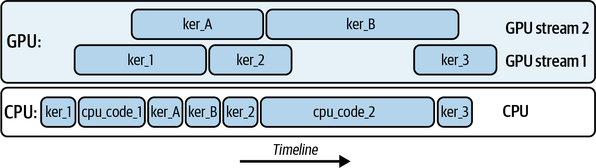</p>
<blockquote>
<p>Figure 11-1. Launching five kernels from the CPU onto the two streams running on the GPU</p>
</blockquote>
<p>这里可以看到 ker<em>A 与 ker</em>B 在 stream 2 上运行，而 ker<em>1、ker</em>2 与 ker_3 在 stream 1 上运行。只要硬件资源允许，所有核函数都可以彼此重叠——并且可以跨 CUDA streams 重叠。</p>
<blockquote>
<p>Here, we see ker<em>A and ker</em>B are running on stream 2, while ker<em>1, ker</em>2, and ker_3 are running on stream 1. All kernels may overlap with one another-and across CUDA streams-as long as hardware resources permit.</p>
</blockquote>
<p>在 stream 异步执行核函数操作的同时，CPU 能够继续执行工作（cpu<em>code</em>1 与 cpu<em>code</em>2）。在这两个 CUDA stream 上启动这五个核函数的代码如下所示：</p>
<blockquote>
<p>The CPU is able to continue performing work (cpu<em>code</em>1 and cpu<em>code</em>2) while the streams perform the kernel operations asynchronously. The code to launch these five kernels on the two CUDA streams is shown here:</p>
</blockquote>
<div class="language-cpp highlight"><pre><span></span><code><span id="__span-0-1"><a id="__codelineno-0-1" name="__codelineno-0-1" href="#__codelineno-0-1"></a><span class="cp">#include</span><span class="w"> </span><span class="cpf">&lt;cstdio&gt;</span>
</span><span id="__span-0-2"><a id="__codelineno-0-2" name="__codelineno-0-2" href="#__codelineno-0-2"></a><span class="cp">#include</span><span class="w"> </span><span class="cpf">&lt;cuda_runtime.h&gt;</span>
</span><span id="__span-0-3"><a id="__codelineno-0-3" name="__codelineno-0-3" href="#__codelineno-0-3"></a>
</span><span id="__span-0-4"><a id="__codelineno-0-4" name="__codelineno-0-4" href="#__codelineno-0-4"></a><span class="n">__global__</span><span class="w"> </span><span class="kt">void</span><span class="w"> </span><span class="n">ker_A</span><span class="p">()</span><span class="w">  </span><span class="p">{</span><span class="w"> </span><span class="cm">/* ... do some work ... */</span><span class="w"> </span><span class="p">}</span>
</span><span id="__span-0-5"><a id="__codelineno-0-5" name="__codelineno-0-5" href="#__codelineno-0-5"></a><span class="n">__global__</span><span class="w"> </span><span class="kt">void</span><span class="w"> </span><span class="n">ker_B</span><span class="p">()</span><span class="w">  </span><span class="p">{</span><span class="w"> </span><span class="cm">/* ... do some work ... */</span><span class="w"> </span><span class="p">}</span>
</span><span id="__span-0-6"><a id="__codelineno-0-6" name="__codelineno-0-6" href="#__codelineno-0-6"></a>
</span><span id="__span-0-7"><a id="__codelineno-0-7" name="__codelineno-0-7" href="#__codelineno-0-7"></a><span class="n">__global__</span><span class="w"> </span><span class="kt">void</span><span class="w"> </span><span class="n">ker_1</span><span class="p">()</span><span class="w">  </span><span class="p">{</span><span class="w"> </span><span class="cm">/* ... do some work ... */</span><span class="w"> </span><span class="p">}</span>
</span><span id="__span-0-8"><a id="__codelineno-0-8" name="__codelineno-0-8" href="#__codelineno-0-8"></a><span class="n">__global__</span><span class="w"> </span><span class="kt">void</span><span class="w"> </span><span class="n">ker_2</span><span class="p">()</span><span class="w">  </span><span class="p">{</span><span class="w"> </span><span class="cm">/* ... do some work ... */</span><span class="w"> </span><span class="p">}</span>
</span><span id="__span-0-9"><a id="__codelineno-0-9" name="__codelineno-0-9" href="#__codelineno-0-9"></a><span class="n">__global__</span><span class="w"> </span><span class="kt">void</span><span class="w"> </span><span class="n">ker_3</span><span class="p">()</span><span class="w">  </span><span class="p">{</span><span class="w"> </span><span class="cm">/* ... do some work ... */</span><span class="w"> </span><span class="p">}</span>
</span><span id="__span-0-10"><a id="__codelineno-0-10" name="__codelineno-0-10" href="#__codelineno-0-10"></a>
</span><span id="__span-0-11"><a id="__codelineno-0-11" name="__codelineno-0-11" href="#__codelineno-0-11"></a><span class="kt">int</span><span class="w"> </span><span class="n">main</span><span class="p">()</span><span class="w"> </span><span class="p">{</span>
</span><span id="__span-0-12"><a id="__codelineno-0-12" name="__codelineno-0-12" href="#__codelineno-0-12"></a><span class="w">    </span><span class="c1">// 1) 创建两个CUDA流</span>
</span><span id="__span-0-13"><a id="__codelineno-0-13" name="__codelineno-0-13" href="#__codelineno-0-13"></a><span class="w">    </span><span class="n">cudaStream_t</span><span class="w"> </span><span class="n">stream1</span><span class="p">,</span><span class="w"> </span><span class="n">stream2</span><span class="p">;</span>
</span><span id="__span-0-14"><a id="__codelineno-0-14" name="__codelineno-0-14" href="#__codelineno-0-14"></a><span class="w">    </span><span class="n">cudaStreamCreateWithFlags</span><span class="p">(</span><span class="o">&amp;</span><span class="n">stream1</span><span class="p">,</span><span class="w"> </span><span class="n">cudaStreamNonBlocking</span><span class="p">);</span>
</span><span id="__span-0-15"><a id="__codelineno-0-15" name="__codelineno-0-15" href="#__codelineno-0-15"></a><span class="w">    </span><span class="n">cudaStreamCreateWithFlags</span><span class="p">(</span><span class="o">&amp;</span><span class="n">stream2</span><span class="p">,</span><span class="w"> </span><span class="n">cudaStreamNonBlocking</span><span class="p">);</span>
</span><span id="__span-0-16"><a id="__codelineno-0-16" name="__codelineno-0-16" href="#__codelineno-0-16"></a>
</span><span id="__span-0-17"><a id="__codelineno-0-17" name="__codelineno-0-17" href="#__codelineno-0-17"></a><span class="w">    </span><span class="c1">// 2) 定义您的网格/块大小</span>
</span><span id="__span-0-18"><a id="__codelineno-0-18" name="__codelineno-0-18" href="#__codelineno-0-18"></a><span class="w">    </span><span class="n">dim3</span><span class="w"> </span><span class="nf">grid</span><span class="p">(</span><span class="mi">128</span><span class="p">);</span>
</span><span id="__span-0-19"><a id="__codelineno-0-19" name="__codelineno-0-19" href="#__codelineno-0-19"></a><span class="w">    </span><span class="n">dim3</span><span class="w"> </span><span class="nf">block</span><span class="p">(</span><span class="mi">256</span><span class="p">);</span>
</span><span id="__span-0-20"><a id="__codelineno-0-20" name="__codelineno-0-20" href="#__codelineno-0-20"></a>
</span><span id="__span-0-21"><a id="__codelineno-0-21" name="__codelineno-0-21" href="#__codelineno-0-21"></a><span class="w">    </span><span class="c1">// 3) 在stream1上启动ker_1</span>
</span><span id="__span-0-22"><a id="__codelineno-0-22" name="__codelineno-0-22" href="#__codelineno-0-22"></a><span class="w">    </span><span class="n">ker_1</span><span class="o">&lt;&lt;&lt;</span><span class="n">grid</span><span class="p">,</span><span class="w"> </span><span class="n">block</span><span class="p">,</span><span class="w"> </span><span class="mi">0</span><span class="p">,</span><span class="w"> </span><span class="n">stream1</span><span class="o">&gt;&gt;&gt;</span><span class="p">();</span>
</span><span id="__span-0-23"><a id="__codelineno-0-23" name="__codelineno-0-23" href="#__codelineno-0-23"></a>
</span><span id="__span-0-24"><a id="__codelineno-0-24" name="__codelineno-0-24" href="#__codelineno-0-24"></a><span class="w">    </span><span class="c1">// 4) CPU代码1立即运行（相对于GPU异步）</span>
</span><span id="__span-0-25"><a id="__codelineno-0-25" name="__codelineno-0-25" href="#__codelineno-0-25"></a><span class="w">    </span><span class="n">printf</span><span class="p">(</span><span class="s">"CPU code 1 executing</span><span class="se">\n</span><span class="s">"</span><span class="p">);</span>
</span><span id="__span-0-26"><a id="__codelineno-0-26" name="__codelineno-0-26" href="#__codelineno-0-26"></a>
</span><span id="__span-0-27"><a id="__codelineno-0-27" name="__codelineno-0-27" href="#__codelineno-0-27"></a><span class="w">    </span><span class="c1">// ... 在这里做一些主机端工作 ...</span>
</span><span id="__span-0-28"><a id="__codelineno-0-28" name="__codelineno-0-28" href="#__codelineno-0-28"></a><span class="w">    </span><span class="n">cpu_code_1</span><span class="p">();</span>
</span><span id="__span-0-29"><a id="__codelineno-0-29" name="__codelineno-0-29" href="#__codelineno-0-29"></a>
</span><span id="__span-0-30"><a id="__codelineno-0-30" name="__codelineno-0-30" href="#__codelineno-0-30"></a><span class="w">    </span><span class="c1">// 5) 在stream2上启动ker_A</span>
</span><span id="__span-0-31"><a id="__codelineno-0-31" name="__codelineno-0-31" href="#__codelineno-0-31"></a><span class="w">    </span><span class="n">ker_A</span><span class="o">&lt;&lt;&lt;</span><span class="n">grid</span><span class="p">,</span><span class="w"> </span><span class="n">block</span><span class="p">,</span><span class="w"> </span><span class="mi">0</span><span class="p">,</span><span class="w"> </span><span class="n">stream2</span><span class="o">&gt;&gt;&gt;</span><span class="p">();</span>
</span><span id="__span-0-32"><a id="__codelineno-0-32" name="__codelineno-0-32" href="#__codelineno-0-32"></a>
</span><span id="__span-0-33"><a id="__codelineno-0-33" name="__codelineno-0-33" href="#__codelineno-0-33"></a><span class="w">    </span><span class="c1">// 6) 在stream1上启动ker_B</span>
</span><span id="__span-0-34"><a id="__codelineno-0-34" name="__codelineno-0-34" href="#__codelineno-0-34"></a><span class="w">    </span><span class="n">ker_B</span><span class="o">&lt;&lt;&lt;</span><span class="n">grid</span><span class="p">,</span><span class="w"> </span><span class="n">block</span><span class="p">,</span><span class="w"> </span><span class="mi">0</span><span class="p">,</span><span class="w"> </span><span class="n">stream1</span><span class="o">&gt;&gt;&gt;</span><span class="p">();</span>
</span><span id="__span-0-35"><a id="__codelineno-0-35" name="__codelineno-0-35" href="#__codelineno-0-35"></a>
</span><span id="__span-0-36"><a id="__codelineno-0-36" name="__codelineno-0-36" href="#__codelineno-0-36"></a><span class="w">    </span><span class="c1">// 7) 在stream2上启动ker_2</span>
</span><span id="__span-0-37"><a id="__codelineno-0-37" name="__codelineno-0-37" href="#__codelineno-0-37"></a><span class="w">    </span><span class="n">ker_2</span><span class="o">&lt;&lt;&lt;</span><span class="n">grid</span><span class="p">,</span><span class="w"> </span><span class="n">block</span><span class="p">,</span><span class="w"> </span><span class="mi">0</span><span class="p">,</span><span class="w"> </span><span class="n">stream2</span><span class="o">&gt;&gt;&gt;</span><span class="p">();</span>
</span><span id="__span-0-38"><a id="__codelineno-0-38" name="__codelineno-0-38" href="#__codelineno-0-38"></a>
</span><span id="__span-0-39"><a id="__codelineno-0-39" name="__codelineno-0-39" href="#__codelineno-0-39"></a><span class="w">    </span><span class="c1">// 8) CPU代码2立即运行</span>
</span><span id="__span-0-40"><a id="__codelineno-0-40" name="__codelineno-0-40" href="#__codelineno-0-40"></a><span class="w">    </span><span class="n">printf</span><span class="p">(</span><span class="s">"CPU code 2 executing</span><span class="se">\n</span><span class="s">"</span><span class="p">);</span>
</span><span id="__span-0-41"><a id="__codelineno-0-41" name="__codelineno-0-41" href="#__codelineno-0-41"></a>
</span><span id="__span-0-42"><a id="__codelineno-0-42" name="__codelineno-0-42" href="#__codelineno-0-42"></a><span class="w">    </span><span class="c1">// ... 在这里做一些其他主机端工作 ...</span>
</span><span id="__span-0-43"><a id="__codelineno-0-43" name="__codelineno-0-43" href="#__codelineno-0-43"></a><span class="w">    </span><span class="n">cpu_code_2</span><span class="p">();</span>
</span><span id="__span-0-44"><a id="__codelineno-0-44" name="__codelineno-0-44" href="#__codelineno-0-44"></a>
</span><span id="__span-0-45"><a id="__codelineno-0-45" name="__codelineno-0-45" href="#__codelineno-0-45"></a><span class="w">    </span><span class="c1">// 9) 在stream1上启动ker_3</span>
</span><span id="__span-0-46"><a id="__codelineno-0-46" name="__codelineno-0-46" href="#__codelineno-0-46"></a><span class="w">    </span><span class="n">ker_3</span><span class="o">&lt;&lt;&lt;</span><span class="n">grid</span><span class="p">,</span><span class="w"> </span><span class="n">block</span><span class="p">,</span><span class="w"> </span><span class="mi">0</span><span class="p">,</span><span class="w"> </span><span class="n">stream1</span><span class="o">&gt;&gt;&gt;</span><span class="p">();</span>
</span><span id="__span-0-47"><a id="__codelineno-0-47" name="__codelineno-0-47" href="#__codelineno-0-47"></a>
</span><span id="__span-0-48"><a id="__codelineno-0-48" name="__codelineno-0-48" href="#__codelineno-0-48"></a><span class="w">    </span><span class="c1">// 10) 等待每个流上的工作完成</span>
</span><span id="__span-0-49"><a id="__codelineno-0-49" name="__codelineno-0-49" href="#__codelineno-0-49"></a><span class="w">    </span><span class="n">cudaStreamSynchronize</span><span class="p">(</span><span class="n">stream1</span><span class="p">);</span>
</span><span id="__span-0-50"><a id="__codelineno-0-50" name="__codelineno-0-50" href="#__codelineno-0-50"></a><span class="w">    </span><span class="n">cudaStreamSynchronize</span><span class="p">(</span><span class="n">stream2</span><span class="p">);</span>
</span><span id="__span-0-51"><a id="__codelineno-0-51" name="__codelineno-0-51" href="#__codelineno-0-51"></a>
</span><span id="__span-0-52"><a id="__codelineno-0-52" name="__codelineno-0-52" href="#__codelineno-0-52"></a><span class="w">    </span><span class="c1">// 11) 清理</span>
</span><span id="__span-0-53"><a id="__codelineno-0-53" name="__codelineno-0-53" href="#__codelineno-0-53"></a><span class="w">    </span><span class="n">cudaStreamDestroy</span><span class="p">(</span><span class="n">stream1</span><span class="p">);</span>
</span><span id="__span-0-54"><a id="__codelineno-0-54" name="__codelineno-0-54" href="#__codelineno-0-54"></a><span class="w">    </span><span class="n">cudaStreamDestroy</span><span class="p">(</span><span class="n">stream2</span><span class="p">);</span>
</span><span id="__span-0-55"><a id="__codelineno-0-55" name="__codelineno-0-55" href="#__codelineno-0-55"></a>
</span><span id="__span-0-56"><a id="__codelineno-0-56" name="__codelineno-0-56" href="#__codelineno-0-56"></a><span class="w">    </span><span class="k">return</span><span class="w"> </span><span class="mi">0</span><span class="p">;</span>
</span><span id="__span-0-57"><a id="__codelineno-0-57" name="__codelineno-0-57" href="#__codelineno-0-57"></a><span class="p">}</span>
</span></code></pre></div>
<p>ker<em>1 被入队到 stream1，随后控制权立即返回 CPU。cpu</em>code<em>1() 在主机上运行，与此同时 ker</em>1 在 GPU 上执行。与此并行，我们把 ker<em>A 入队到 stream2、把 ker</em>B 入队到 stream1。接着我们把 ker<em>2 入队到 stream2，穿插执行 cpu</em>code<em>2，再把 ker</em>3 入队到 stream1。最后，我们在每个 stream 上做同步，等待所有工作完成，然后销毁 stream 以清理资源。</p>
<blockquote>
<p>ker<em>1 is enqueued on stream1, then control returns immediately to the CPU. cpu</em>code<em>1() runs on the host while ker</em>1 executes on the GPU. Meanwhile, we enqueue ker<em>A on stream2 and ker</em>B on stream1. We then enqueue ker<em>2 on stream2, interleave cpu</em>code<em>2, and enqueue ker</em>3 on stream1. Finally, we synchronize on each stream to wait for all of the work to complete and then destroy the streams to clean up the resources.</p>
</blockquote>
<p>这个示例突出展示了五次不同的核函数执行跨两个不同的 stream 相互重叠。稍微增加一点复杂度，并在第 10 章的基础上构建，下面是同一个 warp 专门化流水线示例，但改用了 CUDA streams：</p>
<blockquote>
<p>This example highlights five different kernel executions overlapping across two different streams. Increasing the complexity a bit, and building upon Chapter 10, following is the same warp specialization pipeline example but using CUDA streams:</p>
</blockquote>
<div class="language-cpp highlight"><pre><span></span><code><span id="__span-1-1"><a id="__codelineno-1-1" name="__codelineno-1-1" href="#__codelineno-1-1"></a><span class="c1">// 在多个CUDA流中运行warp 专门化核函数。</span>
</span><span id="__span-1-2"><a id="__codelineno-1-2" name="__codelineno-1-2" href="#__codelineno-1-2"></a>
</span><span id="__span-1-3"><a id="__codelineno-1-3" name="__codelineno-1-3" href="#__codelineno-1-3"></a><span class="cp">#include</span><span class="w"> </span><span class="cpf">&lt;cuda_runtime.h&gt;</span>
</span><span id="__span-1-4"><a id="__codelineno-1-4" name="__codelineno-1-4" href="#__codelineno-1-4"></a><span class="cp">#include</span><span class="w"> </span><span class="cpf">&lt;cuda/pipeline&gt;</span>
</span><span id="__span-1-5"><a id="__codelineno-1-5" name="__codelineno-1-5" href="#__codelineno-1-5"></a><span class="cp">#include</span><span class="w"> </span><span class="cpf">&lt;cooperative_groups.h&gt;</span>
</span><span id="__span-1-6"><a id="__codelineno-1-6" name="__codelineno-1-6" href="#__codelineno-1-6"></a><span class="k">namespace</span><span class="w"> </span><span class="nn">cg</span><span class="w"> </span><span class="o">=</span><span class="w"> </span><span class="nn">cooperative_groups</span><span class="p">;</span>
</span><span id="__span-1-7"><a id="__codelineno-1-7" name="__codelineno-1-7" href="#__codelineno-1-7"></a>
</span><span id="__span-1-8"><a id="__codelineno-1-8" name="__codelineno-1-8" href="#__codelineno-1-8"></a><span class="cp">#define TILE_SIZE 128</span>
</span><span id="__span-1-9"><a id="__codelineno-1-9" name="__codelineno-1-9" href="#__codelineno-1-9"></a><span class="cp">#define TILE_ELEMS (TILE_SIZE * TILE_SIZE)</span>
</span><span id="__span-1-10"><a id="__codelineno-1-10" name="__codelineno-1-10" href="#__codelineno-1-10"></a>
</span><span id="__span-1-11"><a id="__codelineno-1-11" name="__codelineno-1-11" href="#__codelineno-1-11"></a><span class="c1">// 从第10章重用</span>
</span><span id="__span-1-12"><a id="__codelineno-1-12" name="__codelineno-1-12" href="#__codelineno-1-12"></a><span class="n">__global__</span><span class="w"> </span><span class="kt">void</span><span class="w"> </span><span class="n">warp_specialized_pipeline</span><span class="p">(</span><span class="k">const</span><span class="w"> </span><span class="kt">float</span><span class="o">*</span><span class="w"> </span><span class="n">__restrict__</span><span class="w"> </span><span class="n">A_global</span><span class="p">,</span>
</span><span id="__span-1-13"><a id="__codelineno-1-13" name="__codelineno-1-13" href="#__codelineno-1-13"></a><span class="w">                                          </span><span class="k">const</span><span class="w"> </span><span class="kt">float</span><span class="o">*</span><span class="w"> </span><span class="n">__restrict__</span><span class="w"> </span><span class="n">B_global</span><span class="p">,</span>
</span><span id="__span-1-14"><a id="__codelineno-1-14" name="__codelineno-1-14" href="#__codelineno-1-14"></a><span class="w">                                          </span><span class="kt">float</span><span class="o">*</span><span class="w">       </span><span class="n">__restrict__</span><span class="w"> </span><span class="n">C_global</span><span class="p">,</span>
</span><span id="__span-1-15"><a id="__codelineno-1-15" name="__codelineno-1-15" href="#__codelineno-1-15"></a><span class="w">                                          </span><span class="kt">int</span><span class="w"> </span><span class="n">numTiles</span><span class="p">);</span>
</span><span id="__span-1-16"><a id="__codelineno-1-16" name="__codelineno-1-16" href="#__codelineno-1-16"></a>
</span><span id="__span-1-17"><a id="__codelineno-1-17" name="__codelineno-1-17" href="#__codelineno-1-17"></a><span class="kt">int</span><span class="w"> </span><span class="nf">main</span><span class="p">()</span><span class="w"> </span><span class="p">{</span>
</span><span id="__span-1-18"><a id="__codelineno-1-18" name="__codelineno-1-18" href="#__codelineno-1-18"></a><span class="w">    </span><span class="k">const</span><span class="w"> </span><span class="kt">int</span><span class="w"> </span><span class="n">NUM_STREAMS</span><span class="w"> </span><span class="o">=</span><span class="w"> </span><span class="mi">2</span><span class="p">;</span><span class="w">                   </span><span class="c1">// 保持较小；根据需要调整</span>
</span><span id="__span-1-19"><a id="__codelineno-1-19" name="__codelineno-1-19" href="#__codelineno-1-19"></a><span class="w">    </span><span class="k">const</span><span class="w"> </span><span class="kt">int</span><span class="w"> </span><span class="n">batches</span><span class="w">     </span><span class="o">=</span><span class="w"> </span><span class="mi">8</span><span class="p">;</span><span class="w">                   </span><span class="c1">// 正在处理的批次</span>
</span><span id="__span-1-20"><a id="__codelineno-1-20" name="__codelineno-1-20" href="#__codelineno-1-20"></a>
</span><span id="__span-1-21"><a id="__codelineno-1-21" name="__codelineno-1-21" href="#__codelineno-1-21"></a><span class="w">    </span><span class="k">const</span><span class="w"> </span><span class="kt">size_t</span><span class="w"> </span><span class="n">elems</span><span class="w">    </span><span class="o">=</span><span class="w"> </span><span class="n">TILE_ELEMS</span><span class="p">;</span><span class="w">          </span><span class="c1">// 每批次的元素数</span>
</span><span id="__span-1-22"><a id="__codelineno-1-22" name="__codelineno-1-22" href="#__codelineno-1-22"></a><span class="w">    </span><span class="k">const</span><span class="w"> </span><span class="kt">size_t</span><span class="w"> </span><span class="n">bytes</span><span class="w">    </span><span class="o">=</span><span class="w"> </span><span class="n">elems</span><span class="w"> </span><span class="o">*</span><span class="w"> </span><span class="k">sizeof</span><span class="p">(</span><span class="kt">float</span><span class="p">);</span>
</span><span id="__span-1-23"><a id="__codelineno-1-23" name="__codelineno-1-23" href="#__codelineno-1-23"></a>
</span><span id="__span-1-24"><a id="__codelineno-1-24" name="__codelineno-1-24" href="#__codelineno-1-24"></a><span class="w">    </span><span class="c1">// 创建不同步于传统默认流的流</span>
</span><span id="__span-1-25"><a id="__codelineno-1-25" name="__codelineno-1-25" href="#__codelineno-1-25"></a><span class="w">    </span><span class="n">cudaStream_t</span><span class="w"> </span><span class="n">s</span><span class="p">[</span><span class="n">NUM_STREAMS</span><span class="p">];</span>
</span><span id="__span-1-26"><a id="__codelineno-1-26" name="__codelineno-1-26" href="#__codelineno-1-26"></a><span class="w">    </span><span class="k">for</span><span class="w"> </span><span class="p">(</span><span class="kt">int</span><span class="w"> </span><span class="n">i</span><span class="w"> </span><span class="o">=</span><span class="w"> </span><span class="mi">0</span><span class="p">;</span><span class="w"> </span><span class="n">i</span><span class="w"> </span><span class="o">&lt;</span><span class="w"> </span><span class="n">NUM_STREAMS</span><span class="p">;</span><span class="w"> </span><span class="o">++</span><span class="n">i</span><span class="p">)</span>
</span><span id="__span-1-27"><a id="__codelineno-1-27" name="__codelineno-1-27" href="#__codelineno-1-27"></a><span class="w">        </span><span class="n">cudaStreamCreateWithFlags</span><span class="p">(</span><span class="o">&amp;</span><span class="n">s</span><span class="p">[</span><span class="n">i</span><span class="p">],</span><span class="w"> </span><span class="n">cudaStreamNonBlocking</span><span class="p">);</span>
</span><span id="__span-1-28"><a id="__codelineno-1-28" name="__codelineno-1-28" href="#__codelineno-1-28"></a>
</span><span id="__span-1-29"><a id="__codelineno-1-29" name="__codelineno-1-29" href="#__codelineno-1-29"></a><span class="w">    </span><span class="c1">// 分配固定主机缓冲区，以便H2D/D2H可以真正重叠</span>
</span><span id="__span-1-30"><a id="__codelineno-1-30" name="__codelineno-1-30" href="#__codelineno-1-30"></a><span class="w">    </span><span class="kt">float</span><span class="w"> </span><span class="o">*</span><span class="n">hA</span><span class="w"> </span><span class="o">=</span><span class="w"> </span><span class="nb">nullptr</span><span class="p">,</span><span class="w"> </span><span class="o">*</span><span class="n">hB</span><span class="w"> </span><span class="o">=</span><span class="w"> </span><span class="nb">nullptr</span><span class="p">,</span><span class="w"> </span><span class="o">*</span><span class="n">hC</span><span class="w"> </span><span class="o">=</span><span class="w"> </span><span class="nb">nullptr</span><span class="p">;</span>
</span><span id="__span-1-31"><a id="__codelineno-1-31" name="__codelineno-1-31" href="#__codelineno-1-31"></a><span class="w">    </span><span class="n">cudaMallocHost</span><span class="p">(</span><span class="o">&amp;</span><span class="n">hA</span><span class="p">,</span><span class="w"> </span><span class="n">batches</span><span class="w"> </span><span class="o">*</span><span class="w"> </span><span class="n">bytes</span><span class="p">);</span>
</span><span id="__span-1-32"><a id="__codelineno-1-32" name="__codelineno-1-32" href="#__codelineno-1-32"></a><span class="w">    </span><span class="n">cudaMallocHost</span><span class="p">(</span><span class="o">&amp;</span><span class="n">hB</span><span class="p">,</span><span class="w"> </span><span class="n">batches</span><span class="w"> </span><span class="o">*</span><span class="w"> </span><span class="n">bytes</span><span class="p">);</span>
</span><span id="__span-1-33"><a id="__codelineno-1-33" name="__codelineno-1-33" href="#__codelineno-1-33"></a><span class="w">    </span><span class="n">cudaMallocHost</span><span class="p">(</span><span class="o">&amp;</span><span class="n">hC</span><span class="p">,</span><span class="w"> </span><span class="n">batches</span><span class="w"> </span><span class="o">*</span><span class="w"> </span><span class="n">bytes</span><span class="p">);</span>
</span><span id="__span-1-34"><a id="__codelineno-1-34" name="__codelineno-1-34" href="#__codelineno-1-34"></a>
</span><span id="__span-1-35"><a id="__codelineno-1-35" name="__codelineno-1-35" href="#__codelineno-1-35"></a><span class="w">    </span><span class="c1">// ... 初始化hA/hB ...</span>
</span><span id="__span-1-36"><a id="__codelineno-1-36" name="__codelineno-1-36" href="#__codelineno-1-36"></a>
</span><span id="__span-1-37"><a id="__codelineno-1-37" name="__codelineno-1-37" href="#__codelineno-1-37"></a><span class="w">    </span><span class="k">for</span><span class="w"> </span><span class="p">(</span><span class="kt">int</span><span class="w"> </span><span class="n">b</span><span class="w"> </span><span class="o">=</span><span class="w"> </span><span class="mi">0</span><span class="p">;</span><span class="w"> </span><span class="n">b</span><span class="w"> </span><span class="o">&lt;</span><span class="w"> </span><span class="n">batches</span><span class="p">;</span><span class="w"> </span><span class="o">++</span><span class="n">b</span><span class="p">)</span><span class="w"> </span><span class="p">{</span>
</span><span id="__span-1-38"><a id="__codelineno-1-38" name="__codelineno-1-38" href="#__codelineno-1-38"></a><span class="w">        </span><span class="k">const</span><span class="w"> </span><span class="kt">int</span><span class="w"> </span><span class="n">sid</span><span class="w"> </span><span class="o">=</span><span class="w"> </span><span class="n">b</span><span class="w"> </span><span class="o">%</span><span class="w"> </span><span class="n">NUM_STREAMS</span><span class="p">;</span>
</span><span id="__span-1-39"><a id="__codelineno-1-39" name="__codelineno-1-39" href="#__codelineno-1-39"></a>
</span><span id="__span-1-40"><a id="__codelineno-1-40" name="__codelineno-1-40" href="#__codelineno-1-40"></a><span class="w">        </span><span class="kt">float</span><span class="w"> </span><span class="o">*</span><span class="n">dA</span><span class="w"> </span><span class="o">=</span><span class="w"> </span><span class="nb">nullptr</span><span class="p">,</span><span class="w"> </span><span class="o">*</span><span class="n">dB</span><span class="w"> </span><span class="o">=</span><span class="w"> </span><span class="nb">nullptr</span><span class="p">,</span><span class="w"> </span><span class="o">*</span><span class="n">dC</span><span class="w"> </span><span class="o">=</span><span class="w"> </span><span class="nb">nullptr</span><span class="p">;</span>
</span><span id="__span-1-41"><a id="__codelineno-1-41" name="__codelineno-1-41" href="#__codelineno-1-41"></a><span class="w">        </span><span class="n">cudaMallocAsync</span><span class="p">(</span><span class="o">&amp;</span><span class="n">dA</span><span class="p">,</span><span class="w"> </span><span class="n">bytes</span><span class="p">,</span><span class="w"> </span><span class="n">s</span><span class="p">[</span><span class="n">sid</span><span class="p">]);</span>
</span><span id="__span-1-42"><a id="__codelineno-1-42" name="__codelineno-1-42" href="#__codelineno-1-42"></a><span class="w">        </span><span class="n">cudaMallocAsync</span><span class="p">(</span><span class="o">&amp;</span><span class="n">dB</span><span class="p">,</span><span class="w"> </span><span class="n">bytes</span><span class="p">,</span><span class="w"> </span><span class="n">s</span><span class="p">[</span><span class="n">sid</span><span class="p">]);</span>
</span><span id="__span-1-43"><a id="__codelineno-1-43" name="__codelineno-1-43" href="#__codelineno-1-43"></a><span class="w">        </span><span class="n">cudaMallocAsync</span><span class="p">(</span><span class="o">&amp;</span><span class="n">dC</span><span class="p">,</span><span class="w"> </span><span class="n">bytes</span><span class="p">,</span><span class="w"> </span><span class="n">s</span><span class="p">[</span><span class="n">sid</span><span class="p">]);</span>
</span><span id="__span-1-44"><a id="__codelineno-1-44" name="__codelineno-1-44" href="#__codelineno-1-44"></a>
</span><span id="__span-1-45"><a id="__codelineno-1-45" name="__codelineno-1-45" href="#__codelineno-1-45"></a><span class="w">        </span><span class="n">cudaMemcpyAsync</span><span class="p">(</span><span class="n">dA</span><span class="p">,</span><span class="w"> </span><span class="n">hA</span><span class="w"> </span><span class="o">+</span><span class="w"> </span><span class="n">b</span><span class="w"> </span><span class="o">*</span><span class="w"> </span><span class="n">elems</span><span class="p">,</span><span class="w"> </span><span class="n">bytes</span><span class="p">,</span><span class="w"> </span>
</span><span id="__span-1-46"><a id="__codelineno-1-46" name="__codelineno-1-46" href="#__codelineno-1-46"></a><span class="w">                        </span><span class="n">cudaMemcpyHostToDevice</span><span class="p">,</span><span class="w"> </span><span class="n">s</span><span class="p">[</span><span class="n">sid</span><span class="p">]);</span>
</span><span id="__span-1-47"><a id="__codelineno-1-47" name="__codelineno-1-47" href="#__codelineno-1-47"></a><span class="w">        </span><span class="n">cudaMemcpyAsync</span><span class="p">(</span><span class="n">dB</span><span class="p">,</span><span class="w"> </span><span class="n">hB</span><span class="w"> </span><span class="o">+</span><span class="w"> </span><span class="n">b</span><span class="w"> </span><span class="o">*</span><span class="w"> </span><span class="n">elems</span><span class="p">,</span><span class="w"> </span><span class="n">bytes</span><span class="p">,</span><span class="w"> </span>
</span><span id="__span-1-48"><a id="__codelineno-1-48" name="__codelineno-1-48" href="#__codelineno-1-48"></a><span class="w">                        </span><span class="n">cudaMemcpyHostToDevice</span><span class="p">,</span><span class="w"> </span><span class="n">s</span><span class="p">[</span><span class="n">sid</span><span class="p">]);</span>
</span><span id="__span-1-49"><a id="__codelineno-1-49" name="__codelineno-1-49" href="#__codelineno-1-49"></a>
</span><span id="__span-1-50"><a id="__codelineno-1-50" name="__codelineno-1-50" href="#__codelineno-1-50"></a><span class="w">        </span><span class="k">const</span><span class="w"> </span><span class="n">dim3</span><span class="w"> </span><span class="n">block</span><span class="p">(</span><span class="mi">96</span><span class="p">);</span><span class="w">    </span><span class="c1">// 三个warp：加载器(0)、计算器(1)、存储器(2)</span>
</span><span id="__span-1-51"><a id="__codelineno-1-51" name="__codelineno-1-51" href="#__codelineno-1-51"></a><span class="w">        </span><span class="k">const</span><span class="w"> </span><span class="n">dim3</span><span class="w"> </span><span class="n">grid</span><span class="p">(</span><span class="mi">1</span><span class="p">);</span>
</span><span id="__span-1-52"><a id="__codelineno-1-52" name="__codelineno-1-52" href="#__codelineno-1-52"></a><span class="w">        </span><span class="k">const</span><span class="w"> </span><span class="kt">size_t</span><span class="w"> </span><span class="n">shmem</span><span class="w"> </span><span class="o">=</span><span class="w"> </span><span class="mi">3</span><span class="w"> </span><span class="o">*</span><span class="w"> </span><span class="n">elems</span><span class="w"> </span><span class="o">*</span><span class="w"> </span><span class="k">sizeof</span><span class="p">(</span><span class="kt">float</span><span class="p">);</span><span class="w"> </span><span class="c1">// 每个块[A|B|C]</span>
</span><span id="__span-1-53"><a id="__codelineno-1-53" name="__codelineno-1-53" href="#__codelineno-1-53"></a>
</span><span id="__span-1-54"><a id="__codelineno-1-54" name="__codelineno-1-54" href="#__codelineno-1-54"></a><span class="w">        </span><span class="c1">// 完全按原样重用第10章的核函数</span>
</span><span id="__span-1-55"><a id="__codelineno-1-55" name="__codelineno-1-55" href="#__codelineno-1-55"></a><span class="w">        </span><span class="n">warp_specialized_pipeline</span><span class="o">&lt;&lt;&lt;</span><span class="n">grid</span><span class="p">,</span><span class="w"> </span><span class="n">block</span><span class="p">,</span><span class="w"> </span><span class="n">shmem</span><span class="p">,</span><span class="w"> </span><span class="n">s</span><span class="p">[</span><span class="n">sid</span><span class="p">]</span><span class="o">&gt;&gt;&gt;</span><span class="p">(</span>
</span><span id="__span-1-56"><a id="__codelineno-1-56" name="__codelineno-1-56" href="#__codelineno-1-56"></a><span class="w">            </span><span class="n">dA</span><span class="p">,</span><span class="w"> </span><span class="n">dB</span><span class="p">,</span><span class="w"> </span><span class="n">dC</span><span class="p">,</span><span class="w"> </span>
</span><span id="__span-1-57"><a id="__codelineno-1-57" name="__codelineno-1-57" href="#__codelineno-1-57"></a><span class="w">            </span><span class="cm">/*numTiles=*/</span><span class="mi">1</span><span class="p">);</span>
</span><span id="__span-1-58"><a id="__codelineno-1-58" name="__codelineno-1-58" href="#__codelineno-1-58"></a>
</span><span id="__span-1-59"><a id="__codelineno-1-59" name="__codelineno-1-59" href="#__codelineno-1-59"></a><span class="w">        </span><span class="n">cudaMemcpyAsync</span><span class="p">(</span><span class="n">hC</span><span class="o">+</span><span class="n">b</span><span class="o">*</span><span class="n">elems</span><span class="p">,</span><span class="w"> </span><span class="n">dC</span><span class="p">,</span><span class="w"> </span><span class="n">bytes</span><span class="p">,</span><span class="w"> </span>
</span><span id="__span-1-60"><a id="__codelineno-1-60" name="__codelineno-1-60" href="#__codelineno-1-60"></a><span class="w">                        </span><span class="n">cudaMemcpyDeviceToHost</span><span class="p">,</span><span class="w"> </span><span class="n">s</span><span class="p">[</span><span class="n">sid</span><span class="p">]);</span>
</span><span id="__span-1-61"><a id="__codelineno-1-61" name="__codelineno-1-61" href="#__codelineno-1-61"></a>
</span><span id="__span-1-62"><a id="__codelineno-1-62" name="__codelineno-1-62" href="#__codelineno-1-62"></a><span class="w">        </span><span class="n">cudaFreeAsync</span><span class="p">(</span><span class="n">dA</span><span class="p">,</span><span class="w"> </span><span class="n">s</span><span class="p">[</span><span class="n">sid</span><span class="p">]);</span>
</span><span id="__span-1-63"><a id="__codelineno-1-63" name="__codelineno-1-63" href="#__codelineno-1-63"></a><span class="w">        </span><span class="n">cudaFreeAsync</span><span class="p">(</span><span class="n">dB</span><span class="p">,</span><span class="w"> </span><span class="n">s</span><span class="p">[</span><span class="n">sid</span><span class="p">]);</span>
</span><span id="__span-1-64"><a id="__codelineno-1-64" name="__codelineno-1-64" href="#__codelineno-1-64"></a><span class="w">        </span><span class="n">cudaFreeAsync</span><span class="p">(</span><span class="n">dC</span><span class="p">,</span><span class="w"> </span><span class="n">s</span><span class="p">[</span><span class="n">sid</span><span class="p">]);</span>
</span><span id="__span-1-65"><a id="__codelineno-1-65" name="__codelineno-1-65" href="#__codelineno-1-65"></a><span class="w">    </span><span class="p">}</span>
</span><span id="__span-1-66"><a id="__codelineno-1-66" name="__codelineno-1-66" href="#__codelineno-1-66"></a>
</span><span id="__span-1-67"><a id="__codelineno-1-67" name="__codelineno-1-67" href="#__codelineno-1-67"></a><span class="w">    </span><span class="k">for</span><span class="w"> </span><span class="p">(</span><span class="kt">int</span><span class="w"> </span><span class="n">i</span><span class="w"> </span><span class="o">=</span><span class="w"> </span><span class="mi">0</span><span class="p">;</span><span class="w"> </span><span class="n">i</span><span class="w"> </span><span class="o">&lt;</span><span class="w"> </span><span class="n">NUM_STREAMS</span><span class="p">;</span><span class="w"> </span><span class="o">++</span><span class="n">i</span><span class="p">)</span><span class="w"> </span><span class="p">{</span>
</span><span id="__span-1-68"><a id="__codelineno-1-68" name="__codelineno-1-68" href="#__codelineno-1-68"></a><span class="w">        </span><span class="n">cudaStreamSynchronize</span><span class="p">(</span><span class="n">s</span><span class="p">[</span><span class="n">i</span><span class="p">]);</span>
</span><span id="__span-1-69"><a id="__codelineno-1-69" name="__codelineno-1-69" href="#__codelineno-1-69"></a><span class="w">        </span><span class="n">cudaStreamDestroy</span><span class="p">(</span><span class="n">s</span><span class="p">[</span><span class="n">i</span><span class="p">]);</span>
</span><span id="__span-1-70"><a id="__codelineno-1-70" name="__codelineno-1-70" href="#__codelineno-1-70"></a><span class="w">    </span><span class="p">}</span>
</span><span id="__span-1-71"><a id="__codelineno-1-71" name="__codelineno-1-71" href="#__codelineno-1-71"></a>
</span><span id="__span-1-72"><a id="__codelineno-1-72" name="__codelineno-1-72" href="#__codelineno-1-72"></a><span class="w">    </span><span class="n">cudaFreeHost</span><span class="p">(</span><span class="n">hA</span><span class="p">);</span><span class="w"> </span><span class="n">cudaFreeHost</span><span class="p">(</span><span class="n">hB</span><span class="p">);</span><span class="w"> </span><span class="n">cudaFreeHost</span><span class="p">(</span><span class="n">hC</span><span class="p">);</span>
</span><span id="__span-1-73"><a id="__codelineno-1-73" name="__codelineno-1-73" href="#__codelineno-1-73"></a><span class="w">    </span><span class="k">return</span><span class="w"> </span><span class="mi">0</span><span class="p">;</span>
</span><span id="__span-1-74"><a id="__codelineno-1-74" name="__codelineno-1-74" href="#__codelineno-1-74"></a><span class="p">}</span>
</span></code></pre></div>
<p>这里，我们复用了 warp 专门化流水线，并展示了 stream 如何再加一层重叠：当 stream 1 在批次 n 上做计算时，stream 2 正在批次 b+1 上执行 DMA 加载。与此同时，它还能把批次 b−1 拷回。核函数内部的 cuda::pipeline 重叠保持不变。</p>
<blockquote>
<p>Here, we are re-using the warp-specialized pipeline and showing how streams add a second layer of overlap such that while stream 1 computes on batch n, stream 2 is performing DMA-loads on batch b+1. At the same time, it can copy back batch b-1. The kernel's internal cuda::pipeline overlap remains unchanged.</p>
</blockquote>
<p>我们会在本章后面继续叠加线程块簇（thread block cluster）来构建更高的复杂度，但让我们先深入了解 stream 如何帮助把计算与数据传输重叠起来。这有助于夯实 CUDA streams 的基础知识及其在基于 GPU 的性能工程中的作用。</p>
<blockquote>
<p>We'll continue to build out the complexity later in the chapter by layering in thread block clusters, but let's first dive into how streams help to overlap compute with data transfers. This will help solidify the fundamentals of CUDA streams and their role in GPU-based performance engineering.</p>
</blockquote>
<h3 id="using-streams-to-overlap-compute-with-data-transfers">使用流重叠计算和数据传输 (Using Streams to Overlap Compute with Data Transfers)<a class="headerlink" href="#using-streams-to-overlap-compute-with-data-transfers" title="Permanent link">&para;</a></h3>
<p>例如，你可以把每次核函数启动与内存拷贝入队到各自的 stream 中。这让 SM 得以执行核函数，而两个专用 DMA 引擎（一个负责主机 → 设备传输，一个负责设备 → 主机传输）并发地搬运数据。</p>
<blockquote>
<p>For instance, you can enqueue each kernel launch and memory copy into its own stream. This allows the SMs to execute kernels while the two dedicated DMA engines (one for Host → Device transfers and one for Device → Host transfers) move data concurrently. Since the SM compute pipeline runs independently of the two DMA engines, you can fully overlap the kernel's computation with the two data transfers using CUDA streams. However, if the compute is fully maxed out by a kernel using all SM throughput-or a copy pipeline is saturating the memory bandwidth with excessive, additional overlapping-it will not improve performance.</p>
</blockquote>
<p>当计算与内存吞吐都饱和时，你会开始看到两个并发操作各自只跑到 50%（举例而言），因为它们都在争抢同一资源。你可以对 GPU 利用率做剖析，以识别这些饱和阈值。</p>
<blockquote>
<p>When compute and memory throughput are saturated, you'll start seeing two concurrent operations each running at 50%, for instance, since they are both contending for the same resource. You can profile GPU utilization to identify these saturation thresholds.</p>
</blockquote>
<p>例如，设想一个把工作切分成批次的 AI 模型训练或推理工作负载。此时，你会在 stream 0 上启动批次 0 的核函数，与此同时 stream 1 调用 cudaMemcpyAsync() 把批次 1 从主机拷贝到设备，如图 11-2 所示。</p>
<blockquote>
<p>For example, consider an AI model training or inference workload that breaks work into batches. Here, you would launch a kernel on batch 0 in stream 0 at the same time that stream 1 invokes cudaMemcpyAsync() to copy batch 1 from the host to device, as shown in Figure 11-2.</p>
</blockquote>
<p>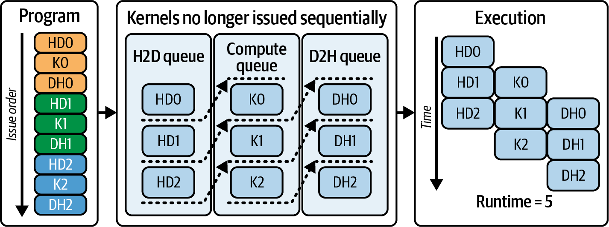</p>
<blockquote>
<p>Figure 11-2. Timeline of three-way overlap</p>
</blockquote>
<p>在至少有两个拷贝引擎（deviceProp.asyncEngineCount Count()）的现代 GPU 上，你可以把它扩展为三路重叠：stream 0 运行批次 0 的核函数，stream 1 把批次 1 从主机拷贝到设备，stream 2 把上一批次的结果写回主机。这可以进一步扩展到更多 stream。这种模式把数据传输延迟隐藏在计算之后，反之亦然，从而让 GPU 的所有引擎保持繁忙、把空闲时间降到最低。</p>
<blockquote>
<p>On modern GPUs with at least two copy engines (deviceProp.asyncEngineCount()), you can extend this to a three-way overlap such that stream 0 runs the kernel for batch 0, stream 1 copies batch 1 host to device, and stream 2 writes the results of the previous batch back to the host. This extends to additional streams. This pattern hides data‐transfer latency behind computation, and vice versa, keeping all of the GPU's engines busy and minimizing idle time.</p>
</blockquote>
<p>在实践中，你的核函数必须满足若干要求才能实现这种并发行为。首先，异步传输中使用的任何主机指针都必须是页锁定（page-locked），即固定（pinned）的。如果你对可分页内存（pageable memory）调用 cudaMemcpyAsync()，运行时会在主机侧执行一次到固定内存的暂存拷贝，这会阻塞发起调用的主机线程以及入队所在的 stream，直到暂存完成。</p>
<blockquote>
<p>In practice, your kernel must meet several requirements to achieve this concurrent behavior. First, any host pointer used in an asynchronous transfer must be page-locked, or pinned. If you call cudaMemcpyAsync() on pageable memory, the runtime performs a host-side staging copy into pinned memory that blocks the calling host thread and the enqueuing stream until staging completes.</p>
</blockquote>
<p>这会使该次传输无法异步进行。虽然这会阻塞发起调用的主机线程，但 GPU 仍可以在其他 stream 中重叠计算与拷贝。只是那一次特定的传输不会正确重叠。要在你的 stream 中实现完全异步的传输，你必须使用固定主机内存（pinned host memory）。</p>
<blockquote>
<p>This prevents that transfer from being asynchronous. While this blocks the calling host thread, the GPU can still overlap compute and copies in other streams. But that specific transfer will not overlap correctly. To achieve fully asynchronous transfers in your stream, you must use pinned host memory.</p>
</blockquote>
<p>在 PyTorch 的 DataLoader 中设置 pin_memory=True，就是在把你的主机缓冲区页锁定，以便数据能通过 DMA 直接传输到 GPU 内存。这让拷贝得以与计算重叠，并立即把控制权交还主机。DMA 引擎可以把传输与计算重叠起来。可分页内存会强制一次隐藏的暂存拷贝，从而破坏该次传输的重叠。</p>
<blockquote>
<p>By setting pin_memory=True with PyTorch's DataLoader, you are page locking your host buffers so that data can be transferred using DMA directly into GPU memory. This allows the copy to overlap with computation and return control to the host immediately. DMA engines can overlap transfers with compute. Pageable memory forces a hidden staging copy and defeats overlap for that transfer.</p>
</blockquote>
<p>其次，你应当使用异步的分配与释放例程 cudaMallocAsync() 与 cudaFreeAsync()，而不是同步且阻塞的 cudaMalloc() 或 cudaFree() 调用。像 PyTorch 这样的框架提供了使用 CUDA 异步、流序内存分配器的选项。其思路是：在分配内存时不要停顿所有活跃的 stream。那样做对性能会非常糟糕。</p>
<blockquote>
<p>Second, you should use the asynchronous allocation and deallocation routines, cudaMallocAsync() and cudaFreeAsync(), instead of the synchronous and blocking cudaMalloc() or cudaFree() calls. Frameworks like PyTorch provide the option to use CUDA's asynchronous, stream-ordered memory allocator. The idea is to not stall all active streams when you allocate memory. This would be very bad for performance.</p>
</blockquote>
<p>异步的流序分配器允许每个 stream 请求或归还设备内存，而无需等待其他 stream。使用异步分配器可确保一个 stream 中的内存操作不会停顿其他 stream 中的操作。这将避免不必要的全局同步。让我们在下一节探讨流序内存分配器。</p>
<blockquote>
<p>The asynchronous stream-ordered allocator allows each stream to request or return device memory without waiting on other streams. Using the asynchronous allocator ensures memory operations in one stream don't stall operations in other streams. This will avoid unnecessary global synchronization. Let's explore the stream-ordered memory allocator in the next section.</p>
</blockquote>
<p>PyTorch 默认的 CUDA 缓存分配器是感知 stream 的（stream-aware），在正常运行时（例如从其缓存中服务分配请求），它会避免设备级同步（device-wide synchronization）。只有当它必须用 cudaMalloc 向操作系统申请更多内存时，才会发生同步。在实践中这意味着大多数张量的分配与释放不会阻塞其他 stream。启用 cudaMallocAsync 后端还能在许多工作负载中进一步减少碎片化（fragmentation）、提升复用，接下来你就会看到这一点。</p>
<blockquote>
<p>PyTorch's default CUDA caching allocator is stream-aware and, in normal operation (e.g., servicing allocations from its cache), it avoids device-wide synchronization. Only when it has to request more memory from the OS using cudaMalloc would a synchronization occur. In practice this means most tensor allocations and frees don't block other streams. Enabling the cudaMallocAsync backend can further reduce fragmentation and improve reuse in many workloads, as you'll see next.</p>
</blockquote>
<h2 id="stream-ordered-memory-allocator">流有序内存分配器 (Stream-Ordered Memory Allocator)<a class="headerlink" href="#stream-ordered-memory-allocator" title="Permanent link">&para;</a></h2>
<p>在 PyTorch 中，你可以在启动 PyTorch 脚本之前设置环境变量 PYTORCH<em>ALLOC</em>CONF=backend:cudaMallocAsync 来启用 CUDA 的流序分配器。如果设置了该变量，PyTorch 的张量内存分配（cudaMallocAsync()）与释放（cudaFreeAsync()）操作会按照它们被调用的顺序入队到各自独立的 CUDA stream 中。当没有设置这个环境变量时，PyTorch 会使用它自己的缓存分配器。</p>
<blockquote>
<p>In PyTorch, you can enable CUDA's stream‐ordered allocator by setting the environment variable PYTORCH<em>ALLOC</em>CONF=backend:cudaMallocAsync before launching your PyTorch script. If this variable is set, PyTorch tensor memory allocation (cudaMallocAsync()) and free (cudaFreeAsync()) operations are enqueued in separate CUDA streams in the order in which they are invoked. When this environment variant is not set, PyTorch uses its own caching allocator.</p>
</blockquote>
<p>如果你使用传统的 cudaMalloc(...)，请记住它是一个阻塞的、设备级的操作，会在返回前同步整个设备。这会停顿其他 stream 中的工作，因为每一次分配都会强制整个 GPU 停顿，直到内存被预留完毕。这会暂停所有 stream、限制并行性，并摧毁你工作负载的性能。</p>
<blockquote>
<p>If you use the legacy cudaMalloc(...), remember that it's a blocking, device-wide operation that synchronizes the device before returning. This can stall work in other streams since every allocation forces the entire GPU to stall until the memory is reserved. This pauses all streams, limits parallelism, and destroys your workload's performance.</p>
</blockquote>
<p>相比之下，使用带 cudaMallocAsync(...) 的流序分配器只是把分配请求记录到将要使用它的那个 CUDA stream 中——无论该 stream 正在执行核函数还是内存操作。它不会阻塞其他 stream。这样，内存管理就绝不会把正在给这些核函数供料的 stream 串行化。</p>
<blockquote>
<p>In contrast, using the stream‐ordered allocator with cudaMallocAsync(...) simply records the allocation request in the same CUDA stream that will use it-whether the stream is performing a kernel or memory operation. It will not block the other streams. This way, memory management never serializes streams that are feeding those kernels.</p>
</blockquote>
<p>CUDA 的流有序分配器在 PyTorch 中使用，避免了全局设备锁并减少了分配开销。</p>
<blockquote>
<p>CUDA's stream-ordered allocator, used in PyTorch, avoids global device locks and reduces allocation overhead.</p>
</blockquote>
<p>在实践中，stream 0 可能正在批次 N 上执行一个 attention 核函数，stream 1 把批次 N+1 从主机拷贝到设备，而 stream 2 为批次 N+2 入队一个 cudaMallocAsync(...)。由于 cudaMallocAsync(...) 只是把它的工作追加到 stream 2 的队列中，stream 0 与 stream 1 得以不被打断地继续运行。</p>
<blockquote>
<p>In practice, stream 0 might be executing an attention kernel on batch N, stream 1 copies batch N+1 from host to device, and stream 2 enqueues a cudaMallocAsync(...) for batch N+2. Because cudaMallocAsync(...) simply appends its work into stream 2's queue, streams 0 and 1 continue without interruption.</p>
</blockquote>
<p>有了感知 stream 的分配器，为每个小批量（mini-batch）分配 GPU 内存都不会阻塞其他 stream。这对于要为每个批次分配暂存空间的 LLM 流水线很重要。即便在剧烈的内存变动之下，异步分配器也能防止停顿。</p>
<blockquote>
<p>With the stream-aware allocator, GPU memory for each mini-batch is allocated without blocking other streams. This is important for LLM pipelines that allocate per-batch scratch space. The asynchronous allocator prevents stalls-even under heavy memory churn.</p>
</blockquote>
<p>如果你的流水线为每个小批量分配一个暂存缓冲区（scratch buffer）——这在 LLM 训练与推理中很常见——那么使用流序内存分配器尤其重要。例如，LLM 流水线中的每个小批量都需要自己的临时工作区来存放 attention 的键/值或中间激活缓冲区。在这种情况下，你通常会调用分配器在 GPU 上预留那块"暂存缓冲区"。</p>
<blockquote>
<p>Using the stream-ordered memory allocator is particularly important if your pipeline allocates a scratch buffer for each mini-batch-common in LLM training and inference. For instance, each mini‐batch in an LLM pipeline needs its own temporary workspace to hold attention keys/values or intermediate activation buffers. In this case, you often call an allocator to reserve that "scratch buffer" on the GPU.</p>
</blockquote>
<p>分配请求由每个设备各自的内存池（memory pool）来满足。你可以用 cudaMemPoolSetAttribute() 调节内存池的释放阈值，在"把内存归还操作系统"与"为了性能而复用内存"之间权衡。阈值越高，内存池就会把内存保留得越久。这会减少内存被归还给操作系统的次数。这样就减少了对操作系统的调用，并通过避免反复的内存分配与释放来获得更好的性能。</p>
<blockquote>
<p>Allocations are satisfied from a per-device memory pool. You can tune the pool's release threshold using cudaMemPoolSetAttribute() to trade off returning memory to the OS versus reusing it for performance. A higher threshold means the pool will keep memory allocated longer. This will reduce the number of times the memory is returned back to the OS. This leads to fewer OS calls and better performance by avoiding repetitive memory allocations and de-allocations.</p>
</blockquote>
<p>下面的示例展示了如何用带 cudaMallocAsync 与 cudaFreeAsync 的流序内存分配器实现基于 stream 的重叠，并演示了 cudaMemPoolSetAttribute() 的用法。它突出展示了内存分配、数据传输与核函数执行如何借助 CUDA streams 完全流水线化：</p>
<blockquote>
<p>The following example shows how to implement stream-based overlap using the stream-ordered memory allocator with cudaMallocAsync and cudaFreeAsync and demonstrates the use of cudaMemPoolSetAttribute(). This highlights how memory allocation, data transfer, and kernel execution can be fully pipelined using CUDA streams:</p>
</blockquote>
<div class="language-cpp highlight"><pre><span></span><code><span id="__span-2-1"><a id="__codelineno-2-1" name="__codelineno-2-1" href="#__codelineno-2-1"></a><span class="c1">// 初始化异步内存分配器</span>
</span><span id="__span-2-2"><a id="__codelineno-2-2" name="__codelineno-2-2" href="#__codelineno-2-2"></a><span class="n">cudaMemPool_t</span><span class="w"> </span><span class="n">pool</span><span class="p">;</span>
</span><span id="__span-2-3"><a id="__codelineno-2-3" name="__codelineno-2-3" href="#__codelineno-2-3"></a><span class="kt">int</span><span class="w"> </span><span class="n">device</span><span class="w"> </span><span class="o">=</span><span class="w"> </span><span class="mi">-1</span><span class="p">;</span>
</span><span id="__span-2-4"><a id="__codelineno-2-4" name="__codelineno-2-4" href="#__codelineno-2-4"></a><span class="n">cudaGetDevice</span><span class="p">(</span><span class="o">&amp;</span><span class="n">device</span><span class="p">);</span><span class="w"> </span><span class="c1">// 当前设备</span>
</span><span id="__span-2-5"><a id="__codelineno-2-5" name="__codelineno-2-5" href="#__codelineno-2-5"></a><span class="n">cudaDeviceGetDefaultMemPool</span><span class="p">(</span><span class="o">&amp;</span><span class="n">pool</span><span class="p">,</span><span class="w"> </span><span class="n">device</span><span class="p">);</span>
</span><span id="__span-2-6"><a id="__codelineno-2-6" name="__codelineno-2-6" href="#__codelineno-2-6"></a>
</span><span id="__span-2-7"><a id="__codelineno-2-7" name="__codelineno-2-7" href="#__codelineno-2-7"></a><span class="c1">// 在释放回操作系统之前保留在池中的所需字节数</span>
</span><span id="__span-2-8"><a id="__codelineno-2-8" name="__codelineno-2-8" href="#__codelineno-2-8"></a><span class="c1">// （根据需要调整）</span>
</span><span id="__span-2-9"><a id="__codelineno-2-9" name="__codelineno-2-9" href="#__codelineno-2-9"></a><span class="kt">uint64_t</span><span class="w"> </span><span class="n">threshold</span><span class="w"> </span><span class="o">=</span><span class="cm">/* 例如，prop.totalGlobalMem / 2 */</span><span class="p">;</span><span class="w"> </span><span class="c1">// 字节</span>
</span><span id="__span-2-10"><a id="__codelineno-2-10" name="__codelineno-2-10" href="#__codelineno-2-10"></a>
</span><span id="__span-2-11"><a id="__codelineno-2-11" name="__codelineno-2-11" href="#__codelineno-2-11"></a><span class="n">cudaMemPoolSetAttribute</span><span class="p">(</span><span class="n">pool</span><span class="p">,</span><span class="w"> </span>
</span><span id="__span-2-12"><a id="__codelineno-2-12" name="__codelineno-2-12" href="#__codelineno-2-12"></a><span class="w">  </span><span class="n">cudaMemPoolAttrReleaseThreshold</span><span class="p">,</span><span class="w"> </span><span class="o">&amp;</span><span class="n">threshold</span><span class="p">);</span>
</span><span id="__span-2-13"><a id="__codelineno-2-13" name="__codelineno-2-13" href="#__codelineno-2-13"></a>
</span><span id="__span-2-14"><a id="__codelineno-2-14" name="__codelineno-2-14" href="#__codelineno-2-14"></a><span class="n">cudaStream_t</span><span class="w"> </span><span class="n">stream1</span><span class="p">,</span><span class="w"> </span><span class="n">stream2</span><span class="p">;</span>
</span><span id="__span-2-15"><a id="__codelineno-2-15" name="__codelineno-2-15" href="#__codelineno-2-15"></a><span class="n">cudaStreamCreateWithFlags</span><span class="p">(</span><span class="o">&amp;</span><span class="n">stream1</span><span class="p">,</span><span class="w"> </span><span class="n">cudaStreamNonBlocking</span><span class="p">);</span>
</span><span id="__span-2-16"><a id="__codelineno-2-16" name="__codelineno-2-16" href="#__codelineno-2-16"></a><span class="n">cudaStreamCreateWithFlags</span><span class="p">(</span><span class="o">&amp;</span><span class="n">stream2</span><span class="p">,</span><span class="w"> </span><span class="n">cudaStreamNonBlocking</span><span class="p">);</span>
</span><span id="__span-2-17"><a id="__codelineno-2-17" name="__codelineno-2-17" href="#__codelineno-2-17"></a>
</span><span id="__span-2-18"><a id="__codelineno-2-18" name="__codelineno-2-18" href="#__codelineno-2-18"></a><span class="c1">// 使用流有序异步分配分配内存</span>
</span><span id="__span-2-19"><a id="__codelineno-2-19" name="__codelineno-2-19" href="#__codelineno-2-19"></a><span class="kt">void</span><span class="w"> </span><span class="o">*</span><span class="n">d_data1</span><span class="p">,</span><span class="w"> </span><span class="o">*</span><span class="n">d_result1</span><span class="p">;</span>
</span><span id="__span-2-20"><a id="__codelineno-2-20" name="__codelineno-2-20" href="#__codelineno-2-20"></a><span class="kt">void</span><span class="w"> </span><span class="o">*</span><span class="n">d_data2</span><span class="p">,</span><span class="w"> </span><span class="o">*</span><span class="n">d_result2</span><span class="p">;</span>
</span><span id="__span-2-21"><a id="__codelineno-2-21" name="__codelineno-2-21" href="#__codelineno-2-21"></a>
</span><span id="__span-2-22"><a id="__codelineno-2-22" name="__codelineno-2-22" href="#__codelineno-2-22"></a><span class="kt">size_t</span><span class="w"> </span><span class="n">dataSizeBytes</span><span class="w"> </span><span class="o">=</span><span class="w"> </span><span class="n">N</span><span class="w"> </span><span class="o">*</span><span class="w"> </span><span class="k">sizeof</span><span class="p">(</span><span class="kt">float</span><span class="p">);</span>
</span><span id="__span-2-23"><a id="__codelineno-2-23" name="__codelineno-2-23" href="#__codelineno-2-23"></a>
</span><span id="__span-2-24"><a id="__codelineno-2-24" name="__codelineno-2-24" href="#__codelineno-2-24"></a><span class="c1">// 在现代多流应用中使用cudaMallocAsync作为最佳实践</span>
</span><span id="__span-2-25"><a id="__codelineno-2-25" name="__codelineno-2-25" href="#__codelineno-2-25"></a><span class="n">cudaMallocAsync</span><span class="p">(</span><span class="o">&amp;</span><span class="n">d_data1</span><span class="p">,</span><span class="w"> </span><span class="n">dataSizeBytes</span><span class="p">,</span><span class="w"> </span><span class="n">stream1</span><span class="p">);</span>
</span><span id="__span-2-26"><a id="__codelineno-2-26" name="__codelineno-2-26" href="#__codelineno-2-26"></a><span class="n">cudaMallocAsync</span><span class="p">(</span><span class="o">&amp;</span><span class="n">d_result1</span><span class="p">,</span><span class="w"> </span><span class="n">dataSizeBytes</span><span class="p">,</span><span class="w"> </span><span class="n">stream1</span><span class="p">);</span>
</span><span id="__span-2-27"><a id="__codelineno-2-27" name="__codelineno-2-27" href="#__codelineno-2-27"></a><span class="n">cudaMallocAsync</span><span class="p">(</span><span class="o">&amp;</span><span class="n">d_data2</span><span class="p">,</span><span class="w"> </span><span class="n">dataSizeBytes</span><span class="p">,</span><span class="w"> </span><span class="n">stream2</span><span class="p">);</span>
</span><span id="__span-2-28"><a id="__codelineno-2-28" name="__codelineno-2-28" href="#__codelineno-2-28"></a><span class="n">cudaMallocAsync</span><span class="p">(</span><span class="o">&amp;</span><span class="n">d_result2</span><span class="p">,</span><span class="w"> </span><span class="n">dataSizeBytes</span><span class="p">,</span><span class="w"> </span><span class="n">stream2</span><span class="p">);</span>
</span><span id="__span-2-29"><a id="__codelineno-2-29" name="__codelineno-2-29" href="#__codelineno-2-29"></a>
</span><span id="__span-2-30"><a id="__codelineno-2-30" name="__codelineno-2-30" href="#__codelineno-2-30"></a><span class="c1">// 在stream1中异步复制第一个数据块并启动其核函数</span>
</span><span id="__span-2-31"><a id="__codelineno-2-31" name="__codelineno-2-31" href="#__codelineno-2-31"></a><span class="n">cudaMemcpyAsync</span><span class="p">(</span><span class="n">d_data1</span><span class="p">,</span><span class="w"> </span><span class="n">h_data1</span><span class="p">,</span><span class="w"> </span><span class="n">dataSizeBytes</span><span class="p">,</span><span class="w"> </span>
</span><span id="__span-2-32"><a id="__codelineno-2-32" name="__codelineno-2-32" href="#__codelineno-2-32"></a><span class="w">  </span><span class="n">cudaMemcpyHostToDevice</span><span class="p">,</span><span class="w"> </span><span class="n">stream1</span><span class="p">);</span>
</span><span id="__span-2-33"><a id="__codelineno-2-33" name="__codelineno-2-33" href="#__codelineno-2-33"></a><span class="n">computeKernel</span><span class="o">&lt;&lt;&lt;</span><span class="n">gridDim</span><span class="p">,</span><span class="w"> </span><span class="n">blockDim</span><span class="p">,</span><span class="w"> </span><span class="mi">0</span><span class="p">,</span><span class="w"> </span>
</span><span id="__span-2-34"><a id="__codelineno-2-34" name="__codelineno-2-34" href="#__codelineno-2-34"></a><span class="w">  </span><span class="n">stream1</span><span class="o">&gt;&gt;&gt;</span><span class="p">((</span><span class="kt">float</span><span class="o">*</span><span class="p">)</span><span class="n">d_data1</span><span class="p">,</span><span class="w"> </span><span class="p">(</span><span class="kt">float</span><span class="o">*</span><span class="p">)</span><span class="n">d_result1</span><span class="p">);</span>
</span><span id="__span-2-35"><a id="__codelineno-2-35" name="__codelineno-2-35" href="#__codelineno-2-35"></a><span class="n">cudaMemcpyAsync</span><span class="p">(</span><span class="n">h_result1</span><span class="p">,</span><span class="w"> </span><span class="n">d_result1</span><span class="p">,</span><span class="w"> </span><span class="n">dataSizeBytes</span><span class="p">,</span>
</span><span id="__span-2-36"><a id="__codelineno-2-36" name="__codelineno-2-36" href="#__codelineno-2-36"></a><span class="w">  </span><span class="n">cudaMemcpyDeviceToHost</span><span class="p">,</span><span class="w"> </span><span class="n">stream1</span><span class="p">);</span>
</span><span id="__span-2-37"><a id="__codelineno-2-37" name="__codelineno-2-37" href="#__codelineno-2-37"></a>
</span><span id="__span-2-38"><a id="__codelineno-2-38" name="__codelineno-2-38" href="#__codelineno-2-38"></a><span class="c1">// 同时，在stream2上执行相同操作</span>
</span><span id="__span-2-39"><a id="__codelineno-2-39" name="__codelineno-2-39" href="#__codelineno-2-39"></a><span class="n">cudaMemcpyAsync</span><span class="p">(</span><span class="n">d_data2</span><span class="p">,</span><span class="w"> </span><span class="n">h_data2</span><span class="p">,</span><span class="w"> </span><span class="n">dataSizeBytes</span><span class="p">,</span><span class="w"> </span>
</span><span id="__span-2-40"><a id="__codelineno-2-40" name="__codelineno-2-40" href="#__codelineno-2-40"></a><span class="w">                </span><span class="n">cudaMemcpyHostToDevice</span><span class="p">,</span><span class="w"> </span><span class="n">stream2</span><span class="p">);</span>
</span><span id="__span-2-41"><a id="__codelineno-2-41" name="__codelineno-2-41" href="#__codelineno-2-41"></a><span class="n">computeKernel</span><span class="o">&lt;&lt;&lt;</span><span class="n">gridDim</span><span class="p">,</span><span class="w"> </span><span class="n">blockDim</span><span class="p">,</span><span class="w"> </span><span class="mi">0</span><span class="p">,</span><span class="w"> </span>
</span><span id="__span-2-42"><a id="__codelineno-2-42" name="__codelineno-2-42" href="#__codelineno-2-42"></a><span class="w">  </span><span class="n">stream2</span><span class="o">&gt;&gt;&gt;</span><span class="p">((</span><span class="kt">float</span><span class="o">*</span><span class="p">)</span><span class="n">d_data2</span><span class="p">,</span><span class="w"> </span><span class="p">(</span><span class="kt">float</span><span class="o">*</span><span class="p">)</span><span class="n">d_result2</span><span class="p">);</span>
</span><span id="__span-2-43"><a id="__codelineno-2-43" name="__codelineno-2-43" href="#__codelineno-2-43"></a><span class="n">cudaMemcpyAsync</span><span class="p">(</span><span class="n">h_result2</span><span class="p">,</span><span class="w"> </span><span class="n">d_result2</span><span class="p">,</span><span class="w"> </span><span class="n">dataSizeBytes</span><span class="p">,</span>
</span><span id="__span-2-44"><a id="__codelineno-2-44" name="__codelineno-2-44" href="#__codelineno-2-44"></a><span class="w">   </span><span class="n">cudaMemcpyDeviceToHost</span><span class="p">,</span><span class="w"> </span><span class="n">stream2</span><span class="p">);</span>
</span><span id="__span-2-45"><a id="__codelineno-2-45" name="__codelineno-2-45" href="#__codelineno-2-45"></a>
</span><span id="__span-2-46"><a id="__codelineno-2-46" name="__codelineno-2-46" href="#__codelineno-2-46"></a><span class="c1">// 等待两个流完成</span>
</span><span id="__span-2-47"><a id="__codelineno-2-47" name="__codelineno-2-47" href="#__codelineno-2-47"></a><span class="n">cudaStreamSynchronize</span><span class="p">(</span><span class="n">stream1</span><span class="p">);</span>
</span><span id="__span-2-48"><a id="__codelineno-2-48" name="__codelineno-2-48" href="#__codelineno-2-48"></a><span class="n">cudaStreamSynchronize</span><span class="p">(</span><span class="n">stream2</span><span class="p">);</span>
</span><span id="__span-2-49"><a id="__codelineno-2-49" name="__codelineno-2-49" href="#__codelineno-2-49"></a>
</span><span id="__span-2-50"><a id="__codelineno-2-50" name="__codelineno-2-50" href="#__codelineno-2-50"></a><span class="c1">// 清理</span>
</span><span id="__span-2-51"><a id="__codelineno-2-51" name="__codelineno-2-51" href="#__codelineno-2-51"></a><span class="n">cudaFreeAsync</span><span class="p">(</span><span class="n">d_data1</span><span class="p">,</span><span class="w"> </span><span class="n">stream1</span><span class="p">);</span>
</span><span id="__span-2-52"><a id="__codelineno-2-52" name="__codelineno-2-52" href="#__codelineno-2-52"></a><span class="n">cudaFreeAsync</span><span class="p">(</span><span class="n">d_result1</span><span class="p">,</span><span class="w"> </span><span class="n">stream1</span><span class="p">);</span>
</span><span id="__span-2-53"><a id="__codelineno-2-53" name="__codelineno-2-53" href="#__codelineno-2-53"></a><span class="n">cudaFreeAsync</span><span class="p">(</span><span class="n">d_data2</span><span class="p">,</span><span class="w"> </span><span class="n">stream2</span><span class="p">);</span>
</span><span id="__span-2-54"><a id="__codelineno-2-54" name="__codelineno-2-54" href="#__codelineno-2-54"></a><span class="n">cudaFreeAsync</span><span class="p">(</span><span class="n">d_result2</span><span class="p">,</span><span class="w"> </span><span class="n">stream2</span><span class="p">);</span>
</span><span id="__span-2-55"><a id="__codelineno-2-55" name="__codelineno-2-55" href="#__codelineno-2-55"></a>
</span><span id="__span-2-56"><a id="__codelineno-2-56" name="__codelineno-2-56" href="#__codelineno-2-56"></a><span class="n">cudaStreamDestroy</span><span class="p">(</span><span class="n">stream1</span><span class="p">);</span>
</span><span id="__span-2-57"><a id="__codelineno-2-57" name="__codelineno-2-57" href="#__codelineno-2-57"></a><span class="n">cudaStreamDestroy</span><span class="p">(</span><span class="n">stream2</span><span class="p">);</span>
</span></code></pre></div>
<p>这里，我们创建了两个 CUDA stream（stream1 与 stream2），并用 cudaMallocAsync 分配设备内存，确保每个 stream 都拥有自己的流序内存缓冲区。随后我们为两个相互独立的数据块发起工作。</p>
<blockquote>
<p>Here, we create two CUDA streams (stream1 and stream2) and allocate device memory using cudaMallocAsync, ensuring that each stream has its own stream-ordered memory buffers. We then issue work for two independent data chunks.</p>
</blockquote>
<p>在 stream1 上，我们执行一次从主机到设备（H2D）的异步拷贝，启动一个计算核函数，然后再把结果从设备异步拷贝回主机（D2H）。与此同时，我们在 stream2 上对第二个数据块做同样的事情。</p>
<blockquote>
<p>On stream1, we perform an asynchronous copy from host to device (H2D), launch a compute kernel, and then asynchronously copy the results back from device to host (D2H). Simultaneously, we do the same for a second chunk of data on stream2.</p>
</blockquote>
<p>由于这些操作发起在不同的 stream 上，GPU 设备会在它们之间重叠工作。stream1 执行核函数的同时，stream2 上正在进行 H2D 拷贝。一旦 stream1 的核函数完成，它就可以把数据拷回主机（D2H），并与 stream2 的核函数执行相重叠。</p>
<blockquote>
<p>Because these operations are issued on separate streams, the GPU device overlaps work between them. stream1 executes the kernel concurrently with the H2D copy on stream2. Once the stream1 kernel completes, it can copy the data back to the host (D2H) overlapping with stream2's kernel execution.</p>
</blockquote>
<p>这里，得益于 CUDA streams 与流序内存分配，内存分配与核函数计算相互重叠。本示例所示的错峰调度减少了空闲时间、最大化了吞吐（throughput）。若没有流序分配，你要么不得不预先分配全部内存——增加内存占用——要么承受沉重的同步惩罚。</p>
<blockquote>
<p>Here, the memory allocations overlap with kernel computations thanks to CUDA streams and stream-ordered memory allocations. The staggered scheduling shown in this example reduces idle time and maximizes throughput. Without stream-ordered allocation, you'd either have to allocate all the memory upfront-increasing memory footprint-or incur heavy synchronization penalties.</p>
</blockquote>
<p>有了 cudaMallocAsync，内存管理被无缝地整合进了 CUDA streams。这让每个 stream 的分配与释放得以进行，而不会触发全局的设备同步。</p>
<blockquote>
<p>With cudaMallocAsync, memory management is seamlessly integrated into CUDA streams. This allows per-stream allocations and deallocations without triggering a global device synchronization.</p>
</blockquote>
<p>此外，流序分配器让你能够为变长缓冲区——例如 token 缓存或中间激活——发起细粒度的内存请求。随后你可以立即启动依赖这些缓冲区的核函数。这一切都发生在同一个 stream 内。</p>
<blockquote>
<p>In addition, the stream‐ordered allocator lets you issue fine‐grained memory requests for variable‐length buffers-such as token caches or intermediate activations. You can then immediately launch kernels that depend on those buffers. This happens all within the same stream.</p>
</blockquote>
<p>在实践中，达到峰值吞吐需要仔细调节数据块大小，并保持在 GPU 的并发上限之内。现代 GPU 设备提供多个拷贝引擎，能够重叠主机到设备（H2D）与设备到主机（D2H）的传输。查询 deviceProp.asyncEngineCount 以确定你的设备支持多少个拷贝引擎，从而据此规划重叠。</p>
<blockquote>
<p>In practice, achieving peak throughput requires carefully tuning data‐chunk sizes and staying within your GPU's concurrency limits. Modern GPU devices provide multiple copy engines and can overlap host-to-device (H2D) and device-to-host (D2H) transfers. Query deviceProp.asyncEngineCount to determine how many copy engines your device supports to plan overlap accordingly.</p>
</blockquote>
<p>现代 GPU 对一台设备上所有 SM 能够并发运行的核函数数量有一个硬性上限（最多 128 个驻留网格）。正如第 5 章所讨论的，现代 GPU 的上限是每台设备 128 个并发执行的核函数。一旦超过活跃核函数的上限，额外的核函数启动就会排队等待，直到某个 SM 上腾出一个槽位。</p>
<blockquote>
<p>Modern GPUs have a hard limit for the number of concurrent kernels that can run across all SMs on a device (up to the 128 resident-grid limit.) As discussed in Chapter 5, the modern GPU limit is 128 concurrently executing kernels per device. Once you exceed the limit of active kernels, additional kernel launches will queue until a slot frees up on one of the SMs.</p>
</blockquote>
<p>另外请记住，共享同一个 SM 的核函数只有在其寄存器、共享内存与线程块需求的总和能装进该 SM 的资源上限时，才会一起执行。平衡数据块（tile）大小、启动顺序与每个核函数的资源占用至关重要。</p>
<blockquote>
<p>And remember that kernels that share an SM will only execute together if their combined registers, shared memory, and thread block requirements fit within the SM's resource limits. Balancing chunk (tile) sizes, launch order, and per‐kernel resource usage is essential.</p>
</blockquote>
<p>如果数据块太小，你会让拷贝引擎与 SM 资源得不到充分利用。如果数据块太大，或同时入队的核函数太多，你就会超出核函数槽位或耗尽每个 SM 的资源。这会导致停顿。</p>
<blockquote>
<p>If chunks are too small, you will underutilize the copy engines and SM resources. If chunks are too large or too many kernels are enqueued simultaneously, you will exceed kernel slots or exhaust per‐SM resources. This will lead to stalls.</p>
</blockquote>
<p>简而言之，只要调节得当，CUDA streams 与流序内存分配器（cudaMallocAsync）相结合，就能确保数据传输、核函数执行与内存管理无缝重叠。这让多个 DMA 引擎与 SM 保持繁忙，而不产生不必要的排队。</p>
<blockquote>
<p>In short, when tuned correctly, however, CUDA streams, combined with the stream-ordered memory allocator (cudaMallocAsync), will ensure that data transfers, kernel execution, and memory management will overlap seamlessly. This keeps the multiple DMA engines and SMs busy without unnecessary queuing.</p>
</blockquote>
<h3 id="llm-cuda-using-cuda-streams-and-stream-ordered-memory-allocator-with-llms">在 LLM 中使用 CUDA 流和流有序内存分配器 (Using CUDA Streams and Stream-Ordered Memory Allocator with LLMs)<a class="headerlink" href="#llm-cuda-using-cuda-streams-and-stream-ordered-memory-allocator-with-llms" title="Permanent link">&para;</a></h3>
<p>CUDA streams 的非阻塞行为与流序内存分配器相结合，对 LLM 训练与推理工作负载至关重要。这些工作负载会跨多个 stream 重叠计算与数据搬运，以提高 GPU 利用率、降低端到端延迟。</p>
<blockquote>
<p>The nonblocking behavior of CUDA streams combined with the stream-ordered memory allocator is crucial for LLM training and inference workloads. These workloads overlap computation and data movement across multiple streams to increase GPU utilization and reduce end‐to‐end latency.</p>
</blockquote>
<p>此外，LLM 会使用即时的"暂存内存"分配，这正是由上一节讨论的流序内存分配器来支撑的。例如，在运行一个 transformer 层时，你常常需要额外的共享内存或设备内存，即所谓的 <em>scratch memory</em>，来存放一次矩阵乘法的结果，然后再把它送入 softmax 操作。</p>
<blockquote>
<p>In addition, LLMs utilize on-the-fly "scratch memory" allocations, which are facilitated by the stream-ordered memory allocator discussed in the previous section. For instance, when running a transformer layer, you often need extra shared memory or device memory, called scratch memory, to store the results of a matrix multiply before feeding it into the softmax operation.</p>
</blockquote>
<p>由于 LLM 工作负载中不同的小批量在长度（token 数）上可能各不相同，你会希望使用流序内存分配器，专门为每个输入批次在 GPU 上提供一块全新的暂存缓冲区。这样，你为该批次的中间计算分配的空间恰好够用——一个字节都不多。</p>
<blockquote>
<p>Because different mini‐batches in LLM workloads can vary in length (token count), you will want to use the stream-ordered memory allocator to provide a fresh scratch buffer on the GPU specifically for each input batch. This way, you have exactly enough space allocated for that batch's intermediate computations-and not a single byte more.</p>
</blockquote>
<p>如果你用旧的、阻塞式的分配 API（cudaMalloc(...) 与 cudaFree(...)）来即时分配这些暂存缓冲区，那么每一次分配或释放都会与整个 GPU 同步，因为调用 cudaMalloc(...) 会强制一次全局设备同步。如此一来，在所有待处理的核函数与拷贝完成之前，任何重叠都无从谈起。</p>
<blockquote>
<p>If you use the old, blocking allocation API (cudaMalloc(...) and cudaFree(...)) to allocate these scratch buffers on the fly, every single allocation or deallocation would synchronize with the entire GPU since calling cudaMalloc(...) forces a global device synchronization. As such, no overlap is possible until all pending kernels and copies finish.</p>
</blockquote>
<p>全局设备同步对性能是绝对灾难性的。避免在你的 CUDA streams 中使用像 cudaMalloc() 与 cudaFree() 这样的阻塞调用。优先使用 events 与 stream 等待。而且绝对要避免用 cudaStreamSynchronize(0) 在默认 stream 0 上做同步！</p>
<blockquote>
<p>Global device synchronizations are absolutely disastrous for performance. Avoid using blocking calls like cudaMalloc() and cudaFree() in your CUDA streams. Prefer events and stream waits. And definitely avoid synchronizing on the default stream 0 with cudaStreamSynchronize(0)!</p>
</blockquote>
<p>在这样一条流水线里——一个 stream 正忙于为批次 <em>N</em> 运行 attention 核函数，另一个 stream 正在为 attention 核函数准备批次 N+1——在第二个 stream 上调用阻塞式的 cudaMalloc(...) 会停顿所有 stream。在分配器完成之前，每个 SM 实际上都被暂停了。这会彻底抹掉你原本指望在数据传输、计算与内存管理之间实现的任何重叠。</p>
<blockquote>
<p>In a pipeline where one stream is busy running an attention kernel for batch N and another stream is preparing batch N+1 for the attention kernel, calling a blocking cudaMalloc(...) on the second stream will stall all streams. Until the allocator finishes, every SM is effectively paused. This can wipe out any overlap you hoped to achieve between data transfers, computation, and memory management.</p>
</blockquote>
<p>解决办法是使用带 cudaMallocAsync() 与 cudaFreeAsync() 的流序分配器。这些 API 在 stream 层面把分配与释放设备内存区域的工作入队。因此，它们只在 stream 层面同步——而非设备层面。</p>
<blockquote>
<p>The solution is to use the stream‐ordered allocator with cudaMallocAsync() and cudaFreeAsync(). These APIs enqueue the work of allocating and freeing regions of device memory at the stream level. As such, they synchronize only at the stream level-and not the device level.</p>
</blockquote>
<p>例如，设想有一个 stream 需要一块 16 MB 的暂存缓冲区，用于在一批输入数据上做 attention。它会调用 cudaMallocAsync(&amp;scratchPtr, scratch Bytes, stream1)，这会把该分配请求记录到它的操作队列中，但并不会强制任何其他 stream 等待，如图 11-3 所示。</p>
<blockquote>
<p>For instance, consider a stream that needs a scratch buffer of 16 MB for attention on a batch of input data. It would invoke cudaMallocAsync(&amp;scratchPtr, scratchBytes, stream1), which records this allocation request in its operation queue but does not force any other stream to wait, as shown in Figure 11-3.</p>
</blockquote>
<p>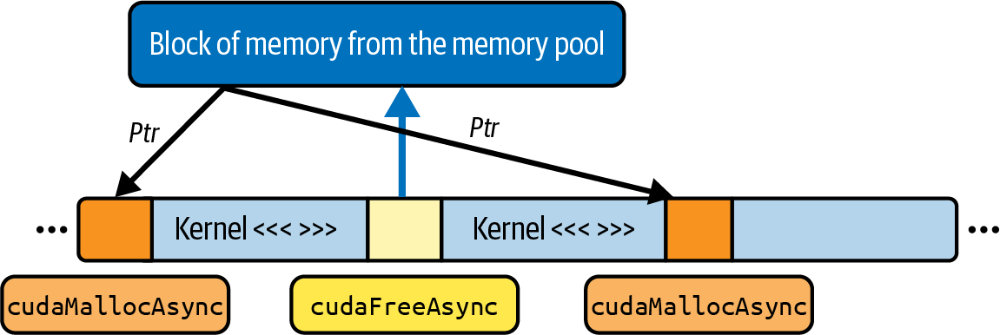</p>
<blockquote>
<p>Figure 11-3. Stream-ordered memory allocation</p>
</blockquote>
<p>其他 stream 会继续启动核函数、拷贝数据，或做它们正在做的任何事——即便 stream 1 的分配还在途（in-flight）中。而一旦 CUDA 运行时在幕后预留好内存，stream 1 就能再次推进，并把 attention 核函数启动到那块新分配的区域中——这一切都不会让任何其他 stream 停顿。</p>
<blockquote>
<p>The other streams continue launching kernels, copying data, or doing whatever they were doing-even while stream 1's allocation is in flight. And once the CUDA runtime has reserved the memory behind the scenes, stream 1 can make progress again and launch the attention kernel into that newly allocated region-all without halting any other streams.</p>
</blockquote>
<p>与传统的 cudaMalloc 不同，cudaMallocAsync 不会停顿其他 stream。每次分配只在其自身的 stream 内同步。</p>
<blockquote>
<p>Unlike legacy cudaMalloc, cudaMallocAsync does not stall other streams. Each allocation is synchronized only within its own stream.</p>
</blockquote>
<p>在 LLM 训练与推理的语境下，这一点尤为宝贵，因为变长序列常常导致暂存缓冲区大小的波动。如果批次 <em>N</em> 每个序列有 512 个 token，而批次 N+1 有 1,024 个 token，那么你的 attention 模块为批次 N+1 需要的空间会比批次 <em>N</em> 更多，因此复用批次 <em>N</em> 的分配是不够的。有了 cudaMallocAsync()，你可以为更大的缓冲区入队一次非阻塞的分配，而不必把所有其他 stream 都拖停。</p>
<blockquote>
<p>In the context of LLM training and inference, this is particularly valuable because variable‐length sequences often produce scratch‐buffer size fluctuations. If batch N has 512 tokens per sequence and batch N+1 has 1,024 tokens, your attention module will need more space for batch N+1 than batch N, so reusing batch N's allocation is not sufficient. With cudaMallocAsync(), you can enqueue a single, nonblocking allocation for the larger buffer without dragging all other streams to a stop.</p>
</blockquote>
<p>此外，典型 LLM 的自回归逐令牌生成（又称解码）阶段使用不断增长的键/值缓存。每个生成的令牌需要将新的 KV 对追加到每个序列的缓冲区。随着缓冲区的增长，您需要重新分配或扩展临时区域。</p>
<blockquote>
<p>Additionally, a typical LLM's autoregressive token‐by‐token generation (aka decoding) phase uses a growing key/value cache. Each generated token requires appending new KV pairs to a per‐sequence buffer. As the buffer grows, you need to reallocate or extend the scratch region.</p>
</blockquote>
<p>cudaMallocAsync(...)允许您在运行注意力核函数的同一个流中执行此操作。同时，上游数据加载和下游结果复制操作继续在其自己的流中并行进行。</p>
<blockquote>
<p>cudaMallocAsync(...) lets you do this in the same stream that runs the attention kernel. Meanwhile, upstream data‐loading and downstream result‐copying operations continue making progress in parallel, running in their own streams.</p>
</blockquote>
<p>CUDA streams 在 LLM 语境下的另一种用法是大型 LLM 中的按层流水线化（layerwise pipelining）。假设你把一个大型的、基于 transformer 的 LLM 模型切成两半，让它们在不同的 CUDA stream 上运行——stream 0 运行第 0–5 层，stream 1 运行第 6–11 层。在这两半之间，你需要中间缓冲区来存放激活。</p>
<blockquote>
<p>Another use of CUDA streams in an LLM context is layerwise pipelining in large LLMs. Suppose that you divide a large, transformer-based LLM model into two halves that run on different CUDA streams-stream 0 runs layers 0-5 and stream 1 runs layers 6-11. Between these halves, you need intermediate buffers for activations.</p>
</blockquote>
<p>每当 stream 0 在一个小批量上完成其工作，它就可能调用 cudaMallocAsync(...) 为下一批次的激活抓取一块新缓冲区。由于该调用不会同步设备，stream 1 可以在上一批次的结果上继续计算第 6–11 层，同时 stream 0 为下一批次的输入分配内存。</p>
<blockquote>
<p>Each time stream 0 finishes its work on a mini‐batch, it might call cudaMallocAsync(...) to grab a new buffer for the next batch's activations. Because that call does not synchronize the device, stream 1 can continue computing layers 6-11 on the previous batch's results while stream 0 allocates memory for the next batch's inputs.</p>
</blockquote>
<p>相比之下，如果你在那条流水线里使用了传统的 cudaMalloc(...)，那么每当你为下一个小批量或一个扩大的 KV 缓存分配一块新的暂存区域时，整个 GPU 都会暂停，直到分配完成。那会破坏跨 stream 重叠计算与数据搬运的任何可能。</p>
<blockquote>
<p>By contrast, if you had used the legacy cudaMalloc(...) inside that pipeline, every time you allocated a new scratch region for the next mini‐batch or an expanded KV cache, the entire GPU would pause until the allocation completed. That would break any chance of overlapping computation and data movement across streams.</p>
</blockquote>
<p>总结一下，在 LLM 语境下，你经常需要为 attention、层归一化、softmax、KV 缓存或中间激活准备临时缓冲区。它们被统称为 <em>scratch buffer</em>（暂存缓冲区）。</p>
<blockquote>
<p>To summarize, in an LLM context, you frequently need temporary buffers for attention, layer normalization, softmax, KV cache, or intermediate activations. These are collectively referred to as a scratch buffer.</p>
</blockquote>
<p>在相互独立的 stream 中用 cudaMallocAsync(...) 与 cudaFreeAsync(...) 来管理这些暂存缓冲区，可确保内存管理绝不会强制一次全局的、跨 stream 的停顿。相反，分配会入队到与你的核函数或拷贝操作相同的 stream 中。</p>
<blockquote>
<p>Using cudaMallocAsync(...) and cudaFreeAsync(...) to manage these scratch buffers within separate streams ensures that memory management never forces a global, cross‐stream stall. Instead, the allocation enqueues into the same stream as your kernel or copy operation.</p>
</blockquote>
<p>这让所有其他 stream 得以继续运行，并让你的 attention 核函数、数据传输以及任何主机侧工作尽可能地重叠。这在大规模、实时的 LLM 工作负载中最大化了 GPU 利用率。</p>
<blockquote>
<p>This allows all other streams to continue running and keeps your attention kernels, data transfers, and any host‐side work overlapping as much as possible. This maximizes GPU utilization in large‐scale, real‐time LLM workloads.</p>
</blockquote>
<h2 id="legacy-default-stream">传统默认流 (Legacy Default Stream)<a class="headerlink" href="#legacy-default-stream" title="Permanent link">&para;</a></h2>
<p>当你没有显式创建或指定 stream 时，操作会进入传统默认流（legacy default stream），常被称为 <em>stream 0</em>。默认情况下，stream 0 有两个值得强调的重要行为：</p>
<blockquote>
<p>When you do not explicitly create or specify a stream, the operations go into the legacy default stream, often called stream 0. By default, stream 0 has two important behaviors that are worth highlighting:</p>
</blockquote>
<p><em>与自身的隐式同步</em> 入队到 stream 0 的任意两个操作会严格地一个接一个执行。你无法在 stream 0 中重叠两个核函数，或重叠一次拷贝与一个核函数，因为 stream 0 会串行化它自己的所有命令。</p>
<blockquote>
<p><strong>Implicit synchronization with itself</strong> - Any two operations enqueued into stream 0 execute strictly one after the other. You cannot overlap two kernels or a copy and a kernel in stream 0, because stream 0 serializes all of its own commands.</p>
</blockquote>
<p><em>与其他 stream 的隐式同步</em> 在传统默认流模型中，任何启动到 stream 0 的操作，在开始之前都会等待其他每一个 stream 中先前入队的所有工作完成。反过来，任何启动到非默认 stream 的操作，也会阻塞，直到 stream 0 中先前的所有工作完成。实际上，stream 0 就像整个 GPU 上的一道全局"屏障"。即便你把命令发起到不同的 stream 上，一旦你向 stream 0 提交某个操作，它就会迫使其他每一个 stream 停顿，直到 stream 0 赶上进度，反之亦然。这对性能非常糟糕，应尽可能避免。</p>
<blockquote>
<p><strong>Implicit synchronization with other streams</strong> - In the legacy default stream model, any operation launched into stream 0 will wait for all previously enqueued work in every other stream to finish before it begins. Conversely, any operation launched into a nondefault stream will also block until all prior work in stream 0 has completed. In effect, stream 0 acts as a global "barrier" across the entire GPU. Even if you issue commands into different streams, once you submit something into stream 0, it forces every other stream to stall until stream 0 is caught up, and vice versa. This is very bad for performance and should be avoided when possible.</p>
</blockquote>
<p>由于这些隐式依赖，把所有工作都放进 stream 0 会阻止任何形式的并发。例如，核函数与拷贝引擎无法重叠。如此一来，你的 GPU 就会把时钟周期浪费在空闲地等待默认流屏障清空上。</p>
<blockquote>
<p>Because of these implicit dependencies, putting all work into stream 0 prevents any form of concurrency. For instance, kernels and copy engines cannot overlap. As such, your GPU spends cycles idle waiting for the default‐stream barrier to clear.</p>
</blockquote>
<p>要释放真正的并行性，除了那些确实需要与其他每一个 stream 串行化的操作（这种情况相对罕见）之外，你应当避免把任何东西放进 stream 0。</p>
<blockquote>
<p>To unlock true parallelism, you should avoid using stream 0 for anything but operations that truly need to serialize with every other stream, which is relatively rare.</p>
</blockquote>
<h3 id="modern-per-thread-default-stream">现代每线程默认流 (Modern Per-Thread Default Stream)<a class="headerlink" href="#modern-per-thread-default-stream" title="Permanent link">&para;</a></h3>
<p>为缓解传统默认流的"全局屏障"行为，CUDA 引入了每线程默认流（per-thread default stream），有时缩写为 PTDS（与传统 stream 多年来给我们带来的创伤后应激障碍（posttraumatic stress disorder，PTSD）相对）。</p>
<blockquote>
<p>To mitigate the "global barrier" behavior of the legacy default stream, CUDA introduced per‐thread default streams, sometimes abbreviated PTDS (as opposed to the posttraumatic stress disorder (PTSD) that the legacy stream has given us throughout the years).</p>
</blockquote>
<p>在每线程默认流语义下，每个 CPU 线程的默认流都是相互独立的。换句话说，当启用每线程默认流时，每个主机线程都拥有它自己的隐式"stream 0"。</p>
<blockquote>
<p>Under per-thread default stream semantics, each CPU thread's default stream is independent. In other words, when per-thread default streams are enabled, each host thread has its own implicit "stream 0."</p>
</blockquote>
<p>入队到线程 A 默认流的操作不会等待线程 B 默认流中的工作。只要硬件资源允许，它们就会并发运行。同样地，线程 B 默认流中的操作也不会等待线程 A 的默认流，如此类推。</p>
<blockquote>
<p>Operations enqueued into thread A's default stream do not wait for work in thread B's default stream. They run concurrently whenever hardware resources allow. Likewise, operations in thread B's default stream do not wait for thread A's default stream, and so on.</p>
</blockquote>
<p>PTDS 被广泛用于多线程 CUDA 应用中，以规避"主机级屏障"问题。要启用 PTDS，你可以用 nvcc --default-stream per-thread 编译代码，或设置 CUDA<em>API</em>PER<em>THREAD</em>DEFAULT_STREAM=1 环境变量（在包含任何 CUDA 头文件之前）。</p>
<blockquote>
<p>PTDS is widely used in multithreaded CUDA applications to avoid the "host-wide barrier" issue. To enable PTDS, you can compile your code using nvcc --default-stream per-thread or set the CUDA<em>API</em>PER<em>THREAD</em>DEFAULT_STREAM=1 environment variable (before including any CUDA headers).</p>
</blockquote>
<p>一旦 PTDS 生效，每个主机 CPU 线程的默认流就表现得像一个用户创建的 stream，不会与其他线程的默认流隐式同步。如果你在同一进程中把 PTDS 与传统默认流混用，PTDS stream 仍会与传统默认流同步。</p>
<blockquote>
<p>Once PTDS is active, each host CPU thread's default stream behaves like a user-created stream that does not implicitly synchronize with other threads' default streams. If you mix PTDS with the legacy default stream in the same process, PTDS streams still synchronize with the legacy default stream.</p>
</blockquote>
<p>有了 PTDS，任何不带显式 stream 参数的核函数启动、拷贝或分配都会进入一个线程本地的队列。只有同一主机线程默认流内的命令会串行化，而它们绝不会对属于其他线程的 stream 施加隐式的全局屏障。</p>
<blockquote>
<p>With PTDS, any kernel launch, copy, or allocation without an explicit stream parameter goes into a thread‐local queue. Only commands within the same host thread's default stream serialize, and they never impose an implicit global barrier on streams belonging to other threads.</p>
</blockquote>
<p>简而言之，通过启用每线程默认流，传统默认流的同步屏障就被移除了。每个主机线程的默认流绝不会等待其他线程的 stream。这允许跨线程完全重叠多次核函数启动。</p>
<blockquote>
<p>In short, by enabling per-thread default streams, the legacy default-stream synchronization barrier is removed. Each host thread's default stream never waits on other threads' streams. This allows full overlap of multiple kernel launches across threads. And if you issue kernel launches (or memory copies) from different CPU threads without specifying an explicit stream, the operations will overlap on the GPU whenever resources permit. This is shown in Figure 11-4.</p>
</blockquote>
<p>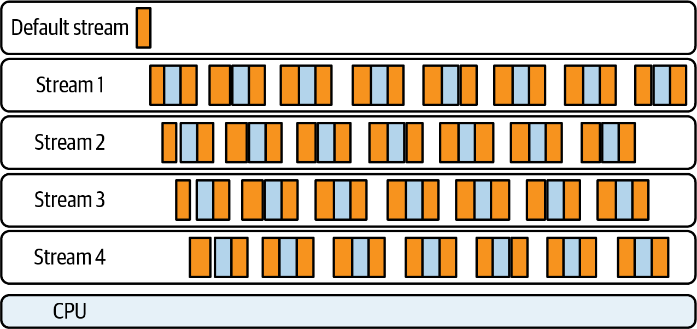</p>
<blockquote>
<p>Figure 11-4. Timeline showing multiple GPU kernels running concurrently across separate CUDA streams issued from different threads on their respective default streams with PTDS enabled</p>
</blockquote>
<h3 id="default-versus-explicit-nondefault-streams">默认流与显式（非默认）流 (Default Versus Explicit (Nondefault) Streams)<a class="headerlink" href="#default-versus-explicit-nondefault-streams" title="Permanent link">&para;</a></h3>
<p>依赖默认流行为最终会引发问题，而且每次都会如此。任何入队到传统默认流（stream 0）的工作都会隐式地等待——并阻塞——其他每一个 stream，反之亦然。</p>
<blockquote>
<p>Relying on default‐stream behavior will eventually cause problems. It always does. Any work enqueued into the legacy default stream (stream 0) implicitly waits for-and blocks-every other stream, and vice versa.</p>
</blockquote>
<p>在性能关键的代码中，最好创建并使用你自己的、非默认的、显式且具名的 stream，这样就不会有东西意外地落进 stream 0。如果你不小心在 stream 0 上用了一个核函数——或往里拷了数据——你就可能停顿其他每一个活跃的 stream。许多库，如 cuBLAS、Thrust 等，都接受一个显式的 stream 参数。建议你始终创建显式 stream 并使用它们。</p>
<blockquote>
<p>In performance‐critical code, it's best to create and use your own nondefault, explicit, and named streams so that nothing accidentally goes into stream 0. If you accidentally use one kernel on stream 0-or copy data into it-you can stall every other active stream. Many libraries, such as cuBLAS, Thrust, etc., accept an explicit stream parameter. It's recommended that you always create explicit streams and use those.</p>
</blockquote>
<p>在 PyTorch 中，操作会在底层被调度到非默认 stream 上，以避免意料之外的同步。例如，PyTorch 对 cuDNN、cuBLAS 等的内部调用使用它们自己的 stream，以避免阻塞默认 stream 0。此外，PyTorch 的分布式后端会把 NCCL 通信操作启动到独立的 CUDA stream 上，而非默认 stream。这让它得以（举例而言）把梯度通信与计算重叠起来。另外，NCCL 的通信操作常常运行在一个高优先级 stream 上，这一点我们稍后会讲到。</p>
<blockquote>
<p>In PyTorch, operations are scheduled on nondefault streams under the hood to avoid unintended synchronization. For example, PyTorch's internal calls to cuDNN, cuBLAS, etc., use their own streams to avoid blocking the default stream 0. Also, PyTorch's distributed backend launches NCCL communication operations on separate CUDA streams rather than the default stream. This lets it overlap gradient communication with compute, for instance. In addition, NCCL's communication operations often run in a high-priority stream, as we'll cover in a bit.</p>
</blockquote>
<p>通过管理你自己的 stream——或使用每线程默认流——你就保有了对并发的掌控。下面是一个在 CUDA C++ 中创建显式、非默认 stream 的示例（我们会在第 13 章和第 14 章展示如何在 PyTorch 中使用 stream）：</p>
<blockquote>
<p>By managing your own streams-or using per-thread defaults-you retain control over concurrency. Here is an example of creating explicit, nondefault streams in CUDA C++ (we will show how to use streams in PyTorch in Chapters 13 and 14):</p>
</blockquote>
<div class="language-cpp highlight"><pre><span></span><code><span id="__span-3-1"><a id="__codelineno-3-1" name="__codelineno-3-1" href="#__codelineno-3-1"></a><span class="n">cudaStream_t</span><span class="w"> </span><span class="n">streamA</span><span class="p">,</span><span class="w"> </span><span class="n">streamB</span><span class="p">;</span>
</span><span id="__span-3-2"><a id="__codelineno-3-2" name="__codelineno-3-2" href="#__codelineno-3-2"></a><span class="n">cudaStreamCreateWithFlags</span><span class="p">(</span><span class="o">&amp;</span><span class="n">streamA</span><span class="p">,</span><span class="w"> </span><span class="n">cudaStreamNonBlocking</span><span class="p">);</span>
</span><span id="__span-3-3"><a id="__codelineno-3-3" name="__codelineno-3-3" href="#__codelineno-3-3"></a><span class="n">cudaStreamCreateWithFlags</span><span class="p">(</span><span class="o">&amp;</span><span class="n">streamB</span><span class="p">,</span><span class="w"> </span><span class="n">cudaStreamNonBlocking</span><span class="p">);</span>
</span><span id="__span-3-4"><a id="__codelineno-3-4" name="__codelineno-3-4" href="#__codelineno-3-4"></a>
</span><span id="__span-3-5"><a id="__codelineno-3-5" name="__codelineno-3-5" href="#__codelineno-3-5"></a><span class="n">myKernel</span><span class="o">&lt;&lt;&lt;</span><span class="n">grid</span><span class="p">,</span><span class="w"> </span><span class="n">block</span><span class="p">,</span><span class="w"> </span><span class="mi">0</span><span class="p">,</span><span class="w"> </span><span class="n">streamA</span><span class="o">&gt;&gt;&gt;</span><span class="p">(...);</span><span class="w">                 </span><span class="c1">// streamA</span>
</span><span id="__span-3-6"><a id="__codelineno-3-6" name="__codelineno-3-6" href="#__codelineno-3-6"></a><span class="n">cudaMemcpyAsync</span><span class="p">(</span><span class="n">dest</span><span class="p">,</span><span class="w"> </span><span class="n">src</span><span class="p">,</span><span class="w"> </span><span class="n">size</span><span class="p">,</span><span class="w"> </span><span class="n">cudaMemcpyHostToDevice</span><span class="p">,</span><span class="w"> </span>
</span><span id="__span-3-7"><a id="__codelineno-3-7" name="__codelineno-3-7" href="#__codelineno-3-7"></a><span class="w">                </span><span class="n">streamB</span><span class="p">);</span><span class="w"> </span><span class="c1">// streamB</span>
</span></code></pre></div>
<p>这里，streamA 与 streamB 可以自由重叠。然而，在传统默认流模型下（PTDS 未启用），任何随后进入 stream 0 的调用都会迫使 streamA 与 streamB 都等待，直到 stream 0 清空。</p>
<blockquote>
<p>Here, streamA and streamB can overlap freely. Under the legacy default‐stream model (PTDS disabled), however, any later call into stream 0 forces both streamA and streamB to wait until stream 0 is empty. Similarly, any work enqueued in streamA or streamB will block if stream 0 still has pending tasks. To avoid these hidden global barriers, keep stream 0 idle and use it only for one‐time operations for initial setup, final cleanup, etc.</p>
</blockquote>
<p>简而言之，启用每线程默认流，让每个 CPU 线程的默认流不再与任何其他线程的默认流同步。然后为所有性能关键的核函数与拷贝创建并使用显式 stream（如 streamA 与 streamB）。</p>
<blockquote>
<p>In short, enable per‐thread default streams so that each CPU thread's default stream no longer synchronizes with any other thread's default stream. Then create and use explicit streams (like streamA and streamB) for all performance-critical kernels and copies.</p>
</blockquote>
<p>同时做到这两点，你入队到显式 stream 中的任何东西就都不会意外地与另一个显式 stream、另一个线程的默认流，或传统默认 stream 0 中的工作相撞。这确保了安全、可预测的重叠，而没有隐式同步。用 cudaStreamNonBlocking 创建 stream 可确保它们不与传统默认流同步。这是避免隐藏屏障所必需的。</p>
<blockquote>
<p>By doing both, nothing you enqueue into your explicit streams can accidentally collide with work in another explicit stream, another thread's default stream, or the legacy default stream 0. This ensures safe, predictable overlap without implicit synchronization. Creating streams with cudaStreamNonBlocking ensures that they do not synchronize with the legacy default stream. This is required to avoid hidden barriers.</p>
</blockquote>
<h3 id="best-practices-for-default-stream-usage">默认流使用的最佳实践 (Best Practices for Default Stream Usage)<a class="headerlink" href="#best-practices-for-default-stream-usage" title="Permanent link">&para;</a></h3>
<p>由于默认流可能对性能造成困扰，让我们来强调每种 stream——传统默认流、每线程默认流与显式（非默认）流——的同步特性：</p>
<blockquote>
<p>Because default streams can be problematic for performance, let's highlight the synchronization characteristics of each type of stream-legacy default, per-thread default, and explicit (nondefault):</p>
</blockquote>
<p><em>传统默认流（<em>cudaStreamLegacy</em>）</em> 它会阻塞其他每一个 stream，也会被其他每一个 stream 阻塞。如果你需要任何形式的并发，就不要在这里发起工作。</p>
<blockquote>
<p><strong>Legacy default stream (cudaStreamLegacy)</strong> - This blocks and is blocked by every other stream. Do not issue work here if you need any form of concurrency.</p>
</blockquote>
<p><em>每线程默认流（<em>cudaStreamPerThread</em>）</em> 每个主机线程的默认流都是私有的。它仍会串行化自己的命令，但不会等待或阻塞任何其他线程的默认流或显式 stream。</p>
<blockquote>
<p><strong>Per-thread default stream (cudaStreamPerThread)</strong> - Each host thread's default stream is private. It still serializes its own commands but does not wait on or block any other thread's default stream or explicit streams.</p>
</blockquote>
<p><em>显式流（用</em> cudaStreamCreateWithFlags() <em>创建）</em> 显式流是相互独立的队列，只有当你显式插入依赖（例如使用 cudaStreamWaitEvent()）时才会彼此同步。</p>
<blockquote>
<p><strong>Explicit streams (created with cudaStreamCreateWithFlags())</strong> - Explicit streams are independent queues that only synchronize when you explicitly insert dependencies using cudaStreamWaitEvent(), for instance.</p>
</blockquote>
<p>以下是一些最佳实践，可帮助指导您使用默认流和显式（非默认）流：</p>
<blockquote>
<p>Here are some best practices to help guide your use of default and explicit (nondefault) streams:</p>
</blockquote>
<p><strong>除非您打算序列化所有 GPU 工作，否则不要将性能关键核函数启动到流 0（传统默认流）中</strong>：即使一个偶然的核函数或复制进入流 0 也会停止每个其他活动流。例如，较旧的 CUDA API 可能隐式使用流 0。例如，在没有显式流的情况下调用 CUDA 驱动程序 API 时，您可能会使用传统流。这是迁移到较新 API 或始终指定流的另一个原因。</p>
<blockquote>
<p><strong>Never launch performance‐critical kernels into stream 0 (legacy default) unless you intend to serialize all GPU work</strong> - Even one stray kernel or copy into stream 0 will stall every other active stream. Older CUDA APIs, for example, might implicitly use stream 0. For example, when calling CUDA driver APIs without an explicit stream, you will likely use the legacy stream. This is another reason to migrate to newer APIs or always specify streams.</p>
</blockquote>
<p><em>启用每线程默认流</em> 如果你的应用使用多个 CPU 线程、每个线程都在向 GPU 排入工作，就应使用 PTDS。这可以避免这些线程的默认流之间出现隐藏的主机端屏障。在现代系统上，你也可以用 cudaStreamCreateWithFlags(&amp;stream, cudaStreamNonBlocking) 来创建一个不与 stream 0 同步的流。</p>
<blockquote>
<p><strong>Enable per‐thread default streams</strong> - Use PTDS if your application uses multiple CPU threads that each enqueue GPU work. This avoids hidden host‐side barriers between those threads' default streams. On modern systems, you can also use cudaStreamCreateWithFlags(&amp;stream, cudaStreamNonBlocking) to create a stream that does not synchronize with stream 0.</p>
</blockquote>
<p><em>创建并管理显式的、非默认的流</em> 显式流是一项最佳实践，因为它们允许核函数与内存拷贝重叠。始终向 &lt;&lt;&lt;...&gt;&gt;&gt;()、cudaMemcpyAsync() 或 cudaMallocAsync() 传入一个非默认的 cudaStream_t。这样可以保证不会有隐式的默认流同步来干扰你的流水线化工作流。</p>
<blockquote>
<p><strong>Create and manage explicit, nondefault streams</strong> - Explicit streams are a best practice since they allow overlapping kernels and memory copies. Always pass a nondefault cudaStream_t to &lt;&lt;&lt;...&gt;&gt;&gt;(), cudaMemcpyAsync(), or cudaMallocAsync(). This guarantees that no implicit default‐stream synchronization will interfere with your pipelined workflow.</p>
</blockquote>
<p><strong>使用 cudaStreamWaitEvent()协调细粒度依赖关系，而不是 cudaStreamSynchronize()</strong>：您应该使用流事件而不是在默认流上使用 cudaStreamSynchronize()。仅在明确定义的全局点（例如，模型训练 epoch 的结束）调用 cudaStreamSynchronize()，以避免停止不相关的流。</p>
<blockquote>
<p><strong>Use cudaStreamWaitEvent() to coordinate fine‐grained dependencies instead of cudaStreamSynchronize()</strong> - You should use stream events rather than cudaStreamSynchronize() on the default stream. Call cudaStreamSynchronize() only at well‐defined global points (e.g., the end of a model-training epoch) to avoid stalling unrelated streams.</p>
</blockquote>
<p><strong>明确您的流标志</strong>：如果您启用 PTDS，请在任何 CUDA 调用之前设置设备标志。否则，您仍处于传统默认流模式。任何对流 0 的提及都会创建一个全局屏障。</p>
<blockquote>
<p><strong>Be explicit about your stream flags</strong> - If you enable PTDS, set the device flags before any CUDA call. Otherwise, you remain in the legacy default‐stream mode. Any mention of stream 0 will create a global barrier.</p>
</blockquote>
<p>简而言之，传统默认流（stream 0）始终扮演一道全局屏障。你排入其中的任何工作都会等待、并强制所有其他流完成；而只要 stream 0 有挂起的工作，所有其他流也都会等待。</p>
<blockquote>
<p>Put simply, the legacy default stream (stream 0) always acts as a global barrier. Any work you enqueue there waits for, and forces, every other stream to finish, and every other stream will wait if stream 0 has pending work.</p>
</blockquote>
<p>要避免这些看不见的停顿，就不要把性能关键的核函数或拷贝放进 stream 0。相反，应使用 cudaStreamCreateWithFlags 创建你自己的具名流，并把一切都启动到这些流中，让它们能够独立运行。</p>
<blockquote>
<p>To avoid these invisible stalls, don't put performance-critical kernels or copies into stream 0. Instead, create your own named streams using cudaStreamCreateWithFlags and launch everything into those streams so they can run independently.</p>
</blockquote>
<p>如果您的程序有多个 CPU 线程--每个线程发出自己的 GPU 工作--您还应该启用每线程默认流。启用 PTDS 后，每个线程的"默认"流不再与其他线程的默认流同步--或与流 0 同步。</p>
<blockquote>
<p>If your program has multiple CPU threads-each issuing their own GPU work-you should also enable per-thread default streams. With PTDS turned on, each thread's "default" stream no longer synchronizes with other threads' defaults-or with stream 0.</p>
</blockquote>
<p>这样一来，即使那些没有显式创建新流的代码，也不会意外阻塞任何其他线程的工作。在所有情况下，只要你想让两个操作重叠（例如一次拷贝和一个核函数），就应给它们各自独立的、显式的非默认流。如此便可避开 stream 0 的隐藏全局同步规则，让 GPU 以最大并行度运行。</p>
<blockquote>
<p>This way, even code that doesn't explicitly create new streams won't accidentally block any other threads' work. In all cases, whenever you want two operations to overlap (e.g., a copy and a kernel), you should give them their own explicit, nondefault streams. Then you'll avoid the hidden global synchronization rules of stream 0 and let the GPU run with maximum parallelism.</p>
</blockquote>
<h2 id="fine-grained-synchronization-with-events-and-callbacks">使用事件和回调进行细粒度同步 (Fine-Grained Synchronization with Events and Callbacks)<a class="headerlink" href="#fine-grained-synchronization-with-events-and-callbacks" title="Permanent link">&para;</a></h2>
<p>即便多个流与 DMA 引擎能够重叠，也总有一些时候，某个流的操作必须等待另一个流。设想一对生产者—消费者流。生产者 stream 0 正在加载并准备数据，供消费者 stream 1 处理。</p>
<blockquote>
<p>Even when multiple streams and DMA engines overlap, there are times when one stream's operation must wait for another. Consider a pair of producer-consumer streams. The producer stream 0 is loading and preparing data for the consumer stream 1 to process.</p>
</blockquote>
<p>在这种情形下，很容易想到在主机端同步这两个流、用一次完整的 cudaDeviceSynchronize() 阻塞 CPU。然而，这会阻塞 CPU，直到 GPU 上所有流的所有操作全部完成。这对性能非常不利。你也可以使用 cudaStreamSynchronize()（如图 11-5 所示），但这会一直阻塞，直到该流队列中的所有操作完成。</p>
<blockquote>
<p>In this case, it is tempting to synchronize these streams on the host side and block the CPU with a full cudaDeviceSynchronize(). However, this will block the CPU until all streams and all operations on the GPU complete. This is very bad for performance. You can also use cudaStreamSynchronize(), as shown in Figure 11-5, but this will block until all operations in the stream's queue complete.</p>
</blockquote>
<p>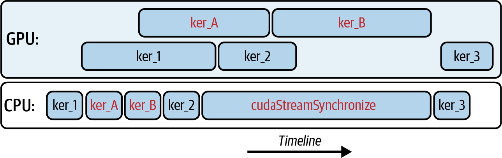</p>
<blockquote>
<p>Figure 11-5. Using cudaStreamSynchronize() will block the CPU until all operations in the stream have synchronized</p>
</blockquote>
<p>相反，你可以使用 CUDA events，为流提供一种粒度细得多的同步机制。有了 CUDA events，你在产出数据的流中记录一个 cudaEvent_t，然后让消费者流去等待这个事件。</p>
<blockquote>
<p>Instead, you can use CUDA events to provide a much finer-grained synchronization mechanism for streams. With CUDA events, you record a cudaEvent_t in the stream that produces data and then have the consumer stream wait for that event.</p>
</blockquote>
<p>例如，你会在 stream 0 上启动一个生产者核函数，并在数据就绪可供消费时调用 cudaEventRecord(doneEvent, stream0)。随后在 stream 1 中，你会在启动消费者核函数之前调用 cudaStreamWaitEvent(stream1, doneEvent, 0)。这样一来，只有 stream 1 会停下来等待该事件被记录——主机线程和所有其他流都会继续执行，如图 11-6 所示。</p>
<blockquote>
<p>For instance, you would launch a producer kernel on stream 0 and call cudaEventRecord(doneEvent, stream0) when the data is ready to be consumed. In stream 1, you would then call cudaStreamWaitEvent(stream1, doneEvent, 0) before launching the consumer kernel. In this way, only stream 1 is stalled waiting for the event to be recorded-the host thread and all other streams will continue executing, as shown in Figure 11-6.</p>
</blockquote>
<p>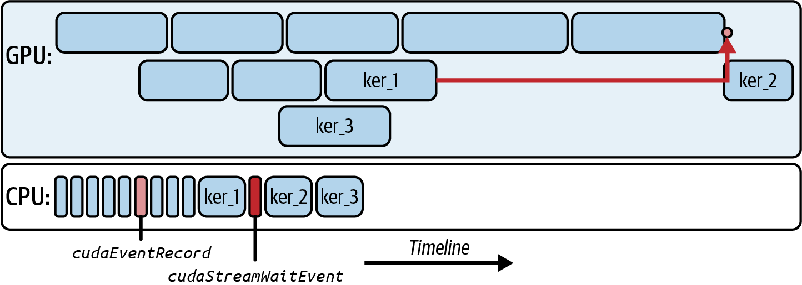</p>
<blockquote>
<p>Figure 11-6. Using CUDA events to synchronize in a fine-grained manner</p>
</blockquote>
<p>除了用 CUDA events 在流间协调之外，你还可以用它们在 GPU 设备与 CPU 主机之间通信。为此，你会在主机端用 cudaLaunchHostFunc() 注册一个主机回调。</p>
<blockquote>
<p>In addition to using CUDA events for interstream coordination, you can also use them to communicate between the GPU device and the CPU host. To do this, you would register a host callback with cudaLaunchHostFunc() from the host.</p>
</blockquote>
<p>假设你需要在某个 GPU 核函数于 stream 0 中一完成，就立刻在主机端回收一个自定义内存池。在这种情况下，你会在主机端用 cudaLaunchHostFunc() 注册一个回调，并指定你所关心的事件。然后在 stream 0 上启动该核函数。</p>
<blockquote>
<p>Suppose you need to recycle a custom memory pool back on the host as soon as a GPU kernel finishes in stream 0. In this case, you would register a callback from the host with cudaLaunchHostFunc() and specify the event that you are interested in. You would then launch the kernel on stream 0.</p>
</blockquote>
<p>当核函数完成时，它会记录该事件，主机随即运行回调函数、更新 CPU 上的内存池。这一切都无需轮询循环，也无需一次完整的 cudaDeviceSynchronize()。</p>
<blockquote>
<p>When the kernel is complete, it will record the event, and the host will run the callback function and update the memory pool on the CPU. All of this happens without a polling loop or a full cudaDeviceSynchronize().</p>
</blockquote>
<p>一旦 GPU 工作完成，CUDA 运行时便会在一个主机线程上执行回调函数。这让 CPU 保持空闲，直到你恰好需要它的那一刻——从而避免浪费主机周期、也避免阻塞不相关的 GPU 工作。</p>
<blockquote>
<p>The CUDA runtime executes the callback function on a host thread once the GPU work is completed. This keeps the CPU free until the precise moment that you need it-and avoids wasting host cycles and blocking unrelated GPU work.</p>
</blockquote>
<p>你不应在用 cudaLaunchHostFunc() 启动的主机回调内部调用任何设备端 GPU API。举例来说，如果你在回调内部调用 cudaMemcpy()，就可能死锁，因为该回调运行在由 CUDA 运行时管理的主机线程上。在其中调用 CUDA API 会导致死锁，因为设备可能正在等待该回调完成。</p>
<blockquote>
<p>You should not call any device-side GPU APIs from within the host callback launched with cudaLaunchHostFunc(). If you call cudaMemcpy(), for instance, from inside the callback, it can deadlock because the callback runs on a host thread managed by the CUDA runtime. Calling CUDA APIs from within it can deadlock because the device may be waiting for the callback to finish.</p>
</blockquote>
<p>回调应当仅限于 CPU 端任务，例如释放或回收主机内存。这条建议可以避免这样一种环形死锁：回调试图在 GPU 上启动新工作，而与此同时 GPU 正在等待该回调完成。</p>
<blockquote>
<p>The callback should be limited to CPU-side tasks such as freeing or recycling host memory. This suggestion prevents deadlocks in the circular case in which a callback tries to launch new work on the GPU at the same time that the GPU is waiting for the callback to complete.</p>
</blockquote>
<h3 id="cuda-using-cuda-events-for-cross-stream-synchronization">使用 CUDA 事件进行跨流同步 (Using CUDA Events for Cross-Stream Synchronization)<a class="headerlink" href="#cuda-using-cuda-events-for-cross-stream-synchronization" title="Permanent link">&para;</a></h3>
<p>当多个流并行运行时，我们常常需要在它们之间进行协调与同步。CUDA events 是跨流同步（cross-stream synchronization）的主要机制，既不会拖住 CPU，也不会拖住整个设备。</p>
<blockquote>
<p>With multiple streams running in parallel, we often need to coordinate and synchronize between them. CUDA events are the primary mechanism for cross-stream synchronization without stalling the CPU or the entire device.</p>
</blockquote>
<p>事件就像一个标记，由某个流在特定节点记录下来。其他流、甚至主机，都可以等待这个标记，从而得知某个事件何时发生（例如某个核函数已完成）。与会一直阻塞到所有流完成的完整 cudaDeviceSynchronize() 不同，事件允许在流之间进行细粒度的排序。</p>
<blockquote>
<p>An event is like a marker that a stream records at a specific point. Other streams, or even the host, can wait on that marker and know when a certain event has happened (e.g., a kernel has finished). Unlike a full cudaDeviceSynchronize(), which blocks until all streams finish, events allow fine-grained ordering between streams.</p>
</blockquote>
<p>流可用于确保每个 transformer 层的数据在计算之前都已就位。它们还能改进流水线并行——确保 GPU 0 已产出某个张量之后，GPU 1 才去消费它。而这一切发生的同时，其他独立工作都不会闲置。</p>
<blockquote>
<p>Streams can be used to make sure that each transformer layer's data is present before computing. They can also improve pipeline parallelism by ensuring GPU 0 has finished producing a tensor before GPU 1 consumes it. And all of this happens without idling other independent work.</p>
</blockquote>
<p>例如，设想一组四个流（Streams A–D），它们对操作进行流水线化，并在某些情况下彼此依赖。我们可以用 CUDA events 来强制这些依赖（见图 11-7）。</p>
<blockquote>
<p>For example, consider a set of four streams (Streams A-D) that pipeline operations and depend on one another in some cases. We can enforce these dependencies using CUDA events (see Figure 11-7).</p>
</blockquote>
<p>为确保 stream B 在 stream A 产出数据之前不会开始处理，我们可以在 stream A 中记录一个事件，让 stream B 先等待它再继续。类似地，stream D 可以如图所示等待 stream B。通过这样串联事件，我们在流之间维持正确的排序，同时仍能并发地运行不同的批次。</p>
<blockquote>
<p>To ensure stream B doesn't start processing until stream A produces the data, we can record an event in stream A and make stream B wait for that before continuing. Similarly, stream D can wait on stream B as shown here. By chaining events in this manner, we maintain correct ordering between streams while still running different batches concurrently.</p>
</blockquote>
<p>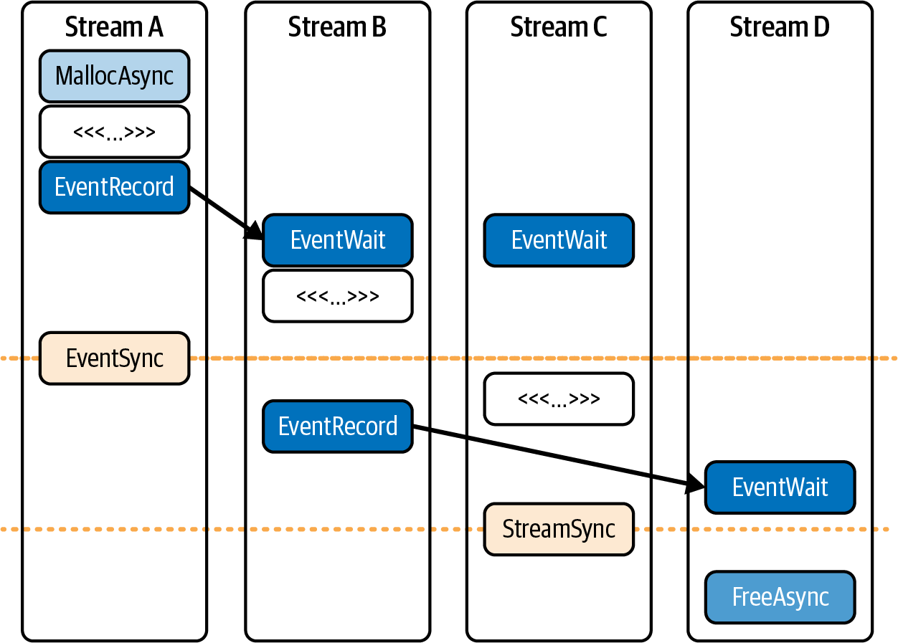</p>
<blockquote>
<p>Figure 11-7. Synchronizing CUDA streams with events (source: https://oreil.ly/MynOA)</p>
</blockquote>
<p>这种基于事件的同步在深度学习框架中被大量用于让梯度计算与 all-reduce 通信重叠。计算流在梯度就绪时记录一个事件，通信流等待该事件以启动一次 NCCL 操作，从而让通信与剩余计算重叠。</p>
<blockquote>
<p>This event-based synchronization is heavily used in deep learning frameworks to overlap gradient computations with all-reduce communications. The compute stream records an event when gradients are ready, and a communication stream waits on that event to start an NCCL operation, thereby overlapping communication with remaining computation.</p>
</blockquote>
<p>简而言之，CUDA events 轻量且针对设备信号做了优化。当某个流到达其命令队列中的特定节点时便会记录一个事件。而其他流可以高效地轮询/等待它。它们让我们能够在流之间编排复杂的依赖图，而无需强制全局等待。它们还提供了在多流 LLM 工作负载中实现流水线化执行所必需的控制力。</p>
<blockquote>
<p>In short, CUDA events are lightweight and optimized for device signaling. A stream records an event when it reaches a specific point in its command queue. And other streams can efficiently poll/wait for it. They let us orchestrate complex dependency graphs across streams without forcing global waits. And they provide the necessary control to implement pipelined execution in multistream LLM workloads.</p>
</blockquote>
<p>NVIDIA 持续改进事件的时间粒度、并降低事件记录开销。因此，事件也是性能剖析的良好选择，因为它们会在 GPU 时间线上记录事件时间戳、可用于测量执行时间等。</p>
<blockquote>
<p>NVIDIA continues to improve event-time granularity and reduce event-recording overhead. As such, events are a good choice for profiling since they record event timestamps in the GPU timeline and can measure execution time, etc.</p>
</blockquote>
<h2 id="warp-cuda-pipelining-with-warp-specialization-intra-kernel-and-cuda-streams-inter-kernel">使用 warp 专门化（核函数内）和 CUDA 流（核函数间）进行流水线处理 (Pipelining with Warp Specialization (Intra-Kernel) and CUDA Streams (Inter-Kernel))<a class="headerlink" href="#warp-cuda-pipelining-with-warp-specialization-intra-kernel-and-cuda-streams-inter-kernel" title="Permanent link">&para;</a></h2>
<p>第 10 章演示了如何用 warp 专门化和 CUDA Pipeline API 在单个核函数内隐藏内存延迟。在那一节里，我们启动了一个单一的、常驻的、warp 专门化的核函数，其中每个线程块被拆分为三种不同类型的 warp：loader、compute 和 storer warp。这些 warp 共享一块连续的共享内存，以及一个两阶段（双缓冲）的 CUDA Pipeline（<cuda::pipeline>）对象来协调各自的工作。</p>
<blockquote>
<p>Chapter 10 demonstrated how to use warp specialization and the CUDA Pipeline API to hide memory latency within a single kernel. In that section, we launched a single, persistent, and warp-specialized kernel in which each thread block is split into three different types of warps: loader, compute, and storer warps. These warps shared a contiguous chunk of shared memory and a two‐stage (double-buffered) CUDA Pipeline (<cuda::pipeline>) object to coordinate their work.</p>
</blockquote>
<p>让我们保留那个 warp 专门化的设备核函数，现在改用各自独立的 CUDA streams 驱动多个批次通过它。其结果是一个如下的两级流水线：</p>
<blockquote>
<p>Let's keep that same warp-specialized device kernel and now drive multiple batches through it using separate CUDA streams. The result is a two-level pipeline as follows:</p>
</blockquote>
<p><strong>核函数内重叠（每个块内）</strong>：加载器 ↔ 计算器 ↔ 存储器使用单独的流水线并发运行。</p>
<blockquote>
<p><strong>Intra-kernel overlap (within each block)</strong> - The loader ↔ compute ↔ storer run concurrently using separate pipelines.</p>
</blockquote>
<p><em>核间重叠（跨批次之间）</em> 当 stream 0 在批次 <em>t</em> 上计算时，stream 1 DMA 加载批次 t+1，而 stream 2 返回批次 t–1 的结果。这用到了非阻塞流、固定主机内存和流序内存分配器，以便分配/拷贝不会串行化其他工作。</p>
<blockquote>
<p><strong>Inter-kernel overlap (across batches)</strong> - While stream 0 computes on batch t, stream 1 DMA-loads batch t+1, and stream 2 returns results of batch t-1. This uses nonblocking streams, pinned host memory, and the stream-ordered allocator so allocations/copies don't serialize other work.</p>
</blockquote>
<p>如果多个块需要同一个 tile，第 10 章描述的线程块簇 + DSMEM 路径可以消除跨块的冗余全局加载。不过，协作式/簇启动会与其他协作式核函数串行化。这里所用的流模式针对的是主机 ↔ 设备的重叠，并适用于非协作式核函数。</p>
<blockquote>
<p>If multiple blocks need the same tile, the thread block cluster + DSMEM path described in Chapter 10 removes redundant global loads across blocks. However, cooperative/cluster launches serialize with other cooperative kernels. The stream pattern used here targets the host ↔ device overlap and works with a noncooperative kernel.</p>
</blockquote>
<p>如果你的瓶颈是设备上的 tile 复用，就使用线程块簇。如果瓶颈是主机 ↔ 设备的通信与批处理，就使用 CUDA streams。我们稍后会展示如何把二者结合，但这是初步决策的一个良好起点。</p>
<blockquote>
<p>If your bottleneck is on-device tile reuse, use thread block clusters. If the bottleneck is host ↔ device communication and batching, use CUDA streams. We'll show how to combine these in a bit, but this is a good starting point for initial decision making.</p>
</blockquote>
<p>下一个核函数每个块使用三个 warp（0 = loader，1 = compute，2 = storer）和两个 pipeline 来乒乓推进各阶段。因此，它需要 6 * TILE<em>SIZE * sizeof(float) 的动态共享内存（[A0|B0|C0|A1|B1|C1]）。值得注意的是，我们改为使用两个独立的、块作用域的 pipeline，每个深度为 2。一个用于 loader → compute（pipe</em>lc）的交接，另一个用于 compute → storer（pipe_cs）。</p>
<blockquote>
<p>The next kernel uses three warps per block (0 = loader, 1 = compute, 2 = storer) and two pipelines to ping-pong stages. Therefore, it requires 6 * TILE<em>SIZE * sizeof(float) dynamic shared memory ([A0|B0|C0|A1|B1|C1]). It's worth noting that we are switching to use two independent block-scoped pipelines, each with depth 2. One is for the loader → compute (pipe</em>lc) handoff, and another is for compute → storer (pipe_cs).</p>
</blockquote>
<p>此外，我们使用双缓冲共享内存，这样核函数就能在计算 tile <em>i</em> 的同时加载 tile i+1、并存储 tile i–1。这就是为什么在接下来的代码里你会看到两个 cuda::pipeline 对象，以及共享内存中的"[A|B|C] × 2 stages"。这两个 pipeline 是一个核内选择，用于加深每个核函数内部的重叠。（注：你可以对任一种核函数风格使用流。）代码如下：</p>
<blockquote>
<p>In addition, we are using double-buffered shared memory so the kernel can be loading tile i+1 while computing tile i and storing tile i-1. That's why you see two cuda::pipeline objects and "[A|B|C] x 2 stages" in shared memory in the code that follows. The two pipelines are an intra-kernel choice to deepen overlap inside each kernel. (Note: you can use streams with either kernel style.) Here is the code:</p>
</blockquote>
<div class="language-cpp highlight"><pre><span></span><code><span id="__span-4-1"><a id="__codelineno-4-1" name="__codelineno-4-1" href="#__codelineno-4-1"></a><span class="cp">#include</span><span class="w"> </span><span class="cpf">&lt;cooperative_groups.h&gt;</span><span class="w">     </span><span class="c1">// thread_block, etc.</span>
</span><span id="__span-4-2"><a id="__codelineno-4-2" name="__codelineno-4-2" href="#__codelineno-4-2"></a><span class="cp">#include</span><span class="w"> </span><span class="cpf">&lt;cuda/pipeline&gt;</span><span class="w">            </span><span class="c1">// CUDA Pipeline API</span>
</span><span id="__span-4-3"><a id="__codelineno-4-3" name="__codelineno-4-3" href="#__codelineno-4-3"></a><span class="k">namespace</span><span class="w"> </span><span class="nn">cg</span><span class="w"> </span><span class="o">=</span><span class="w"> </span><span class="nn">cooperative_groups</span><span class="p">;</span>
</span><span id="__span-4-4"><a id="__codelineno-4-4" name="__codelineno-4-4" href="#__codelineno-4-4"></a>
</span><span id="__span-4-5"><a id="__codelineno-4-5" name="__codelineno-4-5" href="#__codelineno-4-5"></a><span class="c1">// shmem bytes = 2(stages)x3(buffers)xTILE_SIZExsizeof(float)=6xTILE_SIZEx4</span>
</span><span id="__span-4-6"><a id="__codelineno-4-6" name="__codelineno-4-6" href="#__codelineno-4-6"></a><span class="c1">//             = 6 * 1024 * 4 = 24,576 B (24 KB) &lt;&lt; 227 KB SMEM</span>
</span><span id="__span-4-7"><a id="__codelineno-4-7" name="__codelineno-4-7" href="#__codelineno-4-7"></a><span class="c1">// 我们保持1024（而不是更高）作为安全的起点</span>
</span><span id="__span-4-8"><a id="__codelineno-4-8" name="__codelineno-4-8" href="#__codelineno-4-8"></a><span class="c1">// （良好的占用平衡）</span>
</span><span id="__span-4-9"><a id="__codelineno-4-9" name="__codelineno-4-9" href="#__codelineno-4-9"></a><span class="cp">#define TILE_SIZE 1024  </span><span class="c1">// 一个瓦片 = 每个缓冲区1,024个浮点数（一维）</span>
</span><span id="__span-4-10"><a id="__codelineno-4-10" name="__codelineno-4-10" href="#__codelineno-4-10"></a>
</span><span id="__span-4-11"><a id="__codelineno-4-11" name="__codelineno-4-11" href="#__codelineno-4-11"></a><span class="w">    </span><span class="c1">// 向量化复制的对齐/大小保护</span>
</span><span id="__span-4-12"><a id="__codelineno-4-12" name="__codelineno-4-12" href="#__codelineno-4-12"></a><span class="w">    </span><span class="k">static_assert</span><span class="p">((</span><span class="n">TILE_SIZE</span><span class="w"> </span><span class="o">%</span><span class="w"> </span><span class="p">(</span><span class="mi">32</span><span class="w"> </span><span class="o">*</span><span class="w"> </span><span class="mi">4</span><span class="p">))</span><span class="w"> </span><span class="o">==</span><span class="w"> </span><span class="mi">0</span><span class="p">,</span>
</span><span id="__span-4-13"><a id="__codelineno-4-13" name="__codelineno-4-13" href="#__codelineno-4-13"></a><span class="w">                  </span><span class="s">"TILE_SIZE must be multiple of 128 for float4 vectorization"</span><span class="p">);</span>
</span><span id="__span-4-14"><a id="__codelineno-4-14" name="__codelineno-4-14" href="#__codelineno-4-14"></a><span class="w">    </span><span class="c1">// 如果您无法保证16B对齐或大小，</span>
</span><span id="__span-4-15"><a id="__codelineno-4-15" name="__codelineno-4-15" href="#__codelineno-4-15"></a><span class="w">    </span><span class="c1">// 使用回退4B循环处理尾部/不规则边缘。</span>
</span><span id="__span-4-16"><a id="__codelineno-4-16" name="__codelineno-4-16" href="#__codelineno-4-16"></a>
</span><span id="__span-4-17"><a id="__codelineno-4-17" name="__codelineno-4-17" href="#__codelineno-4-17"></a><span class="c1">// 每个块三个warp：0加载，1计算，2存储。</span>
</span><span id="__span-4-18"><a id="__codelineno-4-18" name="__codelineno-4-18" href="#__codelineno-4-18"></a><span class="c1">// 两个块范围流水线（每个深度=2）实现跨瓦片的乒乓。</span>
</span><span id="__span-4-19"><a id="__codelineno-4-19" name="__codelineno-4-19" href="#__codelineno-4-19"></a><span class="n">__global__</span><span class="w"> </span><span class="kt">void</span><span class="w"> </span><span class="n">warp_specialized_two_pipelines</span><span class="p">(</span>
</span><span id="__span-4-20"><a id="__codelineno-4-20" name="__codelineno-4-20" href="#__codelineno-4-20"></a><span class="w">    </span><span class="k">const</span><span class="w"> </span><span class="kt">float</span><span class="o">*</span><span class="w"> </span><span class="n">__restrict__</span><span class="w"> </span><span class="n">A_global</span><span class="p">,</span>
</span><span id="__span-4-21"><a id="__codelineno-4-21" name="__codelineno-4-21" href="#__codelineno-4-21"></a><span class="w">    </span><span class="k">const</span><span class="w"> </span><span class="kt">float</span><span class="o">*</span><span class="w"> </span><span class="n">__restrict__</span><span class="w"> </span><span class="n">B_global</span><span class="p">,</span>
</span><span id="__span-4-22"><a id="__codelineno-4-22" name="__codelineno-4-22" href="#__codelineno-4-22"></a><span class="w">    </span><span class="kt">float</span><span class="o">*</span><span class="w">       </span><span class="n">__restrict__</span><span class="w"> </span><span class="n">C_global</span><span class="p">,</span>
</span><span id="__span-4-23"><a id="__codelineno-4-23" name="__codelineno-4-23" href="#__codelineno-4-23"></a><span class="w">    </span><span class="kt">int</span><span class="w">          </span><span class="n">numTiles</span><span class="p">)</span>
</span><span id="__span-4-24"><a id="__codelineno-4-24" name="__codelineno-4-24" href="#__codelineno-4-24"></a><span class="p">{</span>
</span><span id="__span-4-25"><a id="__codelineno-4-25" name="__codelineno-4-25" href="#__codelineno-4-25"></a><span class="w">    </span><span class="n">thread_block</span><span class="w"> </span><span class="n">cta</span><span class="w"> </span><span class="o">=</span><span class="w"> </span><span class="n">this_thread_block</span><span class="p">();</span>
</span><span id="__span-4-26"><a id="__codelineno-4-26" name="__codelineno-4-26" href="#__codelineno-4-26"></a>
</span><span id="__span-4-27"><a id="__codelineno-4-27" name="__codelineno-4-27" href="#__codelineno-4-27"></a><span class="w">    </span><span class="c1">// 阶段 s∈{0,1}: [A_s | B_s | C_s]，每个长度为TILE_SIZE</span>
</span><span id="__span-4-28"><a id="__codelineno-4-28" name="__codelineno-4-28" href="#__codelineno-4-28"></a><span class="w">    </span><span class="k">extern</span><span class="w"> </span><span class="n">__shared__</span><span class="w"> </span><span class="kt">float</span><span class="w"> </span><span class="n">shared_mem</span><span class="p">[];</span>
</span><span id="__span-4-29"><a id="__codelineno-4-29" name="__codelineno-4-29" href="#__codelineno-4-29"></a>
</span><span id="__span-4-30"><a id="__codelineno-4-30" name="__codelineno-4-30" href="#__codelineno-4-30"></a><span class="w">    </span><span class="c1">// 加载器 -&gt; 计算器流水线（2个飞行中阶段）</span>
</span><span id="__span-4-31"><a id="__codelineno-4-31" name="__codelineno-4-31" href="#__codelineno-4-31"></a><span class="w">    </span><span class="n">__shared__</span><span class="w"> </span>
</span><span id="__span-4-32"><a id="__codelineno-4-32" name="__codelineno-4-32" href="#__codelineno-4-32"></a><span class="n">cuda</span><span class="o">::</span><span class="n">pipeline_shared_state</span><span class="o">&lt;</span><span class="n">cuda</span><span class="o">::</span><span class="n">thread_scope_block</span><span class="p">,</span><span class="w"> </span><span class="mi">2</span><span class="o">&gt;</span><span class="w"> </span>
</span><span id="__span-4-33"><a id="__codelineno-4-33" name="__codelineno-4-33" href="#__codelineno-4-33"></a><span class="n">state_lc</span><span class="p">;</span>
</span><span id="__span-4-34"><a id="__codelineno-4-34" name="__codelineno-4-34" href="#__codelineno-4-34"></a><span class="w">    </span><span class="k">auto</span><span class="w"> </span><span class="n">pipe_lc</span><span class="w"> </span><span class="o">=</span><span class="w"> </span><span class="n">cuda</span><span class="o">::</span><span class="n">make_pipeline</span><span class="p">(</span><span class="n">cta</span><span class="p">,</span><span class="w"> </span><span class="o">&amp;</span><span class="n">state_lc</span><span class="p">);</span>
</span><span id="__span-4-35"><a id="__codelineno-4-35" name="__codelineno-4-35" href="#__codelineno-4-35"></a>
</span><span id="__span-4-36"><a id="__codelineno-4-36" name="__codelineno-4-36" href="#__codelineno-4-36"></a><span class="w">    </span><span class="c1">// 计算器 -&gt; 存储器流水线（2个飞行中阶段）</span>
</span><span id="__span-4-37"><a id="__codelineno-4-37" name="__codelineno-4-37" href="#__codelineno-4-37"></a><span class="w">    </span><span class="n">__shared__</span><span class="w"> </span>
</span><span id="__span-4-38"><a id="__codelineno-4-38" name="__codelineno-4-38" href="#__codelineno-4-38"></a><span class="n">cuda</span><span class="o">::</span><span class="n">pipeline_shared_state</span><span class="o">&lt;</span><span class="n">cuda</span><span class="o">::</span><span class="n">thread_scope_block</span><span class="p">,</span><span class="w"> </span><span class="mi">2</span><span class="o">&gt;</span><span class="w"> </span>
</span><span id="__span-4-39"><a id="__codelineno-4-39" name="__codelineno-4-39" href="#__codelineno-4-39"></a><span class="n">state_cs</span><span class="p">;</span>
</span><span id="__span-4-40"><a id="__codelineno-4-40" name="__codelineno-4-40" href="#__codelineno-4-40"></a><span class="w">    </span><span class="k">auto</span><span class="w"> </span><span class="n">pipe_cs</span><span class="w"> </span><span class="o">=</span><span class="w"> </span><span class="n">cuda</span><span class="o">::</span><span class="n">make_pipeline</span><span class="p">(</span><span class="n">cta</span><span class="p">,</span><span class="w"> </span><span class="o">&amp;</span><span class="n">state_cs</span><span class="p">);</span>
</span><span id="__span-4-41"><a id="__codelineno-4-41" name="__codelineno-4-41" href="#__codelineno-4-41"></a>
</span><span id="__span-4-42"><a id="__codelineno-4-42" name="__codelineno-4-42" href="#__codelineno-4-42"></a><span class="w">    </span><span class="k">const</span><span class="w"> </span><span class="kt">int</span><span class="w"> </span><span class="n">warp_id</span><span class="w"> </span><span class="o">=</span><span class="w"> </span><span class="n">threadIdx</span><span class="p">.</span><span class="n">x</span><span class="w"> </span><span class="o">&gt;&gt;</span><span class="w"> </span><span class="mi">5</span><span class="p">;</span><span class="w">   </span><span class="c1">// 0,1,2</span>
</span><span id="__span-4-43"><a id="__codelineno-4-43" name="__codelineno-4-43" href="#__codelineno-4-43"></a><span class="w">    </span><span class="k">const</span><span class="w"> </span><span class="kt">int</span><span class="w"> </span><span class="n">lane_id</span><span class="w"> </span><span class="o">=</span><span class="w"> </span><span class="n">threadIdx</span><span class="p">.</span><span class="n">x</span><span class="w"> </span><span class="o">&amp;</span><span class="w"> </span><span class="mi">31</span><span class="p">;</span>
</span><span id="__span-4-44"><a id="__codelineno-4-44" name="__codelineno-4-44" href="#__codelineno-4-44"></a>
</span><span id="__span-4-45"><a id="__codelineno-4-45" name="__codelineno-4-45" href="#__codelineno-4-45"></a><span class="w">    </span><span class="c1">// 预取此块处理的第一个瓦片</span>
</span><span id="__span-4-46"><a id="__codelineno-4-46" name="__codelineno-4-46" href="#__codelineno-4-46"></a><span class="w">    </span><span class="k">const</span><span class="w"> </span><span class="kt">int</span><span class="w"> </span><span class="n">first</span><span class="w"> </span><span class="o">=</span><span class="w"> </span><span class="n">blockIdx</span><span class="p">.</span><span class="n">x</span><span class="p">;</span>
</span><span id="__span-4-47"><a id="__codelineno-4-47" name="__codelineno-4-47" href="#__codelineno-4-47"></a><span class="w">    </span><span class="k">if</span><span class="w"> </span><span class="p">(</span><span class="n">warp_id</span><span class="w"> </span><span class="o">==</span><span class="w"> </span><span class="mi">0</span><span class="w"> </span><span class="o">&amp;&amp;</span><span class="w"> </span><span class="n">first</span><span class="w"> </span><span class="o">&lt;</span><span class="w"> </span><span class="n">numTiles</span><span class="p">)</span><span class="w"> </span><span class="p">{</span>
</span><span id="__span-4-48"><a id="__codelineno-4-48" name="__codelineno-4-48" href="#__codelineno-4-48"></a><span class="w">        </span><span class="k">const</span><span class="w"> </span><span class="kt">int</span><span class="w"> </span><span class="n">stage0</span><span class="w"> </span><span class="o">=</span><span class="w"> </span><span class="n">first</span><span class="w"> </span><span class="o">&amp;</span><span class="w"> </span><span class="mi">1</span><span class="p">;</span>
</span><span id="__span-4-49"><a id="__codelineno-4-49" name="__codelineno-4-49" href="#__codelineno-4-49"></a><span class="w">        </span><span class="kt">float</span><span class="o">*</span><span class="w"> </span><span class="n">A0</span><span class="w"> </span><span class="o">=</span><span class="w"> </span><span class="n">shared_mem</span><span class="w"> </span><span class="o">+</span><span class="w"> </span><span class="n">stage0</span><span class="w"> </span><span class="o">*</span><span class="w"> </span><span class="mi">3</span><span class="w"> </span><span class="o">*</span><span class="w"> </span><span class="n">TILE_SIZE</span><span class="p">;</span>
</span><span id="__span-4-50"><a id="__codelineno-4-50" name="__codelineno-4-50" href="#__codelineno-4-50"></a><span class="w">        </span><span class="kt">float</span><span class="o">*</span><span class="w"> </span><span class="n">B0</span><span class="w"> </span><span class="o">=</span><span class="w"> </span><span class="n">A0</span><span class="w"> </span><span class="o">+</span><span class="w"> </span><span class="n">TILE_SIZE</span><span class="p">;</span>
</span><span id="__span-4-51"><a id="__codelineno-4-51" name="__codelineno-4-51" href="#__codelineno-4-51"></a>
</span><span id="__span-4-52"><a id="__codelineno-4-52" name="__codelineno-4-52" href="#__codelineno-4-52"></a><span class="n">pipe_lc</span><span class="p">.</span><span class="n">producer_acquire</span><span class="p">();</span>
</span><span id="__span-4-53"><a id="__codelineno-4-53" name="__codelineno-4-53" href="#__codelineno-4-53"></a><span class="cp">#pragma unroll</span>
</span><span id="__span-4-54"><a id="__codelineno-4-54" name="__codelineno-4-54" href="#__codelineno-4-54"></a><span class="k">for</span><span class="w"> </span><span class="p">(</span><span class="kt">int</span><span class="w"> </span><span class="n">chunk</span><span class="w"> </span><span class="o">=</span><span class="w"> </span><span class="mi">0</span><span class="p">;</span><span class="w"> </span><span class="n">chunk</span><span class="w"> </span><span class="o">&lt;</span><span class="w"> </span><span class="n">TILE_SIZE</span><span class="p">;</span><span class="w"> </span><span class="n">chunk</span><span class="w"> </span><span class="o">+=</span><span class="w"> </span><span class="mi">32</span><span class="w"> </span><span class="o">*</span><span class="w"> </span><span class="mi">4</span><span class="p">)</span><span class="w"> </span><span class="p">{</span>
</span><span id="__span-4-55"><a id="__codelineno-4-55" name="__codelineno-4-55" href="#__codelineno-4-55"></a><span class="w">    </span><span class="n">cuda</span><span class="o">::</span><span class="n">memcpy_async</span><span class="p">(</span>
</span><span id="__span-4-56"><a id="__codelineno-4-56" name="__codelineno-4-56" href="#__codelineno-4-56"></a><span class="w">        </span><span class="n">cta</span><span class="p">,</span>
</span><span id="__span-4-57"><a id="__codelineno-4-57" name="__codelineno-4-57" href="#__codelineno-4-57"></a><span class="w">        </span><span class="k">reinterpret_cast</span><span class="o">&lt;</span><span class="n">float4</span><span class="o">*&gt;</span><span class="p">(</span><span class="n">A0</span><span class="w"> </span><span class="o">+</span><span class="w"> </span><span class="n">chunk</span><span class="p">)</span><span class="w"> </span><span class="o">+</span><span class="w"> </span><span class="n">lane_id</span><span class="p">,</span>
</span><span id="__span-4-58"><a id="__codelineno-4-58" name="__codelineno-4-58" href="#__codelineno-4-58"></a><span class="w">        </span><span class="k">reinterpret_cast</span><span class="o">&lt;</span><span class="k">const</span><span class="w"> </span><span class="n">float4</span><span class="o">*&gt;</span><span class="p">(</span><span class="n">A_global</span><span class="w"> </span><span class="o">+</span><span class="w"> </span><span class="kt">size_t</span><span class="p">(</span><span class="n">first</span><span class="p">)</span><span class="w"> </span><span class="o">*</span><span class="w"> </span>
</span><span id="__span-4-59"><a id="__codelineno-4-59" name="__codelineno-4-59" href="#__codelineno-4-59"></a><span class="w">          </span><span class="n">TILE_SIZE</span><span class="w"> </span><span class="o">+</span><span class="w"> </span><span class="n">chunk</span><span class="p">)</span><span class="w"> </span><span class="o">+</span><span class="w"> </span><span class="n">lane_id</span><span class="p">,</span>
</span><span id="__span-4-60"><a id="__codelineno-4-60" name="__codelineno-4-60" href="#__codelineno-4-60"></a><span class="w">        </span><span class="k">sizeof</span><span class="p">(</span><span class="n">float4</span><span class="p">),</span>
</span><span id="__span-4-61"><a id="__codelineno-4-61" name="__codelineno-4-61" href="#__codelineno-4-61"></a><span class="w">        </span><span class="n">pipe_lc</span><span class="p">);</span>
</span><span id="__span-4-62"><a id="__codelineno-4-62" name="__codelineno-4-62" href="#__codelineno-4-62"></a><span class="w">    </span><span class="n">cuda</span><span class="o">::</span><span class="n">memcpy_async</span><span class="p">(</span>
</span><span id="__span-4-63"><a id="__codelineno-4-63" name="__codelineno-4-63" href="#__codelineno-4-63"></a><span class="w">        </span><span class="n">cta</span><span class="p">,</span>
</span><span id="__span-4-64"><a id="__codelineno-4-64" name="__codelineno-4-64" href="#__codelineno-4-64"></a><span class="w">        </span><span class="k">reinterpret_cast</span><span class="o">&lt;</span><span class="n">float4</span><span class="o">*&gt;</span><span class="p">(</span><span class="n">B0</span><span class="w"> </span><span class="o">+</span><span class="w"> </span><span class="n">chunk</span><span class="p">)</span><span class="w"> </span><span class="o">+</span><span class="w"> </span><span class="n">lane_id</span><span class="p">,</span>
</span><span id="__span-4-65"><a id="__codelineno-4-65" name="__codelineno-4-65" href="#__codelineno-4-65"></a><span class="w">        </span><span class="k">reinterpret_cast</span><span class="o">&lt;</span><span class="k">const</span><span class="w"> </span><span class="n">float4</span><span class="o">*&gt;</span><span class="p">(</span><span class="n">B_global</span><span class="w"> </span><span class="o">+</span><span class="w"> </span><span class="kt">size_t</span><span class="p">(</span><span class="n">first</span><span class="p">)</span><span class="w"> </span><span class="o">*</span><span class="w"> </span>
</span><span id="__span-4-66"><a id="__codelineno-4-66" name="__codelineno-4-66" href="#__codelineno-4-66"></a><span class="w">          </span><span class="n">TILE_SIZE</span><span class="w"> </span><span class="o">+</span><span class="w"> </span><span class="n">chunk</span><span class="p">)</span><span class="w"> </span><span class="o">+</span><span class="w"> </span><span class="n">lane_id</span><span class="p">,</span>
</span><span id="__span-4-67"><a id="__codelineno-4-67" name="__codelineno-4-67" href="#__codelineno-4-67"></a><span class="w">        </span><span class="k">sizeof</span><span class="p">(</span><span class="n">float4</span><span class="p">),</span>
</span><span id="__span-4-68"><a id="__codelineno-4-68" name="__codelineno-4-68" href="#__codelineno-4-68"></a><span class="w">        </span><span class="n">pipe_lc</span><span class="p">);</span>
</span><span id="__span-4-69"><a id="__codelineno-4-69" name="__codelineno-4-69" href="#__codelineno-4-69"></a><span class="p">}</span>
</span><span id="__span-4-70"><a id="__codelineno-4-70" name="__codelineno-4-70" href="#__codelineno-4-70"></a><span class="n">pipe_lc</span><span class="p">.</span><span class="n">producer_commit</span><span class="p">();</span>
</span><span id="__span-4-71"><a id="__codelineno-4-71" name="__codelineno-4-71" href="#__codelineno-4-71"></a><span class="w">    </span><span class="p">}</span>
</span><span id="__span-4-72"><a id="__codelineno-4-72" name="__codelineno-4-72" href="#__codelineno-4-72"></a>
</span><span id="__span-4-73"><a id="__codelineno-4-73" name="__codelineno-4-73" href="#__codelineno-4-73"></a><span class="w">    </span><span class="c1">// 遍历跨步瓦片集；按瓦片奇偶性乒乓阶段。</span>
</span><span id="__span-4-74"><a id="__codelineno-4-74" name="__codelineno-4-74" href="#__codelineno-4-74"></a><span class="w">    </span><span class="k">for</span><span class="w"> </span><span class="p">(</span><span class="kt">int</span><span class="w"> </span><span class="n">tile</span><span class="w"> </span><span class="o">=</span><span class="w"> </span><span class="n">blockIdx</span><span class="p">.</span><span class="n">x</span><span class="p">;</span><span class="w"> </span><span class="n">tile</span><span class="w"> </span><span class="o">&lt;</span><span class="w"> </span><span class="n">numTiles</span><span class="p">;</span><span class="w"> </span><span class="n">tile</span><span class="w"> </span><span class="o">+=</span><span class="w"> </span><span class="n">gridDim</span><span class="p">.</span><span class="n">x</span><span class="p">)</span><span class="w"> </span><span class="p">{</span>
</span><span id="__span-4-75"><a id="__codelineno-4-75" name="__codelineno-4-75" href="#__codelineno-4-75"></a><span class="w">        </span><span class="k">const</span><span class="w"> </span><span class="kt">size_t</span><span class="w"> </span><span class="n">offset</span><span class="w"> </span><span class="o">=</span><span class="w"> </span><span class="kt">size_t</span><span class="p">(</span><span class="n">tile</span><span class="p">)</span><span class="w"> </span><span class="o">*</span><span class="w"> </span><span class="n">TILE_SIZE</span><span class="p">;</span>
</span><span id="__span-4-76"><a id="__codelineno-4-76" name="__codelineno-4-76" href="#__codelineno-4-76"></a><span class="w">        </span><span class="k">const</span><span class="w"> </span><span class="kt">int</span><span class="w">    </span><span class="n">stage</span><span class="w">  </span><span class="o">=</span><span class="w"> </span><span class="n">tile</span><span class="w"> </span><span class="o">&amp;</span><span class="w"> </span><span class="mi">1</span><span class="p">;</span>
</span><span id="__span-4-77"><a id="__codelineno-4-77" name="__codelineno-4-77" href="#__codelineno-4-77"></a>
</span><span id="__span-4-78"><a id="__codelineno-4-78" name="__codelineno-4-78" href="#__codelineno-4-78"></a><span class="w">        </span><span class="kt">float</span><span class="o">*</span><span class="w"> </span><span class="n">A_buf</span><span class="w"> </span><span class="o">=</span><span class="w"> </span><span class="n">shared_mem</span><span class="w"> </span><span class="o">+</span><span class="w"> </span><span class="n">stage</span><span class="w"> </span><span class="o">*</span><span class="w"> </span><span class="mi">3</span><span class="w"> </span><span class="o">*</span><span class="w"> </span><span class="n">TILE_SIZE</span><span class="p">;</span>
</span><span id="__span-4-79"><a id="__codelineno-4-79" name="__codelineno-4-79" href="#__codelineno-4-79"></a><span class="w">        </span><span class="kt">float</span><span class="o">*</span><span class="w"> </span><span class="n">B_buf</span><span class="w"> </span><span class="o">=</span><span class="w"> </span><span class="n">A_buf</span><span class="w">      </span><span class="o">+</span><span class="w"> </span><span class="n">TILE_SIZE</span><span class="p">;</span>
</span><span id="__span-4-80"><a id="__codelineno-4-80" name="__codelineno-4-80" href="#__codelineno-4-80"></a><span class="w">        </span><span class="kt">float</span><span class="o">*</span><span class="w"> </span><span class="n">C_buf</span><span class="w"> </span><span class="o">=</span><span class="w"> </span><span class="n">B_buf</span><span class="w">      </span><span class="o">+</span><span class="w"> </span><span class="n">TILE_SIZE</span><span class="p">;</span>
</span><span id="__span-4-81"><a id="__codelineno-4-81" name="__codelineno-4-81" href="#__codelineno-4-81"></a>
</span><span id="__span-4-82"><a id="__codelineno-4-82" name="__codelineno-4-82" href="#__codelineno-4-82"></a><span class="w">        </span><span class="c1">// 加载器预取下一个瓦片，同时计算/存储处理当前瓦片。</span>
</span><span id="__span-4-83"><a id="__codelineno-4-83" name="__codelineno-4-83" href="#__codelineno-4-83"></a><span class="w">        </span><span class="k">if</span><span class="w"> </span><span class="p">(</span><span class="n">warp_id</span><span class="w"> </span><span class="o">==</span><span class="w"> </span><span class="mi">0</span><span class="p">)</span><span class="w"> </span><span class="p">{</span>
</span><span id="__span-4-84"><a id="__codelineno-4-84" name="__codelineno-4-84" href="#__codelineno-4-84"></a><span class="w">            </span><span class="k">const</span><span class="w"> </span><span class="kt">int</span><span class="w"> </span><span class="n">next</span><span class="w"> </span><span class="o">=</span><span class="w"> </span><span class="n">tile</span><span class="w"> </span><span class="o">+</span><span class="w"> </span><span class="n">gridDim</span><span class="p">.</span><span class="n">x</span><span class="p">;</span>
</span><span id="__span-4-85"><a id="__codelineno-4-85" name="__codelineno-4-85" href="#__codelineno-4-85"></a><span class="w">            </span><span class="k">if</span><span class="w"> </span><span class="p">(</span><span class="n">next</span><span class="w"> </span><span class="o">&lt;</span><span class="w"> </span><span class="n">numTiles</span><span class="p">)</span><span class="w"> </span><span class="p">{</span>
</span><span id="__span-4-86"><a id="__codelineno-4-86" name="__codelineno-4-86" href="#__codelineno-4-86"></a><span class="w">                </span><span class="k">const</span><span class="w"> </span><span class="kt">int</span><span class="w"> </span><span class="n">next_stage</span><span class="w"> </span><span class="o">=</span><span class="w"> </span><span class="n">next</span><span class="w"> </span><span class="o">&amp;</span><span class="w"> </span><span class="mi">1</span><span class="p">;</span>
</span><span id="__span-4-87"><a id="__codelineno-4-87" name="__codelineno-4-87" href="#__codelineno-4-87"></a><span class="w">                </span><span class="kt">float</span><span class="o">*</span><span class="w"> </span><span class="n">A_next</span><span class="w"> </span><span class="o">=</span><span class="w"> </span><span class="n">shared_mem</span><span class="w"> </span><span class="o">+</span><span class="w"> </span><span class="n">next_stage</span><span class="w"> </span><span class="o">*</span><span class="w"> </span><span class="mi">3</span><span class="w"> </span><span class="o">*</span><span class="w"> </span><span class="n">TILE_SIZE</span><span class="p">;</span>
</span><span id="__span-4-88"><a id="__codelineno-4-88" name="__codelineno-4-88" href="#__codelineno-4-88"></a><span class="w">                </span><span class="kt">float</span><span class="o">*</span><span class="w"> </span><span class="n">B_next</span><span class="w"> </span><span class="o">=</span><span class="w"> </span><span class="n">A_next</span><span class="w"> </span><span class="o">+</span><span class="w"> </span><span class="n">TILE_SIZE</span><span class="p">;</span>
</span><span id="__span-4-89"><a id="__codelineno-4-89" name="__codelineno-4-89" href="#__codelineno-4-89"></a><span class="w">                </span><span class="n">pipe_lc</span><span class="p">.</span><span class="n">producer_acquire</span><span class="p">();</span>
</span><span id="__span-4-90"><a id="__codelineno-4-90" name="__codelineno-4-90" href="#__codelineno-4-90"></a><span class="w">                </span><span class="cp">#pragma unroll</span>
</span><span id="__span-4-91"><a id="__codelineno-4-91" name="__codelineno-4-91" href="#__codelineno-4-91"></a><span class="w">                </span><span class="k">for</span><span class="w"> </span><span class="p">(</span><span class="kt">int</span><span class="w"> </span><span class="n">chunk</span><span class="w"> </span><span class="o">=</span><span class="w"> </span><span class="mi">0</span><span class="p">;</span><span class="w"> </span><span class="n">chunk</span><span class="w"> </span><span class="o">&lt;</span><span class="w"> </span><span class="n">TILE_SIZE</span><span class="p">;</span><span class="w"> </span><span class="n">chunk</span><span class="w"> </span><span class="o">+=</span><span class="w"> </span><span class="mi">32</span><span class="w"> </span><span class="o">*</span><span class="w"> </span><span class="mi">4</span><span class="p">)</span><span class="w"> </span><span class="p">{</span>
</span><span id="__span-4-92"><a id="__codelineno-4-92" name="__codelineno-4-92" href="#__codelineno-4-92"></a><span class="w">                    </span><span class="n">cuda</span><span class="o">::</span><span class="n">memcpy_async</span><span class="p">(</span>
</span><span id="__span-4-93"><a id="__codelineno-4-93" name="__codelineno-4-93" href="#__codelineno-4-93"></a><span class="w">                        </span><span class="n">cta</span><span class="p">,</span>
</span><span id="__span-4-94"><a id="__codelineno-4-94" name="__codelineno-4-94" href="#__codelineno-4-94"></a><span class="w">                        </span><span class="k">reinterpret_cast</span><span class="o">&lt;</span><span class="n">float4</span><span class="o">*&gt;</span><span class="p">(</span><span class="n">A_next</span><span class="w"> </span><span class="o">+</span><span class="w"> </span><span class="n">chunk</span><span class="p">)</span><span class="w"> </span><span class="o">+</span><span class="w"> </span><span class="n">lane_id</span><span class="p">,</span>
</span><span id="__span-4-95"><a id="__codelineno-4-95" name="__codelineno-4-95" href="#__codelineno-4-95"></a><span class="w">                        </span><span class="k">reinterpret_cast</span><span class="o">&lt;</span><span class="k">const</span><span class="w"> </span><span class="n">float4</span><span class="o">*&gt;</span><span class="p">(</span><span class="n">A_global</span><span class="w"> </span><span class="o">+</span><span class="w"> </span><span class="kt">size_t</span><span class="p">(</span><span class="n">next</span><span class="p">)</span><span class="w"> </span><span class="o">*</span><span class="w"> </span>
</span><span id="__span-4-96"><a id="__codelineno-4-96" name="__codelineno-4-96" href="#__codelineno-4-96"></a><span class="w">                          </span><span class="n">TILE_SIZE</span><span class="w"> </span><span class="o">+</span><span class="w"> </span><span class="n">chunk</span><span class="p">)</span><span class="w"> </span><span class="o">+</span><span class="w"> </span><span class="n">lane_id</span><span class="p">,</span>
</span><span id="__span-4-97"><a id="__codelineno-4-97" name="__codelineno-4-97" href="#__codelineno-4-97"></a><span class="w">                        </span><span class="k">sizeof</span><span class="p">(</span><span class="n">float4</span><span class="p">),</span>
</span><span id="__span-4-98"><a id="__codelineno-4-98" name="__codelineno-4-98" href="#__codelineno-4-98"></a><span class="w">                        </span><span class="n">pipe_lc</span><span class="p">);</span>
</span><span id="__span-4-99"><a id="__codelineno-4-99" name="__codelineno-4-99" href="#__codelineno-4-99"></a><span class="w">                    </span><span class="n">cuda</span><span class="o">::</span><span class="n">memcpy_async</span><span class="p">(</span>
</span><span id="__span-4-100"><a id="__codelineno-4-100" name="__codelineno-4-100" href="#__codelineno-4-100"></a><span class="w">                        </span><span class="n">cta</span><span class="p">,</span>
</span><span id="__span-4-101"><a id="__codelineno-4-101" name="__codelineno-4-101" href="#__codelineno-4-101"></a><span class="w">                        </span><span class="k">reinterpret_cast</span><span class="o">&lt;</span><span class="n">float4</span><span class="o">*&gt;</span><span class="p">(</span><span class="n">B_next</span><span class="w"> </span><span class="o">+</span><span class="w"> </span><span class="n">chunk</span><span class="p">)</span><span class="w"> </span><span class="o">+</span><span class="w"> </span><span class="n">lane_id</span><span class="p">,</span>
</span><span id="__span-4-102"><a id="__codelineno-4-102" name="__codelineno-4-102" href="#__codelineno-4-102"></a><span class="w">                        </span><span class="k">reinterpret_cast</span><span class="o">&lt;</span><span class="k">const</span><span class="w"> </span><span class="n">float4</span><span class="o">*&gt;</span><span class="p">(</span><span class="n">B_global</span><span class="w"> </span><span class="o">+</span><span class="w"> </span><span class="kt">size_t</span><span class="p">(</span><span class="n">next</span><span class="p">)</span><span class="w"> </span><span class="o">*</span><span class="w"> </span>
</span><span id="__span-4-103"><a id="__codelineno-4-103" name="__codelineno-4-103" href="#__codelineno-4-103"></a><span class="w">                          </span><span class="n">TILE_SIZE</span><span class="w"> </span><span class="o">+</span><span class="w"> </span><span class="n">chunk</span><span class="p">)</span><span class="w"> </span><span class="o">+</span><span class="w"> </span><span class="n">lane_id</span><span class="p">,</span>
</span><span id="__span-4-104"><a id="__codelineno-4-104" name="__codelineno-4-104" href="#__codelineno-4-104"></a><span class="w">                        </span><span class="k">sizeof</span><span class="p">(</span><span class="n">float4</span><span class="p">),</span>
</span><span id="__span-4-105"><a id="__codelineno-4-105" name="__codelineno-4-105" href="#__codelineno-4-105"></a><span class="w">                        </span><span class="n">pipe_lc</span><span class="p">);</span>
</span><span id="__span-4-106"><a id="__codelineno-4-106" name="__codelineno-4-106" href="#__codelineno-4-106"></a><span class="w">                </span><span class="p">}</span>
</span><span id="__span-4-107"><a id="__codelineno-4-107" name="__codelineno-4-107" href="#__codelineno-4-107"></a><span class="w">                </span><span class="n">pipe_lc</span><span class="p">.</span><span class="n">producer_commit</span><span class="p">();</span>
</span><span id="__span-4-108"><a id="__codelineno-4-108" name="__codelineno-4-108" href="#__codelineno-4-108"></a><span class="w">            </span><span class="p">}</span>
</span><span id="__span-4-109"><a id="__codelineno-4-109" name="__codelineno-4-109" href="#__codelineno-4-109"></a><span class="w">        </span><span class="p">}</span>
</span><span id="__span-4-110"><a id="__codelineno-4-110" name="__codelineno-4-110" href="#__codelineno-4-110"></a>
</span><span id="__span-4-111"><a id="__codelineno-4-111" name="__codelineno-4-111" href="#__codelineno-4-111"></a><span class="w">        </span><span class="c1">// 计算器消费加载器输出并通知存储器</span>
</span><span id="__span-4-112"><a id="__codelineno-4-112" name="__codelineno-4-112" href="#__codelineno-4-112"></a><span class="w">        </span><span class="k">if</span><span class="w"> </span><span class="p">(</span><span class="n">warp_id</span><span class="w"> </span><span class="o">==</span><span class="w"> </span><span class="mi">1</span><span class="p">)</span><span class="w"> </span><span class="p">{</span>
</span><span id="__span-4-113"><a id="__codelineno-4-113" name="__codelineno-4-113" href="#__codelineno-4-113"></a><span class="w">            </span><span class="n">pipe_lc</span><span class="p">.</span><span class="n">consumer_wait</span><span class="p">();</span>
</span><span id="__span-4-114"><a id="__codelineno-4-114" name="__codelineno-4-114" href="#__codelineno-4-114"></a><span class="w">            </span><span class="cp">#pragma unroll</span>
</span><span id="__span-4-115"><a id="__codelineno-4-115" name="__codelineno-4-115" href="#__codelineno-4-115"></a><span class="w">            </span><span class="k">for</span><span class="w"> </span><span class="p">(</span><span class="kt">int</span><span class="w"> </span><span class="n">chunk</span><span class="w"> </span><span class="o">=</span><span class="w"> </span><span class="mi">0</span><span class="p">;</span><span class="w"> </span><span class="n">chunk</span><span class="w"> </span><span class="o">&lt;</span><span class="w"> </span><span class="n">TILE_SIZE</span><span class="p">;</span><span class="w"> </span><span class="n">chunk</span><span class="w"> </span><span class="o">+=</span><span class="w"> </span><span class="mi">32</span><span class="p">)</span><span class="w"> </span><span class="p">{</span>
</span><span id="__span-4-116"><a id="__codelineno-4-116" name="__codelineno-4-116" href="#__codelineno-4-116"></a><span class="w">                </span><span class="n">C_buf</span><span class="p">[</span><span class="n">chunk</span><span class="o">+</span><span class="n">lane_id</span><span class="p">]</span><span class="w"> </span><span class="o">=</span><span class="w"> </span><span class="n">A_buf</span><span class="p">[</span><span class="n">chunk</span><span class="o">+</span><span class="n">lane_id</span><span class="p">]</span><span class="o">+</span><span class="n">B_buf</span><span class="p">[</span><span class="n">chunk</span><span class="o">+</span><span class="n">lane_id</span><span class="p">];</span>
</span><span id="__span-4-117"><a id="__codelineno-4-117" name="__codelineno-4-117" href="#__codelineno-4-117"></a><span class="w">            </span><span class="p">}</span>
</span><span id="__span-4-118"><a id="__codelineno-4-118" name="__codelineno-4-118" href="#__codelineno-4-118"></a><span class="w">            </span><span class="n">pipe_lc</span><span class="p">.</span><span class="n">consumer_release</span><span class="p">();</span>
</span><span id="__span-4-119"><a id="__codelineno-4-119" name="__codelineno-4-119" href="#__codelineno-4-119"></a>
</span><span id="__span-4-120"><a id="__codelineno-4-120" name="__codelineno-4-120" href="#__codelineno-4-120"></a><span class="w">            </span><span class="n">pipe_cs</span><span class="p">.</span><span class="n">producer_acquire</span><span class="p">();</span>
</span><span id="__span-4-121"><a id="__codelineno-4-121" name="__codelineno-4-121" href="#__codelineno-4-121"></a><span class="w">            </span><span class="n">pipe_cs</span><span class="p">.</span><span class="n">producer_commit</span><span class="p">();</span>
</span><span id="__span-4-122"><a id="__codelineno-4-122" name="__codelineno-4-122" href="#__codelineno-4-122"></a><span class="w">        </span><span class="p">}</span>
</span><span id="__span-4-123"><a id="__codelineno-4-123" name="__codelineno-4-123" href="#__codelineno-4-123"></a>
</span><span id="__span-4-124"><a id="__codelineno-4-124" name="__codelineno-4-124" href="#__codelineno-4-124"></a><span class="w">        </span><span class="c1">// 存储器等待计算器并写回</span>
</span><span id="__span-4-125"><a id="__codelineno-4-125" name="__codelineno-4-125" href="#__codelineno-4-125"></a><span class="w">        </span><span class="k">if</span><span class="w"> </span><span class="p">(</span><span class="n">warp_id</span><span class="w"> </span><span class="o">==</span><span class="w"> </span><span class="mi">2</span><span class="p">)</span><span class="w"> </span><span class="p">{</span>
</span><span id="__span-4-126"><a id="__codelineno-4-126" name="__codelineno-4-126" href="#__codelineno-4-126"></a><span class="w">            </span><span class="n">pipe_cs</span><span class="p">.</span><span class="n">consumer_wait</span><span class="p">();</span>
</span><span id="__span-4-127"><a id="__codelineno-4-127" name="__codelineno-4-127" href="#__codelineno-4-127"></a><span class="w">            </span><span class="cp">#pragma unroll</span>
</span><span id="__span-4-128"><a id="__codelineno-4-128" name="__codelineno-4-128" href="#__codelineno-4-128"></a><span class="w">            </span><span class="k">for</span><span class="w"> </span><span class="p">(</span><span class="kt">int</span><span class="w"> </span><span class="n">chunk</span><span class="w"> </span><span class="o">=</span><span class="w"> </span><span class="mi">0</span><span class="p">;</span><span class="w"> </span><span class="n">chunk</span><span class="w"> </span><span class="o">&lt;</span><span class="w"> </span><span class="n">TILE_SIZE</span><span class="p">;</span><span class="w"> </span><span class="n">chunk</span><span class="w"> </span><span class="o">+=</span><span class="w"> </span><span class="mi">32</span><span class="p">)</span><span class="w"> </span><span class="p">{</span>
</span><span id="__span-4-129"><a id="__codelineno-4-129" name="__codelineno-4-129" href="#__codelineno-4-129"></a><span class="w">                </span><span class="n">C_global</span><span class="p">[</span><span class="n">offset</span><span class="w"> </span><span class="o">+</span><span class="w"> </span><span class="n">chunk</span><span class="w"> </span><span class="o">+</span><span class="w"> </span><span class="n">lane_id</span><span class="p">]</span><span class="w"> </span><span class="o">=</span><span class="w"> </span><span class="n">C_buf</span><span class="p">[</span><span class="n">chunk</span><span class="w"> </span><span class="o">+</span><span class="w"> </span><span class="n">lane_id</span><span class="p">];</span>
</span><span id="__span-4-130"><a id="__codelineno-4-130" name="__codelineno-4-130" href="#__codelineno-4-130"></a><span class="w">            </span><span class="p">}</span>
</span><span id="__span-4-131"><a id="__codelineno-4-131" name="__codelineno-4-131" href="#__codelineno-4-131"></a><span class="w">            </span><span class="n">pipe_cs</span><span class="p">.</span><span class="n">consumer_release</span><span class="p">();</span>
</span><span id="__span-4-132"><a id="__codelineno-4-132" name="__codelineno-4-132" href="#__codelineno-4-132"></a><span class="w">        </span><span class="p">}</span>
</span><span id="__span-4-133"><a id="__codelineno-4-133" name="__codelineno-4-133" href="#__codelineno-4-133"></a><span class="w">    </span><span class="p">}</span>
</span><span id="__span-4-134"><a id="__codelineno-4-134" name="__codelineno-4-134" href="#__codelineno-4-134"></a><span class="w">    </span><span class="c1">// 启动要求：blockDim.x = 96（3个warp），gridDim根据需要，</span>
</span><span id="__span-4-135"><a id="__codelineno-4-135" name="__codelineno-4-135" href="#__codelineno-4-135"></a><span class="w">    </span><span class="c1">// 动态共享内存 = 6 * TILE_SIZE * sizeof(float)。</span>
</span><span id="__span-4-136"><a id="__codelineno-4-136" name="__codelineno-4-136" href="#__codelineno-4-136"></a><span class="p">}</span>
</span></code></pre></div>
<p>在此，我们要指出一些值得关注的性能要点。首先，我们要求 A0、B0、A<em>global + base 和 B</em>global + base 满足 16 字节对齐。如果某条路径不是 16 字节对齐的，我们就对未对齐的序言/收尾退回到 4 字节的循环。</p>
<blockquote>
<p>Here, we are including some performance highlights worth noting. First, we are requiring 16-byte alignment of A0, B0, A<em>global + base, and B</em>global + base. If a path isn't 16-byte aligned, we fall back to the 4-byte loop for the misaligned prologue/epilogue.</p>
</blockquote>
<p>每 lane 16 字节（float4/int4）符合现代 GPU 的最佳实践，可在 warp 层级达成 128 字节的合并访问。这有助于降低流水线开销。</p>
<blockquote>
<p>16-bytes per lane (float4/int4) aligns with modern GPU best practice to reach 128-byte coalesced accesses at the warp level. This helps to reduce pipeline overhead.</p>
</blockquote>
<p>其次，我们假设 TILE<em>SIZE 是 128 的倍数（32 通道 x 4 浮点数）。如果不是，请使用标量循环处理尾部。此外，我们使用带 float4 的 cuda::memcpy</em>async。这保留了流水线的异步语义，并将每个瓦片的复制计数从每通道 4x 降低到 1x。</p>
<blockquote>
<p>Next, we are assuming the TILE<em>SIZE is a multiple of 128 (32 lanes x 4 floats). If not, handle the tail with a scalar loop. In addition, we use cuda::memcpy</em>async with float4. This preserves the pipeline's asynchronous semantics and lowers the per-tile copy count from 4x down to 1x per lane.</p>
</blockquote>
<p>下面是主机端驱动程序，它在非阻塞流之间轮转各批次，并使用固定主机内存和流序内存分配器（cudaMallocAsync ÷ cudaFreeAsync）。它会启动前一段代码中的 warp<em>specialized</em>two_pipelines：</p>
<blockquote>
<p>And here is the host driver, which cycles batches across nonblocking streams and uses pinned host memory and the stream-ordered allocator (cudaMallocAsync / cudaFreeAsync). It launches the warp<em>specialized</em>two_pipelines in the previous kernel:</p>
</blockquote>
<div class="language-cpp highlight"><pre><span></span><code><span id="__span-5-1"><a id="__codelineno-5-1" name="__codelineno-5-1" href="#__codelineno-5-1"></a><span class="cp">#include</span><span class="w"> </span><span class="cpf">&lt;cstdio&gt;</span>
</span><span id="__span-5-2"><a id="__codelineno-5-2" name="__codelineno-5-2" href="#__codelineno-5-2"></a><span class="cp">#include</span><span class="w"> </span><span class="cpf">&lt;cuda_runtime.h&gt;</span>
</span><span id="__span-5-3"><a id="__codelineno-5-3" name="__codelineno-5-3" href="#__codelineno-5-3"></a>
</span><span id="__span-5-4"><a id="__codelineno-5-4" name="__codelineno-5-4" href="#__codelineno-5-4"></a><span class="cp">#define TILE_SIZE   1024</span>
</span><span id="__span-5-5"><a id="__codelineno-5-5" name="__codelineno-5-5" href="#__codelineno-5-5"></a><span class="cp">#define NUM_STREAMS 2</span>
</span><span id="__span-5-6"><a id="__codelineno-5-6" name="__codelineno-5-6" href="#__codelineno-5-6"></a><span class="cp">#define BATCHES     8</span>
</span><span id="__span-5-7"><a id="__codelineno-5-7" name="__codelineno-5-7" href="#__codelineno-5-7"></a>
</span><span id="__span-5-8"><a id="__codelineno-5-8" name="__codelineno-5-8" href="#__codelineno-5-8"></a><span class="c1">// 设备核函数</span>
</span><span id="__span-5-9"><a id="__codelineno-5-9" name="__codelineno-5-9" href="#__codelineno-5-9"></a><span class="n">__global__</span><span class="w"> </span><span class="kt">void</span><span class="w"> </span><span class="n">warp_specialized_two_pipelines</span><span class="p">(</span>
</span><span id="__span-5-10"><a id="__codelineno-5-10" name="__codelineno-5-10" href="#__codelineno-5-10"></a><span class="w">    </span><span class="k">const</span><span class="w"> </span><span class="kt">float</span><span class="o">*</span><span class="w"> </span><span class="n">__restrict__</span><span class="w"> </span><span class="n">A_global</span><span class="p">,</span>
</span><span id="__span-5-11"><a id="__codelineno-5-11" name="__codelineno-5-11" href="#__codelineno-5-11"></a><span class="w">    </span><span class="k">const</span><span class="w"> </span><span class="kt">float</span><span class="o">*</span><span class="w"> </span><span class="n">__restrict__</span><span class="w"> </span><span class="n">B_global</span><span class="p">,</span>
</span><span id="__span-5-12"><a id="__codelineno-5-12" name="__codelineno-5-12" href="#__codelineno-5-12"></a><span class="w">    </span><span class="kt">float</span><span class="o">*</span><span class="w">       </span><span class="n">__restrict__</span><span class="w"> </span><span class="n">C_global</span><span class="p">,</span>
</span><span id="__span-5-13"><a id="__codelineno-5-13" name="__codelineno-5-13" href="#__codelineno-5-13"></a><span class="w">    </span><span class="kt">int</span><span class="w">          </span><span class="n">numTiles</span><span class="p">);</span>
</span><span id="__span-5-14"><a id="__codelineno-5-14" name="__codelineno-5-14" href="#__codelineno-5-14"></a>
</span><span id="__span-5-15"><a id="__codelineno-5-15" name="__codelineno-5-15" href="#__codelineno-5-15"></a><span class="kt">int</span><span class="w"> </span><span class="nf">main</span><span class="p">()</span><span class="w"> </span><span class="p">{</span>
</span><span id="__span-5-16"><a id="__codelineno-5-16" name="__codelineno-5-16" href="#__codelineno-5-16"></a><span class="w">    </span><span class="c1">// 创建非阻塞流（不要使用传统默认流）</span>
</span><span id="__span-5-17"><a id="__codelineno-5-17" name="__codelineno-5-17" href="#__codelineno-5-17"></a><span class="w">    </span><span class="n">cudaStream_t</span><span class="w"> </span><span class="n">s</span><span class="p">[</span><span class="n">NUM_STREAMS</span><span class="p">];</span>
</span><span id="__span-5-18"><a id="__codelineno-5-18" name="__codelineno-5-18" href="#__codelineno-5-18"></a><span class="w">    </span><span class="k">for</span><span class="w"> </span><span class="p">(</span><span class="kt">int</span><span class="w"> </span><span class="n">i</span><span class="w"> </span><span class="o">=</span><span class="w"> </span><span class="mi">0</span><span class="p">;</span><span class="w"> </span><span class="n">i</span><span class="w"> </span><span class="o">&lt;</span><span class="w"> </span><span class="n">NUM_STREAMS</span><span class="p">;</span><span class="w"> </span><span class="o">++</span><span class="n">i</span><span class="p">)</span>
</span><span id="__span-5-19"><a id="__codelineno-5-19" name="__codelineno-5-19" href="#__codelineno-5-19"></a><span class="w">        </span><span class="n">cudaStreamCreateWithFlags</span><span class="p">(</span><span class="o">&amp;</span><span class="n">s</span><span class="p">[</span><span class="n">i</span><span class="p">],</span><span class="w"> </span><span class="n">cudaStreamNonBlocking</span><span class="p">);</span>
</span><span id="__span-5-20"><a id="__codelineno-5-20" name="__codelineno-5-20" href="#__codelineno-5-20"></a>
</span><span id="__span-5-21"><a id="__codelineno-5-21" name="__codelineno-5-21" href="#__codelineno-5-21"></a><span class="w">    </span><span class="c1">// 固定主机缓冲区，以便cudaMemcpyAsync真正重叠</span>
</span><span id="__span-5-22"><a id="__codelineno-5-22" name="__codelineno-5-22" href="#__codelineno-5-22"></a><span class="w">    </span><span class="kt">float</span><span class="w"> </span><span class="o">*</span><span class="n">hA</span><span class="w"> </span><span class="o">=</span><span class="w"> </span><span class="nb">nullptr</span><span class="p">,</span><span class="w"> </span><span class="o">*</span><span class="n">hB</span><span class="w"> </span><span class="o">=</span><span class="w"> </span><span class="nb">nullptr</span><span class="p">,</span><span class="w"> </span><span class="o">*</span><span class="n">hC</span><span class="w"> </span><span class="o">=</span><span class="w"> </span><span class="nb">nullptr</span><span class="p">;</span>
</span><span id="__span-5-23"><a id="__codelineno-5-23" name="__codelineno-5-23" href="#__codelineno-5-23"></a><span class="w">    </span><span class="k">const</span><span class="w"> </span><span class="kt">size_t</span><span class="w"> </span><span class="n">bytesPerBatch</span><span class="w"> </span><span class="o">=</span><span class="w"> </span><span class="n">TILE_SIZE</span><span class="w"> </span><span class="o">*</span><span class="w"> </span><span class="k">sizeof</span><span class="p">(</span><span class="kt">float</span><span class="p">);</span>
</span><span id="__span-5-24"><a id="__codelineno-5-24" name="__codelineno-5-24" href="#__codelineno-5-24"></a><span class="w">    </span><span class="n">cudaMallocHost</span><span class="p">(</span><span class="o">&amp;</span><span class="n">hA</span><span class="p">,</span><span class="w"> </span><span class="n">BATCHES</span><span class="w"> </span><span class="o">*</span><span class="w"> </span><span class="n">bytesPerBatch</span><span class="p">);</span>
</span><span id="__span-5-25"><a id="__codelineno-5-25" name="__codelineno-5-25" href="#__codelineno-5-25"></a><span class="w">    </span><span class="n">cudaMallocHost</span><span class="p">(</span><span class="o">&amp;</span><span class="n">hB</span><span class="p">,</span><span class="w"> </span><span class="n">BATCHES</span><span class="w"> </span><span class="o">*</span><span class="w"> </span><span class="n">bytesPerBatch</span><span class="p">);</span>
</span><span id="__span-5-26"><a id="__codelineno-5-26" name="__codelineno-5-26" href="#__codelineno-5-26"></a><span class="w">    </span><span class="n">cudaMallocHost</span><span class="p">(</span><span class="o">&amp;</span><span class="n">hC</span><span class="p">,</span><span class="w"> </span><span class="n">BATCHES</span><span class="w"> </span><span class="o">*</span><span class="w"> </span><span class="n">bytesPerBatch</span><span class="p">);</span>
</span><span id="__span-5-27"><a id="__codelineno-5-27" name="__codelineno-5-27" href="#__codelineno-5-27"></a>
</span><span id="__span-5-28"><a id="__codelineno-5-28" name="__codelineno-5-28" href="#__codelineno-5-28"></a><span class="w">    </span><span class="c1">// 初始化输入</span>
</span><span id="__span-5-29"><a id="__codelineno-5-29" name="__codelineno-5-29" href="#__codelineno-5-29"></a><span class="w">    </span><span class="k">for</span><span class="w"> </span><span class="p">(</span><span class="kt">int</span><span class="w"> </span><span class="n">b</span><span class="w"> </span><span class="o">=</span><span class="w"> </span><span class="mi">0</span><span class="p">;</span><span class="w"> </span><span class="n">b</span><span class="w"> </span><span class="o">&lt;</span><span class="w"> </span><span class="n">BATCHES</span><span class="p">;</span><span class="w"> </span><span class="o">++</span><span class="n">b</span><span class="p">)</span><span class="w"> </span><span class="p">{</span>
</span><span id="__span-5-30"><a id="__codelineno-5-30" name="__codelineno-5-30" href="#__codelineno-5-30"></a><span class="w">        </span><span class="k">for</span><span class="w"> </span><span class="p">(</span><span class="kt">int</span><span class="w"> </span><span class="n">i</span><span class="w"> </span><span class="o">=</span><span class="w"> </span><span class="mi">0</span><span class="p">;</span><span class="w"> </span><span class="n">i</span><span class="w"> </span><span class="o">&lt;</span><span class="w"> </span><span class="n">TILE_SIZE</span><span class="p">;</span><span class="w"> </span><span class="o">++</span><span class="n">i</span><span class="p">)</span><span class="w"> </span><span class="p">{</span>
</span><span id="__span-5-31"><a id="__codelineno-5-31" name="__codelineno-5-31" href="#__codelineno-5-31"></a><span class="w">            </span><span class="n">hA</span><span class="p">[</span><span class="n">b</span><span class="w"> </span><span class="o">*</span><span class="w"> </span><span class="n">TILE_SIZE</span><span class="w"> </span><span class="o">+</span><span class="w"> </span><span class="n">i</span><span class="p">]</span><span class="w"> </span><span class="o">=</span><span class="w"> </span><span class="kt">float</span><span class="p">(</span><span class="n">i</span><span class="p">);</span>
</span><span id="__span-5-32"><a id="__codelineno-5-32" name="__codelineno-5-32" href="#__codelineno-5-32"></a><span class="w">            </span><span class="n">hB</span><span class="p">[</span><span class="n">b</span><span class="w"> </span><span class="o">*</span><span class="w"> </span><span class="n">TILE_SIZE</span><span class="w"> </span><span class="o">+</span><span class="w"> </span><span class="n">i</span><span class="p">]</span><span class="w"> </span><span class="o">=</span><span class="w"> </span><span class="mf">1.0f</span><span class="p">;</span>
</span><span id="__span-5-33"><a id="__codelineno-5-33" name="__codelineno-5-33" href="#__codelineno-5-33"></a><span class="w">        </span><span class="p">}</span>
</span><span id="__span-5-34"><a id="__codelineno-5-34" name="__codelineno-5-34" href="#__codelineno-5-34"></a><span class="w">    </span><span class="p">}</span>
</span><span id="__span-5-35"><a id="__codelineno-5-35" name="__codelineno-5-35" href="#__codelineno-5-35"></a>
</span><span id="__span-5-36"><a id="__codelineno-5-36" name="__codelineno-5-36" href="#__codelineno-5-36"></a><span class="w">    </span><span class="c1">// 在流之间以轮询方式加入批次</span>
</span><span id="__span-5-37"><a id="__codelineno-5-37" name="__codelineno-5-37" href="#__codelineno-5-37"></a><span class="w">    </span><span class="k">for</span><span class="w"> </span><span class="p">(</span><span class="kt">int</span><span class="w"> </span><span class="n">b</span><span class="w"> </span><span class="o">=</span><span class="w"> </span><span class="mi">0</span><span class="p">;</span><span class="w"> </span><span class="n">b</span><span class="w"> </span><span class="o">&lt;</span><span class="w"> </span><span class="n">BATCHES</span><span class="p">;</span><span class="w"> </span><span class="o">++</span><span class="n">b</span><span class="p">)</span><span class="w"> </span><span class="p">{</span>
</span><span id="__span-5-38"><a id="__codelineno-5-38" name="__codelineno-5-38" href="#__codelineno-5-38"></a><span class="w">        </span><span class="n">cudaStream_t</span><span class="w"> </span><span class="n">st</span><span class="w"> </span><span class="o">=</span><span class="w"> </span><span class="n">s</span><span class="p">[</span><span class="n">b</span><span class="w"> </span><span class="o">%</span><span class="w"> </span><span class="n">NUM_STREAMS</span><span class="p">];</span>
</span><span id="__span-5-39"><a id="__codelineno-5-39" name="__codelineno-5-39" href="#__codelineno-5-39"></a>
</span><span id="__span-5-40"><a id="__codelineno-5-40" name="__codelineno-5-40" href="#__codelineno-5-40"></a><span class="w">        </span><span class="kt">float</span><span class="w"> </span><span class="o">*</span><span class="n">dA</span><span class="w"> </span><span class="o">=</span><span class="w"> </span><span class="nb">nullptr</span><span class="p">,</span><span class="w"> </span><span class="o">*</span><span class="n">dB</span><span class="w"> </span><span class="o">=</span><span class="w"> </span><span class="nb">nullptr</span><span class="p">,</span><span class="w"> </span><span class="o">*</span><span class="n">dC</span><span class="w"> </span><span class="o">=</span><span class="w"> </span><span class="nb">nullptr</span><span class="p">;</span>
</span><span id="__span-5-41"><a id="__codelineno-5-41" name="__codelineno-5-41" href="#__codelineno-5-41"></a><span class="w">        </span><span class="n">cudaMallocAsync</span><span class="p">(</span><span class="o">&amp;</span><span class="n">dA</span><span class="p">,</span><span class="w"> </span><span class="n">bytesPerBatch</span><span class="p">,</span><span class="w"> </span><span class="n">st</span><span class="p">);</span><span class="w">   </span><span class="c1">// 流有序分配器</span>
</span><span id="__span-5-42"><a id="__codelineno-5-42" name="__codelineno-5-42" href="#__codelineno-5-42"></a><span class="w">        </span><span class="n">cudaMallocAsync</span><span class="p">(</span><span class="o">&amp;</span><span class="n">dB</span><span class="p">,</span><span class="w"> </span><span class="n">bytesPerBatch</span><span class="p">,</span><span class="w"> </span><span class="n">st</span><span class="p">);</span>
</span><span id="__span-5-43"><a id="__codelineno-5-43" name="__codelineno-5-43" href="#__codelineno-5-43"></a><span class="w">        </span><span class="n">cudaMallocAsync</span><span class="p">(</span><span class="o">&amp;</span><span class="n">dC</span><span class="p">,</span><span class="w"> </span><span class="n">bytesPerBatch</span><span class="p">,</span><span class="w"> </span><span class="n">st</span><span class="p">);</span>
</span><span id="__span-5-44"><a id="__codelineno-5-44" name="__codelineno-5-44" href="#__codelineno-5-44"></a>
</span><span id="__span-5-45"><a id="__codelineno-5-45" name="__codelineno-5-45" href="#__codelineno-5-45"></a><span class="w">        </span><span class="n">cudaMemcpyAsync</span><span class="p">(</span><span class="n">dA</span><span class="p">,</span><span class="w"> </span><span class="n">hA</span><span class="w"> </span><span class="o">+</span><span class="w"> </span><span class="kt">size_t</span><span class="p">(</span><span class="n">b</span><span class="p">)</span><span class="w"> </span><span class="o">*</span><span class="w"> </span><span class="n">TILE_SIZE</span><span class="p">,</span><span class="w"> </span><span class="n">bytesPerBatch</span><span class="p">,</span>
</span><span id="__span-5-46"><a id="__codelineno-5-46" name="__codelineno-5-46" href="#__codelineno-5-46"></a><span class="w">                        </span><span class="n">cudaMemcpyHostToDevice</span><span class="p">,</span><span class="w"> </span><span class="n">st</span><span class="p">);</span>
</span><span id="__span-5-47"><a id="__codelineno-5-47" name="__codelineno-5-47" href="#__codelineno-5-47"></a><span class="w">        </span><span class="n">cudaMemcpyAsync</span><span class="p">(</span><span class="n">dB</span><span class="p">,</span><span class="w"> </span><span class="n">hB</span><span class="w"> </span><span class="o">+</span><span class="w"> </span><span class="kt">size_t</span><span class="p">(</span><span class="n">b</span><span class="p">)</span><span class="w"> </span><span class="o">*</span><span class="w"> </span><span class="n">TILE_SIZE</span><span class="p">,</span><span class="w"> </span><span class="n">bytesPerBatch</span><span class="p">,</span>
</span><span id="__span-5-48"><a id="__codelineno-5-48" name="__codelineno-5-48" href="#__codelineno-5-48"></a><span class="w">                        </span><span class="n">cudaMemcpyHostToDevice</span><span class="p">,</span><span class="w"> </span><span class="n">st</span><span class="p">);</span>
</span><span id="__span-5-49"><a id="__codelineno-5-49" name="__codelineno-5-49" href="#__codelineno-5-49"></a>
</span><span id="__span-5-50"><a id="__codelineno-5-50" name="__codelineno-5-50" href="#__codelineno-5-50"></a><span class="w">        </span><span class="k">const</span><span class="w"> </span><span class="n">dim3</span><span class="w"> </span><span class="n">block</span><span class="p">(</span><span class="mi">96</span><span class="p">);</span><span class="w">         </span><span class="c1">// 3个warp：加载器/计算器/存储器</span>
</span><span id="__span-5-51"><a id="__codelineno-5-51" name="__codelineno-5-51" href="#__codelineno-5-51"></a><span class="w">        </span><span class="k">const</span><span class="w"> </span><span class="n">dim3</span><span class="w"> </span><span class="n">grid</span><span class="p">(</span><span class="mi">1</span><span class="p">);</span>
</span><span id="__span-5-52"><a id="__codelineno-5-52" name="__codelineno-5-52" href="#__codelineno-5-52"></a><span class="w">        </span><span class="k">const</span><span class="w"> </span><span class="kt">size_t</span><span class="w"> </span><span class="n">shmem</span><span class="w"> </span><span class="o">=</span><span class="w"> </span><span class="mi">6</span><span class="w"> </span><span class="o">*</span><span class="w"> </span><span class="n">TILE_SIZE</span><span class="w"> </span><span class="o">*</span><span class="w"> </span><span class="k">sizeof</span><span class="p">(</span><span class="kt">float</span><span class="p">);</span><span class="w"> </span><span class="c1">//[A0|B0|C0|A1|B1|C1]</span>
</span><span id="__span-5-53"><a id="__codelineno-5-53" name="__codelineno-5-53" href="#__codelineno-5-53"></a>
</span><span id="__span-5-54"><a id="__codelineno-5-54" name="__codelineno-5-54" href="#__codelineno-5-54"></a><span class="w">        </span><span class="c1">// 在这个一维示例中，每个批次是一个瓦片</span>
</span><span id="__span-5-55"><a id="__codelineno-5-55" name="__codelineno-5-55" href="#__codelineno-5-55"></a><span class="w">        </span><span class="n">warp_specialized_two_pipelines</span><span class="o">&lt;&lt;&lt;</span><span class="n">grid</span><span class="p">,</span><span class="w"> </span><span class="n">block</span><span class="p">,</span><span class="w"> </span><span class="n">shmem</span><span class="p">,</span><span class="w"> </span><span class="n">st</span><span class="o">&gt;&gt;&gt;</span><span class="p">(</span>
</span><span id="__span-5-56"><a id="__codelineno-5-56" name="__codelineno-5-56" href="#__codelineno-5-56"></a><span class="w">            </span><span class="n">dA</span><span class="p">,</span><span class="w"> </span><span class="n">dB</span><span class="p">,</span><span class="w"> </span><span class="n">dC</span><span class="p">,</span><span class="w"> </span><span class="cm">/*numTiles=*/</span><span class="mi">1</span><span class="p">);</span>
</span><span id="__span-5-57"><a id="__codelineno-5-57" name="__codelineno-5-57" href="#__codelineno-5-57"></a>
</span><span id="__span-5-58"><a id="__codelineno-5-58" name="__codelineno-5-58" href="#__codelineno-5-58"></a><span class="w">        </span><span class="n">cudaMemcpyAsync</span><span class="p">(</span><span class="n">hC</span><span class="w"> </span><span class="o">+</span><span class="w"> </span><span class="kt">size_t</span><span class="p">(</span><span class="n">b</span><span class="p">)</span><span class="w"> </span><span class="o">*</span><span class="w"> </span><span class="n">TILE_SIZE</span><span class="p">,</span><span class="w"> </span><span class="n">dC</span><span class="p">,</span><span class="w"> </span><span class="n">bytesPerBatch</span><span class="p">,</span>
</span><span id="__span-5-59"><a id="__codelineno-5-59" name="__codelineno-5-59" href="#__codelineno-5-59"></a><span class="w">                        </span><span class="n">cudaMemcpyDeviceToHost</span><span class="p">,</span><span class="w"> </span><span class="n">st</span><span class="p">);</span>
</span><span id="__span-5-60"><a id="__codelineno-5-60" name="__codelineno-5-60" href="#__codelineno-5-60"></a>
</span><span id="__span-5-61"><a id="__codelineno-5-61" name="__codelineno-5-61" href="#__codelineno-5-61"></a><span class="w">        </span><span class="n">cudaFreeAsync</span><span class="p">(</span><span class="n">dA</span><span class="p">,</span><span class="w"> </span><span class="n">st</span><span class="p">);</span><span class="w">        </span><span class="c1">// 流有序释放</span>
</span><span id="__span-5-62"><a id="__codelineno-5-62" name="__codelineno-5-62" href="#__codelineno-5-62"></a><span class="w">        </span><span class="n">cudaFreeAsync</span><span class="p">(</span><span class="n">dB</span><span class="p">,</span><span class="w"> </span><span class="n">st</span><span class="p">);</span>
</span><span id="__span-5-63"><a id="__codelineno-5-63" name="__codelineno-5-63" href="#__codelineno-5-63"></a><span class="w">        </span><span class="n">cudaFreeAsync</span><span class="p">(</span><span class="n">dC</span><span class="p">,</span><span class="w"> </span><span class="n">st</span><span class="p">);</span>
</span><span id="__span-5-64"><a id="__codelineno-5-64" name="__codelineno-5-64" href="#__codelineno-5-64"></a><span class="w">    </span><span class="p">}</span>
</span><span id="__span-5-65"><a id="__codelineno-5-65" name="__codelineno-5-65" href="#__codelineno-5-65"></a>
</span><span id="__span-5-66"><a id="__codelineno-5-66" name="__codelineno-5-66" href="#__codelineno-5-66"></a><span class="w">    </span><span class="c1">// 清理</span>
</span><span id="__span-5-67"><a id="__codelineno-5-67" name="__codelineno-5-67" href="#__codelineno-5-67"></a><span class="w">    </span><span class="k">for</span><span class="w"> </span><span class="p">(</span><span class="kt">int</span><span class="w"> </span><span class="n">i</span><span class="w"> </span><span class="o">=</span><span class="w"> </span><span class="mi">0</span><span class="p">;</span><span class="w"> </span><span class="n">i</span><span class="w"> </span><span class="o">&lt;</span><span class="w"> </span><span class="n">NUM_STREAMS</span><span class="p">;</span><span class="w"> </span><span class="o">++</span><span class="n">i</span><span class="p">)</span><span class="w"> </span><span class="p">{</span>
</span><span id="__span-5-68"><a id="__codelineno-5-68" name="__codelineno-5-68" href="#__codelineno-5-68"></a><span class="w">        </span><span class="n">cudaStreamSynchronize</span><span class="p">(</span><span class="n">s</span><span class="p">[</span><span class="n">i</span><span class="p">]);</span>
</span><span id="__span-5-69"><a id="__codelineno-5-69" name="__codelineno-5-69" href="#__codelineno-5-69"></a><span class="w">        </span><span class="n">cudaStreamDestroy</span><span class="p">(</span><span class="n">s</span><span class="p">[</span><span class="n">i</span><span class="p">]);</span>
</span><span id="__span-5-70"><a id="__codelineno-5-70" name="__codelineno-5-70" href="#__codelineno-5-70"></a><span class="w">    </span><span class="p">}</span>
</span><span id="__span-5-71"><a id="__codelineno-5-71" name="__codelineno-5-71" href="#__codelineno-5-71"></a><span class="w">    </span><span class="n">cudaFreeHost</span><span class="p">(</span><span class="n">hA</span><span class="p">);</span><span class="w"> </span><span class="n">cudaFreeHost</span><span class="p">(</span><span class="n">hB</span><span class="p">);</span><span class="w"> </span><span class="n">cudaFreeHost</span><span class="p">(</span><span class="n">hC</span><span class="p">);</span>
</span><span id="__span-5-72"><a id="__codelineno-5-72" name="__codelineno-5-72" href="#__codelineno-5-72"></a><span class="w">    </span><span class="k">return</span><span class="w"> </span><span class="mi">0</span><span class="p">;</span>
</span><span id="__span-5-73"><a id="__codelineno-5-73" name="__codelineno-5-73" href="#__codelineno-5-73"></a><span class="p">}</span>
</span></code></pre></div>
<p>在这里，每个流承载着自己的一串序列：allocate → H2D → kernel → D2H → free。因为分配与拷贝是按流顺序排入的，且主机缓冲区是固定的，所以 GPU 的拷贝引擎可以让 H2D/D2H 与另一个流的 SM 计算重叠。这就是核间层，它与第 10 章引入的、由 warp 专门化所产生的核内重叠互为补充。</p>
<blockquote>
<p>Here, each stream carries its own sequence: allocate → H2D → kernel → D2H → free. Because allocations and copies are enqueued in stream order and the host buffers are pinned, the GPU's copy engines can overlap H2D/D2H with the SM compute from another stream. This is the inter-kernel layer that complements the intra-kernel overlap created by warp specialization and introduced in Chapter 10.</p>
</blockquote>
<p>具体来说，这个例子展示了共享内存持有两组、每组三个长度均为 TILE_SIZE 的缓冲区，从而在准备下一个 tile 的同时可以使用其中一组。一个两阶段的 <cuda::pipeline> 在各 tile 之间提供双缓冲，并强制正确的排序，使 loader、compute 和 storer warp 能够在不同的 tile 上重叠。核函数在循环之前先给第一个 tile 预热，然后在计算 tile i 的同时预取 tile i 加 gridDim.x。</p>
<blockquote>
<p>Specifically, this example shows shared memory holding two sets of three buffers of length TILE_SIZE each so that one set can be used while the next tile is prepared. A <cuda::pipeline> with two stages provides double buffering across tiles and enforces the correct ordering so the loader, compute, and storer warps can overlap on different tiles. The kernel primes the first tile before the loop and then prefetches tile i plus gridDim.x while computing tile i.</p>
</blockquote>
<p>单独来看，这个 warp 专门化核函数通过在每个 tile 内重叠三种角色来隐藏内存延迟。然而，单个 warp 专门化核函数一次只能处理一批 tile。</p>
<blockquote>
<p>In isolation, this warp‐specialized kernel hides memory latency by overlapping three roles within each tile. However, a single warp‐specialized kernel can process only one batch of tiles at a time.</p>
</blockquote>
<p>为了使 GPU 在多个批次上保持忙碌--并在这些批次之间重叠 H2D 传输、核函数计算和 D2H 传输--我们在单独的 CUDA 流中启动此相同 warp 专门化核函数的多个实例。这将为每个批次使用流有序分配器。</p>
<blockquote>
<p>To keep the GPU busy with multiple batches-and overlap H2D transfers, kernel computation, and D2H transfers across those batches, we launch multiple instances of this same warp‐specialized kernel in separate CUDA streams. This will use the stream‐ordered allocator for each batch.</p>
</blockquote>
<p>这第二层流水线化，即核间并发，让我们能够把接连而来的小批量一波波送过 GPU。这样一来，当一个批次的核函数在 stream 0 中计算时，另一个批次的数据仍在 stream 1 中抵达。而与此同时，前一个批次的结果可能正在 stream 2 中流回主机。</p>
<blockquote>
<p>This second layer of pipelining, inter-kernel concurrency, lets us wave successive mini-batches through the GPU. This way, while one batch's kernel is computing in stream 0, another batch's data is still arriving in stream 1. And, concurrently, a previous batch's results might be streaming back to the host in stream 2.</p>
</blockquote>
<p>在实践中，我们会挑选少量的流，两个或三个，并循环使用它们。每个流用 cudaMallocAsync 分配自己的设备缓冲区，用 cudaMemcpyAsync 异步拷贝输入数据，启动 warp 专门化核函数来处理这些缓冲区，把结果异步拷回主机，然后用 cudaFreeAsync 释放缓冲区。</p>
<blockquote>
<p>In practice, we pick a small number of streams, two or three, and cycle through them. Each stream allocates its own device buffers using cudaMallocAsync, copies input data asynchronously with cudaMemcpyAsync, launches the warp‐specialized kernel to process those buffers, copies the results back to the host asynchronously, and then frees the buffers with cudaFreeAsync.</p>
</blockquote>
<p>因为这些操作中的每一个都被排入了特定的流，所以它们都可以与其他流中的等价操作重叠。在带有多个拷贝引擎和流序内存分配器的现代 GPU 上，这一模式能够通过同时压满芯片的每一个部分，来大幅提升利用率。实际能达成的重叠受限于拷贝引擎数量（查询 cudaDeviceProp::asyncEngineCount）、带宽以及核函数占用率。</p>
<blockquote>
<p>Because each of these operations is enqueued in a specific stream, they can all overlap with equivalent operations in other streams. On modern GPUs with multiple copy engines and stream-ordered allocators, this pattern can substantially increase utilization by saturating every part of the chip simultaneously. The actual overlap is bounded by copy-engine counts (query cudaDeviceProp::asyncEngineCount), bandwidth, and kernel occupancy.</p>
</blockquote>
<p>一旦某个核函数中的 loader warp 正在等待一次全局内存取数，下一批次的 H2D 拷贝就已在拷贝引擎上在途。一旦前一批次的 storer warp 正在回写全局内存，另一个流中的分配器就可以为下一批次抓取内存，而无需强制一次全局同步。</p>
<blockquote>
<p>As soon as the loader warp in one kernel is waiting on a global-memory fetch, the H2D copy for the next batch is in flight on the copy engine. As soon as the storer warp in a previous batch is writing back to global memory, the allocator in another stream can grab memory for the next batch without forcing a global sync.</p>
</blockquote>
<p>本质上，第 10 章的 warp 专门化例子教会了我们如何让单个核函数通过在一个线程块内重叠 load/compute/store 来隐藏其内存延迟。本章的多流例子在此基础上更进一步，展示了如何通过在整条流水线上重叠主机 ↔ 设备传输、计算和设备 ↔ 主机传输，把许多这样的核函数——每个处理一个不同的批次——同时送入 GPU。</p>
<blockquote>
<p>In essence, the warp‐specialization example from Chapter 10 taught us how to make one kernel hide its memory latency by overlapping load/compute/store inside a thread block. The multistream example in this chapter builds on that by showing how to feed many of those kernels-each processing a different batch-into the GPU simultaneously by overlapping host ↔ device transfers, compute, and device ↔ host transfers across the entire pipeline.</p>
</blockquote>
<p>现代 GPU 拥有多个拷贝引擎，并执行异步内存分配。它们与 Tensor Core 一道并行工作，构成一种两级流水线化策略——核内的 warp 专门化与核间的流。这些机制让我们的核函数能够为 LLM 工作负载逼近硬件的峰值利用率。</p>
<blockquote>
<p>Modern GPUs have multiple copy engines and perform asynchronous memory allocations. Together with Tensor Cores, they work in parallel to create a two‐level pipelining strategy with intra‐kernel warp specialization and inter‐kernel streams. These mechanisms allow our kernels to approach peak hardware utilization for LLM workloads.</p>
</blockquote>
<h3 id="cuda-warp-warp-specialization-with-thread-block-clusters-and-cuda-streams">使用线程块集群和 CUDA 流进行 warp 专门化 (Warp Specialization with Thread Block Clusters and CUDA Streams)<a class="headerlink" href="#cuda-warp-warp-specialization-with-thread-block-clusters-and-cuda-streams" title="Permanent link">&para;</a></h3>
<p>现在我们要把本章——以及此前各章——的所有内容整合起来，通过多个流驱动多个在途的小批量，而每个流都启动一个协作式的、线程块簇化的、warp 专门化的核函数。这代表了在最新 GPU 硬件上进行 CUDA 性能优化的巅峰。</p>
<blockquote>
<p>We will now put everything together from this chapter-and previous chapters-to drive multiple in‐flight mini‐batches through multiple streams, each of which launches a cooperative thread-block‐clustered, warp‐specialized kernel. This represents the pinnacle of CUDA performance optimizations on the latest GPU hardware.</p>
</blockquote>
<p>尽管我们出于完整性考虑覆盖这一主题，但需要指出的是，由于其复杂性，这种技术组合在非常专门化的研究项目和对超低延迟敏感的推理引擎之外很少见到。不过它仍然值得讲述，因为它把我们目前学到的许多概念融进了同一个代码示例。</p>
<blockquote>
<p>While we cover this topic for comprehensiveness, it's important to note that, due to the complexity, this combination of techniques is rarely seen outside of very specialized research projects and ultra‐latency‐sensitive inference engines. It's still worth covering, however, as it combines many of the concepts that we learned so far into one code example.</p>
</blockquote>
<p>第 10 章展示了在单个线程块内部的 warp 专门化，也展示了用 DSMEM 把 warp 专门化与线程块簇结合起来。这样一来，一个主导线程块只加载一次 tile——而线程块簇中的每个块都从这份共享的片上副本计算。这消除了重复的全局加载。</p>
<blockquote>
<p>Chapter 10 showed warp specialization inside a single thread block as well as combining warp specialization with thread-block clusters using DSMEM. This way, one leader thread block loads a tile once-and every block in the thread block cluster computes from that shared on-chip copy. This removes duplicate global loads.</p>
</blockquote>
<p>这个例子复用了完全相同的模式：主导线程块用一个块作用域的 pipeline 来暂存这些拷贝。所有块都通过 cluster.map<em>shared</em>rank 进行读取，因此它继承了数据复用的收益。</p>
<blockquote>
<p>This example reuses that exact pattern in which the leader uses a block-scoped pipeline to stage the copies. All blocks are read using cluster.map<em>shared</em>rank, so it inherits the data-reuse win.</p>
</blockquote>
<p>在之前使用 CUDA 流的 warp 专门化示例中，每个线程块负责其自己共享内存区域内的所有三个流水线阶段--加载器、计算器和存储器。现在，让我们扩展该早期实现以使用线程块集群流水线。这样，加载器、计算器和存储器 warp 分布在线程块集群中。</p>
<blockquote>
<p>In the previous warp‐specialized example with CUDA streams, each thread block was responsible for all three pipeline stages-loader, compute, and storer-within its own shared‐memory region. Now, let's extend that earlier implementation to use a thread block cluster pipeline. This way, the loader, compute, and storer warps are distributed across the thread block cluster.</p>
</blockquote>
<p>这与之前的实现形成对比，后者仅限于单个线程块。</p>
<blockquote>
<p>This is in contrast to the previous implementation, which is confined to a single thread block.</p>
</blockquote>
<p>线程块簇加 warp 专门化并配合 CUDA streams 的例子代码如下。在这个例子中，我们取 NUM<em>STREAMS = 2，以便主机可以在各自独立的 CUDA streams 中排入两次独立的启动。我们复用第 10 章"warp 专门化与线程块簇"一节中相同的 warp</em>specialized<em>cluster</em>pipeline 实现，并加入 CUDA streams：</p>
<blockquote>
<p>The code for the thread block cluster plus warp specialization example with CUDA streams follows. In this example, we pick NUM<em>STREAMS = 2 so that the host can queue two independent launches in separate CUDA streams. We reuse the same warp</em>specialized<em>cluster</em>pipeline implementation from Chapter 10's section on warp specialization with thread block clusters and add CUDA streams:</p>
</blockquote>
<div class="language-cpp highlight"><pre><span></span><code><span id="__span-6-1"><a id="__codelineno-6-1" name="__codelineno-6-1" href="#__codelineno-6-1"></a><span class="c1">// 使用DSMEM在线程块集群之间进行warp 专门化</span>
</span><span id="__span-6-2"><a id="__codelineno-6-2" name="__codelineno-6-2" href="#__codelineno-6-2"></a><span class="c1">// 和块范围流水线，从多个CUDA流启动</span>
</span><span id="__span-6-3"><a id="__codelineno-6-3" name="__codelineno-6-3" href="#__codelineno-6-3"></a>
</span><span id="__span-6-4"><a id="__codelineno-6-4" name="__codelineno-6-4" href="#__codelineno-6-4"></a><span class="cp">#include</span><span class="w"> </span><span class="cpf">&lt;cuda_runtime.h&gt;</span>
</span><span id="__span-6-5"><a id="__codelineno-6-5" name="__codelineno-6-5" href="#__codelineno-6-5"></a><span class="cp">#include</span><span class="w"> </span><span class="cpf">&lt;cuda/pipeline&gt;</span>
</span><span id="__span-6-6"><a id="__codelineno-6-6" name="__codelineno-6-6" href="#__codelineno-6-6"></a><span class="cp">#include</span><span class="w"> </span><span class="cpf">&lt;cooperative_groups.h&gt;</span>
</span><span id="__span-6-7"><a id="__codelineno-6-7" name="__codelineno-6-7" href="#__codelineno-6-7"></a><span class="cp">#include</span><span class="w"> </span><span class="cpf">&lt;algorithm&gt;</span>
</span><span id="__span-6-8"><a id="__codelineno-6-8" name="__codelineno-6-8" href="#__codelineno-6-8"></a><span class="k">namespace</span><span class="w"> </span><span class="nn">cg</span><span class="w"> </span><span class="o">=</span><span class="w"> </span><span class="nn">cooperative_groups</span><span class="p">;</span>
</span><span id="__span-6-9"><a id="__codelineno-6-9" name="__codelineno-6-9" href="#__codelineno-6-9"></a>
</span><span id="__span-6-10"><a id="__codelineno-6-10" name="__codelineno-6-10" href="#__codelineno-6-10"></a><span class="cp">#define TILE_SIZE   128   </span><span class="c1">// 3xTILE_ELEMSx4 bytes=196,608 bytes &lt; 227 KB SMEM</span>
</span><span id="__span-6-11"><a id="__codelineno-6-11" name="__codelineno-6-11" href="#__codelineno-6-11"></a><span class="cp">#define TILE_ELEMS  (TILE_SIZE * TILE_SIZE)</span>
</span><span id="__span-6-12"><a id="__codelineno-6-12" name="__codelineno-6-12" href="#__codelineno-6-12"></a><span class="cp">#define NUM_STREAMS 2</span>
</span><span id="__span-6-13"><a id="__codelineno-6-13" name="__codelineno-6-13" href="#__codelineno-6-13"></a><span class="cp">#define CLUSTER_BLOCKS 4  </span><span class="c1">// 沿x轴每个集群的块数（根据设备调整）</span>
</span><span id="__span-6-14"><a id="__codelineno-6-14" name="__codelineno-6-14" href="#__codelineno-6-14"></a>
</span><span id="__span-6-15"><a id="__codelineno-6-15" name="__codelineno-6-15" href="#__codelineno-6-15"></a><span class="c1">// ---- 设备辅助函数 ----</span>
</span><span id="__span-6-16"><a id="__codelineno-6-16" name="__codelineno-6-16" href="#__codelineno-6-16"></a>
</span><span id="__span-6-17"><a id="__codelineno-6-17" name="__codelineno-6-17" href="#__codelineno-6-17"></a><span class="n">__device__</span><span class="w"> </span><span class="kt">void</span><span class="w"> </span><span class="n">compute_rows_from_ds</span><span class="p">(</span><span class="k">const</span><span class="w"> </span><span class="kt">float</span><span class="o">*</span><span class="w"> </span><span class="n">__restrict__</span><span class="w"> </span><span class="n">A_src</span><span class="p">,</span>
</span><span id="__span-6-18"><a id="__codelineno-6-18" name="__codelineno-6-18" href="#__codelineno-6-18"></a><span class="w">                                     </span><span class="k">const</span><span class="w"> </span><span class="kt">float</span><span class="o">*</span><span class="w"> </span><span class="n">__restrict__</span><span class="w"> </span><span class="n">B_src</span><span class="p">,</span>
</span><span id="__span-6-19"><a id="__codelineno-6-19" name="__codelineno-6-19" href="#__codelineno-6-19"></a><span class="w">                                     </span><span class="kt">float</span><span class="o">*</span><span class="w">       </span><span class="n">__restrict__</span><span class="w"> </span><span class="n">C_dst</span><span class="p">,</span>
</span><span id="__span-6-20"><a id="__codelineno-6-20" name="__codelineno-6-20" href="#__codelineno-6-20"></a><span class="w">                                     </span><span class="kt">int</span><span class="w"> </span><span class="n">row_begin</span><span class="p">,</span><span class="w"> </span><span class="kt">int</span><span class="w"> </span><span class="n">row_end</span><span class="p">,</span><span class="w"> </span><span class="kt">int</span><span class="w"> </span><span class="n">lane_id</span><span class="p">)</span>
</span><span id="__span-6-21"><a id="__codelineno-6-21" name="__codelineno-6-21" href="#__codelineno-6-21"></a><span class="p">{</span>
</span><span id="__span-6-22"><a id="__codelineno-6-22" name="__codelineno-6-22" href="#__codelineno-6-22"></a><span class="w">    </span><span class="k">for</span><span class="w"> </span><span class="p">(</span><span class="kt">int</span><span class="w"> </span><span class="n">row</span><span class="w"> </span><span class="o">=</span><span class="w"> </span><span class="n">row_begin</span><span class="w"> </span><span class="o">+</span><span class="w"> </span><span class="n">lane_id</span><span class="p">;</span><span class="w"> </span><span class="n">row</span><span class="w"> </span><span class="o">&lt;</span><span class="w"> </span><span class="n">row_end</span><span class="p">;</span><span class="w"> </span><span class="n">row</span><span class="w"> </span><span class="o">+=</span><span class="w"> </span><span class="n">warpSize</span><span class="p">)</span><span class="w"> </span><span class="p">{</span>
</span><span id="__span-6-23"><a id="__codelineno-6-23" name="__codelineno-6-23" href="#__codelineno-6-23"></a><span class="w">        </span><span class="k">for</span><span class="w"> </span><span class="p">(</span><span class="kt">int</span><span class="w"> </span><span class="n">col</span><span class="w"> </span><span class="o">=</span><span class="w"> </span><span class="mi">0</span><span class="p">;</span><span class="w"> </span><span class="n">col</span><span class="w"> </span><span class="o">&lt;</span><span class="w"> </span><span class="n">TILE_SIZE</span><span class="p">;</span><span class="w"> </span><span class="o">++</span><span class="n">col</span><span class="p">)</span><span class="w"> </span><span class="p">{</span>
</span><span id="__span-6-24"><a id="__codelineno-6-24" name="__codelineno-6-24" href="#__codelineno-6-24"></a><span class="w">            </span><span class="kt">float</span><span class="w"> </span><span class="n">acc</span><span class="w"> </span><span class="o">=</span><span class="w"> </span><span class="mf">0.0f</span><span class="p">;</span>
</span><span id="__span-6-25"><a id="__codelineno-6-25" name="__codelineno-6-25" href="#__codelineno-6-25"></a><span class="w">            </span><span class="cp">#pragma unroll</span>
</span><span id="__span-6-26"><a id="__codelineno-6-26" name="__codelineno-6-26" href="#__codelineno-6-26"></a><span class="w">            </span><span class="k">for</span><span class="w"> </span><span class="p">(</span><span class="kt">int</span><span class="w"> </span><span class="n">k</span><span class="w"> </span><span class="o">=</span><span class="w"> </span><span class="mi">0</span><span class="p">;</span><span class="w"> </span><span class="n">k</span><span class="w"> </span><span class="o">&lt;</span><span class="w"> </span><span class="n">TILE_SIZE</span><span class="p">;</span><span class="w"> </span><span class="o">++</span><span class="n">k</span><span class="p">)</span><span class="w"> </span><span class="p">{</span>
</span><span id="__span-6-27"><a id="__codelineno-6-27" name="__codelineno-6-27" href="#__codelineno-6-27"></a><span class="w">                </span><span class="n">acc</span><span class="w"> </span><span class="o">+=</span><span class="w"> </span><span class="n">A_src</span><span class="p">[</span><span class="n">row</span><span class="w"> </span><span class="o">*</span><span class="w"> </span><span class="n">TILE_SIZE</span><span class="w"> </span><span class="o">+</span><span class="w"> </span><span class="n">k</span><span class="p">]</span><span class="w"> </span><span class="o">*</span><span class="w"> </span><span class="n">B_src</span><span class="p">[</span><span class="n">k</span><span class="w"> </span><span class="o">*</span><span class="w"> </span><span class="n">TILE_SIZE</span><span class="w"> </span><span class="o">+</span><span class="w"> </span><span class="n">col</span><span class="p">];</span>
</span><span id="__span-6-28"><a id="__codelineno-6-28" name="__codelineno-6-28" href="#__codelineno-6-28"></a><span class="w">            </span><span class="p">}</span>
</span><span id="__span-6-29"><a id="__codelineno-6-29" name="__codelineno-6-29" href="#__codelineno-6-29"></a><span class="w">            </span><span class="n">C_dst</span><span class="p">[</span><span class="n">row</span><span class="w"> </span><span class="o">*</span><span class="w"> </span><span class="n">TILE_SIZE</span><span class="w"> </span><span class="o">+</span><span class="w"> </span><span class="n">col</span><span class="p">]</span><span class="w"> </span><span class="o">=</span><span class="w"> </span><span class="n">acc</span><span class="p">;</span>
</span><span id="__span-6-30"><a id="__codelineno-6-30" name="__codelineno-6-30" href="#__codelineno-6-30"></a><span class="w">        </span><span class="p">}</span>
</span><span id="__span-6-31"><a id="__codelineno-6-31" name="__codelineno-6-31" href="#__codelineno-6-31"></a><span class="w">    </span><span class="p">}</span>
</span><span id="__span-6-32"><a id="__codelineno-6-32" name="__codelineno-6-32" href="#__codelineno-6-32"></a><span class="p">}</span>
</span><span id="__span-6-33"><a id="__codelineno-6-33" name="__codelineno-6-33" href="#__codelineno-6-33"></a>
</span><span id="__span-6-34"><a id="__codelineno-6-34" name="__codelineno-6-34" href="#__codelineno-6-34"></a><span class="c1">// 集群化、warp 专门化核函数（领导者加载一次，其他从DSMEM消费）</span>
</span><span id="__span-6-35"><a id="__codelineno-6-35" name="__codelineno-6-35" href="#__codelineno-6-35"></a><span class="k">extern</span><span class="w"> </span><span class="s">"C"</span>
</span><span id="__span-6-36"><a id="__codelineno-6-36" name="__codelineno-6-36" href="#__codelineno-6-36"></a><span class="n">__global__</span><span class="w"> </span><span class="kt">void</span><span class="w"> </span><span class="n">warp_specialized_cluster_pipeline</span><span class="p">(</span>
</span><span id="__span-6-37"><a id="__codelineno-6-37" name="__codelineno-6-37" href="#__codelineno-6-37"></a><span class="w">    </span><span class="k">const</span><span class="w"> </span><span class="kt">float</span><span class="o">*</span><span class="w"> </span><span class="n">__restrict__</span><span class="w"> </span><span class="n">A_global</span><span class="p">,</span>
</span><span id="__span-6-38"><a id="__codelineno-6-38" name="__codelineno-6-38" href="#__codelineno-6-38"></a><span class="w">    </span><span class="k">const</span><span class="w"> </span><span class="kt">float</span><span class="o">*</span><span class="w"> </span><span class="n">__restrict__</span><span class="w"> </span><span class="n">B_global</span><span class="p">,</span>
</span><span id="__span-6-39"><a id="__codelineno-6-39" name="__codelineno-6-39" href="#__codelineno-6-39"></a><span class="w">    </span><span class="kt">float</span><span class="o">*</span><span class="w">       </span><span class="n">__restrict__</span><span class="w"> </span><span class="n">C_global</span><span class="p">,</span>
</span><span id="__span-6-40"><a id="__codelineno-6-40" name="__codelineno-6-40" href="#__codelineno-6-40"></a><span class="w">    </span><span class="kt">int</span><span class="w"> </span><span class="n">numTiles</span><span class="p">)</span>
</span><span id="__span-6-41"><a id="__codelineno-6-41" name="__codelineno-6-41" href="#__codelineno-6-41"></a><span class="p">{</span>
</span><span id="__span-6-42"><a id="__codelineno-6-42" name="__codelineno-6-42" href="#__codelineno-6-42"></a><span class="w">    </span><span class="n">thread_block</span><span class="w"> </span><span class="n">cta</span><span class="w">      </span><span class="o">=</span><span class="w"> </span><span class="n">this_thread_block</span><span class="p">();</span>
</span><span id="__span-6-43"><a id="__codelineno-6-43" name="__codelineno-6-43" href="#__codelineno-6-43"></a><span class="w">    </span><span class="n">cluster_group</span><span class="w"> </span><span class="n">cluster</span><span class="w"> </span><span class="o">=</span><span class="w"> </span><span class="n">this_cluster</span><span class="p">();</span>
</span><span id="__span-6-44"><a id="__codelineno-6-44" name="__codelineno-6-44" href="#__codelineno-6-44"></a>
</span><span id="__span-6-45"><a id="__codelineno-6-45" name="__codelineno-6-45" href="#__codelineno-6-45"></a><span class="w">    </span><span class="k">extern</span><span class="w"> </span><span class="n">__shared__</span><span class="w"> </span><span class="kt">float</span><span class="w"> </span><span class="n">smem</span><span class="p">[];</span>
</span><span id="__span-6-46"><a id="__codelineno-6-46" name="__codelineno-6-46" href="#__codelineno-6-46"></a><span class="w">    </span><span class="kt">float</span><span class="o">*</span><span class="w"> </span><span class="n">A_tile_local</span><span class="w"> </span><span class="o">=</span><span class="w"> </span><span class="n">smem</span><span class="p">;</span>
</span><span id="__span-6-47"><a id="__codelineno-6-47" name="__codelineno-6-47" href="#__codelineno-6-47"></a><span class="w">    </span><span class="kt">float</span><span class="o">*</span><span class="w"> </span><span class="n">B_tile_local</span><span class="w"> </span><span class="o">=</span><span class="w"> </span><span class="n">A_tile_local</span><span class="w"> </span><span class="o">+</span><span class="w"> </span><span class="n">TILE_ELEMS</span><span class="p">;</span>
</span><span id="__span-6-48"><a id="__codelineno-6-48" name="__codelineno-6-48" href="#__codelineno-6-48"></a><span class="w">    </span><span class="kt">float</span><span class="o">*</span><span class="w"> </span><span class="n">C_tile_local</span><span class="w"> </span><span class="o">=</span><span class="w"> </span><span class="n">B_tile_local</span><span class="w"> </span><span class="o">+</span><span class="w"> </span><span class="n">TILE_ELEMS</span><span class="p">;</span>
</span><span id="__span-6-49"><a id="__codelineno-6-49" name="__codelineno-6-49" href="#__codelineno-6-49"></a>
</span><span id="__span-6-50"><a id="__codelineno-6-50" name="__codelineno-6-50" href="#__codelineno-6-50"></a><span class="w">    </span><span class="c1">// 领导者使用块范围流水线为每个瓦片暂存一次A/B</span>
</span><span id="__span-6-51"><a id="__codelineno-6-51" name="__codelineno-6-51" href="#__codelineno-6-51"></a><span class="w">    </span><span class="n">__shared__</span><span class="w"> </span>
</span><span id="__span-6-52"><a id="__codelineno-6-52" name="__codelineno-6-52" href="#__codelineno-6-52"></a><span class="n">cuda</span><span class="o">::</span><span class="n">pipeline_shared_state</span><span class="o">&lt;</span><span class="n">cuda</span><span class="o">::</span><span class="n">thread_scope_block</span><span class="p">,</span><span class="w"> </span><span class="mi">2</span><span class="o">&gt;</span><span class="w"> </span>
</span><span id="__span-6-53"><a id="__codelineno-6-53" name="__codelineno-6-53" href="#__codelineno-6-53"></a><span class="w">        </span><span class="n">pipe_state</span><span class="p">;</span>
</span><span id="__span-6-54"><a id="__codelineno-6-54" name="__codelineno-6-54" href="#__codelineno-6-54"></a><span class="w">    </span><span class="k">auto</span><span class="w"> </span><span class="n">pipe</span><span class="w"> </span><span class="o">=</span><span class="w"> </span><span class="n">cuda</span><span class="o">::</span><span class="n">make_pipeline</span><span class="p">(</span><span class="n">cta</span><span class="p">,</span><span class="w"> </span><span class="o">&amp;</span><span class="n">pipe_state</span><span class="p">);</span>
</span><span id="__span-6-55"><a id="__codelineno-6-55" name="__codelineno-6-55" href="#__codelineno-6-55"></a>
</span><span id="__span-6-56"><a id="__codelineno-6-56" name="__codelineno-6-56" href="#__codelineno-6-56"></a><span class="w">    </span><span class="k">const</span><span class="w"> </span><span class="kt">int</span><span class="w"> </span><span class="n">lane_id</span><span class="w"> </span><span class="o">=</span><span class="w"> </span><span class="n">threadIdx</span><span class="p">.</span><span class="n">x</span><span class="w"> </span><span class="o">&amp;</span><span class="w"> </span><span class="mi">31</span><span class="p">;</span>
</span><span id="__span-6-57"><a id="__codelineno-6-57" name="__codelineno-6-57" href="#__codelineno-6-57"></a><span class="w">    </span><span class="k">const</span><span class="w"> </span><span class="kt">int</span><span class="w"> </span><span class="n">warp_id</span><span class="w"> </span><span class="o">=</span><span class="w"> </span><span class="n">threadIdx</span><span class="p">.</span><span class="n">x</span><span class="w"> </span><span class="o">&gt;&gt;</span><span class="w"> </span><span class="mi">5</span><span class="p">;</span>
</span><span id="__span-6-58"><a id="__codelineno-6-58" name="__codelineno-6-58" href="#__codelineno-6-58"></a>
</span><span id="__span-6-59"><a id="__codelineno-6-59" name="__codelineno-6-59" href="#__codelineno-6-59"></a><span class="w">    </span><span class="k">const</span><span class="w"> </span><span class="kt">int</span><span class="w"> </span><span class="n">cluster_rank</span><span class="w">       </span><span class="o">=</span><span class="w"> </span><span class="n">cluster</span><span class="p">.</span><span class="n">block_rank</span><span class="p">();</span>
</span><span id="__span-6-60"><a id="__codelineno-6-60" name="__codelineno-6-60" href="#__codelineno-6-60"></a><span class="w">    </span><span class="k">const</span><span class="w"> </span><span class="n">dim3</span><span class="w"> </span><span class="n">cluster_dims</span><span class="w">      </span><span class="o">=</span><span class="w"> </span><span class="n">cluster</span><span class="p">.</span><span class="n">dim_blocks</span><span class="p">();</span>
</span><span id="__span-6-61"><a id="__codelineno-6-61" name="__codelineno-6-61" href="#__codelineno-6-61"></a><span class="w">    </span><span class="k">const</span><span class="w"> </span><span class="kt">int</span><span class="w"> </span><span class="n">blocks_in_cluster</span><span class="w">  </span><span class="o">=</span><span class="w"> </span><span class="n">cluster_dims</span><span class="p">.</span><span class="n">x</span><span class="o">*</span><span class="n">cluster_dims</span><span class="p">.</span><span class="n">y</span><span class="o">*</span><span class="n">cluster_dims</span><span class="p">.</span><span class="n">z</span><span class="p">;</span>
</span><span id="__span-6-62"><a id="__codelineno-6-62" name="__codelineno-6-62" href="#__codelineno-6-62"></a>
</span><span id="__span-6-63"><a id="__codelineno-6-63" name="__codelineno-6-63" href="#__codelineno-6-63"></a><span class="w">    </span><span class="c1">// 每次迭代处理集群的一个瓦片（沿x的一维集群）</span>
</span><span id="__span-6-64"><a id="__codelineno-6-64" name="__codelineno-6-64" href="#__codelineno-6-64"></a><span class="w">    </span><span class="k">auto</span><span class="w"> </span><span class="n">loader</span><span class="w"> </span><span class="o">=</span><span class="w"> </span><span class="n">cg</span><span class="o">::</span><span class="n">tiled_partition</span><span class="o">&lt;</span><span class="mi">32</span><span class="o">&gt;</span><span class="p">(</span><span class="n">cta</span><span class="p">);</span><span class="w"> </span>
</span><span id="__span-6-65"><a id="__codelineno-6-65" name="__codelineno-6-65" href="#__codelineno-6-65"></a><span class="w">    </span><span class="k">for</span><span class="w"> </span><span class="p">(</span><span class="kt">int</span><span class="w"> </span><span class="n">tile</span><span class="w"> </span><span class="o">=</span><span class="w"> </span><span class="n">blockIdx</span><span class="p">.</span><span class="n">x</span><span class="w"> </span><span class="o">/</span><span class="w"> </span><span class="n">cluster_dims</span><span class="p">.</span><span class="n">x</span><span class="p">;</span><span class="w"> </span><span class="n">tile</span><span class="w"> </span><span class="o">&lt;</span><span class="w"> </span><span class="n">numTiles</span><span class="p">;</span>
</span><span id="__span-6-66"><a id="__codelineno-6-66" name="__codelineno-6-66" href="#__codelineno-6-66"></a><span class="w">         </span><span class="n">tile</span><span class="w"> </span><span class="o">+=</span><span class="w"> </span><span class="n">gridDim</span><span class="p">.</span><span class="n">x</span><span class="w"> </span><span class="o">/</span><span class="w"> </span><span class="n">cluster_dims</span><span class="p">.</span><span class="n">x</span><span class="p">)</span><span class="w"> </span><span class="p">{</span>
</span><span id="__span-6-67"><a id="__codelineno-6-67" name="__codelineno-6-67" href="#__codelineno-6-67"></a><span class="w">        </span><span class="k">const</span><span class="w"> </span><span class="kt">size_t</span><span class="w"> </span><span class="n">offset</span><span class="w"> </span><span class="o">=</span><span class="w"> </span><span class="k">static_cast</span><span class="o">&lt;</span><span class="kt">size_t</span><span class="o">&gt;</span><span class="p">(</span><span class="n">tile</span><span class="p">)</span><span class="w"> </span><span class="o">*</span><span class="w"> </span><span class="n">TILE_ELEMS</span><span class="p">;</span>
</span><span id="__span-6-68"><a id="__codelineno-6-68" name="__codelineno-6-68" href="#__codelineno-6-68"></a>
</span><span id="__span-6-69"><a id="__codelineno-6-69" name="__codelineno-6-69" href="#__codelineno-6-69"></a><span class="w">        </span><span class="c1">// 领导者块的加载器warp为整个集群暂存一次A和B</span>
</span><span id="__span-6-70"><a id="__codelineno-6-70" name="__codelineno-6-70" href="#__codelineno-6-70"></a><span class="w">        </span><span class="k">if</span><span class="w"> </span><span class="p">(</span><span class="n">cluster_rank</span><span class="w"> </span><span class="o">==</span><span class="w"> </span><span class="mi">0</span><span class="w"> </span><span class="o">&amp;&amp;</span><span class="w"> </span><span class="n">warp_id</span><span class="w"> </span><span class="o">==</span><span class="w"> </span><span class="mi">0</span><span class="p">)</span><span class="w"> </span><span class="p">{</span>
</span><span id="__span-6-71"><a id="__codelineno-6-71" name="__codelineno-6-71" href="#__codelineno-6-71"></a><span class="w">            </span><span class="n">pipe</span><span class="p">.</span><span class="n">producer_acquire</span><span class="p">();</span>
</span><span id="__span-6-72"><a id="__codelineno-6-72" name="__codelineno-6-72" href="#__codelineno-6-72"></a><span class="w">            </span><span class="n">cuda</span><span class="o">::</span><span class="n">memcpy_async</span><span class="p">(</span><span class="n">loader</span><span class="p">,</span><span class="w"> </span><span class="n">A_tile_local</span><span class="p">,</span><span class="w"> </span><span class="n">A_global</span><span class="w"> </span><span class="o">+</span><span class="w"> </span><span class="n">offset</span><span class="p">,</span>
</span><span id="__span-6-73"><a id="__codelineno-6-73" name="__codelineno-6-73" href="#__codelineno-6-73"></a><span class="w">                               </span><span class="n">cuda</span><span class="o">::</span><span class="n">aligned_size_t</span><span class="o">&lt;</span><span class="mi">32</span><span class="o">&gt;</span><span class="p">{</span><span class="n">TILE_ELEMS</span><span class="w"> </span>
</span><span id="__span-6-74"><a id="__codelineno-6-74" name="__codelineno-6-74" href="#__codelineno-6-74"></a><span class="w">                               </span><span class="o">*</span><span class="w"> </span><span class="nf">sizeof</span><span class="p">(</span><span class="kt">float</span><span class="p">)},</span><span class="w"> </span><span class="n">pipe</span><span class="p">);</span>
</span><span id="__span-6-75"><a id="__codelineno-6-75" name="__codelineno-6-75" href="#__codelineno-6-75"></a><span class="w">            </span><span class="n">cuda</span><span class="o">::</span><span class="n">memcpy_async</span><span class="p">(</span><span class="n">loader</span><span class="p">,</span><span class="w"> </span><span class="n">B_tile_local</span><span class="p">,</span><span class="w"> </span><span class="n">B_global</span><span class="w"> </span><span class="o">+</span><span class="w"> </span><span class="n">offset</span><span class="p">,</span>
</span><span id="__span-6-76"><a id="__codelineno-6-76" name="__codelineno-6-76" href="#__codelineno-6-76"></a><span class="w">                               </span><span class="n">cuda</span><span class="o">::</span><span class="n">aligned_size_t</span><span class="o">&lt;</span><span class="mi">32</span><span class="o">&gt;</span><span class="p">{</span><span class="n">TILE_ELEMS</span><span class="w"> </span>
</span><span id="__span-6-77"><a id="__codelineno-6-77" name="__codelineno-6-77" href="#__codelineno-6-77"></a><span class="w">                               </span><span class="o">*</span><span class="w"> </span><span class="nf">sizeof</span><span class="p">(</span><span class="kt">float</span><span class="p">)}</span><span class="w"> </span><span class="n">pipe</span><span class="p">);</span>
</span><span id="__span-6-78"><a id="__codelineno-6-78" name="__codelineno-6-78" href="#__codelineno-6-78"></a><span class="w">            </span><span class="n">pipe</span><span class="p">.</span><span class="n">producer_commit</span><span class="p">();</span>
</span><span id="__span-6-79"><a id="__codelineno-6-79" name="__codelineno-6-79" href="#__codelineno-6-79"></a><span class="w">            </span><span class="c1">// 在发布之前在领导者内部使其可见</span>
</span><span id="__span-6-80"><a id="__codelineno-6-80" name="__codelineno-6-80" href="#__codelineno-6-80"></a><span class="w">            </span><span class="n">pipe</span><span class="p">.</span><span class="n">consumer_wait</span><span class="p">();</span>
</span><span id="__span-6-81"><a id="__codelineno-6-81" name="__codelineno-6-81" href="#__codelineno-6-81"></a><span class="w">            </span><span class="n">pipe</span><span class="p">.</span><span class="n">consumer_release</span><span class="p">();</span>
</span><span id="__span-6-82"><a id="__codelineno-6-82" name="__codelineno-6-82" href="#__codelineno-6-82"></a><span class="w">        </span><span class="p">}</span>
</span><span id="__span-6-83"><a id="__codelineno-6-83" name="__codelineno-6-83" href="#__codelineno-6-83"></a>
</span><span id="__span-6-84"><a id="__codelineno-6-84" name="__codelineno-6-84" href="#__codelineno-6-84"></a><span class="w">        </span><span class="c1">// 发布到集群中的所有块</span>
</span><span id="__span-6-85"><a id="__codelineno-6-85" name="__codelineno-6-85" href="#__codelineno-6-85"></a><span class="w">        </span><span class="n">cluster</span><span class="p">.</span><span class="n">sync</span><span class="p">();</span>
</span><span id="__span-6-86"><a id="__codelineno-6-86" name="__codelineno-6-86" href="#__codelineno-6-86"></a>
</span><span id="__span-6-87"><a id="__codelineno-6-87" name="__codelineno-6-87" href="#__codelineno-6-87"></a><span class="w">        </span><span class="k">const</span><span class="w"> </span><span class="kt">float</span><span class="o">*</span><span class="w"> </span><span class="n">A_src</span><span class="w"> </span><span class="o">=</span><span class="w"> </span><span class="n">cluster</span><span class="p">.</span><span class="n">map_shared_rank</span><span class="p">(</span><span class="n">A_tile_local</span><span class="p">,</span><span class="w"> </span><span class="mi">0</span><span class="p">);</span>
</span><span id="__span-6-88"><a id="__codelineno-6-88" name="__codelineno-6-88" href="#__codelineno-6-88"></a><span class="w">        </span><span class="k">const</span><span class="w"> </span><span class="kt">float</span><span class="o">*</span><span class="w"> </span><span class="n">B_src</span><span class="w"> </span><span class="o">=</span><span class="w"> </span><span class="n">cluster</span><span class="p">.</span><span class="n">map_shared_rank</span><span class="p">(</span><span class="n">B_tile_local</span><span class="p">,</span><span class="w"> </span><span class="mi">0</span><span class="p">);</span>
</span><span id="__span-6-89"><a id="__codelineno-6-89" name="__codelineno-6-89" href="#__codelineno-6-89"></a>
</span><span id="__span-6-90"><a id="__codelineno-6-90" name="__codelineno-6-90" href="#__codelineno-6-90"></a><span class="w">        </span><span class="c1">// 在集群中的块之间分配行</span>
</span><span id="__span-6-91"><a id="__codelineno-6-91" name="__codelineno-6-91" href="#__codelineno-6-91"></a><span class="w">        </span><span class="k">const</span><span class="w"> </span><span class="kt">int</span><span class="w"> </span><span class="n">rows_per_block</span><span class="w"> </span><span class="o">=</span><span class="w"> </span><span class="p">(</span><span class="n">TILE_SIZE</span><span class="w"> </span><span class="o">+</span><span class="w"> </span><span class="n">blocks_in_cluster</span><span class="w"> </span><span class="o">-</span><span class="w"> </span><span class="mi">1</span><span class="p">)</span><span class="w"> </span>
</span><span id="__span-6-92"><a id="__codelineno-6-92" name="__codelineno-6-92" href="#__codelineno-6-92"></a><span class="w">                                    </span><span class="o">/</span><span class="w"> </span><span class="n">blocks_in_cluster</span><span class="p">;</span>
</span><span id="__span-6-93"><a id="__codelineno-6-93" name="__codelineno-6-93" href="#__codelineno-6-93"></a><span class="w">        </span><span class="k">const</span><span class="w"> </span><span class="kt">int</span><span class="w"> </span><span class="n">row_begin</span><span class="w"> </span><span class="o">=</span><span class="w"> </span><span class="n">std</span><span class="o">::</span><span class="n">min</span><span class="p">(</span><span class="n">cluster_rank</span><span class="w"> </span><span class="o">*</span><span class="w"> </span><span class="n">rows_per_block</span><span class="p">,</span><span class="w"> </span><span class="n">TILE_SIZE</span><span class="p">);</span>
</span><span id="__span-6-94"><a id="__codelineno-6-94" name="__codelineno-6-94" href="#__codelineno-6-94"></a><span class="w">        </span><span class="k">const</span><span class="w"> </span><span class="kt">int</span><span class="w"> </span><span class="n">row_end</span><span class="w">   </span><span class="o">=</span><span class="w"> </span><span class="n">std</span><span class="o">::</span><span class="n">min</span><span class="p">(</span><span class="n">row_begin</span><span class="w"> </span><span class="o">+</span><span class="w"> </span><span class="n">rows_per_block</span><span class="p">,</span><span class="w"> </span><span class="n">TILE_SIZE</span><span class="p">);</span>
</span><span id="__span-6-95"><a id="__codelineno-6-95" name="__codelineno-6-95" href="#__codelineno-6-95"></a>
</span><span id="__span-6-96"><a id="__codelineno-6-96" name="__codelineno-6-96" href="#__codelineno-6-96"></a><span class="w">        </span><span class="c1">// 计算warp将此块的带区产生到本地SMEM中</span>
</span><span id="__span-6-97"><a id="__codelineno-6-97" name="__codelineno-6-97" href="#__codelineno-6-97"></a><span class="w">        </span><span class="k">if</span><span class="w"> </span><span class="p">(</span><span class="n">warp_id</span><span class="w"> </span><span class="o">==</span><span class="w"> </span><span class="mi">1</span><span class="p">)</span><span class="w"> </span><span class="p">{</span>
</span><span id="__span-6-98"><a id="__codelineno-6-98" name="__codelineno-6-98" href="#__codelineno-6-98"></a><span class="w">            </span><span class="n">compute_rows_from_ds</span><span class="p">(</span><span class="n">A_src</span><span class="p">,</span><span class="w"> </span><span class="n">B_src</span><span class="p">,</span><span class="w"> </span><span class="n">C_tile_local</span><span class="p">,</span>
</span><span id="__span-6-99"><a id="__codelineno-6-99" name="__codelineno-6-99" href="#__codelineno-6-99"></a><span class="w">                                 </span><span class="n">row_begin</span><span class="p">,</span><span class="w"> </span><span class="n">row_end</span><span class="p">,</span><span class="w"> </span><span class="n">lane_id</span><span class="p">);</span>
</span><span id="__span-6-100"><a id="__codelineno-6-100" name="__codelineno-6-100" href="#__codelineno-6-100"></a><span class="w">        </span><span class="p">}</span>
</span><span id="__span-6-101"><a id="__codelineno-6-101" name="__codelineno-6-101" href="#__codelineno-6-101"></a>
</span><span id="__span-6-102"><a id="__codelineno-6-102" name="__codelineno-6-102" href="#__codelineno-6-102"></a><span class="w">        </span><span class="c1">// 确保存储器看到计算的行</span>
</span><span id="__span-6-103"><a id="__codelineno-6-103" name="__codelineno-6-103" href="#__codelineno-6-103"></a><span class="w">        </span><span class="n">cta</span><span class="p">.</span><span class="n">sync</span><span class="p">();</span>
</span><span id="__span-6-104"><a id="__codelineno-6-104" name="__codelineno-6-104" href="#__codelineno-6-104"></a>
</span><span id="__span-6-105"><a id="__codelineno-6-105" name="__codelineno-6-105" href="#__codelineno-6-105"></a><span class="w">        </span><span class="c1">// 存储器warp将带区写回全局内存</span>
</span><span id="__span-6-106"><a id="__codelineno-6-106" name="__codelineno-6-106" href="#__codelineno-6-106"></a><span class="w">        </span><span class="k">if</span><span class="w"> </span><span class="p">(</span><span class="n">warp_id</span><span class="w"> </span><span class="o">==</span><span class="w"> </span><span class="mi">2</span><span class="p">)</span><span class="w"> </span><span class="p">{</span>
</span><span id="__span-6-107"><a id="__codelineno-6-107" name="__codelineno-6-107" href="#__codelineno-6-107"></a><span class="w">            </span><span class="k">for</span><span class="w"> </span><span class="p">(</span><span class="kt">int</span><span class="w"> </span><span class="n">row</span><span class="w"> </span><span class="o">=</span><span class="w"> </span><span class="n">row_begin</span><span class="w"> </span><span class="o">+</span><span class="w"> </span><span class="n">lane_id</span><span class="p">;</span><span class="w"> </span><span class="n">row</span><span class="w"> </span><span class="o">&lt;</span><span class="w"> </span><span class="n">row_end</span><span class="p">;</span><span class="w"> </span><span class="n">row</span><span class="w"> </span><span class="o">+=</span><span class="w"> </span><span class="n">warpSize</span><span class="p">){</span>
</span><span id="__span-6-108"><a id="__codelineno-6-108" name="__codelineno-6-108" href="#__codelineno-6-108"></a><span class="w">                </span><span class="k">for</span><span class="w"> </span><span class="p">(</span><span class="kt">int</span><span class="w"> </span><span class="n">col</span><span class="w"> </span><span class="o">=</span><span class="w"> </span><span class="mi">0</span><span class="p">;</span><span class="w"> </span><span class="n">col</span><span class="w"> </span><span class="o">&lt;</span><span class="w"> </span><span class="n">TILE_SIZE</span><span class="p">;</span><span class="w"> </span><span class="o">++</span><span class="n">col</span><span class="p">)</span><span class="w"> </span><span class="p">{</span>
</span><span id="__span-6-109"><a id="__codelineno-6-109" name="__codelineno-6-109" href="#__codelineno-6-109"></a><span class="w">                    </span><span class="n">C_global</span><span class="p">[</span><span class="n">offset</span><span class="w"> </span><span class="o">+</span><span class="w"> </span><span class="n">row</span><span class="w"> </span><span class="o">*</span><span class="w"> </span><span class="n">TILE_SIZE</span><span class="w"> </span><span class="o">+</span><span class="w"> </span><span class="n">col</span><span class="p">]</span><span class="w"> </span><span class="o">=</span>
</span><span id="__span-6-110"><a id="__codelineno-6-110" name="__codelineno-6-110" href="#__codelineno-6-110"></a><span class="w">                        </span><span class="n">C_tile_local</span><span class="p">[</span><span class="n">row</span><span class="w"> </span><span class="o">*</span><span class="w"> </span><span class="n">TILE_SIZE</span><span class="w"> </span><span class="o">+</span><span class="w"> </span><span class="n">col</span><span class="p">];</span>
</span><span id="__span-6-111"><a id="__codelineno-6-111" name="__codelineno-6-111" href="#__codelineno-6-111"></a><span class="w">                </span><span class="p">}</span>
</span><span id="__span-6-112"><a id="__codelineno-6-112" name="__codelineno-6-112" href="#__codelineno-6-112"></a><span class="w">            </span><span class="p">}</span>
</span><span id="__span-6-113"><a id="__codelineno-6-113" name="__codelineno-6-113" href="#__codelineno-6-113"></a><span class="w">        </span><span class="p">}</span>
</span><span id="__span-6-114"><a id="__codelineno-6-114" name="__codelineno-6-114" href="#__codelineno-6-114"></a>
</span><span id="__span-6-115"><a id="__codelineno-6-115" name="__codelineno-6-115" href="#__codelineno-6-115"></a><span class="w">        </span><span class="c1">// 此瓦片完成；允许领导者重用缓冲区</span>
</span><span id="__span-6-116"><a id="__codelineno-6-116" name="__codelineno-6-116" href="#__codelineno-6-116"></a><span class="w">        </span><span class="n">cluster</span><span class="p">.</span><span class="n">sync</span><span class="p">();</span>
</span><span id="__span-6-117"><a id="__codelineno-6-117" name="__codelineno-6-117" href="#__codelineno-6-117"></a><span class="w">    </span><span class="p">}</span>
</span><span id="__span-6-118"><a id="__codelineno-6-118" name="__codelineno-6-118" href="#__codelineno-6-118"></a><span class="w">    </span><span class="c1">// 动态共享内存大小：3 * TILE_ELEMS * sizeof(float)</span>
</span><span id="__span-6-119"><a id="__codelineno-6-119" name="__codelineno-6-119" href="#__codelineno-6-119"></a><span class="p">}</span>
</span><span id="__span-6-120"><a id="__codelineno-6-120" name="__codelineno-6-120" href="#__codelineno-6-120"></a>
</span><span id="__span-6-121"><a id="__codelineno-6-121" name="__codelineno-6-121" href="#__codelineno-6-121"></a><span class="c1">// ---- 主机驱动程序：流暂存批次 + 集群核函数启动 ----</span>
</span><span id="__span-6-122"><a id="__codelineno-6-122" name="__codelineno-6-122" href="#__codelineno-6-122"></a>
</span><span id="__span-6-123"><a id="__codelineno-6-123" name="__codelineno-6-123" href="#__codelineno-6-123"></a><span class="kt">void</span><span class="w"> </span><span class="n">launch_warp_specialized_cluster_pipeline_multistream</span><span class="p">(</span>
</span><span id="__span-6-124"><a id="__codelineno-6-124" name="__codelineno-6-124" href="#__codelineno-6-124"></a><span class="w">    </span><span class="k">const</span><span class="w"> </span><span class="kt">float</span><span class="o">*</span><span class="w"> </span><span class="n">h_A</span><span class="p">,</span><span class="w">        </span><span class="c1">// 主机输入A：长度 = numBatches * batchLength</span>
</span><span id="__span-6-125"><a id="__codelineno-6-125" name="__codelineno-6-125" href="#__codelineno-6-125"></a><span class="w">    </span><span class="k">const</span><span class="w"> </span><span class="kt">float</span><span class="o">*</span><span class="w"> </span><span class="n">h_B</span><span class="p">,</span><span class="w">        </span><span class="c1">// 主机输入B：长度 = numBatches * batchLength</span>
</span><span id="__span-6-126"><a id="__codelineno-6-126" name="__codelineno-6-126" href="#__codelineno-6-126"></a><span class="w">    </span><span class="kt">float</span><span class="o">*</span><span class="w">       </span><span class="n">h_C</span><span class="p">,</span><span class="w">        </span><span class="c1">// 主机输出C：长度 = numBatches * batchLength</span>
</span><span id="__span-6-127"><a id="__codelineno-6-127" name="__codelineno-6-127" href="#__codelineno-6-127"></a><span class="w">    </span><span class="kt">int</span><span class="w">          </span><span class="n">batchLength</span><span class="p">,</span><span class="c1">// 每批次的元素数；必须是TILE_ELEMS的倍数</span>
</span><span id="__span-6-128"><a id="__codelineno-6-128" name="__codelineno-6-128" href="#__codelineno-6-128"></a><span class="w">    </span><span class="kt">int</span><span class="w">          </span><span class="n">numBatches</span><span class="p">)</span>
</span><span id="__span-6-129"><a id="__codelineno-6-129" name="__codelineno-6-129" href="#__codelineno-6-129"></a><span class="p">{</span>
</span><span id="__span-6-130"><a id="__codelineno-6-130" name="__codelineno-6-130" href="#__codelineno-6-130"></a><span class="w">    </span><span class="c1">// 基本验证</span>
</span><span id="__span-6-131"><a id="__codelineno-6-131" name="__codelineno-6-131" href="#__codelineno-6-131"></a><span class="w">    </span><span class="k">if</span><span class="w"> </span><span class="p">(</span><span class="n">batchLength</span><span class="w"> </span><span class="o">%</span><span class="w"> </span><span class="n">TILE_ELEMS</span><span class="w"> </span><span class="o">!=</span><span class="w"> </span><span class="mi">0</span><span class="p">)</span><span class="w"> </span><span class="p">{</span>
</span><span id="__span-6-132"><a id="__codelineno-6-132" name="__codelineno-6-132" href="#__codelineno-6-132"></a><span class="w">        </span><span class="n">fprintf</span><span class="p">(</span><span class="n">stderr</span><span class="p">,</span><span class="w"> </span><span class="s">"batchLength must be a multiple of TILE_ELEMS (%d)</span><span class="se">\n</span><span class="s">"</span><span class="p">,</span><span class="w"> </span>
</span><span id="__span-6-133"><a id="__codelineno-6-133" name="__codelineno-6-133" href="#__codelineno-6-133"></a><span class="w">                </span><span class="n">TILE_ELEMS</span><span class="p">);</span>
</span><span id="__span-6-134"><a id="__codelineno-6-134" name="__codelineno-6-134" href="#__codelineno-6-134"></a><span class="w">        </span><span class="k">return</span><span class="p">;</span>
</span><span id="__span-6-135"><a id="__codelineno-6-135" name="__codelineno-6-135" href="#__codelineno-6-135"></a><span class="w">    </span><span class="p">}</span>
</span><span id="__span-6-136"><a id="__codelineno-6-136" name="__codelineno-6-136" href="#__codelineno-6-136"></a><span class="w">    </span><span class="k">const</span><span class="w"> </span><span class="kt">int</span><span class="w"> </span><span class="n">numTiles</span><span class="w"> </span><span class="o">=</span><span class="w"> </span><span class="n">batchLength</span><span class="w"> </span><span class="o">/</span><span class="w"> </span><span class="n">TILE_ELEMS</span><span class="p">;</span>
</span><span id="__span-6-137"><a id="__codelineno-6-137" name="__codelineno-6-137" href="#__codelineno-6-137"></a>
</span><span id="__span-6-138"><a id="__codelineno-6-138" name="__codelineno-6-138" href="#__codelineno-6-138"></a><span class="w">    </span><span class="c1">// 非阻塞流避免传统默认流屏障</span>
</span><span id="__span-6-139"><a id="__codelineno-6-139" name="__codelineno-6-139" href="#__codelineno-6-139"></a><span class="w">    </span><span class="n">cudaStream_t</span><span class="w"> </span><span class="n">streams</span><span class="p">[</span><span class="n">NUM_STREAMS</span><span class="p">];</span>
</span><span id="__span-6-140"><a id="__codelineno-6-140" name="__codelineno-6-140" href="#__codelineno-6-140"></a><span class="w">    </span><span class="k">for</span><span class="w"> </span><span class="p">(</span><span class="kt">int</span><span class="w"> </span><span class="n">i</span><span class="w"> </span><span class="o">=</span><span class="w"> </span><span class="mi">0</span><span class="p">;</span><span class="w"> </span><span class="n">i</span><span class="w"> </span><span class="o">&lt;</span><span class="w"> </span><span class="n">NUM_STREAMS</span><span class="p">;</span><span class="w"> </span><span class="o">++</span><span class="n">i</span><span class="p">)</span>
</span><span id="__span-6-141"><a id="__codelineno-6-141" name="__codelineno-6-141" href="#__codelineno-6-141"></a><span class="w">        </span><span class="n">cudaStreamCreateWithFlags</span><span class="p">(</span><span class="o">&amp;</span><span class="n">streams</span><span class="p">[</span><span class="n">i</span><span class="p">],</span><span class="w"> </span><span class="n">cudaStreamNonBlocking</span><span class="p">);</span>
</span><span id="__span-6-142"><a id="__codelineno-6-142" name="__codelineno-6-142" href="#__codelineno-6-142"></a>
</span><span id="__span-6-143"><a id="__codelineno-6-143" name="__codelineno-6-143" href="#__codelineno-6-143"></a><span class="w">    </span><span class="c1">// 大小和启动几何</span>
</span><span id="__span-6-144"><a id="__codelineno-6-144" name="__codelineno-6-144" href="#__codelineno-6-144"></a><span class="w">    </span><span class="kt">int</span><span class="w"> </span><span class="n">device</span><span class="w"> </span><span class="o">=</span><span class="w"> </span><span class="mi">0</span><span class="p">;</span>
</span><span id="__span-6-145"><a id="__codelineno-6-145" name="__codelineno-6-145" href="#__codelineno-6-145"></a><span class="w">    </span><span class="n">cudaGetDevice</span><span class="p">(</span><span class="o">&amp;</span><span class="n">device</span><span class="p">);</span>
</span><span id="__span-6-146"><a id="__codelineno-6-146" name="__codelineno-6-146" href="#__codelineno-6-146"></a><span class="w">    </span><span class="n">cudaDeviceProp</span><span class="w"> </span><span class="n">prop</span><span class="p">{};</span>
</span><span id="__span-6-147"><a id="__codelineno-6-147" name="__codelineno-6-147" href="#__codelineno-6-147"></a><span class="w">    </span><span class="n">cudaGetDeviceProperties</span><span class="p">(</span><span class="o">&amp;</span><span class="n">prop</span><span class="p">,</span><span class="w"> </span><span class="n">device</span><span class="p">);</span>
</span><span id="__span-6-148"><a id="__codelineno-6-148" name="__codelineno-6-148" href="#__codelineno-6-148"></a>
</span><span id="__span-6-149"><a id="__codelineno-6-149" name="__codelineno-6-149" href="#__codelineno-6-149"></a><span class="w">    </span><span class="c1">// grid.x必须是CLUSTER_BLOCKS的倍数</span>
</span><span id="__span-6-150"><a id="__codelineno-6-150" name="__codelineno-6-150" href="#__codelineno-6-150"></a><span class="w">    </span><span class="k">const</span><span class="w"> </span><span class="kt">int</span><span class="w"> </span><span class="n">blocksPerGrid</span><span class="w"> </span><span class="o">=</span><span class="w"> </span><span class="n">prop</span><span class="p">.</span><span class="n">multiProcessorCount</span><span class="w"> </span><span class="o">*</span><span class="w"> </span><span class="n">CLUSTER_BLOCKS</span><span class="p">;</span>
</span><span id="__span-6-151"><a id="__codelineno-6-151" name="__codelineno-6-151" href="#__codelineno-6-151"></a><span class="w">    </span><span class="k">const</span><span class="w"> </span><span class="n">dim3</span><span class="w"> </span><span class="nf">blockDim</span><span class="p">(</span><span class="mi">96</span><span class="p">);</span><span class="w">  </span><span class="c1">// 3个warp：加载器/计算器/存储器</span>
</span><span id="__span-6-152"><a id="__codelineno-6-152" name="__codelineno-6-152" href="#__codelineno-6-152"></a><span class="w">    </span><span class="k">const</span><span class="w"> </span><span class="kt">size_t</span><span class="w"> </span><span class="n">shmemBytes</span><span class="w"> </span><span class="o">=</span><span class="w"> </span><span class="mi">3ull</span><span class="w"> </span><span class="o">*</span><span class="w"> </span><span class="n">TILE_ELEMS</span><span class="w"> </span><span class="o">*</span><span class="w"> </span><span class="k">sizeof</span><span class="p">(</span><span class="kt">float</span><span class="p">);</span>
</span><span id="__span-6-153"><a id="__codelineno-6-153" name="__codelineno-6-153" href="#__codelineno-6-153"></a>
</span><span id="__span-6-154"><a id="__codelineno-6-154" name="__codelineno-6-154" href="#__codelineno-6-154"></a><span class="w">    </span><span class="c1">// 集群属性</span>
</span><span id="__span-6-155"><a id="__codelineno-6-155" name="__codelineno-6-155" href="#__codelineno-6-155"></a><span class="w">    </span><span class="n">cudaLaunchAttribute</span><span class="w"> </span><span class="n">attr</span><span class="p">[</span><span class="mi">2</span><span class="p">]{};</span>
</span><span id="__span-6-156"><a id="__codelineno-6-156" name="__codelineno-6-156" href="#__codelineno-6-156"></a><span class="w">    </span><span class="n">attr</span><span class="p">[</span><span class="mi">0</span><span class="p">].</span><span class="n">id</span><span class="w"> </span><span class="o">=</span><span class="w"> </span><span class="n">cudaLaunchAttributeClusterDimension</span><span class="p">;</span>
</span><span id="__span-6-157"><a id="__codelineno-6-157" name="__codelineno-6-157" href="#__codelineno-6-157"></a><span class="w">    </span><span class="n">attr</span><span class="p">[</span><span class="mi">0</span><span class="p">].</span><span class="n">val</span><span class="p">.</span><span class="n">clusterDim</span><span class="w"> </span><span class="o">=</span><span class="w"> </span><span class="n">dim3</span><span class="p">(</span><span class="n">CLUSTER_BLOCKS</span><span class="p">,</span><span class="w"> </span><span class="mi">1</span><span class="p">,</span><span class="w"> </span><span class="mi">1</span><span class="p">);</span>
</span><span id="__span-6-158"><a id="__codelineno-6-158" name="__codelineno-6-158" href="#__codelineno-6-158"></a><span class="w">    </span><span class="n">attr</span><span class="p">[</span><span class="mi">1</span><span class="p">].</span><span class="n">id</span><span class="w"> </span><span class="o">=</span><span class="w"> </span><span class="n">cudaLaunchAttributeNonPortableClusterSizeAllowed</span><span class="p">;</span>
</span><span id="__span-6-159"><a id="__codelineno-6-159" name="__codelineno-6-159" href="#__codelineno-6-159"></a><span class="w">    </span><span class="n">attr</span><span class="p">[</span><span class="mi">1</span><span class="p">].</span><span class="n">val</span><span class="p">.</span><span class="n">nonPortableClusterSizeAllowed</span><span class="w"> </span><span class="o">=</span><span class="w"> </span><span class="mi">1</span><span class="p">;</span>
</span><span id="__span-6-160"><a id="__codelineno-6-160" name="__codelineno-6-160" href="#__codelineno-6-160"></a>
</span><span id="__span-6-161"><a id="__codelineno-6-161" name="__codelineno-6-161" href="#__codelineno-6-161"></a><span class="w">    </span><span class="c1">// 在流之间以轮询方式加入批次</span>
</span><span id="__span-6-162"><a id="__codelineno-6-162" name="__codelineno-6-162" href="#__codelineno-6-162"></a><span class="w">    </span><span class="k">for</span><span class="w"> </span><span class="p">(</span><span class="kt">int</span><span class="w"> </span><span class="n">b</span><span class="w"> </span><span class="o">=</span><span class="w"> </span><span class="mi">0</span><span class="p">;</span><span class="w"> </span><span class="n">b</span><span class="w"> </span><span class="o">&lt;</span><span class="w"> </span><span class="n">numBatches</span><span class="p">;</span><span class="w"> </span><span class="o">++</span><span class="n">b</span><span class="p">)</span><span class="w"> </span><span class="p">{</span>
</span><span id="__span-6-163"><a id="__codelineno-6-163" name="__codelineno-6-163" href="#__codelineno-6-163"></a><span class="w">        </span><span class="n">cudaStream_t</span><span class="w"> </span><span class="n">st</span><span class="w"> </span><span class="o">=</span><span class="w"> </span><span class="n">streams</span><span class="p">[</span><span class="n">b</span><span class="w"> </span><span class="o">%</span><span class="w"> </span><span class="n">NUM_STREAMS</span><span class="p">];</span>
</span><span id="__span-6-164"><a id="__codelineno-6-164" name="__codelineno-6-164" href="#__codelineno-6-164"></a>
</span><span id="__span-6-165"><a id="__codelineno-6-165" name="__codelineno-6-165" href="#__codelineno-6-165"></a><span class="w">        </span><span class="kt">float</span><span class="w"> </span><span class="o">*</span><span class="n">dA</span><span class="w"> </span><span class="o">=</span><span class="w"> </span><span class="nb">nullptr</span><span class="p">,</span><span class="w"> </span><span class="o">*</span><span class="n">dB</span><span class="w"> </span><span class="o">=</span><span class="w"> </span><span class="nb">nullptr</span><span class="p">,</span><span class="w"> </span><span class="o">*</span><span class="n">dC</span><span class="w"> </span><span class="o">=</span><span class="w"> </span><span class="nb">nullptr</span><span class="p">;</span>
</span><span id="__span-6-166"><a id="__codelineno-6-166" name="__codelineno-6-166" href="#__codelineno-6-166"></a><span class="w">        </span><span class="k">const</span><span class="w"> </span><span class="kt">size_t</span><span class="w"> </span><span class="n">bytes</span><span class="w"> </span><span class="o">=</span><span class="w"> </span><span class="k">static_cast</span><span class="o">&lt;</span><span class="kt">size_t</span><span class="o">&gt;</span><span class="p">(</span><span class="n">batchLength</span><span class="p">)</span><span class="w"> </span><span class="o">*</span><span class="w"> </span><span class="k">sizeof</span><span class="p">(</span><span class="kt">float</span><span class="p">);</span>
</span><span id="__span-6-167"><a id="__codelineno-6-167" name="__codelineno-6-167" href="#__codelineno-6-167"></a>
</span><span id="__span-6-168"><a id="__codelineno-6-168" name="__codelineno-6-168" href="#__codelineno-6-168"></a><span class="w">        </span><span class="c1">// 流有序分配器避免全局同步</span>
</span><span id="__span-6-169"><a id="__codelineno-6-169" name="__codelineno-6-169" href="#__codelineno-6-169"></a><span class="w">        </span><span class="n">cudaMallocAsync</span><span class="p">(</span><span class="o">&amp;</span><span class="n">dA</span><span class="p">,</span><span class="w"> </span><span class="n">bytes</span><span class="p">,</span><span class="w"> </span><span class="n">st</span><span class="p">);</span>
</span><span id="__span-6-170"><a id="__codelineno-6-170" name="__codelineno-6-170" href="#__codelineno-6-170"></a><span class="w">        </span><span class="n">cudaMallocAsync</span><span class="p">(</span><span class="o">&amp;</span><span class="n">dB</span><span class="p">,</span><span class="w"> </span><span class="n">bytes</span><span class="p">,</span><span class="w"> </span><span class="n">st</span><span class="p">);</span>
</span><span id="__span-6-171"><a id="__codelineno-6-171" name="__codelineno-6-171" href="#__codelineno-6-171"></a><span class="w">        </span><span class="n">cudaMallocAsync</span><span class="p">(</span><span class="o">&amp;</span><span class="n">dC</span><span class="p">,</span><span class="w"> </span><span class="n">bytes</span><span class="p">,</span><span class="w"> </span><span class="n">st</span><span class="p">);</span>
</span><span id="__span-6-172"><a id="__codelineno-6-172" name="__codelineno-6-172" href="#__codelineno-6-172"></a>
</span><span id="__span-6-173"><a id="__codelineno-6-173" name="__codelineno-6-173" href="#__codelineno-6-173"></a><span class="w">        </span><span class="c1">// H2D（主机指针应固定以实现真正重叠）</span>
</span><span id="__span-6-174"><a id="__codelineno-6-174" name="__codelineno-6-174" href="#__codelineno-6-174"></a><span class="w">        </span><span class="n">cudaMemcpyAsync</span><span class="p">(</span><span class="n">dA</span><span class="p">,</span><span class="w"> </span><span class="n">h_A</span><span class="w"> </span><span class="o">+</span><span class="w"> </span><span class="k">static_cast</span><span class="o">&lt;</span><span class="kt">size_t</span><span class="o">&gt;</span><span class="p">(</span><span class="n">b</span><span class="p">)</span><span class="w"> </span><span class="o">*</span><span class="w"> </span><span class="n">batchLength</span><span class="p">,</span><span class="w"> </span><span class="n">bytes</span><span class="p">,</span>
</span><span id="__span-6-175"><a id="__codelineno-6-175" name="__codelineno-6-175" href="#__codelineno-6-175"></a><span class="w">                        </span><span class="n">cudaMemcpyHostToDevice</span><span class="p">,</span><span class="w"> </span><span class="n">st</span><span class="p">);</span>
</span><span id="__span-6-176"><a id="__codelineno-6-176" name="__codelineno-6-176" href="#__codelineno-6-176"></a><span class="w">        </span><span class="n">cudaMemcpyAsync</span><span class="p">(</span><span class="n">dB</span><span class="p">,</span><span class="w"> </span><span class="n">h_B</span><span class="w"> </span><span class="o">+</span><span class="w"> </span><span class="k">static_cast</span><span class="o">&lt;</span><span class="kt">size_t</span><span class="o">&gt;</span><span class="p">(</span><span class="n">b</span><span class="p">)</span><span class="w"> </span><span class="o">*</span><span class="w"> </span><span class="n">batchLength</span><span class="p">,</span><span class="w"> </span><span class="n">bytes</span><span class="p">,</span>
</span><span id="__span-6-177"><a id="__codelineno-6-177" name="__codelineno-6-177" href="#__codelineno-6-177"></a><span class="w">                        </span><span class="n">cudaMemcpyHostToDevice</span><span class="p">,</span><span class="w"> </span><span class="n">st</span><span class="p">);</span>
</span><span id="__span-6-178"><a id="__codelineno-6-178" name="__codelineno-6-178" href="#__codelineno-6-178"></a>
</span><span id="__span-6-179"><a id="__codelineno-6-179" name="__codelineno-6-179" href="#__codelineno-6-179"></a><span class="w">        </span><span class="c1">// 集群启动配置</span>
</span><span id="__span-6-180"><a id="__codelineno-6-180" name="__codelineno-6-180" href="#__codelineno-6-180"></a><span class="w">        </span><span class="kt">void</span><span class="o">*</span><span class="w"> </span><span class="n">args</span><span class="p">[]</span><span class="w"> </span><span class="o">=</span><span class="w"> </span><span class="p">{</span><span class="w"> </span><span class="o">&amp;</span><span class="n">dA</span><span class="p">,</span><span class="w"> </span><span class="o">&amp;</span><span class="n">dB</span><span class="p">,</span><span class="w"> </span><span class="o">&amp;</span><span class="n">dC</span><span class="p">,</span><span class="w"> </span><span class="p">(</span><span class="kt">void</span><span class="o">*</span><span class="p">)</span><span class="o">&amp;</span><span class="n">numTiles</span><span class="w"> </span><span class="p">};</span>
</span><span id="__span-6-181"><a id="__codelineno-6-181" name="__codelineno-6-181" href="#__codelineno-6-181"></a><span class="w">        </span><span class="n">cudaLaunchConfig_t</span><span class="w"> </span><span class="n">cfg</span><span class="p">{};</span>
</span><span id="__span-6-182"><a id="__codelineno-6-182" name="__codelineno-6-182" href="#__codelineno-6-182"></a><span class="w">        </span><span class="n">cfg</span><span class="p">.</span><span class="n">gridDim</span><span class="w">  </span><span class="o">=</span><span class="w"> </span><span class="n">dim3</span><span class="p">(</span><span class="n">blocksPerGrid</span><span class="p">);</span>
</span><span id="__span-6-183"><a id="__codelineno-6-183" name="__codelineno-6-183" href="#__codelineno-6-183"></a><span class="w">        </span><span class="n">cfg</span><span class="p">.</span><span class="n">blockDim</span><span class="w"> </span><span class="o">=</span><span class="w"> </span><span class="n">blockDim</span><span class="p">;</span>
</span><span id="__span-6-184"><a id="__codelineno-6-184" name="__codelineno-6-184" href="#__codelineno-6-184"></a><span class="w">        </span><span class="n">cfg</span><span class="p">.</span><span class="n">dynamicSmemBytes</span><span class="w"> </span><span class="o">=</span><span class="w"> </span><span class="n">shmemBytes</span><span class="p">;</span>
</span><span id="__span-6-185"><a id="__codelineno-6-185" name="__codelineno-6-185" href="#__codelineno-6-185"></a><span class="w">        </span><span class="n">cfg</span><span class="p">.</span><span class="n">stream</span><span class="w"> </span><span class="o">=</span><span class="w"> </span><span class="n">st</span><span class="p">;</span>
</span><span id="__span-6-186"><a id="__codelineno-6-186" name="__codelineno-6-186" href="#__codelineno-6-186"></a><span class="w">        </span><span class="n">cfg</span><span class="p">.</span><span class="n">attrs</span><span class="w"> </span><span class="o">=</span><span class="w"> </span><span class="n">attr</span><span class="p">;</span>
</span><span id="__span-6-187"><a id="__codelineno-6-187" name="__codelineno-6-187" href="#__codelineno-6-187"></a><span class="w">        </span><span class="n">cfg</span><span class="p">.</span><span class="n">numAttrs</span><span class="w"> </span><span class="o">=</span><span class="w"> </span><span class="mi">2</span><span class="p">;</span>
</span><span id="__span-6-188"><a id="__codelineno-6-188" name="__codelineno-6-188" href="#__codelineno-6-188"></a>
</span><span id="__span-6-189"><a id="__codelineno-6-189" name="__codelineno-6-189" href="#__codelineno-6-189"></a><span class="w">        </span><span class="c1">// 启动集群核函数（协作/集群启动）</span>
</span><span id="__span-6-190"><a id="__codelineno-6-190" name="__codelineno-6-190" href="#__codelineno-6-190"></a><span class="w">        </span><span class="n">cudaKernel_t</span><span class="w"> </span><span class="n">k</span><span class="p">;</span>
</span><span id="__span-6-191"><a id="__codelineno-6-191" name="__codelineno-6-191" href="#__codelineno-6-191"></a><span class="w">        </span><span class="n">cudaGetKernel</span><span class="p">(</span><span class="o">&amp;</span><span class="n">k</span><span class="p">,</span><span class="w"> </span><span class="n">warp_specialized_cluster_pipeline</span><span class="p">);</span>
</span><span id="__span-6-192"><a id="__codelineno-6-192" name="__codelineno-6-192" href="#__codelineno-6-192"></a><span class="w">        </span><span class="kt">void</span><span class="o">*</span><span class="w"> </span><span class="n">fptr</span><span class="w"> </span><span class="o">=</span><span class="w"> </span><span class="k">reinterpret_cast</span><span class="o">&lt;</span><span class="kt">void</span><span class="o">*&gt;</span><span class="p">(</span><span class="n">k</span><span class="p">);</span>
</span><span id="__span-6-193"><a id="__codelineno-6-193" name="__codelineno-6-193" href="#__codelineno-6-193"></a><span class="w">        </span><span class="n">cudaLaunchKernelExC</span><span class="p">(</span><span class="o">&amp;</span><span class="n">cfg</span><span class="p">,</span><span class="w"> </span><span class="n">fptr</span><span class="p">,</span><span class="w"> </span><span class="n">args</span><span class="p">);</span>
</span><span id="__span-6-194"><a id="__codelineno-6-194" name="__codelineno-6-194" href="#__codelineno-6-194"></a>
</span><span id="__span-6-195"><a id="__codelineno-6-195" name="__codelineno-6-195" href="#__codelineno-6-195"></a><span class="w">        </span><span class="c1">// D2H和清理</span>
</span><span id="__span-6-196"><a id="__codelineno-6-196" name="__codelineno-6-196" href="#__codelineno-6-196"></a><span class="w">        </span><span class="n">cudaMemcpyAsync</span><span class="p">(</span><span class="n">h_C</span><span class="w"> </span><span class="o">+</span><span class="w"> </span><span class="k">static_cast</span><span class="o">&lt;</span><span class="kt">size_t</span><span class="o">&gt;</span><span class="p">(</span><span class="n">b</span><span class="p">)</span><span class="w"> </span><span class="o">*</span><span class="w"> </span><span class="n">batchLength</span><span class="p">,</span><span class="w"> </span><span class="n">dC</span><span class="p">,</span><span class="w"> </span><span class="n">bytes</span><span class="p">,</span>
</span><span id="__span-6-197"><a id="__codelineno-6-197" name="__codelineno-6-197" href="#__codelineno-6-197"></a><span class="w">                        </span><span class="n">cudaMemcpyDeviceToHost</span><span class="p">,</span><span class="w"> </span><span class="n">st</span><span class="p">);</span>
</span><span id="__span-6-198"><a id="__codelineno-6-198" name="__codelineno-6-198" href="#__codelineno-6-198"></a><span class="w">        </span><span class="n">cudaFreeAsync</span><span class="p">(</span><span class="n">dA</span><span class="p">,</span><span class="w"> </span><span class="n">st</span><span class="p">);</span>
</span><span id="__span-6-199"><a id="__codelineno-6-199" name="__codelineno-6-199" href="#__codelineno-6-199"></a><span class="w">        </span><span class="n">cudaFreeAsync</span><span class="p">(</span><span class="n">dB</span><span class="p">,</span><span class="w"> </span><span class="n">st</span><span class="p">);</span>
</span><span id="__span-6-200"><a id="__codelineno-6-200" name="__codelineno-6-200" href="#__codelineno-6-200"></a><span class="w">        </span><span class="n">cudaFreeAsync</span><span class="p">(</span><span class="n">dC</span><span class="p">,</span><span class="w"> </span><span class="n">st</span><span class="p">);</span>
</span><span id="__span-6-201"><a id="__codelineno-6-201" name="__codelineno-6-201" href="#__codelineno-6-201"></a><span class="w">    </span><span class="p">}</span>
</span><span id="__span-6-202"><a id="__codelineno-6-202" name="__codelineno-6-202" href="#__codelineno-6-202"></a>
</span><span id="__span-6-203"><a id="__codelineno-6-203" name="__codelineno-6-203" href="#__codelineno-6-203"></a><span class="w">    </span><span class="k">for</span><span class="w"> </span><span class="p">(</span><span class="kt">int</span><span class="w"> </span><span class="n">i</span><span class="w"> </span><span class="o">=</span><span class="w"> </span><span class="mi">0</span><span class="p">;</span><span class="w"> </span><span class="n">i</span><span class="w"> </span><span class="o">&lt;</span><span class="w"> </span><span class="n">NUM_STREAMS</span><span class="p">;</span><span class="w"> </span><span class="o">++</span><span class="n">i</span><span class="p">)</span><span class="w"> </span><span class="p">{</span>
</span><span id="__span-6-204"><a id="__codelineno-6-204" name="__codelineno-6-204" href="#__codelineno-6-204"></a><span class="w">        </span><span class="n">cudaStreamSynchronize</span><span class="p">(</span><span class="n">streams</span><span class="p">[</span><span class="n">i</span><span class="p">]);</span>
</span><span id="__span-6-205"><a id="__codelineno-6-205" name="__codelineno-6-205" href="#__codelineno-6-205"></a><span class="w">        </span><span class="n">cudaStreamDestroy</span><span class="p">(</span><span class="n">streams</span><span class="p">[</span><span class="n">i</span><span class="p">]);</span>
</span><span id="__span-6-206"><a id="__codelineno-6-206" name="__codelineno-6-206" href="#__codelineno-6-206"></a><span class="w">    </span><span class="p">}</span>
</span><span id="__span-6-207"><a id="__codelineno-6-207" name="__codelineno-6-207" href="#__codelineno-6-207"></a><span class="p">}</span>
</span></code></pre></div>
<p>这个例子使用了一次用 cudaLaunchKernelExC 配置的簇启动。协作式启动（包括簇启动）需要足够的资源，才能按启动约束让其各块保持常驻。这往往会限制并发，但在资源允许时，协作式核函数仍可与其他工作交错进行。并发并不被保证，因为它依赖于拓扑与启动方式。（注：在资源限制与启动约束的前提下，其他流中的数据传输与核函数仍可重叠。）</p>
<blockquote>
<p>This example uses a cluster launch configured with cudaLaunchKernelExC. Cooperative launches (including cluster launches) require enough resources to keep their blocks resident per the launch constraints. This often limits concurrency, but cooperative kernels may still be interleaved with other work when resources permit. Concurrency is not guaranteed as it's topology- and launch-dependent. (Note: data transfers and kernels in other streams can still overlap subject to resource limits and launch constraints.)</p>
</blockquote>
<p>与第 10 章一样，我们在启动核函数时指定一个簇维度，使各个块加入同一个 cluster<em>group，从而可以访问彼此的分布式共享内存。主导线程块（leader block）通过块作用域的 cuda::thread</em>scope<em>block 暂存其拷贝，而所有块都使用 cluster.map</em>shared_rank 读取主导线程块的 tile。</p>
<blockquote>
<p>As in Chapter 10, we launch the kernel with a cluster dimension so that blocks join a cluster<em>group and can access each other's distributed shared memory. The leader block stages its copies through a block-scoped cuda::thread</em>scope<em>block, while all blocks read the leader's tiles using cluster.map</em>shared_rank.</p>
</blockquote>
<p>借助簇作用域与分布式共享内存，加载阶段在主导线程块中每个簇只运行一次，而计算与存储则在簇内各个块上并发执行。与之前一样，每个 warp 的 warp_id 决定其角色，warp 以持久化方式循环遍历所有 tile，在同步的轮转中依次执行取数、计算与存储。</p>
<blockquote>
<p>Using cluster scope and distributed shared memory, the load stage runs once per cluster in the leader, while compute and store run concurrently across the cluster's blocks. As before, each warp's warp_id determines its role, and warps loop persistently over all tiles, fetching, computing, and storing in a synchronized rotation.</p>
</blockquote>
<p>通过添加 CUDA 流并在单独的 CUDA 流中启动此核函数的独立副本（NUM_STREAMS = 2），我们使 GPU 在多批输入数据上保持忙碌。在每个流中，我们执行以下步骤：
1. 使用 cudaMallocAsync 为每个线程块分配每批次设备缓冲区。
2. 使用 cudaMemcpyAsync 将输入从主机暂存到设备。
3. 使用 cudaLaunchKernelExC 启动集群 warp 专门化核函数。
4. 使用 cudaMemcpyAsync 将输出复制回主机。
5. 使用 cudaFreeAsync 释放设备缓冲区。</p>
<blockquote>
<p>By adding CUDA streams and launching independent copies of this kernel in separate CUDA streams (NUM_STREAMS = 2), we keep the GPU busy on multiple batches of input data. In each stream, we perform the following steps:
1. Allocate per-batch device buffers for each thread block to use with cudaMallocAsync.
2. Stage inputs from host to device with cudaMemcpyAsync.
3. Launch the clustered warp‐specialized kernel using cudaLaunchKernelExC.
4. Copy the outputs back to the host with cudaMemcpyAsync.
5. Free device buffers with cudaFreeAsync.</p>
</blockquote>
<p>由于每个 stream 都会将自己的协作式启动连同异步拷贝和释放一并入队，即便一次只运行一个协作式核函数，主机也能让多个 mini-batch 保持在途。请记住，GPU 会将协作式核函数启动串行化，因为每个协作式核函数会同时占满所有线程块（这一限制会在代码示例之后再次强调）。</p>
<blockquote>
<p>Because each stream enqueues its own cooperative launch along with its asynchronous copies and frees, the host can keep several mini‐batches in flight even though only one cooperative kernel runs at a time. Remember that the GPU serializes cooperative kernel launches because each cooperative kernel pins every thread block simultaneously (this limitation will be reemphasized after the code example).</p>
</blockquote>
<p>使用多个 stream（NUM_STREAMS = 2）仍然让我们能够把主机端的分配与拷贝和上一个核函数的执行重叠起来。例如，当 stream 0 的线程块簇处理 tile <em>n</em> 时，stream 1 可以异步分配缓冲区（cudaMallocAsync）并把 tile n+1 拷入设备内存，而 stream 2 则可以把 tile n–1 的结果写回主机。</p>
<blockquote>
<p>Using multiple streams (NUM_STREAMS = 2) still lets us overlap host‐side allocations and copies with the previous kernel's execution. For instance, while stream 0's thread block cluster works on tile n, stream 1 can asynchronously allocate buffers (cudaMallocAsync) and copy tile n+1 into device memory, and stream 2 could be writing tile n-1's results back to the host.</p>
</blockquote>
<p>协作式核函数必须占满它在 GPU 上所需的每一个线程块槽位（CTA）。这会阻止任何其他协作式启动同时运行，因为所有这些 CTA 资源都已被占用。</p>
<blockquote>
<p>The cooperative kernel must occupy every thread‐block slot (CTA) that it needs on the GPU. This prevents any other cooperative launch from running simultaneously because all those CTA resources are already in use.</p>
</blockquote>
<p>在实践中，stream 0 发出其协作式启动并开始执行，而 stream 1 可以立即将自己的启动入队。但第二个启动会一直处于挂起状态，直到 stream 0 的核函数结束。</p>
<blockquote>
<p>In practice, stream 0 issues its cooperative launch and begins executing, while stream 1 can immediately enqueue its own launch. But the second launch remains pending until stream 0's kernel finishes.</p>
</blockquote>
<p>不过，一旦 stream 0 完成，stream 1 的启动会立即开始。这是因为它的输入早已由 cudaMemcpyAsync 暂存完毕——而它的缓冲区也已由 cudaMallocAsync 分配好。</p>
<blockquote>
<p>However, as soon as stream 0 completes, stream 1's launch starts instantly. This is because its inputs were already staged by cudaMemcpyAsync-and its buffers were already allocated by cudaMallocAsync.</p>
</blockquote>
<p>将线程块簇、核内 warp 专门化（三阶段的 cuda::thread<em>scope</em>cluster）与核间 CUDA streams 结合起来，我们便构建出跨越多个线程块的两层流水线。这种双层流水线能把硬件推向峰值。</p>
<blockquote>
<p>Combining thread block clusters, intra‐kernel warp specialization (the three‐stage cuda::thread<em>scope</em>cluster), and inter-kernel CUDA streams, we create two layers of pipelining that span multiple thread blocks. These two-layer pipelines push the hardware to its peak.</p>
</blockquote>
<p>在第一层，线程块簇流水线让 loader、compute 与 storer warp 跨所有线程块协作。线程块簇可以利用 TMA 多播（multicast），把一次全局内存 tile 传输复制到簇内每个块的共享内存中。多播局限于线程块簇内部。本质上，线程块簇对每个 tile 只取一次。在第二层，多个 stream 让主机端的分配、拷贝和核函数启动彼此相互隐藏。</p>
<blockquote>
<p>In the first layer, the thread block cluster pipeline lets loader, compute, and storer warps cooperate across all thread blocks. Thread block clusters can use TMA multicast to replicate a global memory tile transfer into the shared memory of each block within the cluster. Multicast is local to the thread block cluster. In essence, the thread block cluster fetches each tile exactly once. In the second layer, multiple streams hide host‐side allocations, copies, and kernel launches behind one another.</p>
</blockquote>
<p>简而言之，这些组合技术确保内存延迟在网格级和主机到设备级都被隐藏起来。这会把现代 GPU 上的硬件利用率推向接近峰值——并为 LLM 工作负载最大化吞吐。</p>
<blockquote>
<p>In short, these combined techniques make sure that memory latency is hidden at both the grid level and the host‐to‐device level. This drives hardware utilization close to peak on modern GPUs-and maximizes throughput for LLM workloads.</p>
</blockquote>
<p>在许多情况下，内存层次结构瓶颈如 DRAM 带宽和模型并行通信如 NCCL all-reduce 将主导工作负载。因此，一旦您的核函数接近饱和 HBM 带宽，并且您的流已经隐藏了 CPU → GPU 延迟，通过在其上添加 warp 专门化--然后再在其上添加线程块集群--获得的额外百分之几的 SM 利用率很少能证明高昂的工程成本是合理的。在实践中，大多数现实世界的 LLM 训练和推理工作负载从前面介绍的更简单设计中受益匪浅，例如双缓冲核函数或使用 CUDA 流的两阶段流水线。</p>
<blockquote>
<p>In many scenarios, memory-hierarchy bottlenecks like DRAM bandwidth and model‐parallel communication like NCCL all‐reduce will dominate the workload. So once your kernel is close to saturating the HBM bandwidth and your streams already hide CPU → GPU latency, the additional few percent of SM utilization that you'd get by adding warp specialization on top of that-and then adding thread block clusters on top of that-rarely justifies the steep engineering cost. In practice, most real-world LLM training and inference workloads benefit sufficiently from simpler designs presented earlier, such as double-buffered kernels or two-stage pipelines with CUDA streams.</p>
</blockquote>
<h2 id="cuda-gpu-multi-gpu-compute-and-data-transfer-overlap-with-cuda-streams">使用 CUDA 流进行多 GPU 计算和数据传输重叠 (Multi-GPU Compute and Data Transfer Overlap with CUDA Streams)<a class="headerlink" href="#cuda-gpu-multi-gpu-compute-and-data-transfer-overlap-with-cuda-streams" title="Permanent link">&para;</a></h2>
<p>在跨多个 GPU 训练或服务 LLM 时，CUDA streams 让你能够重叠本地计算、点对点传输、集合通信、数据准备与内存管理，从而让任何设备都不空闲。例如，假设你把一个 transformer 模型切分到两个 GPU 上，让 GPU 0 处理第 0–3 层，GPU B 处理第 4–7 层。</p>
<blockquote>
<p>When training or serving LLMs across multiple GPUs, CUDA streams let you overlap local compute, peer-to-peer transfers, collective communication, data preparation, and memory management so that no device idles. For instance, suppose you split a transformer model across two GPUs such that GPU 0 handles layers 0-3 and GPU B handles layers 4-7.</p>
</blockquote>
<p>在 GPU A 上，您可能会写：</p>
<div class="language-cpp highlight"><pre><span></span><code><span id="__span-7-1"><a id="__codelineno-7-1" name="__codelineno-7-1" href="#__codelineno-7-1"></a><span class="c1">// GPU A上的流0：计算层0-3</span>
</span><span id="__span-7-2"><a id="__codelineno-7-2" name="__codelineno-7-2" href="#__codelineno-7-2"></a><span class="n">myTransformerLayers0to3</span><span class="o">&lt;&lt;&lt;</span><span class="n">gridA</span><span class="p">,</span><span class="w"> </span><span class="n">blockA</span><span class="p">,</span><span class="w"> </span><span class="mi">0</span><span class="p">,</span><span class="w"> </span><span class="n">stream0_A</span><span class="o">&gt;&gt;&gt;</span><span class="p">(</span>
</span><span id="__span-7-3"><a id="__codelineno-7-3" name="__codelineno-7-3" href="#__codelineno-7-3"></a><span class="w">    </span><span class="n">inputActivationsA</span><span class="p">,</span><span class="w"> </span><span class="n">outputActivationsA</span><span class="p">);</span>
</span><span id="__span-7-4"><a id="__codelineno-7-4" name="__codelineno-7-4" href="#__codelineno-7-4"></a><span class="n">cudaEvent_t</span><span class="w"> </span><span class="n">eventA</span><span class="p">,</span><span class="w"> </span><span class="n">eventFromA</span><span class="p">;</span>
</span><span id="__span-7-5"><a id="__codelineno-7-5" name="__codelineno-7-5" href="#__codelineno-7-5"></a><span class="n">cudaEventCreateWithFlags</span><span class="p">(</span><span class="n">eventA</span><span class="p">,</span><span class="w"> </span>
</span><span id="__span-7-6"><a id="__codelineno-7-6" name="__codelineno-7-6" href="#__codelineno-7-6"></a><span class="w">    </span><span class="n">cudaEventDisableTiming</span><span class="p">);</span><span class="w"> </span><span class="c1">// 降低仅同步事件的开销</span>
</span><span id="__span-7-7"><a id="__codelineno-7-7" name="__codelineno-7-7" href="#__codelineno-7-7"></a><span class="n">cudaEventCreateWithFlags</span><span class="p">(</span><span class="n">eventFromA</span><span class="p">,</span><span class="w"> </span>
</span><span id="__span-7-8"><a id="__codelineno-7-8" name="__codelineno-7-8" href="#__codelineno-7-8"></a><span class="w">    </span><span class="n">cudaEventDisableTiming</span><span class="p">);</span><span class="w">  </span><span class="c1">// 降低仅同步事件的开销</span>
</span><span id="__span-7-9"><a id="__codelineno-7-9" name="__codelineno-7-9" href="#__codelineno-7-9"></a><span class="n">cudaEventRecord</span><span class="p">(</span><span class="n">eventA</span><span class="p">,</span><span class="w"> </span><span class="n">stream0_A</span><span class="p">);</span>
</span></code></pre></div>
<blockquote>
<p>On GPU A, you might write:</p>
</blockquote>
<p>与此同时，在 CPU 上，你已经解码或准备好了下一个微批量（N+1），并发出了一次 cudaMemcpyAsync，将其拷入一块固定主机缓冲区。这样一来，当 GPU A 的 stream 0 完成批次 <em>N</em> 的前向传播时，批次 N+1 的 CPU 到 GPU 拷贝就能立即开始，无需等待。</p>
<blockquote>
<p>Meanwhile, on the CPU, you have already decoded or prepared the next microbatch (N+1) and issued a cudaMemcpyAsync into a pinned host buffer. This way, by the time GPU A's stream 0 finishes the forward pass for batch N, the CPU-to-GPU copy for batch N+1 can begin immediately without waiting.</p>
</blockquote>
<p>同时，您调用 cudaStreamWaitEvent(stream1<em>A, eventA, 0)以确保 stream1</em>A 在启动直接 NVLink/PCIe 复制到 GPU B 内存之前等待 outputActivationsA 准备好，如下所示：</p>
<div class="language-cpp highlight"><pre><span></span><code><span id="__span-8-1"><a id="__codelineno-8-1" name="__codelineno-8-1" href="#__codelineno-8-1"></a><span class="c1">// GPU A上的流1：等待层计算完成，然后复制到GPU B</span>
</span><span id="__span-8-2"><a id="__codelineno-8-2" name="__codelineno-8-2" href="#__codelineno-8-2"></a><span class="n">cudaStreamWaitEvent</span><span class="p">(</span><span class="n">stream1_A</span><span class="p">,</span><span class="w"> </span><span class="n">eventA</span><span class="p">,</span><span class="w"> </span><span class="mi">0</span><span class="p">);</span>
</span><span id="__span-8-3"><a id="__codelineno-8-3" name="__codelineno-8-3" href="#__codelineno-8-3"></a><span class="n">cudaMemcpyPeerAsync</span><span class="p">(</span>
</span><span id="__span-8-4"><a id="__codelineno-8-4" name="__codelineno-8-4" href="#__codelineno-8-4"></a><span class="w">    </span><span class="n">destActivationsB</span><span class="p">,</span><span class="w"> </span><span class="cm">/*dstGPU=*/</span><span class="mi">1</span><span class="p">,</span>
</span><span id="__span-8-5"><a id="__codelineno-8-5" name="__codelineno-8-5" href="#__codelineno-8-5"></a><span class="w">    </span><span class="n">outputActivationsA</span><span class="p">,</span><span class="w"> </span><span class="cm">/*srcGPU=*/</span><span class="mi">0</span><span class="p">,</span>
</span><span id="__span-8-6"><a id="__codelineno-8-6" name="__codelineno-8-6" href="#__codelineno-8-6"></a><span class="w">    </span><span class="n">bytes</span><span class="p">,</span><span class="w"> </span><span class="n">stream1_A</span><span class="p">);</span>
</span></code></pre></div>
<blockquote>
<p>At the same time, you call cudaStreamWaitEvent(stream1<em>A, eventA, 0) to ensure that stream1</em>A waits until outputActivationsA is ready before launching the direct NVLink/PCIe copy into GPU B's memory, as shown here:</p>
</blockquote>
<p>一旦您记录 eventA，GPU A 的 stream0 可以立即启动批次 N+1 的下一个前向核函数，使用 cudaMemcpyAsync 将其输入从固定主机缓冲区复制到设备内存，而不会阻塞。在 GPU B 上，您在复制开始或结束时记录一个匹配的事件：</p>
<div class="language-cpp highlight"><pre><span></span><code><span id="__span-9-1"><a id="__codelineno-9-1" name="__codelineno-9-1" href="#__codelineno-9-1"></a><span class="c1">// GPU A上的流1：对等复制开始后，记录eventFromA</span>
</span><span id="__span-9-2"><a id="__codelineno-9-2" name="__codelineno-9-2" href="#__codelineno-9-2"></a><span class="n">cudaEventRecord</span><span class="p">(</span><span class="n">eventFromA</span><span class="p">,</span><span class="w"> </span><span class="n">stream1_A</span><span class="p">);</span>
</span></code></pre></div>
<blockquote>
<p>As soon as you record eventA, GPU A's stream0 can immediately launch the next forward kernel for batch N+1, using cudaMemcpyAsync to copy its inputs from the pinned host buffer into device memory without blocking. On GPU B, you record a matching event when the copy begins or ends:</p>
</blockquote>
<p>然后在 GPU B 上，您等待数据到达并运行层 4-7，如下所示：</p>
<div class="language-cpp highlight"><pre><span></span><code><span id="__span-10-1"><a id="__codelineno-10-1" name="__codelineno-10-1" href="#__codelineno-10-1"></a><span class="c1">// GPU B上的流1：等待数据到达，然后运行层4-7</span>
</span><span id="__span-10-2"><a id="__codelineno-10-2" name="__codelineno-10-2" href="#__codelineno-10-2"></a><span class="n">cudaStreamWaitEvent</span><span class="p">(</span><span class="n">stream1_B</span><span class="p">,</span><span class="w"> </span><span class="n">eventFromA</span><span class="p">,</span><span class="w"> </span><span class="mi">0</span><span class="p">);</span>
</span><span id="__span-10-3"><a id="__codelineno-10-3" name="__codelineno-10-3" href="#__codelineno-10-3"></a><span class="n">myTransformerLayers4to7</span><span class="o">&lt;&lt;&lt;</span><span class="n">gridB</span><span class="p">,</span><span class="w"> </span><span class="n">blockB</span><span class="p">,</span><span class="w"> </span><span class="mi">0</span><span class="p">,</span><span class="w"> </span><span class="n">stream1_B</span><span class="o">&gt;&gt;&gt;</span><span class="p">(</span>
</span><span id="__span-10-4"><a id="__codelineno-10-4" name="__codelineno-10-4" href="#__codelineno-10-4"></a><span class="w">    </span><span class="n">destActivationsB</span><span class="p">,</span><span class="w"> </span><span class="n">nextActivationsB</span><span class="p">);</span>
</span></code></pre></div>
<blockquote>
<p>Then on GPU B, you wait for data to arrive and run layers 4-7, as shown here:</p>
</blockquote>
<p>这种显式的事件—等待模式保证 GPU B 的第 4–7 层计算只在点对点拷贝完成之后才开始。与此同时，GPU B 的 stream0_B 可以并行地预取权重或执行其他准备工作。</p>
<blockquote>
<p>This explicit event-and-wait pattern guarantees that GPU B's layers 4-7 compute only begins after the peer copy has completed. Meanwhile, GPU B's stream0_B can simultaneously prefetch weights or perform other preparatory work.</p>
</blockquote>
<p>这里使用的 P2P 传输运行在 GPU A 的 DMA 拷贝引擎上，不占用 GPU A 的任何 SM。这样，GPU A 的计算 stream 就能立即推进到批次 N+1，而无需去管理这次数据传输。</p>
<blockquote>
<p>The P2P transfer used here runs on GPU A's DMA copy engine and doesn't use any of GPU A's SMs. This way, GPU A's compute stream can immediately proceed to batch N+1 without having to manage the data transfer.</p>
</blockquote>
<p>其结果是一个三路重叠：GPU A 的 SM 可以在 stream0<em>A 中立即开始批次 N+1，GPU A 的对端 DMA 引擎可以在 stream1</em>A 中把批次 <em>N</em> 的激活值传送给 GPU B，而 GPU B 的 SM 可以在 stream0<em>B 中运行批次 <em>N</em>，或在其 stream1</em>B 中开始批次 <em>N</em>。通过把工作划分到不同的 stream 中，并在主机上使用固定内存，我们把 P2P 与 H2D 延迟隐藏在持续进行的计算和数据准备之后。</p>
<blockquote>
<p>The result is a three-way overlap: GPU A's SMs can immediately start batch N+1 in stream0<em>A, GPU A's peer DMA engine can shuttle batch N activations to GPU B in stream1</em>A, and GPU B's SMs can run batch N in stream0<em>B or begin batch N in its stream1</em>B. By partitioning work into separate streams and using pinned memory on the host, we hide P2P and H2D latency behind ongoing computation and data preparation.</p>
</blockquote>
<p>当需要在众多 GPU 之间同步梯度或广播参数时，NCCL 会使用低占用率的设备核函数在大规模下处理通信，这些核函数驱动 GPUDirect P2P 或通过 NVLink、PCIe 或 InfiniBand 进行 RDMA。在底层，NCCL 会把张量拆分成多个连续的分块。</p>
<blockquote>
<p>When it's time to synchronize gradients or broadcast parameters across many GPUs, NCCL handles the communication at scale using low-occupancy device kernels that drive GPUDirect P2P or RDMA over NVLink, PCIe, or InfiniBand. Under the hood, NCCL breaks the tensors into multiple contiguous chunks.</p>
</blockquote>
<p>这一设计表明，每个 GPU 都可以拥有多个 stream，包括一条用于主工作的计算流（compute stream）、一条用于接收数据的接收流，以及一条用于归约的通信流（communication stream）。为每种角色使用专用 stream——并给通信流更高的优先级——能够实现最优重叠。事实上，像 PyTorch 这样的框架通常会在这些专用 stream 上运行 NCCL 集合操作，并为网络传输赋予更高的优先级。</p>
<blockquote>
<p>This design shows that each GPU can have multiple streams, including a compute stream for its primary work, a receive stream for incoming data, and a communication stream for reductions. Using dedicated streams per role-and giving communication streams higher priority-allows for optimal overlap. In fact, frameworks like PyTorch typically run NCCL collectives on these dedicated streams with higher priority for network transfers.</p>
</blockquote>
<p>PyTorch 和 NCCL 都使用专用的高优先级 stream，把通信与计算密集型操作交错进行。这样一来，它们就不会被排在大型计算核函数之后而延迟。</p>
<blockquote>
<p>PyTorch and NCCL both use dedicated, high-priority streams to interleave communication with compute-intensive operations. This way, they don't get delayed behind large compute kernels.</p>
</blockquote>
<p>NCCL 会根据 NVLink 或 PCIe 拓扑选择环形（ring）或树形算法。考虑一个四 GPU 环形结构，如图 11-8 所示，其中有四个分块（1–4）。</p>
<blockquote>
<p>NCCL will choose a ring or tree algorithm based on NVLink or PCIe topology. Consider a four-GPU ring, as shown in Figure 11-8, with four chunks (1-4).</p>
</blockquote>
<p>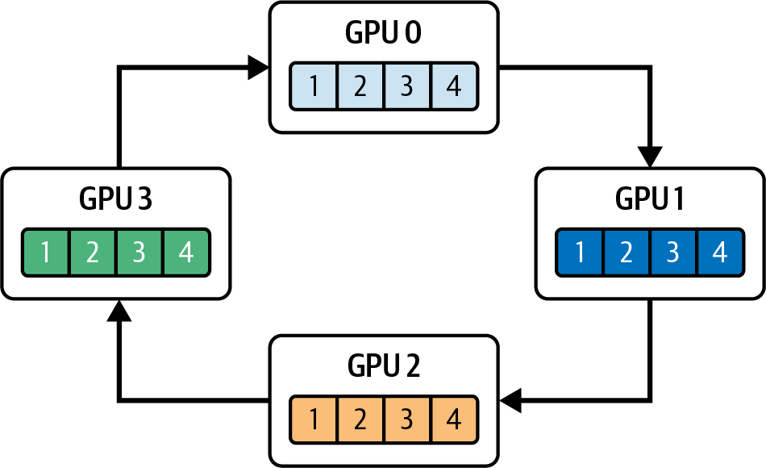</p>
<blockquote>
<p>Figure 11-8. Chunked all-reduce with four GPUs in a ring</p>
</blockquote>
<p>在这种环形 all-reduce 中，每个 GPU 把分块 <em>i</em> 发送给它的一个邻居（k → k+1），同时从它的另一个邻居（k−1 → k）接收分块 i−1，并使用设备核函数在 NVLink 或 PCIe 上搬运和归约这些分块。</p>
<blockquote>
<p>In this ring all-reduce, each GPU sends chunk i to its neighbor (k → k+1) while receiving chunk i-1 from its other neighbor (k-1 → k), using device kernels to move and reduce chunks over NVLink or PCIe.</p>
</blockquote>
<p>通过对这些分块的发送和接收进行流水线处理，NCCL 使 NVLink 完全饱和。当块 i 从 GPU 0 → GPU 1 遍历时，块 i-1 从 GPU 1 → GPU 2 移动，依此类推。这最小化了空闲间隙。在代码中，您会看到类似以下内容：</p>
<blockquote>
<p>By pipelining these chunked sends and receives, NCCL keeps NVLink fully saturated. While chunk i traverses from GPU 0 → GPU 1, chunk i−1 moves GPU 1 → GPU 2, and so on. This minimizes idle gaps. In code, you would see something like the following:
<div class="language-cpp highlight"><pre><span></span><code><span id="__span-11-1"><a id="__codelineno-11-1" name="__codelineno-11-1" href="#__codelineno-11-1"></a><span class="c1">// 在每个GPU上的高优先级通信流中：</span>
</span><span id="__span-11-2"><a id="__codelineno-11-2" name="__codelineno-11-2" href="#__codelineno-11-2"></a><span class="n">cudaEventRecord</span><span class="p">(</span><span class="n">eventK</span><span class="p">,</span><span class="w"> </span><span class="n">computeStream</span><span class="p">);</span>
</span><span id="__span-11-3"><a id="__codelineno-11-3" name="__codelineno-11-3" href="#__codelineno-11-3"></a><span class="n">cudaStreamWaitEvent</span><span class="p">(</span><span class="n">commStream</span><span class="p">,</span><span class="w"> </span><span class="n">eventK</span><span class="p">,</span><span class="w"> </span><span class="mi">0</span><span class="p">);</span>
</span><span id="__span-11-4"><a id="__codelineno-11-4" name="__codelineno-11-4" href="#__codelineno-11-4"></a><span class="n">ncclAllReduce</span><span class="p">(</span><span class="w"> </span><span class="c1">// 这是异步的</span>
</span><span id="__span-11-5"><a id="__codelineno-11-5" name="__codelineno-11-5" href="#__codelineno-11-5"></a><span class="w">    </span><span class="n">gradBuffer</span><span class="p">,</span><span class="w"> </span><span class="n">gradBuffer</span><span class="p">,</span><span class="w"> </span><span class="n">numElements</span><span class="p">,</span>
</span><span id="__span-11-6"><a id="__codelineno-11-6" name="__codelineno-11-6" href="#__codelineno-11-6"></a><span class="w">    </span><span class="n">ncclFloat</span><span class="p">,</span><span class="w"> </span><span class="n">ncclSum</span><span class="p">,</span><span class="w"> </span><span class="n">comm</span><span class="p">,</span><span class="w"> </span><span class="n">commStream</span><span class="p">);</span>
</span></code></pre></div></p>
<p>By pipelining these chunked sends and receives, NCCL keeps NVLink fully saturated. While chunk i traverses from GPU 0 → GPU 1, chunk i-1 moves GPU 1 → GPU 2, and so on. This minimizes idle gaps. In code, you would see something like the following:</p>
</blockquote>
<p>由于 NCCL 只使用少量 SM 线程块，它以低占用率的方式在 SM 上编排跨 NVLink 或 NVSwitch 的分块发送/接收 + 归约。与此同时，例如正在运行第 k+1 层反向传播的主计算 stream 可以继续运行。</p>
<blockquote>
<p>Because NCCL uses only a few SM thread blocks, it orchestrates the chunked send/recv + reduce across NVLink or NVSwitch in a low-occupancy manner on the SMs. Meanwhile, your main compute stream running a backward pass for layer k+1, for instance, can continue running.</p>
</blockquote>
<p>当 all-reduce 完成时，事件被记录如下：</p>
<div class="language-cpp highlight"><pre><span></span><code><span id="__span-12-1"><a id="__codelineno-12-1" name="__codelineno-12-1" href="#__codelineno-12-1"></a><span class="n">cudaEventRecord</span><span class="p">(</span><span class="n">eventAllReduceDone</span><span class="p">,</span><span class="w"> </span><span class="n">commStream</span><span class="p">);</span><span class="w"> </span><span class="c1">// 发出集合完成信号</span>
</span><span id="__span-12-2"><a id="__codelineno-12-2" name="__codelineno-12-2" href="#__codelineno-12-2"></a><span class="n">cudaStreamWaitEvent</span><span class="p">(</span><span class="n">computeStream</span><span class="p">,</span><span class="w"> </span><span class="n">eventAllReduceDone</span><span class="p">,</span><span class="w"> </span><span class="mi">0</span><span class="p">);</span>
</span><span id="__span-12-3"><a id="__codelineno-12-3" name="__codelineno-12-3" href="#__codelineno-12-3"></a><span class="c1">// 现在在computeStream上应用优化器更新...</span>
</span></code></pre></div>
<blockquote>
<p>When the all-reduce completes, the event is recorded as shown here:</p>
</blockquote>
<p>请记住，像 all-reduce 这样的 NCCL 集合操作是异步的。它们会立即返回控制权。通过在调用之后记录一个事件，并在计算 stream 中等待它，你就能确保计算 stream 直到归约真正完成后才恢复。</p>
<blockquote>
<p>Remember that NCCL collectives like all-reduce are asynchronous. They return control immediately. By recording an event after the call and waiting on it in the compute stream, you ensure that the compute stream doesn't resume until the reduction is actually completed.</p>
</blockquote>
<p>NCCL 的核函数经过刻意优化，能够在低占用率下、每个 GPU 只用少量 SM 资源的情况下达到最大带宽。在实践中，得益于为互连（interconnect）调优过的低占用率核函数，NCCL 每个 GPU 只用少量线程块就能饱和 NVLink 或 PCIe 带宽。此外，如果你的网络硬件支持，你还可以把其中一些集合聚合操作卸载到 NVIDIA SHARP。这将释放出更多 SM 资源来执行更有用的计算工作。</p>
<blockquote>
<p>NCCL's kernels have been purposely optimized to achieve maximum bandwidth at low occupancy using a small amount of SM resources per GPU. In practice, NCCL can saturate NVLink or PCIe bandwidth with a small number of thread blocks per GPU, thanks to low-occupancy kernels tuned for the interconnect. In addition, you can offload some of these collective aggregation operations to NVIDIA SHARP if your network hardware supports it. This will free up even more SM resources to perform more useful computational work.</p>
</blockquote>
<p>NIXL 为跨 NVLink、RDMA 与存储后端的点对点及分离式传输提供了统一的高吞吐 API，因此你通常会使用 NIXL 的 API，而不是自己去调用 cudaMemcpyPeerAsync。NIXL 能够跨不同的内存层级和互连快速且异步地搬运数据。当你用 nixlCommStream 调用一个 NIXL 操作时，数据会被分块，并使用可用的最快传输机制（例如 GPUDirect RDMA 或 NVLink）在网络上流水线化传输。</p>
<blockquote>
<p>NIXL provides a unified, high-throughput API for point-to-point and disaggregated transfers across NVLink, RDMA, and storage backends, so you typically use NIXL APIs instead of calling cudaMemcpyPeerAsync yourself. NIXL moves data quickly and asynchronously across different tiers of memory and interconnects. When you invoke a NIXL operation with nixlCommStream, the data is chunked and pipelined over the network using the fastest transport mechanism available, such as GPUDirect RDMA or NVLink.</p>
</blockquote>
<p>与 NCCL 一样，NIXL 也可以为分块的点对点及集合数据传输使用专用的高优先级 stream。这可以减少排队延迟，使它们的拷贝命令在发出后不久便命中 GPU 的 DMA 引擎——很可能抢占优先级更低的工作。</p>
<blockquote>
<p>And like NCCL, NIXL can use dedicated high‐priority streams for chunked peer‐to‐peer and collective data transfers. This can reduce queuing delays so their copy commands hit the GPU's DMA engines soon after they are issued-likely preempting lower‐priority work.</p>
</blockquote>
<p>把这些传输 stream 标记为高优先级，并不意味着它们会预先占用 SM 资源。它只是保证当拷贝命令准备就绪时，它们会先于其他低优先级操作被发出。</p>
<blockquote>
<p>Marking these transfer streams as high priority doesn't mean they consume SM resources upfront. It simply guarantees that when the copy commands are ready, they'll be issued ahead of other low-priority operations.</p>
</blockquote>
<p>在实践中，拷贝引擎随后会利用你的计算核函数尚未占用的那部分 DRAM 到 DRAM 带宽。因此，它们实际上只用空闲的内存织构（memory-fabric）带宽在互连上搬运数据。</p>
<blockquote>
<p>In practice, the copy engines then take advantage of whatever DRAM‐to‐DRAM bandwidth isn't already being used by your compute kernels. As such, they effectively use only idle memory‐fabric bandwidth to move data across the interconnects.</p>
</blockquote>
<p>这一设计最大化了重叠：当一个 stream 在拷贝引擎上驱动 cudaMemcpyPeerAsync 传输或 NCCL 归约核函数时，另一个 stream 的 SM 核函数可以继续处理前向/反向工作。而第三个 stream 可以执行异步分配或事件等待。这让所有硬件单元都保持忙碌且互不争用。</p>
<blockquote>
<p>This design maximizes overlap such that while one stream drives cudaMemcpyPeerAsync transfers or NCCL reduction kernels on the copy engine, another stream's SM kernels can continue processing forward/backward work. And a third stream can perform asynchronous allocations or event waits. This keeps all of the hardware units busy and without contention.</p>
</blockquote>
<p>用 cudaMemcpyPeerAsync 启动的点对点传输完全运行在 GPU 的拷贝引擎上，因此只消耗 DRAM 到 DRAM 带宽，而不占用任何 SM 周期。而像 all-reduce 这样的集合操作则被实现为设备核函数，它们使用少量 SM，同时把互连带宽推向峰值。</p>
<blockquote>
<p>Peer‐to‐peer transfers launched using cudaMemcpyPeerAsync run entirely on the GPU's copy engines, so they consume only DRAM‐to‐DRAM bandwidth and no SM cycles. Collective operations such as all-reduce, on the other hand, are implemented as device kernels that use a small number of SMs while driving interconnect bandwidth toward the peak.</p>
</blockquote>
<p>同时，用于激活或混合精度梯度的临时缓冲区被异步分配和释放，以避免全局停顿。例如，在每个 GPU 的计算流内，您将调用以下代码：</p>
<blockquote>
<p>Meanwhile, temporary buffers for activations or mixed-precision gradients are allocated and freed asynchronously to avoid global stalls. For example, inside each GPU's compute stream, you would call the following code:
<div class="language-cpp highlight"><pre><span></span><code><span id="__span-13-1"><a id="__codelineno-13-1" name="__codelineno-13-1" href="#__codelineno-13-1"></a><span class="n">cudaMallocAsync</span><span class="p">(</span><span class="o">&amp;</span><span class="n">tempBuffer</span><span class="p">,</span><span class="w"> </span><span class="n">tempBytes</span><span class="p">,</span><span class="w"> </span><span class="n">computeStream</span><span class="p">);</span>
</span><span id="__span-13-2"><a id="__codelineno-13-2" name="__codelineno-13-2" href="#__codelineno-13-2"></a><span class="c1">// ...在核函数中使用tempBuffer...</span>
</span><span id="__span-13-3"><a id="__codelineno-13-3" name="__codelineno-13-3" href="#__codelineno-13-3"></a><span class="n">cudaFreeAsync</span><span class="p">(</span><span class="n">tempBuffer</span><span class="p">,</span><span class="w"> </span><span class="n">computeStream</span><span class="p">);</span>
</span></code></pre></div></p>
<p>At the same time, temporary buffers for activations or mixed-precision gradients are allocated and freed asynchronously to avoid global stalls. For example, inside each GPU's compute stream, you would call the following code:</p>
</blockquote>
<p>由于流序内存分配器记录这些操作时不会强制进行设备级同步，CUDA 在分配或释放内存时不会暂停其他 stream，例如 P2P、NCCL 和 NIXL stream。这确保了缓冲区管理绝不会打断重叠进行的计算与通信流水线。</p>
<blockquote>
<p>Because the stream-ordered memory allocator records these operations without forcing a device-wide synchronization, CUDA does not pause the other streams such as P2P, NCCL, and NIXL streams when allocating or freeing memory. This makes sure that buffer management never interrupts the overlapped compute and communication pipeline.</p>
</blockquote>
<p>这正是我们前面讨论过的流序内存分配器——只不过现在应用到了多个 GPU 上。使用它有助于防止内存管理成为你分布式工作负载的瓶颈。</p>
<blockquote>
<p>This is exactly the stream-ordered memory allocator that we discussed earlier-but now applied to multiple GPUs. Using this will help prevent memory management from bottlenecking your distributed workloads.</p>
</blockquote>
<p>在你把一次迭代（例如训练或推理迭代）的前向传播、反向传播、P2P 拷贝、NCCL all-reduce、内存释放以及事件等待操作入队之后，你可以把这条执行链捕获进单个 CUDA Graph。</p>
<blockquote>
<p>After you enqueue the forward pass, backward pass, P2P copies, NCCL all-reduce, memory free, and event-wait operations for a single iteration, you can capture an execution chain (e.g., training or inference iteration) into a single CUDA Graph.</p>
</blockquote>
<p>具体来说，当您调用 cudaStreamBeginCapture 时，您加入流的每个操作（例如，核函数启动、计算、通信、数据传输、事件等）都作为节点插入图中。这可以包括 ncclAllReduce()、cudaMemcpyAsync、cudaMemcpyPeerAsync、cudaMallocAsync、cudaFreeAsync、cudaEventRecord、cudaStreamWaitEvent--以及它们的依赖关系。您使用 cudaStreamEndCapture(stream, &amp;graph)结束捕获。代码如下所示：</p>
<div class="language-cpp highlight"><pre><span></span><code><span id="__span-14-1"><a id="__codelineno-14-1" name="__codelineno-14-1" href="#__codelineno-14-1"></a><span class="n">cudaStreamBeginCapture</span><span class="p">(</span><span class="n">streamA</span><span class="p">,</span><span class="w"> </span><span class="n">cudaStreamCaptureModeGlobal</span><span class="p">);</span>
</span><span id="__span-14-2"><a id="__codelineno-14-2" name="__codelineno-14-2" href="#__codelineno-14-2"></a>
</span><span id="__span-14-3"><a id="__codelineno-14-3" name="__codelineno-14-3" href="#__codelineno-14-3"></a><span class="n">computeGradientsLayer1</span><span class="o">&lt;&lt;&lt;</span><span class="p">...</span><span class="w"> </span><span class="p">,</span><span class="w"> </span><span class="mi">0</span><span class="p">,</span><span class="w"> </span><span class="n">streamA</span><span class="o">&gt;&gt;&gt;</span><span class="p">(...);</span>
</span><span id="__span-14-4"><a id="__codelineno-14-4" name="__codelineno-14-4" href="#__codelineno-14-4"></a><span class="n">ncclAllReduce</span><span class="p">(...,</span><span class="w"> </span><span class="n">comm</span><span class="p">,</span><span class="w"> </span><span class="n">streamB</span><span class="p">);</span>
</span><span id="__span-14-5"><a id="__codelineno-14-5" name="__codelineno-14-5" href="#__codelineno-14-5"></a><span class="n">computeGradientsLayer2</span><span class="o">&lt;&lt;&lt;</span><span class="p">...</span><span class="w"> </span><span class="p">,</span><span class="w"> </span><span class="mi">0</span><span class="p">,</span><span class="w"> </span><span class="n">streamA</span><span class="o">&gt;&gt;&gt;</span><span class="p">(...);</span>
</span><span id="__span-14-6"><a id="__codelineno-14-6" name="__codelineno-14-6" href="#__codelineno-14-6"></a><span class="n">ncclAllReduce</span><span class="p">(...,</span><span class="w"> </span><span class="n">comm</span><span class="p">,</span><span class="w"> </span><span class="n">streamB</span><span class="p">);</span>
</span><span id="__span-14-7"><a id="__codelineno-14-7" name="__codelineno-14-7" href="#__codelineno-14-7"></a><span class="n">cudaStreamEndCapture</span><span class="p">(</span><span class="n">streamA</span><span class="p">,</span><span class="w"> </span><span class="o">&amp;</span><span class="n">graph</span><span class="p">);</span>
</span></code></pre></div>
<blockquote>
<p>Specifically, when you call cudaStreamBeginCapture, every operation you enqueue into the stream (e.g., kernel launches, computations, communications, data transfers, events, etc.) are inserted as nodes in the graph. This can include ncclAllReduce(), cudaMemcpyAsync, cudaMemcpyPeerAsync, cudaMallocAsync, cudaFreeAsync, cudaEventRecord, cudaStreamWaitEvent-as well as their dependencies. You end the capture with cudaStreamEndCapture(stream, &amp;graph). The code looks something like this:</p>
</blockquote>
<p>在捕获提交到多个 stream 的工作时，请使用 cudaStreamCaptureModeGlobal Global，这样同一线程中入队到任何参与 stream 的操作都会被记录进同一个捕获会话——并且跨流依赖也会被保留。否则，只有入队到传给 cudaStream BeginCapture 的那个 stream 的操作才会被捕获。</p>
<blockquote>
<p>When capturing work submitted to multiple streams, use cudaStreamCaptureModeGlobal so operations enqueued on any participating stream in the same thread are recorded into the same capture session-and cross-stream dependencies are preserved. Otherwise, only the operations enqueued on the stream passed to cudaStreamBeginCapture are captured.</p>
</blockquote>
<p>随后你可以用 cudaGraphLaunch() 实例化并启动该图。这将以接近零的 CPU 开销重放整个 DAG。通过把整个多 GPU 迭代一次性捕获下来，你消除了每个操作的入队与启动开销。</p>
<blockquote>
<p>You can then instantiate and launch the graph with cudaGraphLaunch(). This will replay the entire DAG with near-zero CPU overhead. By capturing the whole multi-GPU iteration once, you eliminate per-operation enqueue and launch overhead.</p>
</blockquote>
<p>此外，CUDA Graphs 支持条件节点（例如梯度裁剪），因此不常发生的分支也保留在图的逻辑内部。我们会在下一章更详细地介绍 CUDA Graphs，但理解它们与 CUDA streams 的关系很重要，包括 cudaStreamBeginCapture 和 cudaStreamEndCapture。</p>
<blockquote>
<p>Moreover, CUDA Graphs support conditional nodes (e.g., gradient clipping), so infrequent branches stay inside the graph's logic. We'll cover CUDA Graphs in more detail in the next chapter, but it's important to understand their relationship to CUDA streams, including cudaStreamBeginCapture and cudaStreamEndCapture.</p>
</blockquote>
<p>像 PyTorch 这样的现代框架把这些复杂性大多隐藏了起来。例如，PyTorch 的 DistributedDataParallel 会自动把数据传输、计算与通信调度到各自独立的 stream 中。它还使用 CUDA Graphs 来降低每次迭代的开销。尽管它可以使用 CUDA Graphs 来降低开销，但你必须通过使用捕获安全（capture-safe）的代码和 API 显式启用这一点，因为它并非自动启用。</p>
<blockquote>
<p>Modern frameworks like PyTorch hide much of this complexity. For example, PyTorch's DistributedDataParallel automatically schedules data transfers, compute, and communications in separate streams. It also uses CUDA Graphs to reduce per-iteration overhead. While it can use CUDA Graphs to reduce overhead, you must explicitly enable this by using capture-safe code and APIs because it's not automatically enabled.</p>
</blockquote>
<p>虽然你并不需要显式使用这些 CUDA stream 的开始与结束 API 来构建 CUDA Graph，但当你希望在把操作入队到 stream 的同时捕获图时，它们会很方便（我们会在下一章更详细地介绍 CUDA Graphs）。</p>
<blockquote>
<p>While you don't need to explicitly use these CUDA stream begin and end APIs to build a CUDA Graph, they are convenient when you want to capture the graph at the same time you are enqueuing operations into your stream (we'll cover CUDA Graphs in more detail in the next chapter).</p>
</blockquote>
<p>CUDA streams 通过在 CPU、DMA 引擎与 SM 之间重叠工作，让多 GPU 系统中的流水线得以精细调优。在 CPU 一侧，把数据用 cudaMemcpyAsync 拷入固定主机缓冲区，可以在 GPU 执行当前工作负载的同时为下一批次暂存数据，从而确保批次 N+1 的输入在批次 <em>N</em> 完成之前就已就绪。与此同时，GPU 之间的点对点传输（使用 cudaMemcpyPeerAsync）可以被调度到专用 stream 上，并用 cudaStreamWaitEvent 同步，以便在不停顿正在进行的计算的前提下交接激活值或梯度。</p>
<blockquote>
<p>CUDA streams enable finely tuned pipelines in multi-GPU systems by overlapping work across CPUs, DMA engines, and SMs. On the CPU side, cudaMemcpyAsync into pinned host buffers stages data for the next batch while the GPU executes the current workload, ensuring that inputs for batch N+1 are ready before batch N completes. At the same time, peer-to-peer transfers between GPUs (using cudaMemcpyPeerAsync) can be scheduled on dedicated streams, synchronized with cudaStreamWaitEvent to hand off activations or gradients without stalling ongoing compute.</p>
</blockquote>
<p>如前所述，像 NCCL 或 NIXL 这样的集合通信库是使用独立 stream 的低占用率通信核函数。这样一来，当一个 GPU 在归约梯度或广播参数时，同一个 GPU 上的其他 stream 可以继续执行本地计算核函数（例如后续各层的前向或反向传播）。此外，按 stream 顺序使用 cudaMallocAsync 和 cudaFreeAsync，可以避免为临时缓冲区做全局同步，让分配与释放能够与计算和通信并发进行。</p>
<blockquote>
<p>As mentioned, collective communication libraries like NCCL or NIXL are low-occupancy communication kernels that use separate streams. This way, while one GPU is reducing gradients or broadcasting parameters, other streams on that same GPU can continue executing local compute kernels (e.g., forward or backward passes for subsequent layers). In addition, using cudaMallocAsync and cudaFreeAsync in stream order prevents global synchronization for temporary buffers, letting allocation and deallocation proceed concurrently with compute and communication.</p>
</blockquote>
<p>把整个迭代（例如 CPU 暂存、P2P 传输、计算核函数、NCCL 调用、分配、释放以及事件/等待）捕获进一个 CUDA Graph，可以进一步降低 CPU 开销。图一旦实例化，调用 cudaGraphLaunch() 就会一次性重放所记录的 DAG。这消除了每次调用的入队开销，并自动保留所有依赖关系。</p>
<blockquote>
<p>Capturing the entire iteration (e.g., CPU staging, P2P transfers, compute kernels, NCCL calls, allocations, frees, and events/waits) into a CUDA Graph can further reduce CPU overhead. Once the graph is instantiated, invoking cudaGraphLaunch() replays the recorded DAG in one go. This eliminates per-call enqueue overhead and preserves all dependencies automatically.</p>
</blockquote>
<p>综合起来，这些技术确保每个 GPU 的 SM 流水线、拷贝引擎和互连链路都保持忙碌。当一个 stream 运行矩阵乘核函数时，另一个执行点对点拷贝，第三个执行集合通信，而 CPU 则为下一个微批量暂存数据。</p>
<blockquote>
<p>Together, these techniques ensure that each GPU's SM pipelines, copy engines, and interconnect links remain busy. While one stream runs matrix-multiply kernels, another performs peer-to-peer copies, a third executes collective communication, and the CPU stages data for the next microbatch.</p>
</blockquote>
<p>简而言之，你可以用 CUDA streams 来编排跨多个层次的工作，并重叠计算、内存操作与数据传输。这种方法通过把点对点和集合通信延迟隐藏在活跃计算之后，把每一个硬件单元都推向极限。总体而言，CUDA streams 为许多 AI 工作负载（包括 LLM 训练与推理）最大化了吞吐、利用率和效率。</p>
<blockquote>
<p>In short, you can use CUDA streams to orchestrate work across multiple layers and overlap computation, memory operations, and data transfers. This approach drives every hardware unit to its limits by hiding peer-to-peer and collective communication latencies behind active compute. Overall, CUDA streams maximize throughput, utilization, and efficiency for many AI workloads, including LLM training and inference.</p>
</blockquote>
<h2 id="programmatic-dependent-launch">程序化依赖启动 (Programmatic Dependent Launch)<a class="headerlink" href="#programmatic-dependent-launch" title="Permanent link">&para;</a></h2>
<p>另一种核间流水线化与通信的方式称为<em>程序化依赖启动</em>（Programmatic Dependent Launch，PDL）。PDL 让一个核函数能够在设备上直接触发另一个核函数的执行，使用同一条 CUDA stream——并且无需 CPU 参与。例如，作为主核函数（primary kernel）的 Kernel A 可以触发作为次级核函数（secondary kernel）的 Kernel B，而后者正在等待来自 Kernel A 的信号。</p>
<blockquote>
<p>Another type of inter-kernel pipelining and communication is called Programmatic Dependent Launch (PDL). PDL lets a kernel trigger another kernel's execution directly on the device using the same CUDA stream-and without involving the CPU. For instance, Kernel A, the primary kernel, can trigger Kernel B, the secondary kernel, which is waiting on a signal from Kernel A.</p>
</blockquote>
<p>这一触发甚至可以在 Kernel A 执行完成之前发生。为此，它使用 cudaTriggerProgrammaticLaunchCompletion()，如图 11-9 所示。这里，Kernel B 通过调用 cudaGridDependencySynchronize() 等待 Kernel A。</p>
<blockquote>
<p>This trigger can happen even before Kernel A finishes execution. To do this, it uses cudaTriggerProgrammaticLaunchCompletion(), as shown in Figure 11-9. Here, Kernel B is waiting on Kernel A with a call to cudaGridDependencySynchronize().</p>
</blockquote>
<p>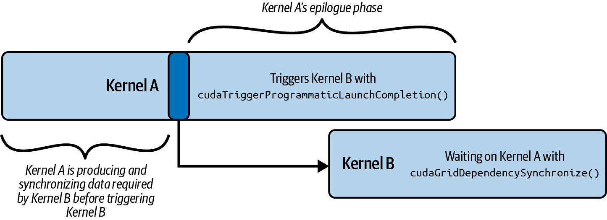</p>
<blockquote>
<p>Figure 11-9. Using PDL to launch Kernel B from Kernel A-partially overlapping Kernel B's execution with Kernel A's epilogue (in the same CUDA stream)</p>
</blockquote>
<p>利用 PDL 提供的构件，Kernel A 可以在其<em>收尾</em>阶段就发信号让 Kernel B 执行。这样，Kernel A 就能与 Kernel B 并行执行一小段时间。需要重点注意的是，在 Kernel A 尚未产出并同步好 Kernel B 所需的全部数据（例如 L2/共享内存/全局内存）之前，Kernel A 不应触发 Kernel B 执行。</p>
<blockquote>
<p>Using the constructs provided by PDL, Kernel A can signal Kernel B to execute during Kernel A's epilogue (e.g., wrap-up) phase. This way, Kernel A can execute alongside Kernel B for a bit of time. It's important to note that Kernel A should not trigger Kernel B to execute until Kernel A has produced and synchronized all data (e.g., L2/shared memory/global memory) needed by Kernel B.</p>
</blockquote>
<p>依赖核函数的数据依赖关系应该在 L2、共享内存、全局内存等中可见，然后才能继续处理。</p>
<blockquote>
<p>The data dependencies of the dependent kernel should be visible in L2, shared memory, global memory, etc., before it continues processing.</p>
</blockquote>
<p>下面的代码展示了 Kernel A 使用 cudaTriggerProgrammaticLaunchCompletion() 向 Kernel B 发信号，表明其主要工作已经完成。这同时也通知 Kernel B：所有必要的全局内存刷新都已发生——可以安全地继续：</p>
<blockquote>
<p>The code here shows Kernel A using cudaTriggerProgrammaticLaunchCompletion() to signal to Kernel B that its main work has completed. This also notifies Kernel B that all necessary global-memory flushes have occurred-and that it's safe to continue:</p>
</blockquote>
<div class="language-cpp highlight"><pre><span></span><code><span id="__span-15-1"><a id="__codelineno-15-1" name="__codelineno-15-1" href="#__codelineno-15-1"></a><span class="cp">#include</span><span class="w"> </span><span class="cpf">&lt;cuda_runtime.h&gt;</span><span class="w">           </span>
</span><span id="__span-15-2"><a id="__codelineno-15-2" name="__codelineno-15-2" href="#__codelineno-15-2"></a><span class="cp">#include</span><span class="w"> </span><span class="cpf">&lt;cuda_runtime_api.h&gt;</span><span class="w">       </span>
</span><span id="__span-15-3"><a id="__codelineno-15-3" name="__codelineno-15-3" href="#__codelineno-15-3"></a>
</span><span id="__span-15-4"><a id="__codelineno-15-4" name="__codelineno-15-4" href="#__codelineno-15-4"></a><span class="c1">// Kernel A must trigger the PDL flag when it's</span>
</span><span id="__span-15-5"><a id="__codelineno-15-5" name="__codelineno-15-5" href="#__codelineno-15-5"></a><span class="c1">//    safe to launch Kernel B</span>
</span><span id="__span-15-6"><a id="__codelineno-15-6" name="__codelineno-15-6" href="#__codelineno-15-6"></a><span class="n">__global__</span><span class="w"> </span><span class="kt">void</span><span class="w"> </span><span class="n">kernel_A</span><span class="p">(</span><span class="kt">int</span><span class="w"> </span><span class="o">*</span><span class="n">d_ptr</span><span class="p">)</span><span class="w"> </span><span class="p">{</span>
</span><span id="__span-15-7"><a id="__codelineno-15-7" name="__codelineno-15-7" href="#__codelineno-15-7"></a><span class="w">    </span><span class="c1">// Perform work that produces data used by </span>
</span><span id="__span-15-8"><a id="__codelineno-15-8" name="__codelineno-15-8" href="#__codelineno-15-8"></a><span class="w">    </span><span class="c1">//   Kernel B</span>
</span><span id="__span-15-9"><a id="__codelineno-15-9" name="__codelineno-15-9" href="#__codelineno-15-9"></a>
</span><span id="__span-15-10"><a id="__codelineno-15-10" name="__codelineno-15-10" href="#__codelineno-15-10"></a><span class="w">    </span><span class="c1">// Signals that Kernel A's global-memory</span>
</span><span id="__span-15-11"><a id="__codelineno-15-11" name="__codelineno-15-11" href="#__codelineno-15-11"></a><span class="w">    </span><span class="c1">//   flushes are complete</span>
</span><span id="__span-15-12"><a id="__codelineno-15-12" name="__codelineno-15-12" href="#__codelineno-15-12"></a><span class="w">    </span><span class="c1">// This enables dependent Kernel B's launch</span>
</span><span id="__span-15-13"><a id="__codelineno-15-13" name="__codelineno-15-13" href="#__codelineno-15-13"></a>
</span><span id="__span-15-14"><a id="__codelineno-15-14" name="__codelineno-15-14" href="#__codelineno-15-14"></a><span class="w">    </span><span class="n">cudaTriggerProgrammaticLaunchCompletion</span><span class="p">();</span><span class="w">  </span>
</span><span id="__span-15-15"><a id="__codelineno-15-15" name="__codelineno-15-15" href="#__codelineno-15-15"></a>
</span><span id="__span-15-16"><a id="__codelineno-15-16" name="__codelineno-15-16" href="#__codelineno-15-16"></a><span class="w">    </span><span class="c1">// ... any further work that can overlap with  ...</span>
</span><span id="__span-15-17"><a id="__codelineno-15-17" name="__codelineno-15-17" href="#__codelineno-15-17"></a><span class="w">    </span><span class="p">...</span>
</span><span id="__span-15-18"><a id="__codelineno-15-18" name="__codelineno-15-18" href="#__codelineno-15-18"></a><span class="p">}</span>
</span><span id="__span-15-19"><a id="__codelineno-15-19" name="__codelineno-15-19" href="#__codelineno-15-19"></a>
</span><span id="__span-15-20"><a id="__codelineno-15-20" name="__codelineno-15-20" href="#__codelineno-15-20"></a><span class="c1">// Kernel B must wait for Kernel A to write its memory </span>
</span><span id="__span-15-21"><a id="__codelineno-15-21" name="__codelineno-15-21" href="#__codelineno-15-21"></a><span class="c1">//    to global memory and become visible to Kernel B</span>
</span><span id="__span-15-22"><a id="__codelineno-15-22" name="__codelineno-15-22" href="#__codelineno-15-22"></a><span class="n">__global__</span><span class="w"> </span><span class="kt">void</span><span class="w"> </span><span class="n">kernel_B</span><span class="p">(</span><span class="kt">int</span><span class="w"> </span><span class="o">*</span><span class="n">d_ptr</span><span class="p">)</span><span class="w"> </span><span class="p">{</span>
</span><span id="__span-15-23"><a id="__codelineno-15-23" name="__codelineno-15-23" href="#__codelineno-15-23"></a>
</span><span id="__span-15-24"><a id="__codelineno-15-24" name="__codelineno-15-24" href="#__codelineno-15-24"></a><span class="w">    </span><span class="c1">// Wait on Kernel A to complete.</span>
</span><span id="__span-15-25"><a id="__codelineno-15-25" name="__codelineno-15-25" href="#__codelineno-15-25"></a><span class="w">    </span><span class="c1">// This ensures the Kernel B waits for the </span>
</span><span id="__span-15-26"><a id="__codelineno-15-26" name="__codelineno-15-26" href="#__codelineno-15-26"></a><span class="w">    </span><span class="c1">//   memory flush before accessing shared data</span>
</span><span id="__span-15-27"><a id="__codelineno-15-27" name="__codelineno-15-27" href="#__codelineno-15-27"></a><span class="w">    </span><span class="n">cudaGridDependencySynchronize</span><span class="p">();</span><span class="w">            </span>
</span><span id="__span-15-28"><a id="__codelineno-15-28" name="__codelineno-15-28" href="#__codelineno-15-28"></a>
</span><span id="__span-15-29"><a id="__codelineno-15-29" name="__codelineno-15-29" href="#__codelineno-15-29"></a><span class="w">    </span><span class="c1">// ... dependent work on d_ptr ...</span>
</span><span id="__span-15-30"><a id="__codelineno-15-30" name="__codelineno-15-30" href="#__codelineno-15-30"></a><span class="w">    </span><span class="p">...</span>
</span><span id="__span-15-31"><a id="__codelineno-15-31" name="__codelineno-15-31" href="#__codelineno-15-31"></a><span class="p">}</span>
</span><span id="__span-15-32"><a id="__codelineno-15-32" name="__codelineno-15-32" href="#__codelineno-15-32"></a>
</span><span id="__span-15-33"><a id="__codelineno-15-33" name="__codelineno-15-33" href="#__codelineno-15-33"></a><span class="kt">int</span><span class="w"> </span><span class="n">main</span><span class="p">()</span><span class="w"> </span><span class="p">{</span>
</span><span id="__span-15-34"><a id="__codelineno-15-34" name="__codelineno-15-34" href="#__codelineno-15-34"></a><span class="w">    </span><span class="c1">// 1) Allocate device buffer</span>
</span><span id="__span-15-35"><a id="__codelineno-15-35" name="__codelineno-15-35" href="#__codelineno-15-35"></a><span class="w">    </span><span class="kt">int</span><span class="w"> </span><span class="o">*</span><span class="n">d_ptr</span><span class="w"> </span><span class="o">=</span><span class="w"> </span><span class="nb">nullptr</span><span class="p">;</span>
</span><span id="__span-15-36"><a id="__codelineno-15-36" name="__codelineno-15-36" href="#__codelineno-15-36"></a><span class="w">    </span><span class="c1">// Allocate an int (example)</span>
</span><span id="__span-15-37"><a id="__codelineno-15-37" name="__codelineno-15-37" href="#__codelineno-15-37"></a><span class="w">    </span><span class="n">cudaMalloc</span><span class="p">((</span><span class="kt">void</span><span class="o">**</span><span class="p">)</span><span class="o">&amp;</span><span class="n">d_ptr</span><span class="p">,</span><span class="w"> </span><span class="k">sizeof</span><span class="p">(</span><span class="kt">int</span><span class="p">));</span><span class="w">     </span>
</span><span id="__span-15-38"><a id="__codelineno-15-38" name="__codelineno-15-38" href="#__codelineno-15-38"></a>
</span><span id="__span-15-39"><a id="__codelineno-15-39" name="__codelineno-15-39" href="#__codelineno-15-39"></a><span class="w">    </span><span class="c1">// 2) Create a nonblocking stream for maximum overlap</span>
</span><span id="__span-15-40"><a id="__codelineno-15-40" name="__codelineno-15-40" href="#__codelineno-15-40"></a><span class="w">    </span><span class="n">cudaStream_t</span><span class="w"> </span><span class="n">stream</span><span class="p">;</span>
</span><span id="__span-15-41"><a id="__codelineno-15-41" name="__codelineno-15-41" href="#__codelineno-15-41"></a><span class="w">    </span><span class="n">cudaStreamCreateWithFlags</span><span class="p">(</span><span class="o">&amp;</span><span class="n">stream</span><span class="p">,</span><span class="w"> </span>
</span><span id="__span-15-42"><a id="__codelineno-15-42" name="__codelineno-15-42" href="#__codelineno-15-42"></a><span class="w">        </span><span class="n">cudaStreamNonBlocking</span><span class="p">);</span><span class="w">  </span><span class="c1">// Nonblocking </span>
</span><span id="__span-15-43"><a id="__codelineno-15-43" name="__codelineno-15-43" href="#__codelineno-15-43"></a>
</span><span id="__span-15-44"><a id="__codelineno-15-44" name="__codelineno-15-44" href="#__codelineno-15-44"></a><span class="w">    </span><span class="c1">// 3) Define grid/block sizes</span>
</span><span id="__span-15-45"><a id="__codelineno-15-45" name="__codelineno-15-45" href="#__codelineno-15-45"></a><span class="w">    </span><span class="n">dim3</span><span class="w"> </span><span class="nf">gridDim</span><span class="p">(</span><span class="mi">128</span><span class="p">),</span><span class="w"> </span><span class="n">blockDim</span><span class="p">(</span><span class="mi">256</span><span class="p">);</span>
</span><span id="__span-15-46"><a id="__codelineno-15-46" name="__codelineno-15-46" href="#__codelineno-15-46"></a>
</span><span id="__span-15-47"><a id="__codelineno-15-47" name="__codelineno-15-47" href="#__codelineno-15-47"></a><span class="w">    </span><span class="c1">// 4) Launch Kernel A asynchronously</span>
</span><span id="__span-15-48"><a id="__codelineno-15-48" name="__codelineno-15-48" href="#__codelineno-15-48"></a><span class="w">    </span><span class="n">kernel_A</span><span class="o">&lt;&lt;&lt;</span><span class="n">gridDim</span><span class="p">,</span><span class="w"> </span><span class="n">blockDim</span><span class="p">,</span><span class="w"> </span><span class="mi">0</span><span class="p">,</span><span class="w"> </span>
</span><span id="__span-15-49"><a id="__codelineno-15-49" name="__codelineno-15-49" href="#__codelineno-15-49"></a><span class="w">        </span><span class="n">stream</span><span class="o">&gt;&gt;&gt;</span><span class="p">(</span><span class="n">d_ptr</span><span class="p">);</span><span class="w">    </span><span class="c1">// Async launch </span>
</span><span id="__span-15-50"><a id="__codelineno-15-50" name="__codelineno-15-50" href="#__codelineno-15-50"></a>
</span><span id="__span-15-51"><a id="__codelineno-15-51" name="__codelineno-15-51" href="#__codelineno-15-51"></a><span class="w">    </span><span class="c1">// 5) Configure PDL for Kernel B</span>
</span><span id="__span-15-52"><a id="__codelineno-15-52" name="__codelineno-15-52" href="#__codelineno-15-52"></a><span class="w">    </span><span class="n">cudaLaunchConfig_t</span><span class="w"> </span><span class="n">launch_cfg</span><span class="p">{};</span>
</span><span id="__span-15-53"><a id="__codelineno-15-53" name="__codelineno-15-53" href="#__codelineno-15-53"></a><span class="w">    </span><span class="n">launch_cfg</span><span class="p">.</span><span class="n">gridDim</span><span class="w">           </span><span class="o">=</span><span class="w"> </span><span class="n">gridDim</span><span class="p">;</span>
</span><span id="__span-15-54"><a id="__codelineno-15-54" name="__codelineno-15-54" href="#__codelineno-15-54"></a><span class="w">    </span><span class="n">launch_cfg</span><span class="p">.</span><span class="n">blockDim</span><span class="w">          </span><span class="o">=</span><span class="w"> </span><span class="n">blockDim</span><span class="p">;</span>
</span><span id="__span-15-55"><a id="__codelineno-15-55" name="__codelineno-15-55" href="#__codelineno-15-55"></a><span class="w">    </span><span class="n">launch_cfg</span><span class="p">.</span><span class="n">dynamicSmemBytes</span><span class="w">  </span><span class="o">=</span><span class="w"> </span><span class="mi">0</span><span class="p">;</span>
</span><span id="__span-15-56"><a id="__codelineno-15-56" name="__codelineno-15-56" href="#__codelineno-15-56"></a><span class="w">    </span><span class="n">launch_cfg</span><span class="p">.</span><span class="n">stream</span><span class="w">            </span><span class="o">=</span><span class="w"> </span><span class="n">stream</span><span class="p">;</span>
</span><span id="__span-15-57"><a id="__codelineno-15-57" name="__codelineno-15-57" href="#__codelineno-15-57"></a>
</span><span id="__span-15-58"><a id="__codelineno-15-58" name="__codelineno-15-58" href="#__codelineno-15-58"></a><span class="w">    </span><span class="c1">// Sets the PDL flag so cudaLaunchKernelExC overlaps </span>
</span><span id="__span-15-59"><a id="__codelineno-15-59" name="__codelineno-15-59" href="#__codelineno-15-59"></a><span class="w">    </span><span class="c1">//   with Kernel A's epilogue</span>
</span><span id="__span-15-60"><a id="__codelineno-15-60" name="__codelineno-15-60" href="#__codelineno-15-60"></a><span class="w">    </span><span class="k">static</span><span class="w"> </span><span class="n">cudaLaunchAttribute</span><span class="w"> </span><span class="n">attrs</span><span class="p">[</span><span class="mi">1</span><span class="p">];</span>
</span><span id="__span-15-61"><a id="__codelineno-15-61" name="__codelineno-15-61" href="#__codelineno-15-61"></a><span class="w">    </span><span class="n">attrs</span><span class="p">[</span><span class="mi">0</span><span class="p">].</span><span class="n">id</span><span class="w">  </span><span class="o">=</span><span class="w"> </span>
</span><span id="__span-15-62"><a id="__codelineno-15-62" name="__codelineno-15-62" href="#__codelineno-15-62"></a><span class="n">cudaLaunchAttributeProgrammaticStreamSerialization</span><span class="p">;</span>
</span><span id="__span-15-63"><a id="__codelineno-15-63" name="__codelineno-15-63" href="#__codelineno-15-63"></a><span class="w">    </span><span class="n">attrs</span><span class="p">[</span><span class="mi">0</span><span class="p">].</span><span class="n">val</span><span class="p">.</span><span class="n">programmaticStreamSerializationAllowed</span><span class="w"> </span><span class="o">=</span><span class="w"> </span>
</span><span id="__span-15-64"><a id="__codelineno-15-64" name="__codelineno-15-64" href="#__codelineno-15-64"></a><span class="w">        </span><span class="mi">1</span><span class="p">;</span>
</span><span id="__span-15-65"><a id="__codelineno-15-65" name="__codelineno-15-65" href="#__codelineno-15-65"></a><span class="w">    </span><span class="n">launch_cfg</span><span class="p">.</span><span class="n">attrs</span><span class="w">    </span><span class="o">=</span><span class="w"> </span><span class="n">attrs</span><span class="p">;</span>
</span><span id="__span-15-66"><a id="__codelineno-15-66" name="__codelineno-15-66" href="#__codelineno-15-66"></a><span class="w">    </span><span class="n">launch_cfg</span><span class="p">.</span><span class="n">numAttrs</span><span class="w"> </span><span class="o">=</span><span class="w"> </span><span class="mi">1</span><span class="p">;</span>
</span><span id="__span-15-67"><a id="__codelineno-15-67" name="__codelineno-15-67" href="#__codelineno-15-67"></a>
</span><span id="__span-15-68"><a id="__codelineno-15-68" name="__codelineno-15-68" href="#__codelineno-15-68"></a><span class="w">    </span><span class="c1">// 6) Pack the pointer argument</span>
</span><span id="__span-15-69"><a id="__codelineno-15-69" name="__codelineno-15-69" href="#__codelineno-15-69"></a><span class="w">    </span><span class="kt">void</span><span class="o">*</span><span class="w"> </span><span class="n">kernelArgs</span><span class="p">[]</span><span class="w"> </span><span class="o">=</span><span class="w"> </span><span class="p">{</span><span class="w"> </span><span class="o">&amp;</span><span class="n">d_ptr</span><span class="w"> </span><span class="p">};</span>
</span><span id="__span-15-70"><a id="__codelineno-15-70" name="__codelineno-15-70" href="#__codelineno-15-70"></a>
</span><span id="__span-15-71"><a id="__codelineno-15-71" name="__codelineno-15-71" href="#__codelineno-15-71"></a><span class="w">    </span><span class="c1">// 7) Launch Kernel B kernel early using PDL</span>
</span><span id="__span-15-72"><a id="__codelineno-15-72" name="__codelineno-15-72" href="#__codelineno-15-72"></a><span class="w">    </span><span class="c1">// Lookup device pointer for secondary_kernel</span>
</span><span id="__span-15-73"><a id="__codelineno-15-73" name="__codelineno-15-73" href="#__codelineno-15-73"></a><span class="w">    </span><span class="n">cudaKernel_t</span><span class="w"> </span><span class="n">kB</span><span class="p">;</span>
</span><span id="__span-15-74"><a id="__codelineno-15-74" name="__codelineno-15-74" href="#__codelineno-15-74"></a><span class="w">    </span><span class="n">cudaGetKernel</span><span class="p">(</span><span class="o">&amp;</span><span class="n">kB</span><span class="p">,</span><span class="w"> </span><span class="n">kernel_B</span><span class="p">);</span>
</span><span id="__span-15-75"><a id="__codelineno-15-75" name="__codelineno-15-75" href="#__codelineno-15-75"></a>
</span><span id="__span-15-76"><a id="__codelineno-15-76" name="__codelineno-15-76" href="#__codelineno-15-76"></a><span class="w">    </span><span class="kt">void</span><span class="o">*</span><span class="w"> </span><span class="n">funcPtr_kernel_B</span><span class="w"> </span><span class="o">=</span><span class="w"> </span><span class="k">reinterpret_cast</span><span class="o">&lt;</span><span class="kt">void</span><span class="o">*&gt;</span><span class="p">(</span><span class="n">kB</span><span class="p">);</span>
</span><span id="__span-15-77"><a id="__codelineno-15-77" name="__codelineno-15-77" href="#__codelineno-15-77"></a><span class="w">    </span><span class="n">cudaLaunchKernelExC</span><span class="p">(</span><span class="o">&amp;</span><span class="n">launch_cfg</span><span class="p">,</span><span class="w"> </span><span class="n">funcPtr_kernel_B</span><span class="p">,</span><span class="w"> </span>
</span><span id="__span-15-78"><a id="__codelineno-15-78" name="__codelineno-15-78" href="#__codelineno-15-78"></a><span class="n">kernelArgs</span><span class="p">);</span>
</span><span id="__span-15-79"><a id="__codelineno-15-79" name="__codelineno-15-79" href="#__codelineno-15-79"></a>
</span><span id="__span-15-80"><a id="__codelineno-15-80" name="__codelineno-15-80" href="#__codelineno-15-80"></a><span class="w">    </span><span class="c1">// 8) Wait until all work in the stream completes</span>
</span><span id="__span-15-81"><a id="__codelineno-15-81" name="__codelineno-15-81" href="#__codelineno-15-81"></a><span class="w">    </span><span class="n">cudaStreamSynchronize</span><span class="p">(</span><span class="n">stream</span><span class="p">);</span>
</span><span id="__span-15-82"><a id="__codelineno-15-82" name="__codelineno-15-82" href="#__codelineno-15-82"></a>
</span><span id="__span-15-83"><a id="__codelineno-15-83" name="__codelineno-15-83" href="#__codelineno-15-83"></a><span class="w">    </span><span class="c1">// 9) Cleanup</span>
</span><span id="__span-15-84"><a id="__codelineno-15-84" name="__codelineno-15-84" href="#__codelineno-15-84"></a><span class="w">    </span><span class="n">cudaStreamDestroy</span><span class="p">(</span><span class="n">stream</span><span class="p">);</span>
</span><span id="__span-15-85"><a id="__codelineno-15-85" name="__codelineno-15-85" href="#__codelineno-15-85"></a><span class="w">    </span><span class="n">cudaFree</span><span class="p">(</span><span class="n">d_ptr</span><span class="p">);</span>
</span><span id="__span-15-86"><a id="__codelineno-15-86" name="__codelineno-15-86" href="#__codelineno-15-86"></a>
</span><span id="__span-15-87"><a id="__codelineno-15-87" name="__codelineno-15-87" href="#__codelineno-15-87"></a><span class="w">    </span><span class="k">return</span><span class="w"> </span><span class="mi">0</span><span class="p">;</span>
</span><span id="__span-15-88"><a id="__codelineno-15-88" name="__codelineno-15-88" href="#__codelineno-15-88"></a><span class="p">}</span>
</span></code></pre></div>
<p>这里，Kernel B 一直在 cudaGridDependencySynchronize() 上等待，直到它收到来自 Kernel A 的这一程序化启动完成信号。一旦交接发生，这两个核函数就可以重叠执行。通过把 Kernel A 中的触发、Kernel B 中的同步以及主机端的启动属性配对起来，这段代码在 Kernel A 与 Kernel B 之间实现了尽可能多的重叠。</p>
<blockquote>
<p>Here, Kernel B is waiting on cudaGridDependencySynchronize() until it receives this programmatic-launch completion signal from Kernel A. Once the handoff occurs, the two kernels can overlap their execution. By pairing the trigger in Kernel A, the synchronize in Kernel B, and the launch attribute on the host, this code achieves as much overlap as possible between kernels A and B.</p>
</blockquote>
<p>正如本例所示，使用 PDL 时你需要创建一个 cudaLaunchConfig<em>t，并在 cudaLaunchKernelExC() 这一 CUDA 调用中使用特殊属性。具体来说，在主机端，PDL 是通过为 Kernel B 的启动配置一个 cudaLaunchConfig</em>t，并启用 cudaLaunchAttributeProgrammaticStreamSerialization 属性来开启的，以允许提前的、重叠的分派。</p>
<blockquote>
<p>As seen in this example, you need to create a cudaLaunchConfig<em>t and use special attributes with the cudaLaunchKernelExC() CUDA call when using PDL. Specifically, on the host side, PDL is enabled by configuring a cudaLaunchConfig</em>t for Kernel B's launch with the cudaLaunchAttributeProgrammaticStreamSerialization attribute enabled to allow early, overlapped dispatch.</p>
</blockquote>
<p>用 cudaLaunchAttributeProgrammaticStreamSerialization Serialization 调用 cudaLaunchKernelExC() 会告诉 CUDA 运行时：即便 Kernel A 尚未完全完成，把 Kernel B 入队也是安全的。随后用 cudaLaunchKernelExC() 携带这些扩展属性执行实际启动，它依赖触发机制来完成交接。</p>
<blockquote>
<p>Calling cudaLaunchKernelExC() with cudaLaunchAttributeProgrammaticStreamSerialization tells the CUDA runtime that it's safe to enqueue Kernel B-even if Kernel A isn't fully complete. cudaLaunchKernelExC() is then used to perform the actual launch with these extended attributes, which relies on the trigger mechanism to perform the handoff.</p>
</blockquote>
<h3 id="pdl-warp-combining-pdl-and-thread-block-clusters-with-warp-specialization">将 PDL 和线程块集群与 warp 专门化结合 (Combining PDL and Thread Block Clusters with Warp Specialization)<a class="headerlink" href="#pdl-warp-combining-pdl-and-thread-block-clusters-with-warp-specialization" title="Permanent link">&para;</a></h3>
<p>让我们把三种正交的技术——PDL、warp 专门化流水线以及线程块簇——汇聚到一个执行模型中。</p>
<blockquote>
<p>Let's bring together three orthogonal techniques-PDL, warp-specialized pipelining, and thread block clusters-into one execution model.</p>
</blockquote>
<p>PDL 提供了让一个核函数发信号表明其序言（prologue）完成、并触发一个依赖核函数执行的机制。随后它会逐渐收尾，而依赖核函数则逐渐启动并执行。</p>
<blockquote>
<p>PDL provides the mechanism for one kernel to signal completion of its prologue and trigger a dependent kernel to execute. It will then ramp down while the dependent kernel ramps up and executes.</p>
</blockquote>
<p>warp 专门化把每个线程块细分为生产者 warp 与消费者 warp。具体来说，生产者 warp 使用 TMA 异步传输 tile，而计算 warp 执行矩阵乘累加（matrix-multiply-accumulate，MMA）操作。</p>
<blockquote>
<p>Warp specialization subdivides each thread block into producer and consumer warps. Specifically, the producer warp asynchronously transfers tiles using TMA, while the compute warp executes matrix-multiply-accumulate (MMA) operations.</p>
</blockquote>
<p>而线程块簇保证多个线程块运行在邻近的 SM 组上。这有利于多 SM 协作以及面向大规模工作负载的共享内存多播。</p>
<blockquote>
<p>And thread block clusters guarantee that multiple thread blocks run on nearby groups of SMs. This facilitates multi-SM cooperation and shared-memory multicast for large-scale workloads.</p>
</blockquote>
<p>综合来看，这种核间与核内技术的组合隐藏了 DRAM 延迟，减少了核函数边界开销，并最大化了 Tensor Core 利用率。它们构建出一个具有以下特征的流水线：</p>
<blockquote>
<p>Together, this combination of inter-kernel and intra-kernel techniques hides DRAM latency, reduces kernel-boundary overheads, and maximizes Tensor Core utilization. They create a pipeline with the following characteristics:</p>
</blockquote>
<p><em>核内流水线化</em> warp 专门化确保在每个线程块内部，数据传输（生产者 warp）与计算（消费者 warp）通过多阶段流水线完全重叠。</p>
<blockquote>
<p><strong>Intra-kernel pipelining</strong> - Warp specialization makes sure that within each thread block, data transfers (producer warps) and compute (consumer warps) are fully overlapped using a multistage pipeline.</p>
</blockquote>
<p><em>核间重叠</em> PDL 允许一个依赖 GEMM 核函数（它可能作用于神经网络中的下一层）的序言，在主核函数完成数据（权重）预取后立即开始——而无需等待整个线程块拆除。</p>
<blockquote>
<p><strong>Inter-kernel overlap</strong> - PDL allows the prologue of a dependent GEMM kernel, potentially operating on the next layer in a neural network, to begin as soon as the primary kernel finishes prefetching data (weights)-without waiting for the full thread block to tear down.</p>
</blockquote>
<p><em>块间协作</em> 线程块簇让多组线程块得以协调预取（例如多播），并在 SM 之间执行动态负载均衡。这样，生产者与消费者任务都能在整个簇范围内均匀分布。</p>
<blockquote>
<p><strong>Interblock cooperation</strong> - Thread block clusters enable groups of thread blocks to coordinate prefetch (e.g., multicast) and perform dynamic load balancing across SMs. This way, both producer and consumer tasks are evenly distributed cluster-wide.</p>
</blockquote>
<p>例如，你可以在同一个核函数内把模型权重的搬运（数据传输）与 GEMM（计算）重叠起来，使一个 tile 在被计算的同时，下一个 tile 正在途中。一个 warp 专门化的多阶段软件流水线（阶段 0… N）可以使用 PDL 和 <em>mbarrier</em> 原语来协调这些角色，如图 11-10 所示。</p>
<blockquote>
<p>For example, you can overlap the movement of model weights (data transfer) with GEMMs (compute) inside the same kernel so that one tile is being computed while the next tile is in flight. A warp-specialized, multistage software pipeline (stages 0...N) can coordinate these roles using PDL and mbarrier primitives, as shown in Figure 11-10.</p>
</blockquote>
<p>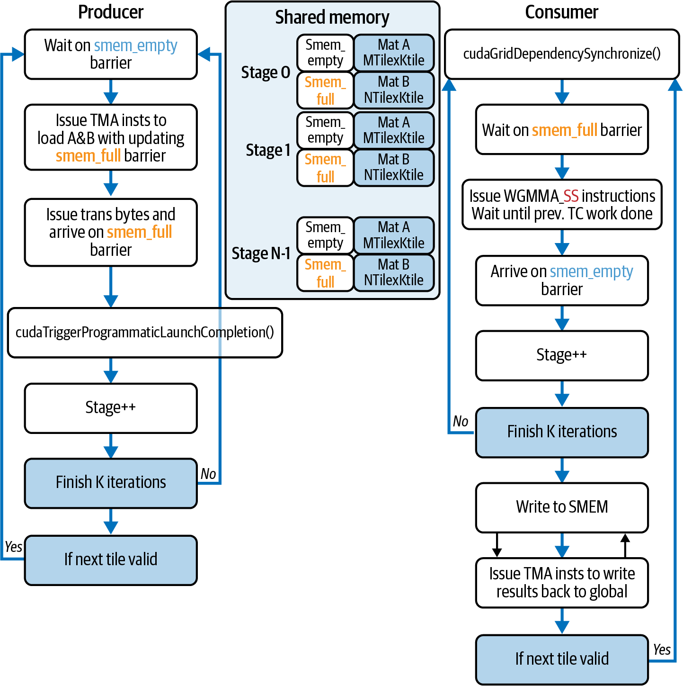</p>
<blockquote>
<p>Figure 11-10. Warp-specialized, multistage pipeline with PDL and thread block clusters and TMA multicast for a high-performance, inter-kernel and intra-kernel GEMM implementation</p>
</blockquote>
<p>下面是一个 CUDA C++ 示例，展示如何用一个简单的 TMA 风格异步拷贝 + 计算流水线，把 PDL、线程块簇与 warp 专门化结合起来。具体来说，主核函数 primary<em>gemm 使用 cudaTriggerProgrammatic LaunchCompletion() 向次级核函数发信号，表明所有内存刷新都已完成、数据已准备好被消费。于是，次级核函数 secondary</em>gemm 现在可以安全地从 cudaGridDependencySynchronize() 处继续，如下所示：</p>
<blockquote>
<p>Here is a CUDA C++ example that shows how to combine PDL, thread block clusters, and warp specialization with a simple TMA-style async copy + compute pipeline. Specifically, the primary kernel, primary<em>gemm, uses cudaTriggerProgrammaticLaunchCompletion() to signal to the secondary kernel that all memory flushes have completed and the data is ready to be consumed. As such, it's now safe for the secondary kernel, secondary</em>gemm, to continue from cudaGridDependencySynchronize(), as shown here:</p>
</blockquote>
<div class="language-cpp highlight"><pre><span></span><code><span id="__span-16-1"><a id="__codelineno-16-1" name="__codelineno-16-1" href="#__codelineno-16-1"></a><span class="cp">#include</span><span class="w"> </span><span class="cpf">&lt;cstdio&gt;</span>
</span><span id="__span-16-2"><a id="__codelineno-16-2" name="__codelineno-16-2" href="#__codelineno-16-2"></a><span class="cp">#include</span><span class="w"> </span><span class="cpf">&lt;cuda_runtime.h&gt;</span>
</span><span id="__span-16-3"><a id="__codelineno-16-3" name="__codelineno-16-3" href="#__codelineno-16-3"></a><span class="c1">// Cooperative Groups for clusters/barriers</span>
</span><span id="__span-16-4"><a id="__codelineno-16-4" name="__codelineno-16-4" href="#__codelineno-16-4"></a><span class="cp">#include</span><span class="w"> </span><span class="cpf">&lt;cooperative_groups.h&gt;</span><span class="w">          </span>
</span><span id="__span-16-5"><a id="__codelineno-16-5" name="__codelineno-16-5" href="#__codelineno-16-5"></a><span class="c1">// C++ barrier for TMA-like sync</span>
</span><span id="__span-16-6"><a id="__codelineno-16-6" name="__codelineno-16-6" href="#__codelineno-16-6"></a><span class="cp">#include</span><span class="w"> </span><span class="cpf">&lt;cuda/barrier&gt;</span><span class="w">                  </span>
</span><span id="__span-16-7"><a id="__codelineno-16-7" name="__codelineno-16-7" href="#__codelineno-16-7"></a><span class="c1">// Async copy API</span>
</span><span id="__span-16-8"><a id="__codelineno-16-8" name="__codelineno-16-8" href="#__codelineno-16-8"></a><span class="cp">#include</span><span class="w"> </span><span class="cpf">&lt;cuda/pipeline&gt;</span><span class="w">           </span>
</span><span id="__span-16-9"><a id="__codelineno-16-9" name="__codelineno-16-9" href="#__codelineno-16-9"></a>
</span><span id="__span-16-10"><a id="__codelineno-16-10" name="__codelineno-16-10" href="#__codelineno-16-10"></a><span class="k">namespace</span><span class="w"> </span><span class="nn">cg</span><span class="w"> </span><span class="o">=</span><span class="w"> </span><span class="nn">cooperative_groups</span><span class="p">;</span>
</span><span id="__span-16-11"><a id="__codelineno-16-11" name="__codelineno-16-11" href="#__codelineno-16-11"></a>
</span><span id="__span-16-12"><a id="__codelineno-16-12" name="__codelineno-16-12" href="#__codelineno-16-12"></a><span class="c1">// Tile size for our toy GEMM</span>
</span><span id="__span-16-13"><a id="__codelineno-16-13" name="__codelineno-16-13" href="#__codelineno-16-13"></a><span class="k">constexpr</span><span class="w"> </span><span class="kt">int</span><span class="w"> </span><span class="n">TILE_M</span><span class="w"> </span><span class="o">=</span><span class="w"> </span><span class="mi">128</span><span class="p">;</span>
</span><span id="__span-16-14"><a id="__codelineno-16-14" name="__codelineno-16-14" href="#__codelineno-16-14"></a><span class="k">constexpr</span><span class="w"> </span><span class="kt">int</span><span class="w"> </span><span class="n">TILE_K</span><span class="w"> </span><span class="o">=</span><span class="w"> </span><span class="mi">128</span><span class="p">;</span>
</span><span id="__span-16-15"><a id="__codelineno-16-15" name="__codelineno-16-15" href="#__codelineno-16-15"></a><span class="k">constexpr</span><span class="w"> </span><span class="kt">int</span><span class="w"> </span><span class="n">TILE_N</span><span class="w"> </span><span class="o">=</span><span class="w"> </span><span class="mi">128</span><span class="p">;</span>
</span><span id="__span-16-16"><a id="__codelineno-16-16" name="__codelineno-16-16" href="#__codelineno-16-16"></a>
</span><span id="__span-16-17"><a id="__codelineno-16-17" name="__codelineno-16-17" href="#__codelineno-16-17"></a><span class="c1">// A very simple "producer/consumer" pipeline within each CTA</span>
</span><span id="__span-16-18"><a id="__codelineno-16-18" name="__codelineno-16-18" href="#__codelineno-16-18"></a><span class="n">__global__</span><span class="w"> </span><span class="nf">__cluster_dims__</span><span class="p">(</span><span class="mi">2</span><span class="p">,</span><span class="mi">1</span><span class="p">,</span><span class="mi">1</span><span class="p">)</span><span class="w">    </span><span class="c1">// Compile-time cluster of 2 CTAs </span>
</span><span id="__span-16-19"><a id="__codelineno-16-19" name="__codelineno-16-19" href="#__codelineno-16-19"></a><span class="kt">void</span><span class="w"> </span><span class="n">primary_gemm</span><span class="p">(</span><span class="k">const</span><span class="w"> </span><span class="kt">float</span><span class="o">*</span><span class="w"> </span><span class="n">__restrict__</span><span class="w"> </span><span class="n">A</span><span class="p">,</span>
</span><span id="__span-16-20"><a id="__codelineno-16-20" name="__codelineno-16-20" href="#__codelineno-16-20"></a><span class="w">                  </span><span class="k">const</span><span class="w"> </span><span class="kt">float</span><span class="o">*</span><span class="w"> </span><span class="n">__restrict__</span><span class="w"> </span><span class="n">B</span><span class="p">,</span>
</span><span id="__span-16-21"><a id="__codelineno-16-21" name="__codelineno-16-21" href="#__codelineno-16-21"></a><span class="w">                        </span><span class="kt">float</span><span class="o">*</span><span class="w"> </span><span class="n">__restrict__</span><span class="w"> </span><span class="n">C</span><span class="p">,</span>
</span><span id="__span-16-22"><a id="__codelineno-16-22" name="__codelineno-16-22" href="#__codelineno-16-22"></a><span class="w">                  </span><span class="kt">int</span><span class="w"> </span><span class="n">M</span><span class="p">,</span><span class="w"> </span><span class="kt">int</span><span class="w"> </span><span class="n">N</span><span class="p">,</span><span class="w"> </span><span class="kt">int</span><span class="w"> </span><span class="n">K</span><span class="p">)</span>
</span><span id="__span-16-23"><a id="__codelineno-16-23" name="__codelineno-16-23" href="#__codelineno-16-23"></a><span class="p">{</span>
</span><span id="__span-16-24"><a id="__codelineno-16-24" name="__codelineno-16-24" href="#__codelineno-16-24"></a><span class="w">    </span><span class="c1">// Identify thread-block cluster &amp; within-block group</span>
</span><span id="__span-16-25"><a id="__codelineno-16-25" name="__codelineno-16-25" href="#__codelineno-16-25"></a><span class="w">    </span><span class="n">cg</span><span class="o">::</span><span class="n">thread_block_cluster</span><span class="w"> </span><span class="n">cluster</span><span class="w"> </span><span class="o">=</span><span class="w"> </span>
</span><span id="__span-16-26"><a id="__codelineno-16-26" name="__codelineno-16-26" href="#__codelineno-16-26"></a><span class="n">cg</span><span class="o">::</span><span class="n">this_thread_block_cluster</span><span class="p">();</span>
</span><span id="__span-16-27"><a id="__codelineno-16-27" name="__codelineno-16-27" href="#__codelineno-16-27"></a><span class="w">    </span><span class="n">cg</span><span class="o">::</span><span class="n">thread_block</span><span class="w">       </span><span class="n">cta</span><span class="w">     </span><span class="o">=</span><span class="w"> </span><span class="n">cg</span><span class="o">::</span><span class="n">this_thread_block</span><span class="p">();</span>
</span><span id="__span-16-28"><a id="__codelineno-16-28" name="__codelineno-16-28" href="#__codelineno-16-28"></a><span class="w">    </span><span class="kt">int</span><span class="w"> </span><span class="n">tid</span><span class="w"> </span><span class="o">=</span><span class="w"> </span><span class="n">threadIdx</span><span class="p">.</span><span class="n">x</span><span class="w"> </span><span class="o">+</span><span class="w"> </span><span class="n">threadIdx</span><span class="p">.</span><span class="n">y</span><span class="w"> </span><span class="o">*</span><span class="w"> </span><span class="n">blockDim</span><span class="p">.</span><span class="n">x</span><span class="p">;</span>
</span><span id="__span-16-29"><a id="__codelineno-16-29" name="__codelineno-16-29" href="#__codelineno-16-29"></a><span class="w">    </span><span class="kt">int</span><span class="w"> </span><span class="n">warpId</span><span class="w"> </span><span class="o">=</span><span class="w"> </span><span class="n">tid</span><span class="w"> </span><span class="o">/</span><span class="w"> </span><span class="n">warpSize</span><span class="p">;</span>
</span><span id="__span-16-30"><a id="__codelineno-16-30" name="__codelineno-16-30" href="#__codelineno-16-30"></a><span class="w">    </span><span class="k">const</span><span class="w"> </span><span class="kt">int</span><span class="w"> </span><span class="n">numProducerWarps</span><span class="w"> </span><span class="o">=</span><span class="w"> </span><span class="mi">1</span><span class="p">;</span>
</span><span id="__span-16-31"><a id="__codelineno-16-31" name="__codelineno-16-31" href="#__codelineno-16-31"></a>
</span><span id="__span-16-32"><a id="__codelineno-16-32" name="__codelineno-16-32" href="#__codelineno-16-32"></a><span class="w">    </span><span class="c1">// Shared-memory tile buffers</span>
</span><span id="__span-16-33"><a id="__codelineno-16-33" name="__codelineno-16-33" href="#__codelineno-16-33"></a><span class="w">    </span><span class="n">__shared__</span><span class="w"> </span><span class="kt">float</span><span class="w"> </span><span class="n">tileA</span><span class="p">[</span><span class="n">TILE_M</span><span class="w"> </span><span class="o">*</span><span class="w"> </span><span class="n">TILE_K</span><span class="p">];</span>
</span><span id="__span-16-34"><a id="__codelineno-16-34" name="__codelineno-16-34" href="#__codelineno-16-34"></a><span class="w">    </span><span class="n">__shared__</span><span class="w"> </span><span class="kt">float</span><span class="w"> </span><span class="n">tileB</span><span class="p">[</span><span class="n">TILE_K</span><span class="w"> </span><span class="o">*</span><span class="w"> </span><span class="n">TILE_N</span><span class="p">];</span>
</span><span id="__span-16-35"><a id="__codelineno-16-35" name="__codelineno-16-35" href="#__codelineno-16-35"></a>
</span><span id="__span-16-36"><a id="__codelineno-16-36" name="__codelineno-16-36" href="#__codelineno-16-36"></a><span class="w">    </span><span class="n">__shared__</span><span class="w"> </span>
</span><span id="__span-16-37"><a id="__codelineno-16-37" name="__codelineno-16-37" href="#__codelineno-16-37"></a><span class="w">    </span><span class="n">cuda</span><span class="o">::</span><span class="n">pipeline_shared_state</span><span class="o">&lt;</span><span class="n">cuda</span><span class="o">::</span><span class="n">thread_scope_block</span><span class="p">,</span><span class="w"> </span><span class="mi">1</span><span class="o">&gt;</span><span class="w"> </span>
</span><span id="__span-16-38"><a id="__codelineno-16-38" name="__codelineno-16-38" href="#__codelineno-16-38"></a><span class="n">pipe_state</span><span class="p">;</span>
</span><span id="__span-16-39"><a id="__codelineno-16-39" name="__codelineno-16-39" href="#__codelineno-16-39"></a><span class="w">    </span><span class="k">auto</span><span class="w"> </span><span class="n">pipe</span><span class="w"> </span><span class="o">=</span><span class="w"> </span><span class="n">cuda</span><span class="o">::</span><span class="n">make_pipeline</span><span class="p">(</span><span class="n">cta</span><span class="p">,</span><span class="w"> </span><span class="o">&amp;</span><span class="n">pipe_state</span><span class="p">);</span>
</span><span id="__span-16-40"><a id="__codelineno-16-40" name="__codelineno-16-40" href="#__codelineno-16-40"></a><span class="w">    </span><span class="k">if</span><span class="w"> </span><span class="p">(</span><span class="n">warpId</span><span class="w"> </span><span class="o">&lt;</span><span class="w"> </span><span class="n">numProducerWarps</span><span class="p">)</span><span class="w"> </span><span class="p">{</span>
</span><span id="__span-16-41"><a id="__codelineno-16-41" name="__codelineno-16-41" href="#__codelineno-16-41"></a><span class="w">    </span><span class="n">pipe</span><span class="p">.</span><span class="n">producer_acquire</span><span class="p">();</span>
</span><span id="__span-16-42"><a id="__codelineno-16-42" name="__codelineno-16-42" href="#__codelineno-16-42"></a><span class="w">    </span><span class="n">cuda</span><span class="o">::</span><span class="n">memcpy_async</span><span class="p">(</span><span class="n">cta</span><span class="p">,</span><span class="w"> </span><span class="n">tileA</span><span class="p">,</span><span class="w"> </span><span class="n">A</span><span class="p">,</span><span class="w"> </span><span class="n">cuda</span><span class="o">::</span><span class="n">aligned_size_t</span><span class="o">&lt;</span><span class="mi">32</span><span class="o">&gt;</span>
</span><span id="__span-16-43"><a id="__codelineno-16-43" name="__codelineno-16-43" href="#__codelineno-16-43"></a><span class="p">{</span><span class="n">TILE_M</span>
</span><span id="__span-16-44"><a id="__codelineno-16-44" name="__codelineno-16-44" href="#__codelineno-16-44"></a><span class="w">                       </span><span class="o">*</span><span class="w"> </span><span class="n">TILE_K</span><span class="w"> </span><span class="o">*</span><span class="w"> </span><span class="k">sizeof</span><span class="p">(</span><span class="kt">float</span><span class="p">)},</span><span class="w"> </span><span class="n">pipe</span><span class="p">);</span>
</span><span id="__span-16-45"><a id="__codelineno-16-45" name="__codelineno-16-45" href="#__codelineno-16-45"></a><span class="w">    </span><span class="n">cuda</span><span class="o">::</span><span class="n">memcpy_async</span><span class="p">(</span><span class="n">cta</span><span class="p">,</span><span class="w"> </span><span class="n">tileB</span><span class="p">,</span><span class="w"> </span><span class="n">B</span><span class="p">,</span><span class="w"> </span><span class="n">cuda</span><span class="o">::</span><span class="n">aligned_size_t</span><span class="o">&lt;</span><span class="mi">32</span><span class="o">&gt;</span>
</span><span id="__span-16-46"><a id="__codelineno-16-46" name="__codelineno-16-46" href="#__codelineno-16-46"></a><span class="p">{</span><span class="n">TILE_K</span>
</span><span id="__span-16-47"><a id="__codelineno-16-47" name="__codelineno-16-47" href="#__codelineno-16-47"></a><span class="w">                       </span><span class="o">*</span><span class="w"> </span><span class="n">TILE_N</span><span class="w"> </span><span class="o">*</span><span class="w"> </span><span class="k">sizeof</span><span class="p">(</span><span class="kt">float</span><span class="p">)},</span><span class="w"> </span><span class="n">pipe</span><span class="p">);</span>
</span><span id="__span-16-48"><a id="__codelineno-16-48" name="__codelineno-16-48" href="#__codelineno-16-48"></a><span class="w">    </span><span class="n">pipe</span><span class="p">.</span><span class="n">producer_commit</span><span class="p">();</span>
</span><span id="__span-16-49"><a id="__codelineno-16-49" name="__codelineno-16-49" href="#__codelineno-16-49"></a><span class="w">    </span><span class="p">}</span>
</span><span id="__span-16-50"><a id="__codelineno-16-50" name="__codelineno-16-50" href="#__codelineno-16-50"></a><span class="w">    </span><span class="n">cta</span><span class="p">.</span><span class="n">sync</span><span class="p">();</span>
</span><span id="__span-16-51"><a id="__codelineno-16-51" name="__codelineno-16-51" href="#__codelineno-16-51"></a><span class="w">    </span><span class="n">pipe</span><span class="p">.</span><span class="n">consumer_wait</span><span class="p">();</span>
</span><span id="__span-16-52"><a id="__codelineno-16-52" name="__codelineno-16-52" href="#__codelineno-16-52"></a><span class="w">    </span><span class="n">pipe</span><span class="p">.</span><span class="n">consumer_release</span><span class="p">();</span>
</span><span id="__span-16-53"><a id="__codelineno-16-53" name="__codelineno-16-53" href="#__codelineno-16-53"></a><span class="c1">// ... perform "compute" on the tile ...</span>
</span><span id="__span-16-54"><a id="__codelineno-16-54" name="__codelineno-16-54" href="#__codelineno-16-54"></a><span class="c1">// (e.g., a few fused multiply-adds)</span>
</span><span id="__span-16-55"><a id="__codelineno-16-55" name="__codelineno-16-55" href="#__codelineno-16-55"></a><span class="n">do_compute</span><span class="p">();</span>
</span><span id="__span-16-56"><a id="__codelineno-16-56" name="__codelineno-16-56" href="#__codelineno-16-56"></a>
</span><span id="__span-16-57"><a id="__codelineno-16-57" name="__codelineno-16-57" href="#__codelineno-16-57"></a><span class="w">    </span><span class="c1">// Inter-CTA cluster-scope sync for load balancing </span>
</span><span id="__span-16-58"><a id="__codelineno-16-58" name="__codelineno-16-58" href="#__codelineno-16-58"></a><span class="w">    </span><span class="n">cluster</span><span class="p">.</span><span class="n">sync</span><span class="p">();</span>
</span><span id="__span-16-59"><a id="__codelineno-16-59" name="__codelineno-16-59" href="#__codelineno-16-59"></a>
</span><span id="__span-16-60"><a id="__codelineno-16-60" name="__codelineno-16-60" href="#__codelineno-16-60"></a><span class="w">    </span><span class="c1">// Signal to dependent kernel that prologue is done </span>
</span><span id="__span-16-61"><a id="__codelineno-16-61" name="__codelineno-16-61" href="#__codelineno-16-61"></a><span class="w">    </span><span class="n">cudaTriggerProgrammaticLaunchCompletion</span><span class="p">();</span>
</span><span id="__span-16-62"><a id="__codelineno-16-62" name="__codelineno-16-62" href="#__codelineno-16-62"></a>
</span><span id="__span-16-63"><a id="__codelineno-16-63" name="__codelineno-16-63" href="#__codelineno-16-63"></a><span class="w">    </span><span class="c1">// ... perform remaining epilogue work ...</span>
</span><span id="__span-16-64"><a id="__codelineno-16-64" name="__codelineno-16-64" href="#__codelineno-16-64"></a><span class="w">    </span><span class="c1">// ...</span>
</span><span id="__span-16-65"><a id="__codelineno-16-65" name="__codelineno-16-65" href="#__codelineno-16-65"></a><span class="p">}</span>
</span><span id="__span-16-66"><a id="__codelineno-16-66" name="__codelineno-16-66" href="#__codelineno-16-66"></a>
</span><span id="__span-16-67"><a id="__codelineno-16-67" name="__codelineno-16-67" href="#__codelineno-16-67"></a><span class="n">__global__</span><span class="w"> </span><span class="nf">__cluster_dims__</span><span class="p">(</span><span class="mi">2</span><span class="p">,</span><span class="mi">1</span><span class="p">,</span><span class="mi">1</span><span class="p">)</span>
</span><span id="__span-16-68"><a id="__codelineno-16-68" name="__codelineno-16-68" href="#__codelineno-16-68"></a><span class="kt">void</span><span class="w"> </span><span class="n">secondary_gemm</span><span class="p">(</span><span class="k">const</span><span class="w"> </span><span class="kt">float</span><span class="o">*</span><span class="w"> </span><span class="n">__restrict__</span><span class="w"> </span><span class="n">A</span><span class="p">,</span>
</span><span id="__span-16-69"><a id="__codelineno-16-69" name="__codelineno-16-69" href="#__codelineno-16-69"></a><span class="w">                    </span><span class="k">const</span><span class="w"> </span><span class="kt">float</span><span class="o">*</span><span class="w"> </span><span class="n">__restrict__</span><span class="w"> </span><span class="n">B</span><span class="p">,</span>
</span><span id="__span-16-70"><a id="__codelineno-16-70" name="__codelineno-16-70" href="#__codelineno-16-70"></a><span class="w">                          </span><span class="kt">float</span><span class="o">*</span><span class="w"> </span><span class="n">__restrict__</span><span class="w"> </span><span class="n">C</span><span class="p">,</span>
</span><span id="__span-16-71"><a id="__codelineno-16-71" name="__codelineno-16-71" href="#__codelineno-16-71"></a><span class="w">                    </span><span class="kt">int</span><span class="w"> </span><span class="n">M</span><span class="p">,</span><span class="w"> </span><span class="kt">int</span><span class="w"> </span><span class="n">N</span><span class="p">,</span><span class="w"> </span><span class="kt">int</span><span class="w"> </span><span class="n">K</span><span class="p">)</span>
</span><span id="__span-16-72"><a id="__codelineno-16-72" name="__codelineno-16-72" href="#__codelineno-16-72"></a><span class="p">{</span>
</span><span id="__span-16-73"><a id="__codelineno-16-73" name="__codelineno-16-73" href="#__codelineno-16-73"></a><span class="w">    </span><span class="c1">// Wait for primary's PDL signal before starting </span>
</span><span id="__span-16-74"><a id="__codelineno-16-74" name="__codelineno-16-74" href="#__codelineno-16-74"></a><span class="w">    </span><span class="n">cudaGridDependencySynchronize</span><span class="p">();</span>
</span><span id="__span-16-75"><a id="__codelineno-16-75" name="__codelineno-16-75" href="#__codelineno-16-75"></a>
</span><span id="__span-16-76"><a id="__codelineno-16-76" name="__codelineno-16-76" href="#__codelineno-16-76"></a><span class="w">    </span><span class="c1">// Similar warp-specialized pipeline as above...</span>
</span><span id="__span-16-77"><a id="__codelineno-16-77" name="__codelineno-16-77" href="#__codelineno-16-77"></a><span class="w">    </span><span class="c1">//  (Omitted for brevity. Duplicate of primary logic,</span>
</span><span id="__span-16-78"><a id="__codelineno-16-78" name="__codelineno-16-78" href="#__codelineno-16-78"></a><span class="w">    </span><span class="c1">//  but reading from different offsets to compute </span>
</span><span id="__span-16-79"><a id="__codelineno-16-79" name="__codelineno-16-79" href="#__codelineno-16-79"></a><span class="w">    </span><span class="c1">//  next GEMM tile.)</span>
</span><span id="__span-16-80"><a id="__codelineno-16-80" name="__codelineno-16-80" href="#__codelineno-16-80"></a><span class="p">}</span>
</span><span id="__span-16-81"><a id="__codelineno-16-81" name="__codelineno-16-81" href="#__codelineno-16-81"></a>
</span><span id="__span-16-82"><a id="__codelineno-16-82" name="__codelineno-16-82" href="#__codelineno-16-82"></a><span class="c1">// cudaLaunchKernelExC, cudaGetKernel</span>
</span><span id="__span-16-83"><a id="__codelineno-16-83" name="__codelineno-16-83" href="#__codelineno-16-83"></a><span class="cp">#include</span><span class="w"> </span><span class="cpf">&lt;cuda_runtime_api.h&gt;</span><span class="w">    </span>
</span><span id="__span-16-84"><a id="__codelineno-16-84" name="__codelineno-16-84" href="#__codelineno-16-84"></a><span class="c1">// cudaLaunchConfig_t</span>
</span><span id="__span-16-85"><a id="__codelineno-16-85" name="__codelineno-16-85" href="#__codelineno-16-85"></a><span class="cp">#include</span><span class="w"> </span><span class="cpf">&lt;cuda/launch_config.h&gt;</span><span class="w">  </span>
</span><span id="__span-16-86"><a id="__codelineno-16-86" name="__codelineno-16-86" href="#__codelineno-16-86"></a>
</span><span id="__span-16-87"><a id="__codelineno-16-87" name="__codelineno-16-87" href="#__codelineno-16-87"></a><span class="kt">int</span><span class="w"> </span><span class="nf">main</span><span class="p">()</span>
</span><span id="__span-16-88"><a id="__codelineno-16-88" name="__codelineno-16-88" href="#__codelineno-16-88"></a><span class="p">{</span>
</span><span id="__span-16-89"><a id="__codelineno-16-89" name="__codelineno-16-89" href="#__codelineno-16-89"></a><span class="w">    </span><span class="c1">// Problem dimensions (must be multiples of TILE_)</span>
</span><span id="__span-16-90"><a id="__codelineno-16-90" name="__codelineno-16-90" href="#__codelineno-16-90"></a><span class="w">    </span><span class="kt">int</span><span class="w"> </span><span class="n">M</span><span class="w"> </span><span class="o">=</span><span class="w"> </span><span class="n">TILE_M</span><span class="p">,</span><span class="w"> </span><span class="n">N</span><span class="w"> </span><span class="o">=</span><span class="w"> </span><span class="n">TILE_N</span><span class="p">,</span><span class="w"> </span><span class="n">K</span><span class="w"> </span><span class="o">=</span><span class="w"> </span><span class="n">TILE_K</span><span class="p">;</span>
</span><span id="__span-16-91"><a id="__codelineno-16-91" name="__codelineno-16-91" href="#__codelineno-16-91"></a>
</span><span id="__span-16-92"><a id="__codelineno-16-92" name="__codelineno-16-92" href="#__codelineno-16-92"></a><span class="w">    </span><span class="c1">// Allocate and initialize matrices A, B, C on device</span>
</span><span id="__span-16-93"><a id="__codelineno-16-93" name="__codelineno-16-93" href="#__codelineno-16-93"></a><span class="w">    </span><span class="kt">float</span><span class="w"> </span><span class="o">*</span><span class="n">d_A</span><span class="p">,</span><span class="w"> </span><span class="o">*</span><span class="n">d_B</span><span class="p">,</span><span class="w"> </span><span class="o">*</span><span class="n">d_C</span><span class="p">;</span>
</span><span id="__span-16-94"><a id="__codelineno-16-94" name="__codelineno-16-94" href="#__codelineno-16-94"></a><span class="w">    </span><span class="n">cudaMalloc</span><span class="p">(</span><span class="o">&amp;</span><span class="n">d_A</span><span class="p">,</span><span class="w"> </span><span class="n">M</span><span class="o">*</span><span class="n">K</span><span class="o">*</span><span class="k">sizeof</span><span class="p">(</span><span class="kt">float</span><span class="p">));</span>
</span><span id="__span-16-95"><a id="__codelineno-16-95" name="__codelineno-16-95" href="#__codelineno-16-95"></a><span class="w">    </span><span class="n">cudaMalloc</span><span class="p">(</span><span class="o">&amp;</span><span class="n">d_B</span><span class="p">,</span><span class="w"> </span><span class="n">K</span><span class="o">*</span><span class="n">N</span><span class="o">*</span><span class="k">sizeof</span><span class="p">(</span><span class="kt">float</span><span class="p">));</span>
</span><span id="__span-16-96"><a id="__codelineno-16-96" name="__codelineno-16-96" href="#__codelineno-16-96"></a><span class="w">    </span><span class="n">cudaMalloc</span><span class="p">(</span><span class="o">&amp;</span><span class="n">d_C</span><span class="p">,</span><span class="w"> </span><span class="n">M</span><span class="o">*</span><span class="n">N</span><span class="o">*</span><span class="k">sizeof</span><span class="p">(</span><span class="kt">float</span><span class="p">));</span>
</span><span id="__span-16-97"><a id="__codelineno-16-97" name="__codelineno-16-97" href="#__codelineno-16-97"></a><span class="w">    </span><span class="c1">// (Initialize d_A, d_B via cudaMemcpy or kernels...)</span>
</span><span id="__span-16-98"><a id="__codelineno-16-98" name="__codelineno-16-98" href="#__codelineno-16-98"></a>
</span><span id="__span-16-99"><a id="__codelineno-16-99" name="__codelineno-16-99" href="#__codelineno-16-99"></a><span class="w">    </span><span class="c1">// Create a nonblocking stream for overlap</span>
</span><span id="__span-16-100"><a id="__codelineno-16-100" name="__codelineno-16-100" href="#__codelineno-16-100"></a><span class="w">    </span><span class="n">cudaStream_t</span><span class="w"> </span><span class="n">stream</span><span class="p">;</span>
</span><span id="__span-16-101"><a id="__codelineno-16-101" name="__codelineno-16-101" href="#__codelineno-16-101"></a><span class="w">    </span><span class="n">cudaStreamCreateWithFlags</span><span class="p">(</span><span class="o">&amp;</span><span class="n">stream</span><span class="p">,</span><span class="w"> </span>
</span><span id="__span-16-102"><a id="__codelineno-16-102" name="__codelineno-16-102" href="#__codelineno-16-102"></a><span class="w">        </span><span class="n">cudaStreamNonBlocking</span><span class="p">);</span>
</span><span id="__span-16-103"><a id="__codelineno-16-103" name="__codelineno-16-103" href="#__codelineno-16-103"></a>
</span><span id="__span-16-104"><a id="__codelineno-16-104" name="__codelineno-16-104" href="#__codelineno-16-104"></a><span class="w">    </span><span class="c1">// Launch primary GEMM</span>
</span><span id="__span-16-105"><a id="__codelineno-16-105" name="__codelineno-16-105" href="#__codelineno-16-105"></a><span class="w">    </span><span class="n">dim3</span><span class="w"> </span><span class="n">gridDim</span><span class="p">(</span><span class="n">M</span><span class="o">/</span><span class="n">TILE_M</span><span class="p">,</span><span class="w"> </span><span class="n">N</span><span class="o">/</span><span class="n">TILE_N</span><span class="p">),</span><span class="w"> </span><span class="n">blockDim</span><span class="p">(</span><span class="mi">256</span><span class="p">);</span>
</span><span id="__span-16-106"><a id="__codelineno-16-106" name="__codelineno-16-106" href="#__codelineno-16-106"></a><span class="w">    </span><span class="n">primary_gemm</span><span class="o">&lt;&lt;&lt;</span><span class="n">gridDim</span><span class="p">,</span><span class="w"> </span><span class="n">blockDim</span><span class="p">,</span><span class="w"> </span><span class="mi">0</span><span class="p">,</span><span class="w"> </span><span class="n">stream</span><span class="o">&gt;&gt;&gt;</span><span class="p">(</span><span class="n">d_A</span><span class="p">,</span>
</span><span id="__span-16-107"><a id="__codelineno-16-107" name="__codelineno-16-107" href="#__codelineno-16-107"></a><span class="n">d_B</span><span class="p">,</span><span class="w"> </span><span class="n">d_C</span><span class="p">,</span><span class="w"> </span><span class="n">M</span><span class="p">,</span><span class="w"> </span><span class="n">N</span><span class="p">,</span><span class="w"> </span><span class="n">K</span><span class="p">);</span>
</span><span id="__span-16-108"><a id="__codelineno-16-108" name="__codelineno-16-108" href="#__codelineno-16-108"></a>
</span><span id="__span-16-109"><a id="__codelineno-16-109" name="__codelineno-16-109" href="#__codelineno-16-109"></a><span class="w">    </span><span class="c1">// Configure PDL attributes for secondary launch</span>
</span><span id="__span-16-110"><a id="__codelineno-16-110" name="__codelineno-16-110" href="#__codelineno-16-110"></a><span class="w">    </span><span class="n">cudaLaunchConfig_t</span><span class="w"> </span><span class="n">launch_cfg</span><span class="w"> </span><span class="o">=</span><span class="w"> </span><span class="p">{};</span>
</span><span id="__span-16-111"><a id="__codelineno-16-111" name="__codelineno-16-111" href="#__codelineno-16-111"></a><span class="w">    </span><span class="n">launch_cfg</span><span class="p">.</span><span class="n">gridDim</span><span class="w">          </span><span class="o">=</span><span class="w"> </span><span class="n">gridDim</span><span class="p">;</span>
</span><span id="__span-16-112"><a id="__codelineno-16-112" name="__codelineno-16-112" href="#__codelineno-16-112"></a><span class="w">    </span><span class="n">launch_cfg</span><span class="p">.</span><span class="n">blockDim</span><span class="w">         </span><span class="o">=</span><span class="w"> </span><span class="n">blockDim</span><span class="p">;</span>
</span><span id="__span-16-113"><a id="__codelineno-16-113" name="__codelineno-16-113" href="#__codelineno-16-113"></a><span class="w">    </span><span class="n">launch_cfg</span><span class="p">.</span><span class="n">dynamicSmemBytes</span><span class="w"> </span><span class="o">=</span><span class="w"> </span><span class="mi">0</span><span class="p">;</span>
</span><span id="__span-16-114"><a id="__codelineno-16-114" name="__codelineno-16-114" href="#__codelineno-16-114"></a><span class="w">    </span><span class="n">launch_cfg</span><span class="p">.</span><span class="n">stream</span><span class="w">           </span><span class="o">=</span><span class="w"> </span><span class="n">stream</span><span class="p">;</span>
</span><span id="__span-16-115"><a id="__codelineno-16-115" name="__codelineno-16-115" href="#__codelineno-16-115"></a><span class="w">    </span><span class="k">static</span><span class="w"> </span><span class="n">cudaLaunchAttribute</span><span class="w"> </span><span class="n">attrs</span><span class="p">[</span><span class="mi">1</span><span class="p">];</span>
</span><span id="__span-16-116"><a id="__codelineno-16-116" name="__codelineno-16-116" href="#__codelineno-16-116"></a><span class="w">    </span><span class="n">attrs</span><span class="p">[</span><span class="mi">0</span><span class="p">].</span><span class="n">id</span><span class="w">  </span><span class="o">=</span><span class="w"> </span>
</span><span id="__span-16-117"><a id="__codelineno-16-117" name="__codelineno-16-117" href="#__codelineno-16-117"></a><span class="n">cudaLaunchAttributeProgrammaticStreamSerialization</span><span class="p">;</span>
</span><span id="__span-16-118"><a id="__codelineno-16-118" name="__codelineno-16-118" href="#__codelineno-16-118"></a><span class="w">    </span><span class="n">attrs</span><span class="p">[</span><span class="mi">0</span><span class="p">].</span><span class="n">val</span><span class="p">.</span><span class="n">programmaticStreamSerializationAllowed</span><span class="w"> </span><span class="o">=</span><span class="w"> </span><span class="mi">1</span><span class="p">;</span>
</span><span id="__span-16-119"><a id="__codelineno-16-119" name="__codelineno-16-119" href="#__codelineno-16-119"></a><span class="w">    </span><span class="n">launch_cfg</span><span class="p">.</span><span class="n">attrs</span><span class="w">    </span><span class="o">=</span><span class="w"> </span><span class="n">attrs</span><span class="p">;</span>
</span><span id="__span-16-120"><a id="__codelineno-16-120" name="__codelineno-16-120" href="#__codelineno-16-120"></a><span class="w">    </span><span class="n">launch_cfg</span><span class="p">.</span><span class="n">numAttrs</span><span class="w"> </span><span class="o">=</span><span class="w"> </span><span class="mi">1</span><span class="p">;</span>
</span><span id="__span-16-121"><a id="__codelineno-16-121" name="__codelineno-16-121" href="#__codelineno-16-121"></a>
</span><span id="__span-16-122"><a id="__codelineno-16-122" name="__codelineno-16-122" href="#__codelineno-16-122"></a><span class="w">    </span><span class="c1">// Prepare arguments and get function pointer </span>
</span><span id="__span-16-123"><a id="__codelineno-16-123" name="__codelineno-16-123" href="#__codelineno-16-123"></a><span class="w">    </span><span class="c1">//    for secondary_gemm</span>
</span><span id="__span-16-124"><a id="__codelineno-16-124" name="__codelineno-16-124" href="#__codelineno-16-124"></a><span class="w">    </span><span class="kt">void</span><span class="o">*</span><span class="w"> </span><span class="n">kernelArgs</span><span class="p">[]</span><span class="w"> </span><span class="o">=</span><span class="w"> </span><span class="p">{</span><span class="o">&amp;</span><span class="n">d_A</span><span class="p">,</span><span class="w"> </span><span class="o">&amp;</span><span class="n">d_B</span><span class="p">,</span><span class="w"> </span><span class="o">&amp;</span><span class="n">d_C</span><span class="p">,</span><span class="w"> </span><span class="o">&amp;</span><span class="n">M</span><span class="p">,</span><span class="w"> </span><span class="o">&amp;</span><span class="n">N</span><span class="p">,</span><span class="w"> </span><span class="o">&amp;</span><span class="n">K</span><span class="p">};</span>
</span><span id="__span-16-125"><a id="__codelineno-16-125" name="__codelineno-16-125" href="#__codelineno-16-125"></a>
</span><span id="__span-16-126"><a id="__codelineno-16-126" name="__codelineno-16-126" href="#__codelineno-16-126"></a><span class="w">    </span><span class="n">cudaKernel_t</span><span class="w"> </span><span class="n">k</span><span class="p">;</span>
</span><span id="__span-16-127"><a id="__codelineno-16-127" name="__codelineno-16-127" href="#__codelineno-16-127"></a><span class="w">    </span><span class="n">cudaGetKernel</span><span class="p">(</span><span class="o">&amp;</span><span class="n">k</span><span class="p">,</span><span class="w"> </span><span class="n">secondary_gemm</span><span class="p">);</span>
</span><span id="__span-16-128"><a id="__codelineno-16-128" name="__codelineno-16-128" href="#__codelineno-16-128"></a><span class="w">    </span><span class="kt">void</span><span class="o">*</span><span class="w"> </span><span class="n">funcPtr</span><span class="w"> </span><span class="o">=</span><span class="w"> </span><span class="k">reinterpret_cast</span><span class="o">&lt;</span><span class="kt">void</span><span class="o">*&gt;</span><span class="p">(</span><span class="n">k</span><span class="p">);</span>
</span><span id="__span-16-129"><a id="__codelineno-16-129" name="__codelineno-16-129" href="#__codelineno-16-129"></a>
</span><span id="__span-16-130"><a id="__codelineno-16-130" name="__codelineno-16-130" href="#__codelineno-16-130"></a><span class="w">    </span><span class="c1">// Early enqueue of secondary GEMM via PDL</span>
</span><span id="__span-16-131"><a id="__codelineno-16-131" name="__codelineno-16-131" href="#__codelineno-16-131"></a><span class="w">    </span><span class="n">cudaLaunchKernelExC</span><span class="p">(</span><span class="o">&amp;</span><span class="n">launch_cfg</span><span class="p">,</span><span class="w"> </span><span class="n">funcPtr</span><span class="p">,</span><span class="w"> </span><span class="n">kernelArgs</span><span class="p">);</span>
</span><span id="__span-16-132"><a id="__codelineno-16-132" name="__codelineno-16-132" href="#__codelineno-16-132"></a>
</span><span id="__span-16-133"><a id="__codelineno-16-133" name="__codelineno-16-133" href="#__codelineno-16-133"></a><span class="w">    </span><span class="c1">// Wait for everything to finish</span>
</span><span id="__span-16-134"><a id="__codelineno-16-134" name="__codelineno-16-134" href="#__codelineno-16-134"></a><span class="w">    </span><span class="n">cudaStreamSynchronize</span><span class="p">(</span><span class="n">stream</span><span class="p">);</span>
</span><span id="__span-16-135"><a id="__codelineno-16-135" name="__codelineno-16-135" href="#__codelineno-16-135"></a>
</span><span id="__span-16-136"><a id="__codelineno-16-136" name="__codelineno-16-136" href="#__codelineno-16-136"></a><span class="w">    </span><span class="c1">// Cleanup</span>
</span><span id="__span-16-137"><a id="__codelineno-16-137" name="__codelineno-16-137" href="#__codelineno-16-137"></a><span class="w">    </span><span class="n">cudaFree</span><span class="p">(</span><span class="n">d_A</span><span class="p">);</span>
</span><span id="__span-16-138"><a id="__codelineno-16-138" name="__codelineno-16-138" href="#__codelineno-16-138"></a><span class="w">    </span><span class="n">cudaFree</span><span class="p">(</span><span class="n">d_B</span><span class="p">);</span>
</span><span id="__span-16-139"><a id="__codelineno-16-139" name="__codelineno-16-139" href="#__codelineno-16-139"></a><span class="w">    </span><span class="n">cudaFree</span><span class="p">(</span><span class="n">d_C</span><span class="p">);</span>
</span><span id="__span-16-140"><a id="__codelineno-16-140" name="__codelineno-16-140" href="#__codelineno-16-140"></a><span class="w">    </span><span class="n">cudaStreamDestroy</span><span class="p">(</span><span class="n">stream</span><span class="p">);</span>
</span><span id="__span-16-141"><a id="__codelineno-16-141" name="__codelineno-16-141" href="#__codelineno-16-141"></a><span class="w">    </span><span class="k">return</span><span class="w"> </span><span class="mi">0</span><span class="p">;</span>
</span><span id="__span-16-142"><a id="__codelineno-16-142" name="__codelineno-16-142" href="#__codelineno-16-142"></a><span class="p">}</span>
</span></code></pre></div>
<p>在主机上，你把主核函数（primary<em>gemm）启动到一条非阻塞流中，并创建一个带有 ProgrammaticStreamSerialization 属性的 cudaLaunchConfig</em>t。你用它来为次级核函数（secondary_gemm）调用 cudaLaunchKernelExC。</p>
<blockquote>
<p>On the host, you launch the primary kernel (primary<em>gemm) into a nonblocking stream and create a cudaLaunchConfig</em>t with the ProgrammaticStreamSerialization attribute. You use this to call cudaLaunchKernelExC for the secondary kernel (secondary_gemm).</p>
</blockquote>
<p>在 primary_gemm 内部，一次对 cudaTriggerProgrammaticLaunchCompletion() 的调用标志着内存刷新的完成，并允许依赖核函数的处理开始——甚至在主核函数完全拆除之前。</p>
<blockquote>
<p>Inside primary_gemm, a call to cudaTriggerProgrammaticLaunchCompletion() marks the completion of the memory flush and allows the dependent kernel's processing to begin-even before the primary has fully torn down.</p>
</blockquote>
<p>依赖核函数随后调用 cudaGridDependencySynchronize()。这会等待来自主核函数的信号和必要的内存刷新，从而使它能够与主核函数的收尾并行地开始执行。</p>
<blockquote>
<p>The dependent kernel then calls cudaGridDependencySynchronize(). This waits for the signal and the necessary memory flush from the primary kernel so that it can start executing in parallel with the primary kernel's epilogue.</p>
</blockquote>
<p>在每个线程块内部，我们使用 warp 专门化来重叠数据搬运与计算。通过把每个块拆分为单个"生产者" warp 和多个"消费者" warp，生产者发出 cuda::memcpy_async 调用把数据拷入共享内存。这利用 TMA 多播把单次 DMA 传输广播给簇内所有线程块，如图 11-11 所示。</p>
<blockquote>
<p>Within each thread block, we use warp specialization to overlap data movement and computation. By splitting each block into a single "producer" warp and multiple "consumer" warps, the producer issues cuda::memcpy_async calls into shared memory. This uses TMA multicast to broadcast a single DMA transfer to all thread blocks in the cluster, as shown in Figure 11-11.</p>
</blockquote>
<p>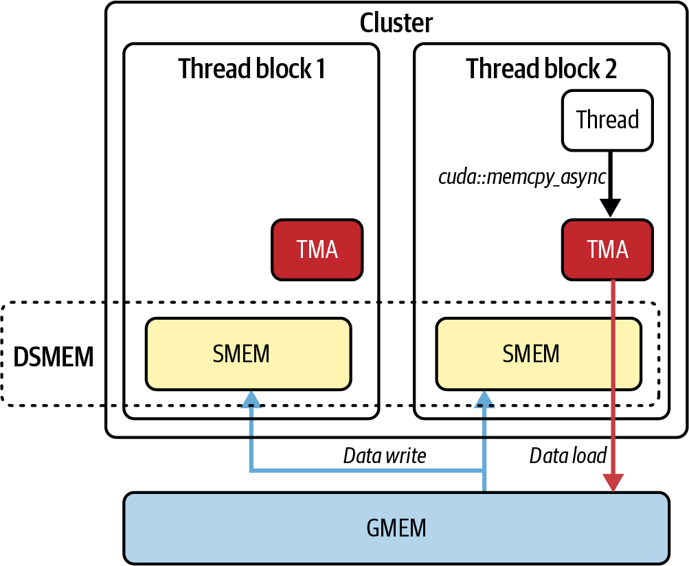</p>
<blockquote>
<p>Figure 11-11. TMA multicast: a leader CTA issues cp.async.bulk.tensor into DSMEM (cluster shared memory); the follower CTAs consume tiles using cluster.map<em>shared</em>rank; cuda::memcpy_async drives TMA</p>
</blockquote>
<p>当生产者 warp 用 TMA 多播加载数据时，消费者会在一个 C++ 块作用域屏障（cuda::barrier<cuda::thread_scope_block>）上自旋，然后再执行其矩阵乘步骤（do_compute()）。这让每个 tile 的加载与其乘加融合（FMA）操作能够在一个细粒度的多阶段软件流水线中交错进行，从而在核函数内部隐藏全局内存延迟。</p>
<blockquote>
<p>While the producer warp is loading data with TMA multicast, the consumers spin on a C++ block-scope barrier (cuda::barrier<cuda::thread_scope_block>) before executing their matrix-multiply steps (do_compute()). This lets each tile's load and its fused-multiply-add (FMA) operations interleave in a fine-grained, multistage software pipeline that hides global-memory latency inside the kernel.</p>
</blockquote>
<p>为了在 SM 之间协调工作，我们用 _<em>cluster<em>dims</em></em>(2,1,1) 标注这两个核函数。这会把成对的线程块分组到邻近的 SM 上。一次对 cluster.sync()（协作组对 PTX 的 mbarrier 指令的封装）的调用充当簇级屏障和共享内存栅栏。这样，簇内所有线程块都能看到相同的 TMA 加载数据，并能动态地重新平衡剩余的 tile。这种块间协作避免了 SM 空闲，并增强了 warp 专门化流水线的收益。</p>
<blockquote>
<p>To coordinate work across SMs, we annotate both kernels with _<em>cluster<em>dims</em></em>(2,1,1). This groups pairs of thread blocks on nearby SMs. A call to cluster.sync() (the cooperative-group's wrapper over PTX's mbarrier instructions) serves as a cluster-wide barrier and shared-memory fence. This way, all of the thread blocks in the cluster see the same TMA-loaded data and can dynamically rebalance remaining tiles. This interblock cooperation prevents idle SMs and increases the benefit of the warp-specialized pipeline.</p>
</blockquote>
<p>生产核函数通常使用 Tensor Memory Accelerator (TMA) cp.async.bulk.tensor 进行 2D 瓦片操作，并在多个线程块需要相同瓦片时在线程块集群间多播。</p>
<blockquote>
<p>Production kernels typically use the Tensor Memory Accelerator (TMA) cp.async.bulk.tensor for 2D tiles and multicast across a thread block cluster when multiple thread blocks need the same tile.</p>
</blockquote>
<p>考虑在 Blackwell 上使用基于描述符的 TMA 归约操作（例如，cp.reduce.async.bulk(.tensor)）在分块复制期间进行即时归约。在将小型归约融合到数据移动流水线时，优先使用基于描述符的加载/存储加上 TMA 归约操作。这将减少寄存器压力并改善重叠。</p>
<blockquote>
<p>Consider using descriptor-based TMA reduce operations (e.g., cp.reduce.async.bulk(.tensor)) for on-the-fly reductions during tiled copies on Blackwell. Prefer descriptor-based loads/stores plus TMA reduce operations when fusing small reductions into the data-movement pipeline. This will reduce register pressure and improve overlap.</p>
</blockquote>
<p>让我们通过回顾这个高性能 GEMM 流水线的三个特征来总结：</p>
<blockquote>
<p>Let's wrap up by revisiting the three characteristics of this high-performance GEMM pipeline:</p>
</blockquote>
<p><em>核内流水线化</em> 在每个线程块内部通过 warp 专门化实现，把工作细分开来，使生产者 warp 发出 cuda::memcpy_async 的 tile，而消费者 warp 在块作用域屏障上自旋。这让数据传输与计算操作完全重叠。</p>
<blockquote>
<p><strong>Intra-kernel pipelining</strong> - Achieved within each thread block using warp specialization to subdivide work so that producer warps issue cuda::memcpy_async tiles while consumer warps spin on a block-scope barrier. This lets data transfer and compute operations fully overlap.</p>
</blockquote>
<p><em>核间流水线化（Inter-kernel pipelining）</em> 使用 PDL，它让下一个 GEMM 核函数的处理能够在主核函数被完全拆除之前就开始（借助 cudaTriggerProgrammaticLaunchCompletion() → cudaGridDependencySynchronize() 机制）。这掩盖了核函数启动开销。</p>
<blockquote>
<p><strong>Inter-kernel pipelining</strong> - Uses PDL, which lets the next GEMM kernel's processing begin (using the cudaTriggerProgrammaticLaunchCompletion() → cudaGridDependencySynchronize() mechanism) before the primary kernel is completely torn down. This masks kernel-launch overhead.</p>
</blockquote>
<p><em>块间协作（Interblock cooperation）</em> 通过用 _<em>cluster<em>dims</em></em> 注解核函数，这段代码创建了被协同调度到邻近 SM 上的线程块对。再配合调用 cluster.sync()（基于 mbarrier 的簇屏障），这些线程块共享 TMA 多播数据，并在整个网格上动态负载均衡工作。</p>
<blockquote>
<p><strong>Interblock cooperation</strong> - By annotating kernels with _<em>cluster<em>dims</em></em>, this code creates thread block pairs that are coscheduled on nearby SMs. Along with calling cluster.sync() (the mbarrier-based cluster barrier), these thread blocks share TMA-multicast data and dynamically load balance work across the grid.</p>
</blockquote>
<p>简而言之，通过把 warp 级流水线化与 TMA、簇级同步与多播，以及使用 PDL 的核间重叠层层叠加，你就构建出一条高度重叠的流水线，它隐藏 DRAM 延迟、掩盖核函数启动开销，并最大化 Tensor Core 利用率。其结果是在每个阶段都得到高性能 GEMM：在 warp 内拷贝中、在跨线程块屏障中，以及在核函数交接期间。它们协同运作，让硬件持续繁忙、避免停顿。</p>
<blockquote>
<p>In short, by layering warp-level pipelining with TMA, cluster-level synchronization and multicast, and inter-kernel overlap using PDL, you form a highly overlapping pipeline that hides DRAM latency, masks kernel-launch overheads, and maximizes Tensor Core utilization. The result is a high-performance GEMM in every stage: within warp copies, cross-thread-block barriers, and during kernel handoffs. These operate together to keep the hardware busy and avoid stalls.</p>
</blockquote>
<h2 id="key-takeaways">关键要点 (Key Takeaways)<a class="headerlink" href="#key-takeaways" title="Permanent link">&para;</a></h2>
<p>本章涵盖了一些与 CUDA streams、流序内存分配器、基于事件的同步、核间流水线化、线程块簇以及 PDL 相关的进阶主题。它们有助于为推理和训练工作负载构建高效的流水线。以下是一些关键要点：</p>
<blockquote>
<p>This chapter covered some advanced topics related to CUDA streams, stream-ordered memory allocators, event-based synchronization, inter-kernel pipelining, thread block clusters, and PDLs. These help to create highly efficient pipelines for inference and training workloads. The following are some key takeaways:</p>
</blockquote>
<p><em>显式流与默认流（Explicit versus default streams）</em> 避免使用传统默认流（legacy default stream）（stream 0），它会串行化所有工作并充当全局屏障。取而代之，创建显式的非阻塞流（cudaStreamCreateWithFlags(..., cudaStreamNonBlocking)），使核函数与拷贝能够并发运行，而不会产生隐藏的同步。</p>
<blockquote>
<p><strong>Explicit versus default streams</strong> - Avoid the legacy default stream (stream 0), which serializes all work and acts as a global barrier. Instead, create explicit non-blocking streams (cudaStreamCreateWithFlags(..., cudaStreamNonBlocking)) so kernels and copies can run concurrently without hidden synchronizations.</p>
</blockquote>
<p><em>流序内存分配器（Stream-ordered memory allocator）</em> 使用 cudaMallocAsync 和 cudaFreeAsync 在特定 stream 内分配/释放设备内存。这个非阻塞分配器把请求记录到该 stream 的队列中，避免全局设备同步，并让分配能够与在途的核函数和拷贝相重叠。</p>
<blockquote>
<p><strong>Stream-ordered memory allocator</strong> - Use cudaMallocAsync and cudaFreeAsync to allocate/free device memory within a specific stream. This nonblocking allocator records requests in the stream's queue, avoids global device synchronizations, and enables allocation overlap with in-flight kernels and copies.</p>
</blockquote>
<p><em>重叠 H2D、计算与 D2H（Overlapping H2D, compute, and D2H）</em> 通过在不同 stream 上入队异步的主机到设备拷贝（cudaMemcpyAsync）、核函数启动以及设备到主机拷贝，你可以实现三路重叠。当一个 stream 运行核函数时，另一个 stream 可以把下一批数据拷贝到设备（H2D），而第三个 stream 则可以把结果拷回主机（D2H）。这隐藏了延迟并减少了空闲时段。</p>
<blockquote>
<p><strong>Overlapping H2D, compute, and D2H</strong> - By enqueuing asynchronous host-to-device (cudaMemcpyAsync), kernel launches, and device-to-host copies on different streams, you can achieve three-way overlap. While one stream runs a kernel, another can copy the next batch H2D, and a third can copy results D2H. This hides latency and reduces idle periods.</p>
</blockquote>
<p><em>用于细粒度同步的 CUDA 事件（CUDA events for fine-grained synchronization）</em> 使用 cudaEventRecord 和 cudaStreamWaitEvent 来协调跨 stream 的生产者—消费者依赖，而不必让整个 GPU 或 CPU 停顿。事件让消费者 stream 能够精确地等待，直到生产者 stream 完成一次拷贝或核函数，从而保持最大并发度。</p>
<blockquote>
<p><strong>CUDA events for fine-grained synchronization</strong> - Use cudaEventRecord and cudaStreamWaitEvent to coordinate producer-consumer dependencies across streams without stalling the entire GPU or CPU. Events enable a consumer stream to wait precisely until a producer stream finishes a copy or kernel, preserving maximum concurrency.</p>
</blockquote>
<p><em>核间流水线化（Inter-kernel pipelining）</em> 把核函数内部的 warp 专门化（多角色）、两阶段（双缓冲）流水线与多 stream 启动结合起来。在不同的 stream 中启动一个 warp 专门化核函数（loader → compute → storer）的多个实例，向 GPU 持续投喂相继的小批量。这将核内内存/计算重叠与核间并发结合在了一起。</p>
<blockquote>
<p><strong>Inter-kernel pipelining</strong> - Combine warp-specialized (multirole), two-stage (double-buffered) pipeline within a kernel with multistream launches. Launching multiple instances of a warp-specialized kernel (loader → compute → storer) in separate streams feeds successive mini-batches into the GPU. This combines intra-kernel memory/compute overlap with inter-kernel concurrency.</p>
</blockquote>
<p><em>线程块簇配合 streams（Thread block clusters with streams）</em> 把核内 warp 专门化流水线扩展为覆盖整个网格的线程块簇（协作式启动），可让 loader/compute/storer warp 跨越多个块协同工作。在多个 stream 中启动这些协作式核函数，使后续批次的主机端分配与拷贝能够在某个协作式核函数执行期间进行。</p>
<blockquote>
<p><strong>Thread block clusters with streams</strong> - Extending intra-kernel warp-specialized pipelines to a grid-wide thread block cluster (cooperative launch) allows loader/compute/storer warps across blocks. Launching these cooperative kernels in multiple streams lets host-side allocations and copies for subsequent batches occur while a cooperative kernel is executing.</p>
</blockquote>
<p><em>核内信号与借助 PDL 的重叠（In-kernel signaling and overlap with PDL）</em> 核函数 A 在其数据写入被刷新后调用 cudaTriggerProgrammaticLaunchCompletion()，核函数 B 则使用 cudaGridDependencySynchronize() 来等待该信号。这让核函数 B 的序言能够开始，并与 A 的收尾相重叠——无需 CPU 介入。</p>
<blockquote>
<p><strong>In-kernel signaling and overlap with PDL</strong> - Kernel A calls cudaTriggerProgrammaticLaunchCompletion() once its data writes are flushed, and Kernel B uses cudaGridDependencySynchronize() to wait on that signal. This allows Kernel B's prologue to begin and overlap with A's epilogue-without CPU intervention.</p>
</blockquote>
<p><em>主机端 PDL 设置（Host-side PDL setup）</em> 主机通过 cudaLaunchKernelExC() 配置核函数 B 的启动，并用一个设置了 cudaLaunchAttributeProgrammaticStreamSerialization 的 cudaLaunchConfig_t。这让驱动能够提前入队 B 并最大化核间重叠。PDL 在主核函数中使用 cudaTriggerProgrammaticLaunchCompletion，在依赖核函数中使用 cudaGridDependencySynchronize，并在主机端使用 cudaLaunchAttributeProgrammaticStreamSerialization 启动属性。</p>
<blockquote>
<p><strong>Host-side PDL setup</strong> - The host configures Kernel B's launch via cudaLaunchKernelExC() with a cudaLaunchConfig_t that sets cudaLaunchAttributeProgrammaticStreamSerialization on. This allows the driver to enqueue B early and maximize inter-kernel overlap. PDL uses cudaTriggerProgrammaticLaunchCompletion in the primary kernel, cudaGridDependencySynchronize in the dependent kernel, and the cudaLaunchAttributeProgrammaticStreamSerialization launch attribute on the host.</p>
</blockquote>
<h2 id="conclusion">结论 (Conclusion)<a class="headerlink" href="#conclusion" title="Permanent link">&para;</a></h2>
<p>总而言之，基于 CUDA streams 的核间并发已经从一种手动优化演变为现代 AI 框架与 GPU 运行时所使用的自动特性。通过理解诸如 streams、资源占用（resource occupancy）与同步点等核心原理，开发者可以最大化 GPU 利用率。</p>
<blockquote>
<p>In conclusion, inter-kernel concurrency with CUDA streams has evolved from a manual optimization to an automatic feature used by modern AI frameworks and GPU runtimes. By understanding the core principles such as streams, resource occupancy, and synchronization points, developers can maximize GPU utilization.</p>
</blockquote>
<p>核间并发对于在现代工作负载中最大化 GPU 利用率至关重要，它通过在单个 GPU 内部以及跨多个 GPU 之间重叠核函数执行与数据传输来实现这一点。随着硬件不断增加更多并行性——而软件抽象掉越来越多的调度复杂性——理解如何最大化并发，是从你的高性能 AI 系统硬件中榨取最大价值的关键一环。</p>
<blockquote>
<p>Inter-kernel concurrency is critical for maximizing GPU utilization in modern workloads by overlapping kernel execution and data transfers both within a single GPU and across multiple GPUs. As hardware continues to add more parallelism-and software abstracts more of the scheduling complexity-understanding how to maximize concurrency is a critical part of getting the most from your high-performance AI system hardware.</p>
</blockquote>
<p>本章演示了如何在多个 CUDA stream 之间编排核函数、内存操作与分配，从而让所有 GPU 硬件单元都保持活跃运行。这些硬件单元包括计算流水线、DMA 引擎与互连。CUDA streams 充当基础机制，把核函数、内存操作与分配入队到相互独立的队列中，让 GPU 的计算引擎与 DMA 引擎能够同时运行。</p>
<blockquote>
<p>This chapter demonstrated how to orchestrate kernels, memory operations, and allocations across multiple CUDA streams to keep all GPU hardware units actively running. These hardware units include compute pipelines, DMA engines, and interconnects. CUDA streams serve as the foundational mechanism to enqueue kernels, memory operations, and allocations in independent queues, allowing the GPU's compute engines and DMA engines to run simultaneously.</p>
</blockquote>
<p>通过避开默认流的隐藏屏障、利用流序分配器、用事件做精确同步，以及把核内 warp 专门化与核间多 stream 流水线相结合（并扩展到第 10 章的线程块簇），你即使面对复杂的 LLM 工作负载，也能达到接近峰值的利用率。</p>
<blockquote>
<p>By avoiding the default stream's hidden barriers, leveraging the stream-ordered allocator, employing events for precise synchronization, and combining intra-kernel warp specialization with inter-kernel multistream pipelines (extending to thread block clusters from Chapter 10), you can achieve near-peak utilization even for complex LLM workloads.</p>
</blockquote>
<p>在多 GPU 场景中，跨不同 stream 重叠点对点（peer-to-peer，P2P）传输、集合通信（collective communication）与计算，可进一步压缩空闲时间。我们回顾了第 10 章，展示了如何用 CUDA Graphs 捕获这些 stream 工作流，以降低重复迭代时的 CPU 开销。</p>
<blockquote>
<p>In multi-GPU contexts, overlapping peer-to-peer transfers, collective communications, and computations across distinct streams further minimize idle time. We looked back at Chapter 10 by showing how to capture these stream workflows using CUDA Graphs to reduce CPU overhead for repeated iterations.</p>
</blockquote>
<p>在下一章，我们将进一步深入，并在这些原理之上，引入动态核函数编排以及借助动态并行（dynamic parallelism）与 CUDA Graphs 的元调度。我们将在运行时协调整条核函数与数据搬运的流水线——以适应不断变化的工作负载。这种动态资源均衡与设备端编排，将把我们推向大规模 AI 系统性能优化的下一个层次。</p>
<blockquote>
<p>In the next chapter, we will dive even deeper and build upon these principles by introducing dynamic kernel orchestration and meta-scheduling with dynamic parallelism and CUDA Graphs. We'll coordinate entire pipelines of kernels and data movements-at runtime-to adapt to changing workloads. This dynamic resource balancing and device-side orchestration will push us to the next level of performance optimizations for large-scale AI systems.</p>
</blockquote>


  
    
  
  
    
  


  <aside class="md-source-file">
    
      
  <span class="md-source-file__fact">
    <span class="md-icon" title="最后更新">
      <svg xmlns="http://www.w3.org/2000/svg" viewBox="0 0 24 24"><path d="M21 13.1c-.1 0-.3.1-.4.2l-1 1 2.1 2.1 1-1c.2-.2.2-.6 0-.8l-1.3-1.3c-.1-.1-.2-.2-.4-.2m-1.9 1.8-6.1 6V23h2.1l6.1-6.1zM12.5 7v5.2l4 2.4-1 1L11 13V7zM11 21.9c-5.1-.5-9-4.8-9-9.9C2 6.5 6.5 2 12 2c5.3 0 9.6 4.1 10 9.3-.3-.1-.6-.2-1-.2s-.7.1-1 .2C19.6 7.2 16.2 4 12 4c-4.4 0-8 3.6-8 8 0 4.1 3.1 7.5 7.1 7.9l-.1.2z"/></svg>
    </span>
    <span class="git-revision-date-localized-plugin git-revision-date-localized-plugin-datetime" title="2026年11月23日 04:08:14 UTC">2026年11月23日 04:08:14</span>
  </span>

    
    
      
  <span class="md-source-file__fact">
    <span class="md-icon" title="创建日期">
      <svg xmlns="http://www.w3.org/2000/svg" viewBox="0 0 24 24"><path d="M14.47 15.08 11 13V7h1.5v5.25l3.08 1.83c-.41.28-.79.62-1.11 1m-1.39 4.84c-.36.05-.71.08-1.08.08-4.42 0-8-3.58-8-8s3.58-8 8-8 8 3.58 8 8c0 .37-.03.72-.08 1.08.69.1 1.33.32 1.92.64.1-.56.16-1.13.16-1.72 0-5.5-4.5-10-10-10S2 6.5 2 12s4.47 10 10 10c.59 0 1.16-.06 1.72-.16-.32-.59-.54-1.23-.64-1.92M18 15v3h-3v2h3v3h2v-3h3v-2h-3v-3z"/></svg>
    </span>
    <span class="git-revision-date-localized-plugin git-revision-date-localized-plugin-datetime" title="2026年2月19日 05:28:21 UTC">2026年2月19日 05:28:21</span>
  </span>

    
    
    
  </aside>


                
              </article>
            </div>
          
          
<script>var target=document.getElementById(location.hash.slice(1));target&&target.name&&(target.checked=target.name.startsWith("__tabbed_"))</script>
        </div>
        
          <button type="button" class="md-top md-icon" data-md-component="top" hidden>
  
  <svg xmlns="http://www.w3.org/2000/svg" viewBox="0 0 24 24"><path d="M13 20h-2V8l-5.5 5.5-1.42-1.42L12 4.16l7.92 7.92-1.42 1.42L13 8z"/></svg>
  回到页面顶部
</button>
        
      </main>
      
        <footer class="md-footer">
  
  <div class="md-footer-meta md-typeset">
    <div class="md-footer-meta__inner md-grid">
      <div class="md-copyright">
  
  
    Made with
    <a href="https://squidfunk.github.io/mkdocs-material/" target="_blank" rel="noopener">
      Material for MkDocs
    </a>
  
</div>
      
        
<div class="md-social">
  
    
    
    
    
      
      
    
    <a href="https://github.com/notlate-cn/ai-systems-performance-engeering" target="_blank" rel="noopener" title="github.com" class="md-social__link">
      <svg xmlns="http://www.w3.org/2000/svg" viewBox="0 0 512 512"><!--! Font Awesome Free 7.1.0 by @fontawesome - https://fontawesome.com License - https://fontawesome.com/license/free (Icons: CC BY 4.0, Fonts: SIL OFL 1.1, Code: MIT License) Copyright 2025 Fonticons, Inc.--><path d="M173.9 397.4c0 2-2.3 3.6-5.2 3.6-3.3.3-5.6-1.3-5.6-3.6 0-2 2.3-3.6 5.2-3.6 3-.3 5.6 1.3 5.6 3.6m-31.1-4.5c-.7 2 1.3 4.3 4.3 4.9 2.6 1 5.6 0 6.2-2s-1.3-4.3-4.3-5.2c-2.6-.7-5.5.3-6.2 2.3m44.2-1.7c-2.9.7-4.9 2.6-4.6 4.9.3 2 2.9 3.3 5.9 2.6 2.9-.7 4.9-2.6 4.6-4.6-.3-1.9-3-3.2-5.9-2.9M252.8 8C114.1 8 8 113.3 8 252c0 110.9 69.8 205.8 169.5 239.2 12.8 2.3 17.3-5.6 17.3-12.1 0-6.2-.3-40.4-.3-61.4 0 0-70 15-84.7-29.8 0 0-11.4-29.1-27.8-36.6 0 0-22.9-15.7 1.6-15.4 0 0 24.9 2 38.6 25.8 21.9 38.6 58.6 27.5 72.9 20.9 2.3-16 8.8-27.1 16-33.7-55.9-6.2-112.3-14.3-112.3-110.5 0-27.5 7.6-41.3 23.6-58.9-2.6-6.5-11.1-33.3 2.6-67.9 20.9-6.5 69 27 69 27 20-5.6 41.5-8.5 62.8-8.5s42.8 2.9 62.8 8.5c0 0 48.1-33.6 69-27 13.7 34.7 5.2 61.4 2.6 67.9 16 17.7 25.8 31.5 25.8 58.9 0 96.5-58.9 104.2-114.8 110.5 9.2 7.9 17 22.9 17 46.4 0 33.7-.3 75.4-.3 83.6 0 6.5 4.6 14.4 17.3 12.1C436.2 457.8 504 362.9 504 252 504 113.3 391.5 8 252.8 8M105.2 352.9c-1.3 1-1 3.3.7 5.2 1.6 1.6 3.9 2.3 5.2 1 1.3-1 1-3.3-.7-5.2-1.6-1.6-3.9-2.3-5.2-1m-10.8-8.1c-.7 1.3.3 2.9 2.3 3.9 1.6 1 3.6.7 4.3-.7.7-1.3-.3-2.9-2.3-3.9-2-.6-3.6-.3-4.3.7m32.4 35.6c-1.6 1.3-1 4.3 1.3 6.2 2.3 2.3 5.2 2.6 6.5 1 1.3-1.3.7-4.3-1.3-6.2-2.2-2.3-5.2-2.6-6.5-1m-11.4-14.7c-1.6 1-1.6 3.6 0 5.9s4.3 3.3 5.6 2.3c1.6-1.3 1.6-3.9 0-6.2-1.4-2.3-4-3.3-5.6-2"/></svg>
    </a>
  
</div>
      
    </div>
  </div>
</footer>
      
    </div>
    <div class="md-dialog" data-md-component="dialog">
      <div class="md-dialog__inner md-typeset"></div>
    </div>
    
    
    
      
      
      <script id="__config" type="application/json">{"annotate": null, "base": "../..", "features": ["navigation.instant", "navigation.tracking", "navigation.sections", "navigation.expand", "navigation.top", "search.suggest", "search.highlight", "search.share", "content.code.copy", "content.action.edit"], "search": "../../assets/javascripts/workers/search.a7633da7.min.js", "tags": null, "translations": {"clipboard.copied": "\u5df2\u590d\u5236", "clipboard.copy": "\u590d\u5236", "search.result.more.one": "\u5728\u8be5\u9875\u4e0a\u8fd8\u6709 1 \u4e2a\u7b26\u5408\u6761\u4ef6\u7684\u7ed3\u679c", "search.result.more.other": "\u5728\u8be5\u9875\u4e0a\u8fd8\u6709 # \u4e2a\u7b26\u5408\u6761\u4ef6\u7684\u7ed3\u679c", "search.result.none": "\u6ca1\u6709\u627e\u5230\u7b26\u5408\u6761\u4ef6\u7684\u7ed3\u679c", "search.result.one": "\u627e\u5230 1 \u4e2a\u7b26\u5408\u6761\u4ef6\u7684\u7ed3\u679c", "search.result.other": "# \u4e2a\u7b26\u5408\u6761\u4ef6\u7684\u7ed3\u679c", "search.result.placeholder": "\u952e\u5165\u4ee5\u5f00\u59cb\u641c\u7d22", "search.result.term.missing": "\u7f3a\u5c11", "select.version": "\u9009\u62e9\u5f53\u524d\u7248\u672c"}, "version": null}</script>
    
    
      <script src="../../assets/javascripts/bundle.a5f9d56c.min.js"></script>
      
        <script src="https://cdn.jsdelivr.net/npm/@supabase/supabase-js@2"></script>
      
        <script src="../../assets/js/toggle-english.js"></script>
      
        <script src="../../assets/js/annotation-config.js"></script>
      
        <script src="../../assets/js/annotation.js"></script>
      
        <script src="../../assets/js/page-stats.js"></script>
      
    
  </body>
</html>